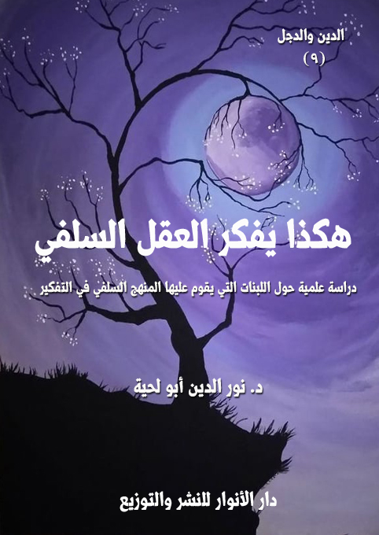

الكتاب: هكذا يفكر العقل السلفي
المؤلف: أ.د. نور الدين أبو لحية
الناشر: دار الأنوار للنشر والتوزيع
الطبعة: الأولى، 1437 هـ
عدد الصفحات: 328
ISBN: 978-3-330-84602-9
لمطالعة الكتاب من تطبيق مؤلفاتي المجاني وهو أحسن وأيسر: هنا

التعريف بالكتاب
يتناول هذا الكتاب ـ من خلال الأدلة والوثائق الكثيرة ـ اللبنات التي يقوم عليها المنهج السلفي في التفكير، وهي سبعة:
الرجال.. لا الحقائق: فالعقل السلفي ينطلق من صناعة أصنام السلف التي يتلقى عنها كل حقائق الدين، ويسلم لها تسليما مطلقا.
الحشو.. لا التحقيق: فالعقل السلفي يجمع كل ما روي عن سلفه من متناقضات.. ويسلم لها جميعا.
الرواية.. لا الدارية: فالعقل السلفي يهتم بالحفظ، أكثر من اهتمامه بالفهم.. ويهتم بالرواية أكثر من اهتمامه بالتحقيق.
التوهم.. لا التعقل: فالعقل السلفي نتيجة بنائه الروائي يعتمد في تفكيره على الخيال، ولهذا حول العقيدة التنزيهية إلى عقيدة تجسيمية تصويرية يتسنى له فهمها.
الحسية.. لا المعنوية: فالعقل السلفي يغلب الجسد على الروح، والشهوة على العقل، والبهيمية على الإنسانية، والحرفية على المقاصدية.
الشدة.. لا اللين: أو القسوة بدل الرحمة، أو العنف بدل الرفق، وهو ناشئ من غلبة السبعية على الإنسانية، وغلبة العدوانية على السلمية في العقل السلفي.
المدنس.. لا المقدس: فالعقل السلفي يختلط لديه المدنس بالمقدس، ويصعب عليه التمييز بينهما، ولذلك يسلم لهما جميعا، فيتحول المقدس بذلك إلى مدنس.
هكذا يفكر العقل السلفي (6)
يخطئ الكثير من الباحثين في نظرتهم للظاهرة السلفية حين يقصرونها على مجرد سلوكات ومواقف وبعض الأفكار المتطرفة التي قد يتبناها بعض الناس في مرحلة من حياتهم، أو في كل حياتهم نتيجة فهم متشدد للدين.. فهذه نظرة سطحية محدودة لا تمثل الواقع السلفي، ولا تستطيع بهذا التحديد أن تفهمه، ولا أن تعالجه.
لأن الظاهرة السلفية في حقيقتها وجوهرها منهج في التفكير لا يختلف عن المناهج التي اعتمدتها المدارس الفكرية المختلفة كالفلاسفة والمتكلمين والصوفية وغيرهم..
فكما أن الفلاسفة يعتمدون العقل المجرد لدراسة الظواهر المختلفة سواء كانت مجردة أو حسية لفهم الوجود، وكيفية التعامل معه.. وكما أن المتكلمين يحاولون التوفيق بين العقل المجرد والنص المقدس لفهم حقائق الوجود.. وكما أن الصوفية يعتمدون تجريد الباطن ليصبح محلا صالحا لتنزل حقائق الوجود.. فهكذا السلفية لهم منهجهم الذي نحاول في هذا الكتاب أن نتعرف عليه لنفهم بعد ذلك المصدر الذي ينبع منه فكرهم وسلوكهم ومواقفهم.
ذلك أن التفكير هو المصنع الذي ينتج الأفكار.. والأفكار هي المصنع الذي ينتج المواقف والسلوكات.. ولذلك لا يمكن أن نفهم الظاهرة السلفية، ونحن نجهل المنبع الأساسي الذي يصدر منه كل ذلك الفكر والسلوك والمواقف.
ونحب أن نستبق النتائج لنذكر أن العقل السلفي يختلف اختلافا جذريا عن العقل الفلسفي والعقل الكلامي، لأن كليهما يحاول أن يبذل جهدا فكريا للوصول إلى الحقائق سواء باعتماده على العقل المجرد، أو مزجه بين العقل المجرد والوحي الإلهي.. والعقل السلفي لا يطيق مثل هذا الجهد، وليس لديه الآليات التي تسمح له بذلك، ولهذا نراه يعادي كلا العقلين، ويتهمهما بالهرطقة والزندقة.
هكذا يفكر العقل السلفي (7)
أما العقل الصوفي، فهو مع اختلافه الشديد عنه، إلا أنه يتفق معه في ناحية التجرد للوصول إلى الحقيقة.. ويختلف عنه في الجهة التي يستقبل منها الحقيقة.. فبينما يرى الصوفية أنها الإلهام والعلم اللدني وتلك الفتوحات الإلهية التي يفيضها الله على قلب الصوفي بعد تحققه بالعبودية والإخلاص والتجرد.. أما السلفي فيرى أنها [السلف]، أي أن السلفي يتجرد من عقله وتفكيره وتأمله ليترك لسلفه الحرية في أن يضع في عقله ما يشاء.. باعتبار السلف كائنا مقدسا، ولا ينطق عن الهوى، ولا تعتريه الأخطاء.. فلذلك كان ـ في تصوره ـ مصدرا صالحا لتلقي الحقائق من دون تلك الرياضات الشديدة التي يمارسها الصوفية، ومن دون ذلك التأمل العميق الذي يمارسه الفلاسقة أو المتكلمون.
ولهذا فإن العقل السلفي أكثر العقول راحة، لأنه لا يحتاج سوى لمعرفة رجال السلف الذين يأخذ عنهم دينه، ثم يسمع ما ذكروا، ويحفظه، ويظل يردده، وبقدر حفظه لمقولات السلف بقدر تمكنه من الدين والعلم.
وهو في استقباله لما قال السلف لا يحتاج إلى عرض ما ذكروا على عقله المجرد الفطري ـ كما يفعل سائر الناس ـ لأن العقل حجاب، وقيد يحول بينه وبين الإيمان الذي يقتضي الاتباع المجرد.
ولهذا فإن العقل السلفي يمزج بشكل عجيب بين المتناقضات.. فهو يمزج بين المقدس والمدنس.. وبين الحقيقة والخرافة.. ولا يشعر بأي تناقض بينها.. لأن دوره هو الحفظ والسماع والرواية، لا التفكير والنقد والدراية.
وهذا الذي ذكرناه وانطلقنا منه لم نقله من عند أنفسنا، بل هو مجرد وصف لما يذكرونه في كل كتبهم.. فالسلفي الخالص عندهم هو الذي لا يفكر أبدا.. حتى أنه لا يتدبر القرآن الكريم ليستنبط منه أنواع العلوم والفوائد.. لأن التدبر حكر على السلف.. أما الخلف فليس له إلا أن يسمع ويطيع لما يقوله جنرالات السلف الصالح.
هكذا يفكر العقل السلفي (8)
ولهذا لا يكتفون عند ذكرهم لضرورة الرجوع للكتاب والسنة لاستنباط الحقائق بالكتاب والسنة، بل نراهم يضمون إليهما شرطا أساسيا، وهو [بفهم السلف]، أي أننا لسنا أحرارا في أن نفهم الكتاب والسنة بحسب ما تقتضيه اللغة والعقل ـ كما يقول المتكلمون والفقهاء ـ أو بحسب ما يفتح الله علينا به ـ كما يقول الصوفية ـ وإنما ينبغي ان نفهمهما بحسب ما يرويه لنا السلف، فهم أقدر على فهم الدين منا.
ولأهمية هذه النقطة في فهمنا للعقل السلفي، سأنقل هنا بتصرف حوارا طويلا جرى بين الشيخ الألباني والأستاذ عبدالحليم أبو شقة مؤلف كتاب [تحرير المرأة في عصر الرسالة]، والتي يمارس فيها الألباني دور الموجه.. ويمارس فيها الأستاذ دور المريد أو السلفي البسيط الذي ليس عليه سوى السمع والطاعة، فمن قال لشيخه: لم.. لا يفلح أبدا.
وتبدا المحاورة من سؤال الشيخ الألباني للأستاذ: إن قيل لك ما مذهبك فما أنت قائل؟
قال الأستاذ: مسلم.
قال الألباني: هذا لا يكفي.
قال الأستاذ: لقد سمانا الله المسلمين، قال تعالى: {هُوَ سَمَّاكُمُ الْمُسْلِمِينَ} [الحج 78]
قال الألباني: هذا جواب صحيح لو كنا في العهد الأول قبل انتشار الفرق، فلو سألنا الآن أي مسلم من هذه الفرق التي نختلف معها جذريا في العقيدة لما اختلف جوابه عن هذه الكلمة فكلهم يقول ـ الشيعي – الرافضي – الدرزي – النصيري – العلوي ـ: أنا مسلم إذن هذا لا يكفي في هذه الأيام.
قال الأستاذ: إذن أقول أنا مسلم على الكتاب والسنة.
قال الألباني: أيضاً هذا لا يكفي.
هكذا يفكر العقل السلفي (9)
قال الأستاذ: لماذا؟
قال الألباني: هل تجد واحداً من هؤلاء الذين ضربناهم مثلا يقول أنا مسلم لست على الكتاب والسنة، فمن الذي يقول أنا لست علي الكتاب والسنة؟
ثم أخذ الشيخ الألباني يبين له أهمية الضميمة الثالثة [الكتاب والسنة بفهم السلف الصالح]، وبعد أن اقتنع الأستاذ بذلك قال: إذن أنا مسلم على الكتاب والسنة بفهم السلف الصالح.
قال الألباني: إذا سألك سائل عن مذهبك فهل تقول له ذلك؟
قال الأستاذ: نعم.
قال الألباني: ما رأيك نختصرها لغة لأن خير الكلام ما قل ودل فنقول: (سلفي)
قال الأستاذ: قد أجامالك وأقول لك نعم، لكن اعتقادي ما سبق، لأن أول ما ينصرف فكر الإنسان عندما يسمع أنك سلفي إلي أشياء كثيرة من ممارسات فيها شدة تصل إلي الغلظة قد تقع من السلفيين.
قال الألباني: هب صحة كلامك فإذا قلت مسلم ألا ينصرف إلي شيعي أو دُرزي أو اسماعيلي؟
قال الأستاذ: من الممكن لكن أكون قد اتبعت الآية الكريمة {هُوَ سَمَّاكُمُ الْمُسْلِمِينَ} [الحج 78]
قال الألباني: لا يا أخي إنك لم تتبع الآية، لأن هذه الآية تعني الإسلام الصحيح، ينبغي أن يخاطب الناس علي قدر عقولهم، فهل يفهم أحد منك أنك مسلم بالمعني المراد في الآية؟ والمحاذير التي ذكرتها آنفا قد تكون صحيحة أو غير ذلك لأن قولك شدة قد يكون هذا في بعض الأفراد وليس كمنهج عقدي علمي، فدعك من الأفراد لأننا نتكلم عن المنهج، لأننا إذا قلنا شيعي أو دُرزي أو خارجي أو صوفي أو معتزلي ترد المحاذير التي
هكذا يفكر العقل السلفي (10)
ذكرتها، إذن فليس هذا موضوعنا فنحن نبحث عن اسم يدل علي مذهب الإنسان الذي يدين لله به.
ثم قال الألباني: أليس الصحابة كلهم مسلمين؟
قال الأستاذ: طبعاً.
قال الألباني: لكن فيهم من سرق وزنى، وهذا لا يسوغ لأحدهم أن يقول أنا لست مسلماً، بل هو مسلم ومؤمن بالله ورسوله كمنهج، لكنه قد خالف منهجه أحياناً لأنه غير معصوم، ولذلك فنحن ـ بارك الله فيك ـ نتكلم عن كلمة تدل علي عقيدتنا وفكرنا ومنطلقنا في حياتنا فيما يتعلق بشؤون ديننا الذي نعبد الله به، وأما فلان متشدد أو متساهل فأمر آخر.
ثم قال الشيخ الألباني: أريد أن تفكر في هذه الكلمة الموجزة حتي لا تبقي مصراً علي كلمة مسلم وأنت تعلم أنه لا يوجد أحد يفهم منك ما تريده أبداً فإذاً خاطب الناس على قدر عقولهم وبارك الله لك في تلبيتك (1).
هذه هي المحاورة، ولا نقول المناظرة، لأن أحد الطرفين كان مجرد ملقن، والآخر مستمع، وهي توضح الأسس التي يقوم عليها المنهج السلفي، فهو منهج يعتمد على السلف لا على العقل.. ولا حتى على النقل.. لأن النقل أصبح ملكا للأمة جميعا، وهم يحتاجون أن ينفردوا عنها، وكان الانفراد باتخاذ سلف محدد يتميزون به عن غيرهم.
وما ذكره الألباني هو نفس ما يذكره جميع أعلام السلفية ابتداء من متقدميهم الذين ألفوا الكتب الكثيرة في نصرة علم السلف على علم الخلف..
يقول ابن تيمية: (ولا عيب على من أظهر مذهب السلف وانتسب إليه واعتزي إليه، بل يجب قبول ذلك منه بالاتفاق، فإن مذهب السلف لا يكون إلا حقا) (2)
__________
(1) نقلا عن: لماذا اخترت المنهج السلفي، للشيخ سليم الهلالي، ص 36.
(2) الفتاوى 4/ 149.
هكذا يفكر العقل السلفي (11)
وقال المؤرخ السلفي الكبير الحافظ الذهبي في ترجمته للحافظ الدارقطني: (لم يدخل الرجل أبدا في علم الكلام ولا الجدال ولا خاض في ذلك، بل كان سلفيا) (1)
وسُئل الشيخ ابن باز فى محاضرة ألقيت فى الطائف بعنوان (حق المسلم): ما تقول فى من تسمى بالسلفي والأثري هل هى تزكية؟ فأجاب: (إذا كان صادقاً أنه سلفي أو أثري فلا بأس مثلما كان السلف يقولون: فلان أثري وسلفي تزكية لابد منها تزكية واجبة)
وانطلاقا من هذا، فإن حوارات السلفية مع المخالفين لا تنطلق من المناقشات العلمية العقلية الهادئة التي ينتصر كل طرف فيها لحجته، بل إنها تنطلق من ذلك الاستعلاء الذي يتصورونه لأنفسهم.. فهم يرون أن الحق لهم، لأن أقوال السلف معهم.. ويرون أن غيرهم على الباطل، لأنه يعمل عقله، أو يفكر بطريقة تختلف عن تفكير السلف.
ومن الأمثلة على ذلك أن الشيخ صالح الفوزان سئل: (هل من تسمى بالسلفية يعتبر حزبي؟)، فأجاب: (التسمي بالسلفية إذا كان حقيقة لا بأس به أما إذا كان مجرد دعوى، فإنه لا يجوز له أن يتسمى بالسلفية وهو على غير منهج السلف، فالأشاعرة - مثلا - يقولون: نحن أهل السنة والجماعة، وهذا غير صحيح، لأن الذي هم عليه ليس هو منهج أهل السنة والجماعة، كذلك المعتزلة يسمون أنفسهم بالموحدين.. فالذي يزعم أنه على مذهب أهل السنة والجماعة ويترك المخالفين، أما أنه يريد أن يجمع بين الضب، والنون: كما يقولون، أي: يجمع بين دواب الصحراء ودواب البحر، فلا يمكن هذا أو يجمع بين النار والماء في كفة، فلا يجتمع لأهل السنة والجماعة مع مذهب المخالفين لهم كالخوارج، والمعتزلة، والحزبين ممن يسمونهم: المسلم المعاصر، وهو الذي يريد أن يجمع الضلالات أهل العصر مع منهج السلف، فلا يصلح آخر هذه الأمة إلا ما أصلح أولها. فحاصل أنه لا بد من تمييز الأمور وتمحيصها)
__________
(1) سير أعلام النبلاء 16/ 457.
هكذا يفكر العقل السلفي (12)
وسئل في محل آخر: (نسمع بعض الناس يقولون: لا يجوز الانتساب إلى السلف، ويَعد السلفية حزب من الأحزاب القائمة في الوقت الحالي)، فأجاب الشيخ صالح الفوزان: (نعم السلف حزب الله، السلف حزب؛ لكنهم حزب الله، الله -جل وعلا- يقول: {أُولَئِكَ حِزْبُ اللَّهِ أَلَا إِنَّ حِزْبَ اللَّهِ هُمُ الْمُفْلِحُونَ} [المجادلة: 22]، السلف انحازوا إلى الكتاب والسنة وإلى الصحابة فصاروا حزب الله، وأما من خالفهم فهم أحزاب ضالة مخالفة.. الأحزاب تختلف.. هناك حزب الله، وهناك حزب الشيطان، كما في آخر سورة المجادلة، هناك حزب الله، وهناك حزب الشيطان. ز فالأحزاب تختلف. فمن كان على منهج الكتاب والسنة؛ فهو حزب الله. ومن كان على منهج الضلال؛ فهو حزب الشيطان. وأنت تَخيّر، تكون من حزب الله، أو تكون من حزب الشيطان! تَخيّر!!) (1)
انطلاقا من هذه التصريحات، فإن البناء العقلي للسلفية ينطلق من تحديد الرجال الذين يأخذون عنهم فهم القرآن والسنة.. ويأخذون عنهم كل تصوراتهم للكون والإنسان والحياة.. ويأخذون عنهم بعد ذلك مواقفهم من الموافقين أو المخالفين..
يقول الفوزان في الرد على قول البوطي (إن السلفية لا تعني إلا مرحلة زمنية): (ونقول: هذا التفسير للسلفية بأنها مرحلة زمنية وليست جماعة تفسير غريب وباطل، فهل يقال للمرحلة الزمنية بأنها سلفية؟! هذا لم يقل به أحد من البشر، وإنما تطلق السلفية على الجماعة المؤمنة الذين عاشوا في العصر الأول من عصور الإسلام، والتزموا بكتاب الله وسنة رسوله صلى الله عليه وآله وسلم من المهاجرين والأنصار والذين اتبعوهم بإحسان ووصفهم الرسول صلى الله عليه وآله وسلم بقوله: (خيركم قرني ثم الذين يلونهم ثم الذين يلونهم) الحديث، فهذا وصف لجماعة وليس لمرحلة زمنية، ولما ذكر صلى الله عليه وآله وسلم افتراق الأمة فيما بعد قال عن الفرق كلها: (إنها في النار إلا واحدة)، ووصف هذه الواحدة بأنها هي التي تتبع منهج السلف، وتسير عليه، فقال: (هم
__________
(1) الأجوبة المفيدة عن أسئلة المناهج الجديدة ص 16.
هكذا يفكر العقل السلفي (13)
من كان على مثل ما أنا عليه اليوم وأصحابي) فدل على أن هناك جماعة سلفية سابقة، وجماعة متأخرة تتبعها في نهجها، وهناك جماعات مخالفة لها متوعدة بالنار) (1)
وبناء على هذا يشكل الرجال منطق السلفية الحقيقي، فلا يحتاج المتحدث معهم لأن يثبت لهم أي قضية بطريقة منطقية، وإنما يحتاج فقط لينقل لهم من أقوال الرجال ما يؤيد به قوله.
ولهذا نرى معظم المناظرات التي تجري بينهم وبين خصومهم تنتهي بالخصومات، لأن أكثر المناظرين لهم يتحاورون معهم بالحجج العقلية والنقلية.. وهؤلاء لا يعرفون كلا النوعين من الحجج، لأن الحجة عندهم هي ما قال سلفهم..
وذلك أنهم متواضعون جدا، يتهمون عقولهم دائما بأنها أقل من أن تتجرأ فتفهم من النص ما لم يفهمه السلف.. ولذلك إن حصل الصدام بين ما اقتضته عقولهم، وبين ما يقول سلفهم قدموا سلفهم واتهموا عقولهم.
هذا هو المنطلق الذي يبدأ به العقل السلفي في التفكير، وقد حاولنا أن نثبته ونبين الإشكاليات المرتبطة به في الفصل الأول من هذا الكتاب، والذي عنوناه [رجال.. لا حقائق]، ونقصد به تقديم السلفية للرجال على حساب الحقائق، كما روي عن الإمام علي حين أجاب من سأله: أيمكن أن يجتمع الزبير وطلحة وعائشة على باطل؟ فقال: (إنك لمبلوس عليك، إن الحق والباطل لا يعرفان بأقدار الرجال، اعرف الحق تعرف أهله، واعرف الباطل تعرف أهله) (2).. وهذا النص يدل على أن العقل السلفي كان موجودا في كل الأزمنة ابتداء من ذلك العصر الأول.
أما الفصل الثاني [حشو.. لا تحقيق]، فقد قصدنا منه الحديث عن لبنة أخرى من
__________
(1) البيان، ص (133)
(2) ورد بألفاظ متعددة، انظر: التبيان ـ للشيخ الطوسي ـ 1/ 190، مجمع البيان 1/ 188 ـ 189.
هكذا يفكر العقل السلفي (14)
لبنات منهج التفكير عند السلفية، وهي من مقتضيات اللبنة الأولى، لبنة الرجال، ذلك أنه يرى أنه ما دام الرجال هم الذين يمثلون الدين وكل الحقائق، فمن الضروري جمع كل أقوالهم في كل المسائل، حتى إذا ما احتاج العقل السلفي للإجابة على أي سؤال وجد من سلفه من يغنيه بالإجابة عنه.. ولا يحتاج إلى بذل أي جهد، أو القيام بأي عمل عقلي للبحث عنه.
ولهذا نرى في كلام سلفهم ـ كما سنرى بتفصيل في كتابنا [هذه علوم السلف]ـ الحديث عن كل شيء.. فهم يتحدثون في الفلك والتاريخ والجغرافية وكل العلوم.. بل هم يفسرون كل الظواهر بتفاسيرهم الخاصة التي ينبهر بها السلفية، ويسلمون لأصحابه حتى لو خالف كل علوم الدنيا، وكل علمائها.
ولهذا نرى السلفية في هذا العصر الذي فتحت فيه خزائن الكثير من العلوم متشبثين بعلوم سلفهم، حتى لو خالفت العلوم الحديثة، بل هم يعتبرون العلوم الحديثة بدعة ينبغي التحذير منها، لأنها تحجب عن علوم السلف.
وقد كان هذا الحشو.. أو الجمع لكل شيء مثار نقد لهم من خصومهم من قديم، ولهذا أطلقوا عليهم لقب الحشوية.. كما قال تقي الدين السبكي: (الحشْوِيّة: هم طائفة ضلُّوا عن سواء السبيل، وعُمِّيت أبصارهم، يُجْرُون آيات الصِّفات على ظاهرها ويعتقدون أنها المراد، وسُمُّوا بذلك لأنهم كانوا في حلقة الحسن البصري رحمه الله تعالى فوجدهم يتكلمون كلاما ساقطا، فقال: ردُّوا هؤلاء إلى حشا الحلقة، وقيل سموا بذلك لأن منهم المجسمة أو هم هم والجسم محشو فعلى هذا القياس فيه الحشوية بسكون الشين إذ النسبة إلى الحشو) (1)
والمشكلة الأكبر في هذا الحشو الذي ملأوا بها عقولهم حتى يمنعوها من التفكير هو كونه ركاما كبيرا يختلط فيه الصدق بالكذب، ويختلط فيه حديث رسول الله صلى الله عليه وآله وسلم بأخبار
__________
(1) الإبهاج في شرح المنهاج (1/ 346)
هكذا يفكر العقل السلفي (15)
القصاصين والمشعوذين والدجالين.. ولهذا فإن العقل السلفي ـ وحتى لا يجهد نفسه بالتمييز بين الخبيب والطيب ـ يتقبل الجميع بسهولة ويسر، ويضع الجميع على كاهل السلف.. فما دام القائلون هم السلف، فيكفي ذلك لقبوله سواء صدق رفعه لرسول الله صلى الله عليه وآله وسلم أو لم يصدق.
وقد أشار ابن الوزير إلى هذا المعنى عند ذكره لسر التسمية بالحشوية، فقال: (فإن الحشوية إنما سمُّوا بذلك؛ لأنهم يحشون الأحاديث التي لا أصل لها في الأحاديث المروية عن رسول الله صلى الله عليه وآله وسلم أي: يدخلونها فيها وليست منها) (1)
وقال أبو حاتم الرازي: (ومن ألقابهم -أي: أهل الحديث- الحشوية: لقبوا بذلك؛ لاحتمالهم كل حشو روي من الأحاديث المتناقضة حتى قال فيهم بعض الملحدين: يرون أحاديث ثم يروون نقيضها، ولروايتهم أحاديث كثيرة مما أنكر عليهم أصحاب الرأي وغيرهم من الفرق في التشبيه وغير ذلك، فلقبوهم الحشوية بذلك) (2)
أما الفصل الثالث [رواية.. لا دراية]، فقد ذكرنا فيه اللبنة الثالثة التي يتشكل منها العقل السلفي، وهي لبنة الرواية.. فهو عقل يهتم بجمع الروايات وحفظها، فأكثرهم علما أكثرهم حفظا، ولهذا نرى ألقاب العلماء عندهم مرتبطة بقدر المحفوظ.
فالعالم يبدأ عندهم بـ (المسند، وهو الذي يروي الحديث بإسناده، سواء كان عنده علم به أو ليس له إلا مجرد الرواية.. ثم المحدث: وهو من اشتغل بالحديث رواية ودراية، وجمع رواة، واطلع على كثير من الرواة والروايات في عصره، وتميز في ذلك حتى عرف فيه خطه واشتهر فيه ضبطه.. ثم الحافظ: وهو أرفع من المحدث.. وهو من روى ما يصل إليه ووعى ما يحتاج لديه.. ثم الحجة: وهو الحافظ العظيم الإتقان والمدقق فيما يحفظ من
__________
(1) الروض الباسم في الذب عن سنة أبي القاسم 1/ 120.
(2) نظر كتاب: الزينة، ملحق بكتاب: الغلو والفرق الغالية، للدكتور عبد الله سلوم السامرائي ص 267.
هكذا يفكر العقل السلفي (16)
الأسانيد والمتون تدقيقا بالغا ليصل حينذاك إلى لقب الحجة. أما المتأخرون من العلماء فقد عرفوه بأنه الذي يحفظ ثلاثمائة ألف حديث مع معرفة أسانيدها ومتونها.. ثم الحاكم: وهو الذي أحاط علما بجميع الأحاديث حتى لا يفوته منها إلا اليسير.. ثم أمير المؤمنين في الحديث: وهو الذي فاق حفظا وإتقانا في علم الأحاديث ومن هؤلاء: سفيان الثوري، وعبد الله بن المبارك، وأحمد بن حنبل، والبخاري، ومسلم. أما من المتأخرين فمنهم الحافظ بن علي بن حجر العسقلاني) (1)
ومما يذكرونه في مناقب يحي بن معين، والذي يحتل عندهم مكانة رفيعة، ما ذكره ابن المديني حين قال: (لا نعلم أحدا من لدن آدم عليه السلام كتب من الحديث ما كتب يحيى بن معين. قال عباس الدوري: سمعت يحيى بن معين يقول: لو لم نكتب الحديث خمسين مرة ما عرفناه. وعن يحيى بن معين قال: كتبت بيدي ألف ألف حديث) (2)
بل إنهم يذكرون أن الإمام أحمد كان يحفظ ألف ألف حديث.. قال الذهبي في ترجمته: قال عبد الله بن أحمد: قال لي أبو زرعة: أبوك يحفظ ألف ألف حديث، فقيل له: وما يدريك؟ قال: ذاكرته فأخذت عليه الأبواب.
وروى عن أبي زرعة قال: (حزرت كتب أحمد يوم مات، فبلغت اثني عشر حملا وعدلا، ما كان على ظهر كتاب منها حديث فلان، ولا في بطنه حدثنا فلان، كل ذلك كان يحفظه)
قال الذهبي ـ معلقا على هذه الروايات ـ: (فهذه حكاية صحيحة في سعة علم أبي عبد الله، وكانوا يعدون في ذلك المكرر، والأثر، وفتوى التابعي، وما فسر، ونحو ذلك، وإلا
__________
(1) انظر: تذكرة الحفاظ للذهبي (1/ 4)
(2) تذكرة الحفاظ للذهبي (2/ 15)
هكذا يفكر العقل السلفي (17)
فالمتون المرفوعة القوية لا تبلغ عشر معشار ذلك) (1)
وبناء على هذا، فإن العقل السلفي لا يستطيع أن يجد الوقت ليتأمل ويحلل ويفكر، لأن كل جهده قد وضعه لذاكرته.. والحفاظ على ما يضعه فيها.
وقد قام بعضهم بعملية بسيطة حاول فيها أن يبين العدد الذي احتاج فيه الإمام أحمد لحفظ كل تلك الروايات، فوجد أن هذا العدد لو وزعناه على 62 سنة، فإنه يحتاج أن يحفظ كل سنة 16.129 حديثا.. وإذا قسمنا هذا العدد على عدد أيام السنة الهجرية، فسند أنه يحتاج ليستكمل ذلك العدد أن يحفظ كل يوم 46 حديثا بمتنها وسندها.
بالإضافة إلى حاجته إلى أن يراجع كل حين ما سبق له حفظه.. وبذلك فإن العمر كله ينقضي في الحفظ.. ولا يبقى هناك مجال للبحث والتحقيق والتأمل والتدبر.
وسنرى في الفصل المخصص لهذا عجائب أكثر تدلنا على سر اهتمام العقل السلفي بهذا الجانب.
أما الفصل الرابع [التوهم.. لا التعقل]، فقد حاولنا أن نثبت فيه أن العقل السلفي لا يحتاج لكل الأدوات التي يحتاجها المفكرون من الملاحظة والتحليل والسبر والتقسيم والنقد ونحو ذلك.. بل يحتاج فقط إلى تصور ما يقال، وتخيله.. ولهذا فإن البناء العقدي عندهم ـ ابتداء من الإلهيات ـ ينطلق من التصور.. وأول مبحث يبحثونه في الإلهيات ـ كما هو في كتب العقيدة السنية ـ هو صورة الله.. وهم يرون ـ كما ذكرنا في كتاب [السلفية.. والوثنية المقدسة] أن الإله الذي ليس له صورة ولا جسم ولا جهة ولا مكان ليس إلها، بل ليس موجودا أصلا.. فالوجود عندهم قاصر على الصور والأجسام.
ولهذا نرى عداءهم للفلاسفة والمتكلمين وكل المنزهة الذين يبحثون في العقائد من باب التعقل، لا من باب التصور.
__________
(1) سير أعلام النبلاء ط الرسالة (11/ 187)
هكذا يفكر العقل السلفي (18)
أما الفصل الخامس [الحسية.. لا المعنوية]، فقد حاولنا أن نثبت فيه أن العقل السلفي يعتمد [الحس] بدل المعنى، أو [الظاهر] بدل الباطن، أو [الحرفية] بدل المقاصدية، وهو ناشئ ـ كما يذكر المحللون النفسيون القدامى ـ من غلبة الجسد على الروح، والشهوة على العقل، والبهيمية على الإنسانية.. وهو من الخصال التي اكتسبها العقل السلفي من اليهود نتيجة إدمانه على التلمذة على آثارهم وأخلاقهم.
فقد حاولنا أن نثبت فيه أيضا أن العقل السلفي عقل جاف، لأنه لا يعتمد على القناعات العقلية.. بل يعتمد على الراويات.. ولذلك فإنه يجمع المتناقضات في عقيدته وفكره وتصوره للوجود.. ويستحيل على من يجمع المتناقضات أن يتفاعل معها.. ولذلك نظرته للدين نظرة براغماتية.. فهو يعبد الله من منطلق المطامع المادية لا من منطلق الأشواق الروحية.. ولهذا نجد للجنة مكانة عنده تفوق مكانة الله.. ونجد للحور العين عنده مكانة تفوق مكانة رسل الله وأولياء الله.. فهو يرى الدين وسيلة لتحقيق السعادة المادية في الآخرة.. وليس وسيلة ليروي ظمأه لمعرفة حقائق الوجود، والتفاعل معها.
ولهذا نرى بغض السلفية للصوفية وتحذيرهم منهم وتكفيرهم لهم.. بل نرى الجفاف السلفي حتى في اللغة حين ينكرون المجاز.. وحين ينكرون على الشعراء ما يذكرونه من جماليات يقتضيها الشعر.
ونرى الجفاف السلفي في تلك الخشونة التي يتعاملون بها مع المخالفين لهم.. والتي تبدأ بالسباب والتكفير.. وتنتهي بالعنف بجميع أنواعه.
أما الفصل السادس [الشدة.. لا اللين]، أو [القسوة] بدل الرحمة، أو [العنف] بدل الحكمة، وهو ناشئ ـ كما يذكر المحللون النفسيون القدامى ـ من غلبة السبعية على الإنسانية، أو غلبة العدوانية على السلمية.. وكل ذلك يرجع إلى غلبة الطين على الروح، واستحواذ الشيطان على الإنسان في العقل السلفي.
هكذا يفكر العقل السلفي (19)
أما الفصل السابع [المدنس.. لا المقدس]، فقد حاولنا أن نثبت فيه أن السلفية بجمعهم للمتناقضات قدموا المدنس من آراء الرجال، أو من الروايات التي يرفعونها إلى رسول الله صلى الله عليه وآله وسلم زورا وبهتانا على المقدس الذي هو الحقائق التي دل عليها العقل، ودل عليها النص القطعي المقدس.
ولهذا فإنهم ينسخون بحديث واحد ـ كحديث الجارية مثلا، والذي يثبتون به الجهة لله ـ كل الحقائق المقدسة التي تبين تنزه الله عن الجهة والمكان والحيز والحدود.
وهكذا رأيناهم عند ذكرهم للأنبياء عليهم السلام، ينسخون بما يروونه من روايات كل ما ورد في المقدس حولهم من معان سامية.
والسر الذي جعلهم يقعون في هذا الفخ الشيطاني الخطير هو تقديسهم للرجال، فهم يتصورون أنه من المحال على فلان الحافظ المتقن أن يقول شيئا يخالف به المقدس.. وبذلك كان المقدس عندهم هو الرجال وأقوال الرجال، لا النصوص المقدسة.
وقد حاولنا في هذا الكتاب، ومن خلال مصادرهم أن نبين هذه اللبنات السبع، وأسرارها وأنواع المتناقضات المرتبطة بها، وليس هدفنا من ذلك إلا دعوتهم لمراجعة عقولهم، وتصحيح منهج تفكيرهم، فالله خلق لنا العقول لنفكر بها، لا لنلغيها، ولا لنسلمها لمن يتلاعب بها.
هكذا يفكر العقل السلفي (20)
اللبنة الأولى التي يتأسس عليها العقل السلفي هي [السلف]، وهم يقصدون بهم ـ بناء على حديث ورد في ذلك يرددونه كثيرا ـ أصحاب القرون الثلاثة الأولى.
والحديث هو قوله صلى الله عليه وآله وسلم: (خير الناس قرني ثم الذين يلونهم ثم الذين يلونهم، ثم يأتي من بعد ذلك ناس يشهدون ولا يستشهدون، ويخونون ولا يؤتمنون، وينذرون ولا يوفون، ويظهر فيهم السمن) (1)
ومع أن هناك اختلافا في دلالة القرن في اللغة، لأن هناك من يذكر أنه أربعون سنة، ومنهم من يذكر أنه ثمانون، ومنهم من يذكر أنه مطلق من الزمان، ومنهم من يذكر أنه لا علاقة له بالزمن.. ولكن السلفية يرجحون ـ بناء على بعض الاعتبارات ـ أن المراد منه مئة سنة.
ومن الأدلة التي يوردونها في ذلك رواية عن عبد الله بن بسر المازني، وقوله صلى الله عليه وآله وسلم له: (لتبلغن قرناً) فعاش مئة سنة (2).. ويروون عن ابن عمر أن النبي صلى الله عليه وآله وسلم صلى ذات ليلة صلاة العشاء في آخر حياته، فلما سلم قال: (أرأيتم ليلتكم هذه، على رأس مئة سنة منها لا يبقى على ظهر الأرض ممن هو على ظهر الأرض أحد)، قال ابن عمر: فوهل الناس في مقالة رسول الله صلى الله عليه وآله وسلم تلك فيما يتحدثون من هذه الأحاديث عن مئة سنة، وإنما قال رسول الله صلى الله عليه وآله وسلم: لا يبقى اليوم ممن هو على ظهر الأرض، يريد بذلك أن ينخرم ذلك القرن (3).
وبناء على هاتين الروايتين وغيرهما، يحددون أهل القرون الثلاثة الفاضلة بأنهم الذين عاشوا بين عامي البعثة النبوية، وتمام عام ثلاث مئة للهجرة.. وتشمل هذه المدة نحو
__________
(1) رواه البخاري (3/ 151)، ورواه مسلم (ص 1962 – 1965)
(2) رواه أحمد (4/ 189)
(3) رواه أحمد (2/ 88 و121) والبخاري (4/ 1/ 149/) وأبو داود (108/ 4348)
هكذا يفكر العقل السلفي (21)
خمسة أجيال من المسلمين، وتضم طبقات الصحابة، والتابعين، وأتباع التابعين، وتبع الأتباع، وتبع تبع الأتباع (1).
وهم يذكرون أن أهل هذه القرون الثلاثة وصفت بأنها خير القرون لأن غالب أهل تلك المدة كان يغلب عليهم صلاح المعتقد والسلوك، فكانوا على منهاج النبوة بخلاف من جاء بعدهم، والذين ـ يذكر السلفيون ـ أن الابتداع وسوء المعتقد غلب عليهم.
وهم يضيفون إلى ذلك الدليل الكثير من النصوص القرآنية الواردة في فضل الصحابة، كقوله تعالى: {وَالسَّابِقُونَ الْأَوَّلُونَ مِنَ الْمُهَاجِرِينَ وَالْأَنْصَارِ وَالَّذِينَ اتَّبَعُوهُمْ بِإِحْسَانٍ رَضِيَ اللَّهُ عَنْهُمْ وَرَضُوا عَنْهُ وَأَعَدَّ لَهُمْ جَنَّاتٍ تَجْرِي تَحْتَهَا الْأَنْهَارُ خَالِدِينَ فِيهَا أَبَدًا ذَلِكَ الْفَوْزُ الْعَظِيمُ} [التوبة: 100]
وهم يستدلون بهذه الآية الكريمة في موضعها وغيرها موضعها، حتى أنهم يستدلون بها في حديثهم عن فضائل معاوية وأبي سفيان والطلقاء الذين تأخر إسلامهم، مع أنها وردت في حق السابقين فقط.
ومن الآيات التي يستدلون بها كذلك قوله تعالى: {مُحَمَّدٌ رَسُولُ اللَّهِ وَالَّذِينَ مَعَهُ أَشِدَّاءُ عَلَى الْكُفَّارِ رُحَمَاءُ بَيْنَهُمْ تَرَاهُمْ رُكَّعًا سُجَّدًا يَبْتَغُونَ فَضْلًا مِنَ اللَّهِ وَرِضْوَانًا سِيمَاهُمْ فِي وُجُوهِهِمْ مِنْ أَثَرِ السُّجُودِ} [الفتح: 29]، وقوله: {لِلْفُقَرَاءِ الْمُهَاجِرِينَ الَّذِينَ أُخْرِجُوا مِنْ دِيَارِهِمْ وَأَمْوَالِهِمْ يَبْتَغُونَ فَضْلًا مِنَ اللَّهِ وَرِضْوَانًا وَيَنْصُرُونَ اللَّهَ وَرَسُولَهُ أُولَئِكَ هُمُ الصَّادِقُونَ وَالَّذِينَ تَبَوَّؤوا الدَّارَ وَالْإِيمَانَ مِنْ قَبْلِهِمْ يُحِبُّونَ مَنْ هَاجَرَ إِلَيْهِمْ وَلَا يَجِدُونَ فِي صُدُورِهِمْ حَاجَةً مِمَّا أُوتُوا وَيُؤْثِرُونَ عَلَى أَنْفُسِهِمْ وَلَوْ كَانَ بِهِمْ خَصَاصَةٌ وَمَنْ يُوقَ شُحَّ نَفْسِهِ فَأُولَئِكَ هُمُ الْمُفْلِحُونَ وَالَّذِينَ جَاءُوا مِنْ بَعْدِهِمْ يَقُولُونَ رَبَّنَا اغْفِرْ لَنَا وَلِإِخْوَانِنَا الَّذِينَ سَبَقُونَا بِالْإِيمَانِ وَلَا تَجْعَلْ فِي قُلُوبِنَا غِلًّا لِلَّذِينَ آَمَنُوا رَبَّنَا إِنَّكَ رَؤوفٌ رَحِيمٌ} [الحشر: 8،
__________
(1) هكذا قسم الحافظ ابن حجر في كتابه [التقريب] من ترجم لهم من أصحاب الكتب الستة.
هكذا يفكر العقل السلفي (22)
10]
وغيرها من الآيات الكريمة التي أثنى الله تعالى فيها على المهاجرين والأنصار، ومن تبعهم بإحسان.
بالإضافة إلى ذلك يستدلون بما ورد في الحديث الشريف من نهي النبي صلى الله عليه وآله وسلم عن سب الصحابة، كقوله صلى الله عليه وآله وسلم: (لا تسبوا أصحابي، فلو أن أحدكم أنفق مثل أحد ذهباً ما بلغ مد أحدهم ولا نصيفه) (1)
ويروون عن أبي موسى الأشعري أن رسول الله صلى الله عليه وآله وسلم رفع رأسه إلى السماء، وكان كثيراً ما يرفع رأسه فقال: (النجوم أمنة للسماء، فإذا ذهبت النجوم أتى السماء ما توعد، وأنا أمنة لأصحابي، فإذا ذهبت أتى أصحابي ما يوعدون، وأصحابي أمنة لأمتي، فإذا ذهب أصحابي أتى أمتي ما يوعدون) (2)
ويروون عنه صلى الله عليه وآله وسلم أنه قال في موعظة بليغة، كان فيها كالمودع لأصحابه: (فإنه من يعش منكم بعدي فسيرى اختلافاً كثيراً، فعليكم بسنتي، وسنة الخلفاء الراشدين المهديين، تمسكوا بها وعضوا عليها بالنواجذ، وإياكم ومحدثات الأمور، فإن كل محدثة بدعة، وكل بدعة ضلالة) (3)
وبناء على هذه الأدلة يرون أن السلف خير أجيال البشرية جميعها على الإطلاق حاشا الأنبياء - عليهم السلام ـ بل يرون أن الله تعالى كما اختار أنبياءه من صفوة بني آدم، فكذلك اختار أصحاب أنبيائه من خيرة الناس، ويروون في ذلك عن عبد الله بن مسعود وعبد الله بن عمر قولهما: (من كان منكم متأسياً فليتأس بأصحاب محمد صلى الله عليه وآله وسلم، فإنهم كانوا أبر هذه
__________
(1) رواه البخاري (6/ 4/ صـ 195) ومسلم (53/ صـ 1967 - 1968)
(2) رواه مسلم (51/ صـ 1961)
(3) رواه أبو داود (السنة 5/ 5/ 13/ رقم 4607) واللفظ له، والترمذي (العلم 16/ رقم 2676) وابن ماجه (المقدمة 6/ 42 و43 و44) والحاكم (العلم 1/ 175/ 329) وصححه، ووافقه الذهبي والألباني، وقال الترمذي: حسن صحيح..
هكذا يفكر العقل السلفي (23)
الأمة قلوباً، وأعمقها علماً، وأقلها تكلفاً، وأقومها هدياً، وأحسنها حالاً، قوماً اختارهم الله تعالى لصحبة نبيه صلى الله عليه وآله وسلم وإقامة دينه، فاعرفوا لهم فضلهم، واتبعوهم في آثارهم، فإنهم كانوا على الهدي المستقيم) (1)
بالإضافة إلى هذه الأدلة النصية يذكرون أن سادة السلف وخاصة أصحاب النبي صلى الله عليه وآله وسلم كانوا عرباً أقحاحاً، وكانوا أدرى باللغة العربية من غيرهم.. وأنهم تلقوا القرآن غضاً طرياً، وعاينوا الأحداث التي مرت بهم، وكانت سبباً لنزول كثير من آياته وسوره، فأدركوا مناسبات الآيات.. وأنهم فوق ذلك سمعوا من النبي صلى الله عليه وآله وسلم مباشرة دون واسطة فغالب ما نقلوه عنه أخذوه من فيه، وسمعوه فعاينوا لهجته وإشارته، وأدركوا منحاه ووجهته.
بالإضافة إلى ذلك يذكرون أن هؤلاء السلف تلقوا تعاليم الإسلام صافية نقية، لم يخلطوها بثقافات وافدة من أديان وثنية أو كتابية محرفة، أو فلسفات وضعية، أو علوم كلامية، بل كانوا على الفطرة السليمة، فعقولهم نظيفة، خالية من الشوائب والخلافات، بخلاف الخلف الذين فسدت فطرتهم بسبب ما درسوه من علم المنطق والفلسفة والكلام، وغيرها من العلوم.
إضافة إلى ذلك كله يذكرون أن السلف عرفوا حقيقة الجاهلية التي جاء الإسلام للقضاء عليها، لأن بعضهم عاشها بنفسه، والآخرون كانوا حديثي عهد بها، نقلها إليهم أهلوهم وأقاربهم، فلما جاء الإسلام ميزوا بينه وبين الجاهلية، وأدركوا البون الشاسع بينهما، بينما فقد المتأخرون من أجيال الخلف معنى الجاهلية الحقيقي، فاختلط عليهم الأمر.
هذا تلخيص بسيط للأدلة التي يسوقها السلفية في القديم والحديث حول سبب تقديمهم للسلف، واكتفائهم بهم.. وهم يكررونها في كل محل، وبصيغ مختلفة (2).
__________
(1) جامع بيان العلم لابن عبد البر (2/ 947)
(2) لخصنا ما ذكرناه هنا من أدلة من كتب مختلفة أهمها: (لماذا اخترت المنهج السلفي؟) للشيخ سليم بن عيد الهلالي، وغيره.
هكذا يفكر العقل السلفي (24)
ولكنهم ـ قصدا أو عمدا ـ يغالطون فيما يطرحونه مغالطات كثيرة، وأول تلك المغالطات استعمالهم الأدلة في غير محلها، فالآيات الكريمة التي ذكرت فضائل الصحابة وأعمالهم الصالحة، لم تشر أي إشارة إلى تلقي الدين عنهم، أو حتى الاقتداء بهم، لأن الاقتداء في القرآن الكريم لم يرد إلا في موضعين، ولجهتين.
الأولى: الاقتداء برسول الله صلى الله عليه وآله وسلم، كما قال تعالى: {لَقَدْ كَانَ لَكُمْ فِي رَسُولِ اللَّهِ أُسْوَةٌ حَسَنَةٌ لِمَنْ كَانَ يَرْجُو اللَّهَ وَالْيَوْمَ الْآخِرَ وَذَكَرَ اللَّهَ كَثِيرًا} [الأحزاب: 21]
والثانية: الاقتداء بالأنبياء عليهم الصلاة والسلام، كما قال تعالى: {أُولَئِكَ الَّذِينَ هَدَى اللَّهُ فَبِهُدَاهُمُ اقْتَدِهْ} [الأنعام: 90]
أما ما ورد غير ذلك، فهو مرتبط بالأنبياء لا بالأتباع كقوله تعالى: {قَدْ كَانَتْ لَكُمْ أُسْوَةٌ حَسَنَةٌ فِي إِبْرَاهِيمَ وَالَّذِينَ مَعَهُ إِذْ قَالُوا لِقَوْمِهِمْ إِنَّا بُرَأَئُ مِنْكُمْ وَمِمَّا تَعْبُدُونَ مِنْ دُونِ اللَّهِ كَفَرْنَا بِكُمْ وَبَدَا بَيْنَنَا وَبَيْنَكُمُ الْعَدَاوَةُ وَالْبَغْضَاءُ أَبَدًا حَتَّى تُؤْمِنُوا بِاللَّهِ وَحْدَهُ} [الممتحنة: 4]
وهكذا يقال في ذكر رسول الله صلى الله عليه وآله وسلم فضل القرون الثلاثة الأولى، فهو خاص ـ في حال صحته ـ بالإشادة بأعمالهم الصالحة، ولا علاقة له بتلقي تفسير الدين عنهم.
بناء على هذا سنحاول هنا بيان مغالطاتهم في هذا الجانب وفق ما ورد في القرآن الكريم والسنة المطهرة، ووفق الجانت العملي من هذه الأطروحة، لا النظري المزين منها، لنكتشف حقيقة السلف الذين يستند إليهم السلفية، وهل حقا تصدق عليهم تلك النصوص التي يستدلون بها.
وقد قسمنا هذه المغالطات (1) ـ بناء على أن السلفية تعني رجالا عاشوا في زمن معين
__________
(1) يراد بالمغالطات في المنطق أنه حتى ولو كانت كل المعطيات صحيحة، فمن الممكن للحجة أن تكون غير سليمة إذا كان المنطق المستخدم غير سليم، ومن أنوعها [الوهميات]: وهي القضايا الكاذبة التي يحكم بها الوهم في الأمور غير المحسوسة، مثل: (يلزم الخوف من الميت)، و[المشبهات]: وهي القضايا الكاذبة التي تشبه القضايا الصادقة، لاشتباه لفظي او معنوي.
هكذا يفكر العقل السلفي (25)
ـ إلى قسمين: مغالطات مرتبطة بالزمن السلفي، ومغالطات مرتبطة بالرجال الذين عاشوا في ذلك الزمن، والذين اعتبرهم السلفية مصدرا لتلقي الدين.
من الغرائب التي تثير الانتباه في العقل السلفي أنه يعتمد في مسائل خطيرة من الدين مثل هذه المسألة ـ مسألة تحديد مصادر تلقي الدين بعد وفاة رسول الله صلى الله عليه وآله وسلم ـ على حديث واحد ورد عن طريق الآحاد، واضطرب في فهمه اضطرابا شديدا.
فقد اضطرب شراح الحديث في الناحية الزمنية اضطرابا شديدا يبدأ من عشر سنوات إلى عشرين سنة إلى أن يصلوا إلى 120 سنة.. وبذلك يبقى الشك واردا في الكثير ممن أدخلوهم في هذه القرون بناء على الاعتبارات المختلفة للقرن.
بالإضافة إلى أن لفظ القرن ـ كما ورد في القرآن الكريم ـ قد يحمل على معنى مختلف تماما عن الذي قصدوه، فقد قال تعالى: {وَكَمْ أَهْلَكْنَا قَبْلَهُمْ مِنْ قَرْنٍ هُمْ أَحْسَنُ أَثَاثًا وَرِئْيًا} [مريم: 74]، وهو يعني الجماعة المتجانسة، التي تكون على مذهب واحد.
ولو طبق العقل السلفي هذا المعنى على الحديث ليسر عليه التعامل معه، ولما اصطدم بغيره من النصوص التي تبين أنه لا علاقة للزمن بالخيرية ـ كما سنرى ـ
وقد أورد الشيخ حسن بن فرحان المالكي هذه الدلالة للحديث، وقال شارحا لها: (الحديث قد تصرف فيه الرواة كثيراً؛ وتحقيق اللفظ الذي قاله النبي صلى الله عليه وآله وسلم يحتاج إلى حضانة قرآنية - وقد وجدناها - ولفظ أقرب للعمل من الزمن؛ وقد وجدناه؛ والدليل على هذا إجماعهم بأن فلاناً قرن فلان في السن، وقرنه في التجارة، وقرنه في العلم، فيكون الاقتران في العمل الصالح هو الأصل لا الزمن. والناس في الحديث هم الناس في عصره صلى الله عليه وآله وسلم لا غير، فبين أن أفضلهم من كان يليه في الإسلام والصبر وتلقي الأذى والفقر والحصار.. وليس
هكذا يفكر العقل السلفي (26)
من المعقول أن يفضل النبي صلى الله عليه وآله وسلم الناس على (أساس زمني) أبداً، فزمنه فيه الكافر والمؤمن، المخلص والمنافق، وبعده كان المؤمن والمبدل والمرتد. وإنما تفضيل الشرع على أساس (العمل) لا على أساس (الزمن)، وإدخال (الزمن) كمعيار أفضلية وحيد، إنما هو جاهلي ثم أموي؛ ولا دخل لها بالشرع) (1)
ثم أورد رواية صحيحة تدل على هذا المعنى، وهي (خير الناس أقراني الذين يلوني، ثم الذين يلونهم، ثم الذين يلونهم.. ثم يخلف بعدهم خلف تسبق شهادة أحدهم يمينه، ويمينه شهادته) (2)
وعلق عليها بقوله: (فالمعنى واضح؛ والسند صحيح. فقوله (أقراني الذين يلوني) واضح أنه لا يريد القرن الزمني، وإنما أهل بيته ومن في حكمهم ممن أسلم في أول الإسلام؛ وكانوا يلون النبي في كل شيء؛ وهذا الالتفاف على هذه الفضيلة لأهل البيت لها نماذج كثيرة جداً، وهي نتيجة لما زرعه الأمويون من ثقافة تشتت فضائل أهل البيت في غيرهم. ومن قرائن هذا لفظ أبي بكر بن أبي شيبة شيخ البخاري ومسلم (خير أمتي قرني الذين يلوني، ثم الذين يلونهم ثم الذين يلونهم)؛ فالمعنى واضح.. لأنه لو كان النبي صلى الله عليه وآله وسلم يريد الزمن هنا لكان الشهداء الذين استشهدوا في عهده كشهداء بدر وأحد خارج هذا الحديث لأنهم لم يلونه زمنياً.. وكذلك بعض ألفاظ مسلم في صحيحه (خير أمتي القرن الذين يلوني) فليس المراد الزمن، والشهداء في عهده لن يلوه زمنيا! فمعنى (يلوني) أي الأقرب إلي في سبقهم إلى الإسلام ونصرتهم وصبرهم.. مثلما تقول فلان الأفضل والأعلم و(يليه) فلان في الفضل أو العلم. ويؤكد هذا المعنى لفظ ابن أبي عاصم في السنة (قلت يا رسول الله أي أمتك خير؟ قال: أنا وأقراني)، والألفاظ التي تدل على أن القرون مجموعات من سابقي أصحابه، كثيرة،
__________
(1) حسن بن فرحان المالكي، ما معنى (خير الناس قرني)
(2) أحمد في المسند (7/ 74)
هكذا يفكر العقل السلفي (27)
أي بعضهم أفضل من بعض، أفضلهم أهل بيته ثم المستضعفون ثم بقية السابقين) (1)
بالإضافة إلى هذا الاضطراب، فإن الحديث ـ بمفهومه الزمني ـ يتناقض مع نصوص كثيرة أكثر قطعية، أو أضح دلالة، وقد قسمنا النصوص التي يتناقض معها الحديث إلى قسمين، كما يلي:
1 ـ النصوص الدالة على وقوع الانحراف بعد الرسالة مباشرة
وردت نصوص كثيرة تدل على أن الانحراف يقع في الأمم بعد رسلها مباشرة، حيث يقع التنازع والقتال بسبب البغي الذي يحصل بينهم، وبسبب عدم التزامهم بتعاليم الرسل عليهم الصلاة والسلام.
كما قال تعالى موضحا سنن التاريخ في ذلك: {تِلْكَ الرُّسُلُ فَضَّلْنَا بَعْضَهُمْ عَلَى بَعْضٍ مِنْهُمْ مَنْ كَلَّمَ اللَّهُ وَرَفَعَ بَعْضَهُمْ دَرَجَاتٍ وَآتَيْنَا عِيسَى ابْنَ مَرْيَمَ الْبَيِّنَاتِ وَأَيَّدْنَاهُ بِرُوحِ الْقُدُسِ وَلَوْ شَاءَ اللَّهُ مَا اقْتَتَلَ الَّذِينَ مِنْ بَعْدِهِمْ مِنْ بَعْدِ مَا جَاءَتْهُمُ الْبَيِّنَاتُ وَلَكِنِ اخْتَلَفُوا فَمِنْهُمْ مَنْ آمَنَ وَمِنْهُمْ مَنْ كَفَرَ وَلَوْ شَاءَ اللَّهُ مَا اقْتَتَلُوا وَلَكِنَّ اللَّهَ يَفْعَلُ مَا يُرِيدُ} [البقرة: 253]
وقال تعالى بعد أن أثنى على مجموعة من الأنبياء عليهم الصلاة والسلام: {أُولَئِكَ الَّذِينَ أَنْعَمَ اللَّهُ عَلَيْهِمْ مِنَ النَّبِيِّينَ مِنْ ذُرِّيَّةِ آدَمَ وَمِمَّنْ حَمَلْنَا مَعَ نُوحٍ وَمِنْ ذُرِّيَّةِ إِبْرَاهِيمَ وَإِسْرَائِيلَ وَمِمَّنْ هَدَيْنَا وَاجْتَبَيْنَا إِذَا تُتْلَى عَلَيْهِمْ آيَاتُ الرَّحْمَنِ خَرُّوا سُجَّدًا وَبُكِيًّا (58) فَخَلَفَ مِنْ بَعْدِهِمْ خَلْفٌ أَضَاعُوا الصَّلَاةَ وَاتَّبَعُوا الشَّهَوَاتِ فَسَوْفَ يَلْقَوْنَ غَيًّا} [مريم: 58، 59]
وكنماذج تطبيقية عن أقوام الأنبياء، وتبديلهم وتغييرهم، ذكر موقف أتباع سليمان عليه السلام، فقال: {وَاتَّبَعُوا مَا تَتْلُو الشَّيَاطِينُ عَلَى مُلْكِ سُلَيْمَانَ وَمَا كَفَرَ سُلَيْمَانُ وَلَكِنَّ الشَّيَاطِينَ كَفَرُوا يُعَلِّمُونَ النَّاسَ السِّحْرَ} [البقرة: 102].
__________
(1) حسن بن فرحان المالكي، ما معنى (خير الناس قرني)
هكذا يفكر العقل السلفي (28)
بل إن الله تعالى يذكر أن الفساد والانحراف يبدأ في عصر النبي قبل وفاته، وقد ضرب لنا المثل ببني إسرائيل في عهد موسى عليه السلام، والذين عبدوا العجل بمجرد غيابه مباشرة، قال تعالى ـ ذاكرا ما حصل وأسبابه ـ: {وَمَا أَعْجَلَكَ عَنْ قَوْمِكَ يَامُوسَى (83) قَالَ هُمْ أُولَاءِ عَلَى أَثَرِي وَعَجِلْتُ إِلَيْكَ رَبِّ لِتَرْضَى (84) قَالَ فَإِنَّا قَدْ فَتَنَّا قَوْمَكَ مِنْ بَعْدِكَ وَأَضَلَّهُمُ السَّامِرِيُّ (85) فَرَجَعَ مُوسَى إِلَى قَوْمِهِ غَضْبَانَ أَسِفًا قَالَ يَاقَوْمِ أَلَمْ يَعِدْكُمْ رَبُّكُمْ وَعْدًا حَسَنًا أَفَطَالَ عَلَيْكُمُ الْعَهْدُ أَمْ أَرَدْتُمْ أَنْ يَحِلَّ عَلَيْكُمْ غَضَبٌ مِنْ رَبِّكُمْ فَأَخْلَفْتُمْ مَوْعِدِي} [طه: 83 - 86]
وهكذا أخبر القرآن الكريم أن هذه الأمة لا تختلف عن سائر الأمم في هذه السنة، ولو أنها كانت متميزة عنها في ذلك لاستثنى، قال تعالى: {وَمَا مُحَمَّدٌ إِلَّا رَسُولٌ قَدْ خَلَتْ مِنْ قَبْلِهِ الرُّسُلُ أَفَإِنْ مَاتَ أَوْ قُتِلَ انْقَلَبْتُمْ عَلَى أَعْقَابِكُمْ وَمَنْ يَنْقَلِبْ عَلَى عَقِبَيْهِ فَلَنْ يَضُرَّ اللَّهَ شَيْئًا وَسَيَجْزِي اللَّهُ الشَّاكِرِينَ} [آل عمران: 144]
بل ورد في آية أخرى الدلالة على أن الأمة ستفترق بعده صلى الله عليه وآله وسلم إلى ثلاث فرق، قال تعالى: {وَالَّذِي أَوْحَيْنَا إِلَيْكَ مِنَ الْكِتَابِ هُوَ الْحَقُّ مُصَدِّقًا لِمَا بَيْنَ يَدَيْهِ إِنَّ اللَّهَ بِعِبَادِهِ لَخَبِيرٌ بَصِيرٌ (31) ثُمَّ أَوْرَثْنَا الْكِتَابَ الَّذِينَ اصْطَفَيْنَا مِنْ عِبَادِنَا فَمِنْهُمْ ظَالِمٌ لِنَفْسِهِ وَمِنْهُمْ مُقْتَصِدٌ وَمِنْهُمْ سَابِقٌ بِالْخَيْرَاتِ بِإِذْنِ اللَّهِ ذَلِكَ هُوَ الْفَضْلُ الْكَبِيرُ} [فاطر: 31، 32]
وقد ورد في الحديث ما يبين أن هذه الفرق تشمل الصحابة فمن بعدهم، فقد روي أن عائشة سئلت عن الآية الكريمة، فقالت ـ ردا على من سألها ـ: (يا بني، هؤلاء في الجنة، أما السابق بالخيرات فمن مضى على عهد رسول الله صلى الله عليه وآله وسلم، شهد له رسول الله صلى الله عليه وآله وسلم بالحياة والرزق، وأما المقتصد فمن اتبع أثره من أصحابه حتى لحق به، وأما الظالم لنفسه فمثلي ومثلكم) (1)
__________
(1) مسند الطيالسي برقم (1489)
هكذا يفكر العقل السلفي (29)
بل قد ورد في أحاديث كثيرة ما يشير إلى أن الجيل الذي يأتي بعده صلى الله عليه وآله وسلم ـ كسائر الأجيال ـ لا ضمانه له بأن يبقى ملتزما، فالنجاح في الاختبار الإلهي هو الذي يحدد مصير كل إنسان، وما دام حيا، فهو عرضة للنجاح والسقوط.
فقد روي أن رسول الله صلى الله عليه وآله وسلم قال لشهداء أحد: هؤلاء أشهد عليهم، فقال أبو بكر: ألسنا يا رسول الله بإخوانهم، أسلمنا كما أسلمو، وجاهدنا كما جاهدوا، فقال رسول الله صلى الله عليه وآله وسلم: (بلى، ولكن لا أدري ما تحدثون بعدي. فبكى أبو بكر، ثم بكى. ثم قال: أئنا لكائنون بعدك؟!) (1)
وفي حديث آخر: أن النبي صلى الله عليه وآله وسلم قام على أهل البقيع، فقال: (السلام عليكم يا أهل القبور من المؤمنين والمسلمين. لو تعلمون نجاكم الله منه مما هو كائن بعدكم)، ثم نظر إلى أصحابه، فقال: هؤلاء خير منكم. قالوا: يا رسول الله، وما يجعلهم خيراً من؟ قد أسلمنا كما أسلموا وهاجرنا كما هاجرو، وأنفقنا كما أنفقو، فما يجعلهم خيراً منا؟ فقال صلى الله عليه وآله وسلم: (إن هؤلاء مضوا لم يأكلوا من أجورهم شيئا، وشهدت عليهم. وإنكم قد أكلتم من أجوركم بعدهم، ولا أدري كيف تفعلون بعدي) (2)
ومثل ذلك الأحاديث الكثيرة التي تخبر عن الفتن بعده، مثلما روي عن أسامة بن زيد قال: أشرف النبي صلى الله عليه وآله وسلم على أطم من آطام المدينة، ثم قال: (هل ترون ما أرى؟ إني أرى مواقع الفتن خلال بيوتكم كمواقع القطر) (3)
وورد في الحديث عن كعب بن عجرة الأنصاري قال: خرج علينا رسول الله صلى الله عليه وآله وسلم ونحن في المسجد، أنا تاسع تسعة، فقال لنا: (أتسمعون هل تسمعون ـ ثلاث مرار ـ إنها
__________
(1) موطأ مالك 2: 461.
(2) الزهد لابن مبارك: 171. المصنف لعبد الرزاق 3: 575.
(3) صحيح البخاري 2: 871، صحيح مسلم 4: 2211.
هكذا يفكر العقل السلفي (30)
ستكون عليكم أئمة، فمن دخل عليهم فصدقهم بكذبهم وأعانهم على ظلمهم فلست منه، وليس مني، ولا يرد علي الحوض يوم القيامة، ومن دخل عليهم ولم يصدقهم بكذبهم ولم يعنهم على ظلمهم فهو مني وأنا منه، وسيرد علي الحوض يوم القيامة) (1)
وفي حديث آخر عن عبد الله بن عمرو عن النبي صلى الله عليه وآله وسلم قال: (كيف أنتم إذا فتحت عليكم خزائن فارس والروم. أي قوم أنتم؟) قال عبد الرحمن بن عوف: نقول كما أمرنا الله، قال: (أو غير ذلك؟ تتنافسون ثم تتحاسدون ثم تتدابرون) (2)
وفي حديث آخر عن عن عمرو بن عوف عن النبي صلى الله عليه وآله وسلم قال: (والله ما الفقر أخشى عليكم، ولكن أخشى أن تبسط عليكم الدنيا كما بسطت على من كان قبلكم، فتنافسوها كما تنافسوها، فتهلككم كما أهلكتهم) (3)
وفي حديث آخر عن أبي برزة عن النبي صلى الله عليه وآله وسلم قال: (إنما أخشى عليكم الشهوات التي في بطونكم وفروجكم ومضلات الفتن) (4)، وفي رواية: (ومضلات الفتن) (5)
وقد ورد في الحديث ما يشير إلى أن الشر سيكون بعد النبوة مباشرة، ففي الحديث عن حذيفة قال: كان الناس يسألون رسول الله صلى الله عليه وآله وسلم عن الخير وكنت أسأله عن الشر مخافة أن يدركني، فقلت يا رسول الله: إنا كنا في جاهلية وشر فجاءنا الله بهذا الخير فهل بعد هذا الخير من شر؟ قال: نعم، قلت: وهل بعد ذلك الشر من خير؟ قال: نعم، وفيه دخن، قلت: وما دخنه؟ قال: قوم يهدون بغير هديي، تعرف منهم وتنكر، قلت: فهل بعد ذلك الخير من شر؟ قال: نعم، دعاة على أبواب جهنم، من أجابهم إليها قذفوه فيها، قلت: يا رسول الله:
__________
(1) السنن الكبرى للبيهقي 8: 165.
(2) مسلم (2962)، ابن ماجه (3996)
(3) البخاري (2988)، مسلم (2961)، الترمذي (2462)، ابن ماجه (3997)، أحمد (4/ 137)
(4) أحمد (4/ 420)
(5) أحمد (4/ 420)
هكذا يفكر العقل السلفي (31)
صفهم لنا، فقال: هم من جلدتنا ويتكلمون بألسنتنا، قلت: فما تأمرني إن أدركني ذلك؟ قال: تلزم جماعة المسلمين وإمامهم. قلت: فإن لم يكن لهم جماعة ولا إمام؟ قال: فاعتزل تلك الفرق كلها ولو أن تعض بأصل شجرة حتى يدركك الموت وأنت على ذلك) (1)
ويمكن الاستدلال لهذا أيضا، بما ورد في النصوص الكثيرة من أن هذه الأمة سيحصل فيها من التغيير ما حصل في الأمم الأخرى، كما قالصلى الله عليه وآله وسلم ـ مخاطبا أصحابه ـ: (لتتبعنَّ سنن من كان من قبلكم شبر بشبر وذراع بذراع، حتى لو دخلوا جحر ضب تبعتموهم)، قلنا: يارسول الله اليهود والنصارى؟ قال: (فمن؟) (2)
وقد قال حذيفة ـ وهو المهتم بأحاديث الفتن كما رأينا ذلك في الرواية السابقة ـ: (لتركبن سنة بني إسرائيل حذو النعل بالنعل والقذة بالقذة، غير أني لا أدري تعبدون العجل أم لا) (3)
فهذه الروايات جميعا تفيد بأن التغيير يحصل في الأمة، فكيف يدلنا رسول الله صلى الله عليه وآله وسلم على أن نأخذ ديننا من هذا الواقع المملوء بالفتن؟
بل إن رسول الله صلى الله عليه وآله وسلم أخبر بأن من الصحابة من يحدث بعده، وأنه لأجل ذلك يذاد عن الحوض، ففي الحديث عن ابن عباس عن رسول الله صلى الله عليه وآله وسلم قال: (ألا وإنه يجاء برجال من أمتي، فيؤخذ بهم ذات الشمال، فأقول: يا ربِّ أصحابي. فيقال: إنك لا تدري ما أحدثوا بعدك. فأقول كما قال العبد الصالح: {وَكُنْتُ عَلَيْهِمْ شَهِيدًا مَا دُمْتُ فِيهِمْ فَلَمَّا تَوَفَّيْتَنِي كُنْتَ أَنْتَ الرَّقِيبَ عَلَيْهِمْ وَأَنْتَ عَلَى كُلِّ شَيْءٍ شَهِيدٌ} [المائدة: 117]) (4)
__________
(1) البخاري 4/ 242 (3606) وفي 9/ 65 (7084) ومسلم (6/ 20 (4812)
(2) أحمد، 5/ 21. النسائي، 6/ 346 رقم 11185. الترمذي، 4/ 475 رقم 2180..
(3) مصنف ابن أبي شيبة 7: 481.
(4) صحيح البخاري 6/ 69 صحيح مسلم 4/ 2195 الترمذي 5/ 321 ـ 322 قال الترمذي: هذا حديث حسن صحيح. سنن النسائي 4/ 117 وصححه الألباني في صحيح سنن النسائي 2/ 449. مسند أحمد 1/ 235، 253..
هكذا يفكر العقل السلفي (32)
وفي حديث آخر عن أبي هريرة أنه كان يحدِّث أن رسول الله صلى الله عليه وآله وسلم قال: (يرِد عليَّ يوم القيامة رهط من أصحابي، فيُحَلَّون (1) عن الحوض، فأقول: يا ربِّ أصحابي. فيقول: إنك لا علم لك بما أحدثوا بعدك، إنهم ارتدوا على أدبارهم القهقرى) (2)
وفي رواية عن عبد الله، قال: قال رسول الله صلى الله عليه وآله وسلم: أنا فرَطكم (3) على الحوض، ولأُنازَعَنَّ أقواماً ثم لأُغلَبَنَّ عليهم (4)، فأقول: يا رب، أصحابي أصحابي. فيقال: إنك لا تدري ما أحدثوا بعدك) (5)
وفي رواية أخرى أكثر صراحة عن عن سهل بن سعد قال: قال رسول الله صلى الله عليه وآله وسلم: (إني فرَطكم على الحوض، من مرَّ عليَّ شرب، ومن شرب لم يظمأ أبداً، لَيَرِدن عليَّ أقوام أعرفهم ويعرفوني، ثم يحال بيني وبينهم. قال أبو حازم: فسمعني النعمان بن أبي عياش، فقال: هكذا سمعت من سهل؟ فقلت: نعم. فقال: أَشهدُ على أبي سعيد الخدري لسمعته وهو يزيد فيها: فأقول: إنهم مني. فيقال: إنك لا تدري ما أحدثوا بعدك. فأقول: سُحقاً سحقاً لمن غيَّر بعدي) (6)
فهذا الحديث وغيره كثير يدل على أن الذين غيروا وبدلوا من الصحابة المقربين لرسول الله صلى الله عليه وآله وسلم، وإلا كيف يجادل عنهم.. وهل يمكن أن يجادل رسول الله صلى الله عليه وآله وسلم عن مسيلمة وغيره من المرتدين؟.. وهل يمكن أن نعتبر مسيلمة وأولئك المرتدين ـ كما يزعم العقل السلفي ـ صحابة؟
__________
(1) أي يطردون ويبعدون.
(2) صحيح البخاري 8/ 150.
(3) أي سابقكم ومتقدمكم.
(4) أي سأجادل عن أقوام رغبة في خلاصهم فلا ينفعهم ذلك.
(5) صحيح مسلم 4/ 1796.
(6) البخاري 8/ 150. مسلم 4/ 1793.
هكذا يفكر العقل السلفي (33)
وهذا الحديث الصحيح برواياته المختلفة كاف في صد دعوى الرجوع للسلف، لأن من الصحابة ـ وهم كما يرى العقل السلفي أفضل القرون ـ من أحدث وحرف وابتدع في الدين، من غير أن تحدد لنا الأحاديث أسماءهم، وذلك كاف وحده في اعتبارهم مثل سائر الأجيال في رد ما يرد عنهم إلى كتاب الله وسنة رسوله صلى الله عليه وآله وسلم كما قال تعالى: {يَاأَيُّهَا الَّذِينَ آمَنُوا لَا تُقَدِّمُوا بَيْنَ يَدَيِ اللَّهِ وَرَسُولِهِ وَاتَّقُوا اللَّهَ إِنَّ اللَّهَ سَمِيعٌ عَلِيمٌ} [الحجرات: 1]، وقال: {يَاأَيُّهَا الَّذِينَ آمَنُوا أَطِيعُوا اللَّهَ وَأَطِيعُوا الرَّسُولَ وَأُولِي الْأَمْرِ مِنْكُمْ فَإِنْ تَنَازَعْتُمْ فِي شَيْءٍ فَرُدُّوهُ إِلَى اللَّهِ وَالرَّسُولِ إِنْ كُنْتُمْ تُؤْمِنُونَ بِاللَّهِ وَالْيَوْمِ الْآخِرِ ذَلِكَ خَيْرٌ وَأَحْسَنُ تَأْوِيلًا} [النساء: 59]
وهذا ما ينسجم مع المنطق السليم، لأننا إذا أخبرنا أن في أطعمة معينة سموما قاتلة، فإن العقل السليم يدعونا إلى الحذر منها جميعا، أو تحليل ما فيها لتحديد المسموم من غير المسموم، وهكذا كان ينبغي على الأمة أن تفعل، لأن رسول الله صلى الله عليه وآله وسلم حذرها من الفتنة، وأخبر أنها تأتي بعده مباشرة، والعاقل هو الذي يحتاط لدينه، فيرجع كل شيء إلى الأصل الذي دعانا الله إليه، وهو التحاكم إلى الله ورسوله لا إلى جيل من الأجيال، قال تعالى: {إِنَّمَا كَانَ قَوْلَ الْمُؤْمِنِينَ إِذَا دُعُوا إِلَى اللَّهِ وَرَسُولِهِ لِيَحْكُمَ بَيْنَهُمْ أَنْ يَقُولُوا سَمِعْنَا وَأَطَعْنَا وَأُولَئِكَ هُمُ الْمُفْلِحُونَ} [النور: 51]، فالحكم ـ كما تنص الآية الكريمة ـ هو الله ورسوله.. لا أبو بكر ولا عمر.. ولا أي أحد من الناس كما يزعم العقل السلفي.
ولهذا كان ابن عباس يرد بشدة على العقل السلفي الذي كان يعيش معه، بسبب مبالغتهم في شأن الشيخين، ففي الحديث عن عروة بن الزبير أنه أتى ابن عباس فقال: يا ابن عباس طالما أضللت الناس! قال: وما ذاك يا عريَّة؟ قال: الرجل يخرج محرماً بحج أو بعمرة فإذا طاف زعمت أنه قد حل فقد كان أبو بكر وعمر ينهيان عن ذلك؟ فقال: أهما -
هكذا يفكر العقل السلفي (34)
ويحك - آثر عندك أم ما في كتاب الله وما سن رسول الله صلى الله عليه وآله وسلم في أصحابه وفي أمته؟) (1)
وفي رواية قال عروة لابن عباس: ألا تتقي الله ترخص في المتعة؟! فقال ابن عباس: سل أمك يا عُرَيَّةُ، فقال عروة: أما أبو بكر وعمر فلم يفعلا، فقال ابن عباس: (والله ما أراكم منتهين حتى يعذبكم الله، أحدثكم عن رسول الله، وتحدثونا عن ابي بكر وعمر) (2)
وفي رواية: (أراهم سيهلكون، أقول: قال النبي صلى الله عليه وآله وسلم، ويقول نهى أبو بكر وعمر) (3)
بل قد ورد من الروايات ما يدل على أن الصحابة أنفسهم شهدوا بوقوع التغيير في الدين بعد رسول الله صلى الله عليه وآله وسلم، وفي قرنهم الذي يعتبره السلفية أفضل القرون، ففي الحديث عن الزهري أنه قال: دخلت على أنس بن مالك بدمشق وهو يبكي، فقلت: ما يبكيك؟ فقال: (لا أعرف شيئاً مما أدركتُ إلا هذه الصلاة، وهذه الصلاة قد ضُيِّعتْ)، وفي رواية، قال: (ما أعرف شيئاً مما كان على عهد النبي صلى الله عليه وآله وسلم)، قيل: الصلاة؟ قال: (أليس ضيَّعتم ما ضيَّعتم فيها؟!) (4)
وفي رواية أنه قال: (ما أعرف شيئاً مما كنا عليه على عهد النبي صلى الله عليه وآله وسلم. فقلت: أين الصلاة؟ قال: (أوَلم تصنعوا في صلاتكم ما قد علمتم؟) (5)
وفي حديث آخر عن أم الدرداء أنها قالت: دخل عليَّ أبو الدرداء وهو مغضب، فقلت: مَن أغضبك؟ قال: (والله لا أعرف منهم من أمر محمد صلى الله عليه وآله وسلم شيئاً إلا أنهم يصلّون جميعا) (6)، وفي رواية قال: (إلا الصلاة)
__________
(1) رواه الطبراني في الأوسط (1718)، قال الهيثمي في مجمع الزوائد (3/ 234): رواه الطبراني في الأوسط وإسناده حسن.
(2) أورده ابن عبد البر في جامع بيان العلم وفضله (2377)
(3) رواه أحمد (1/ 337)، وابن عبد البر في جامع بيان العلم وفضله (2378)، والخطيب في الفقيه والمتفقه (379)
(4) صحيح البخاري 1/ 133.
(5) سنن الترمذي 4/ 633، قال الترمذي: هذا حديث حسن غريب. مسند أحمد بن حنبل 3/ 101، 208..
(6) مسند أحمد بن حنبل 6/ 443، 5/ 195.
هكذا يفكر العقل السلفي (35)
فهذه الأحاديث ـ مع كثرتها ـ كافية في الدلالة على أنه لا يمكن الوثوق بذلك الزمن ـ الذي يعتبره العقل السلفي أفضل الأزمنة ـ بسبب التحريفات التي حصلت فيه، ولذلك كان الميزان هو التحاكم إلى كتاب الله أولا، ثم إلى رسنة رسوله صلى الله عليه وآله وسلم، والتي تتوافق مع كتاب الله تعالى، لأن الذين حرفوا أضافوا بعض ما حرفوه إلى رسول الله صلى الله عليه وآله وسلم حتى يشرعنوا آراءهم.. فالذي يتجرأ على الكذب على الله، لن يتورع عن الكذب عن رسوله صلى الله عليه وآله وسلم.
وهكذا يقال في سائر القرون التي يتعلق بها العقل السلفي، ويخضع لها خضوعا مطلقا، فقد ذكر الحسن البصري ـ وهو من التابعين ـ ما حصل في عهده من تغيرات مقارنة بعصر الصحابة، فقال: (لو أَن رجُلا أَدركَ السلفَ الأَولَ ثم بُعثَ اليومَ ما عَرَفَ من الإِسلام شيئا)،ثم وضع يده على خدِّه ثم قال: (إِلا هذه الصلاة) ثم قال: (أَما والله ما ذلكَ لمن عاشَ في هذه النكراء ولم يدرك هذا السلف الصالحَ؛ فرأى مبتدعا يدعو إِلى بدعته، ورأى صاحبَ دنيا يدعو إِلى دنياه؛ فعصمهُ الله من ذلكَ، وجعلَ قلبهُ يحنّ إِلى ذلك السَّلف الصالح يَسْأَلُ عن سبيلهم، ويقتص آثارهُم، ويَتّبعُ سبيلهُم، ليعوض أَجرا عَظيما؛ فكذلك فكونوا إِن شاء الله) (1)
2 ـ النصوص الدالة على أن الفضل لا علاقة له بالزمن
عند الرجوع للنصوص المقدسة الكثيرة ـ من الكتاب والسنة ـ نجد أن عدل الله تعالى بين عباده لا يفرق بين أمة وأمة، ولا بين زمن وزمن، كما قال الله تعالى: {لَيْسَ بِأَمَانِيِّكُمْ وَلَا أَمَانِيِّ أَهْلِ الْكِتَابِ مَنْ يَعْمَلْ سُوءًا يُجْزَ بِهِ وَلَا يَجِدْ لَهُ مِنْ دُونِ اللَّهِ وَلِيًّا وَلَا نَصِيرًا (123) وَمَنْ يَعْمَلْ مِنَ الصَّالِحَاتِ مِنْ ذَكَرٍ أَوْ أُنْثَى وَهُوَ مُؤْمِنٌ فَأُولَئِكَ يَدْخُلُونَ الْجَنَّةَ وَلَا يُظْلَمُونَ نَقِيرًا} [النساء: 123، 124]
فهذا قانون الله وسنته التي تجري على جميع الأمم والشعوب، لا يستثنى أحد منها،
__________
(1) البدع والنهي عنها لابن وضاح (176)
هكذا يفكر العقل السلفي (36)
لأن الله خالق الجميع، ومربي الجميع، ويوم القيامة يضع موازين واحدة للحكم بين عباده، لا تميز بين جيل وجيل، أو أمة وأمة.
لكن العقل السلفي لم يتقبل هذه النصوص المقدسة، ولا ما يدل عليها من العقل، فلذلك راح يبالغ في شأن الصحابة، ولا يطبق أحكام الجرح والتعديل عليهم في الرواية حتى لو كانوا فسقة مجاهرين بالكبائر، لأن مجرد رؤية رسول الله صلى الله عليه وآله وسلم عندهم تنسخ كبائرهم وجرائمهم.
مع أن القرآن الكريم ذكر أن في الصحابة فسقة، وسماهم بذلك، كما قال تعالى: {يَاأَيُّهَا الَّذِينَ آمَنُوا إِنْ جَاءَكُمْ فَاسِقٌ بِنَبَإٍ فَتَبَيَّنُوا أَنْ تُصِيبُوا قَوْمًا بِجَهَالَةٍ فَتُصْبِحُوا عَلَى مَا فَعَلْتُمْ نَادِمِينَ} [الحجرات: 6]
بل ذكر القرآن الكريم أنه ممن صحب رسول الله صلى الله عليه وآله وسلم منافقون، مات عنهم وهم كذلك، بل ذكر أن رسول الله صلى الله عليه وآله وسلم نفسه لم يكن يعلم بهم، كما قال تعالى: {وَمِمَّنْ حَوْلَكُمْ مِنَ الْأَعْرَابِ مُنَافِقُونَ وَمِنْ أَهْلِ الْمَدِينَةِ مَرَدُوا عَلَى النِّفَاقِ لَا تَعْلَمُهُمْ نَحْنُ نَعْلَمُهُمْ سَنُعَذِّبُهُمْ مَرَّتَيْنِ ثُمَّ يُرَدُّونَ إِلَى عَذَابٍ عَظِيمٍ} [التوبة: 101]
وورد في الحديث أن رسول الله صلى الله عليه وآله وسلم أخبر حذيفة عن أسماء بعض أصحابه المنافقين، ولم يخبرنا حذيفة عنهم، ففي الحديث عن علقمة، قال: دخلت الشام فصليت ركعتين، فقلت: اللهم يسر لي جليسا، فرأيت شيخا مقبلا فلما دنا قلت: أرجو أن يكون استجاب، قال: من أين أنت؟ قلت: من أهل الكوفة، قال: (أفلم يكن فيكم صاحب النعلين والوساد والمطهرة؟ أولم يكن فيكم الذي أجير من الشيطان؟ أولم يكن فيكم صاحب السر الذي لا يعلمه غيره؟) (1)
فهؤلاء الصحابة الذين لم يرد النص بذكر أسمائهم، وحتى عبد الله بن مسعود مع
__________
(1) البخاري (ح 3761)
هكذا يفكر العقل السلفي (37)
صحبته الطويلة لرسول الله صلى الله عليه وآله وسلم لم يكن يعرف أسماءهم.. أو ليس من الممكن ـ عقلا وشرعا ـ أن يكون بعضهم قد روى عن رسول الله صلى الله عليه وآله وسلم تلك الروايات التي صورت الله تعالى بأنه شاب أمرد، وصورت الأنبياء صعاليك ومجرمين وكفرة..، ثم يأتي العقل السلفي ليأخذ دينه من النفاق، بحجة أن الراوي صحابي، والصحابة كلهم عدول، حتى لو كانوا فسقة.
بل إن القرآن الكريم ذكر عن ضعف إيمان الكثير منهم، للدرجة التي كانوا يتخاذلون فيها عن دعوة رسول الله صلى الله عليه وآله وسلم لهم في أي أمر يحتاجه، كما قال تعالى: {وَطَائِفَةٌ قَدْ أَهَمَّتْهُمْ أَنْفُسُهُمْ يَظُنُّونَ بِاللَّهِ غَيْرَ الْحَقِّ ظَنَّ الْجَاهِلِيَّةِ يَقُولُونَ هَلْ لَنَا مِنَ الْأَمْرِ مِنْ شَيْءٍ قُلْ إِنَّ الْأَمْرَ كُلَّهُ لِلَّهِ يُخْفُونَ فِي أَنْفُسِهِمْ مَا لَا يُبْدُونَ لَكَ يَقُولُونَ لَوْ كَانَ لَنَا مِنَ الْأَمْرِ شَيْءٌ مَا قُتِلْنَا هَاهُنَا} [آل عمران: 154]، وقال: {إِنَّ الَّذِينَ تَوَلَّوْا مِنْكُمْ يَوْمَ الْتَقَى الْجَمْعَانِ إِنَّمَا اسْتَزَلَّهُمُ الشَّيْطَانُ بِبَعْضِ مَا كَسَبُوا وَلَقَدْ عَفَا اللَّهُ عَنْهُمْ إِنَّ اللَّهَ غَفُورٌ حَلِيمٌ} [آل عمران: 155]
فهل يمكن اعتبار أمثال هؤلاء قدوة للمؤمنين في جميع الأجيال؟
بل إن القرآن الكريم ذكر ترك الكثير منهم لرسول الله صلى الله عليه وآله وسلم في أمر أدنى بكثير من الجهاد، ولا يكلفهم شيئا، فقد تركوه صلى الله عليه وآله وسلم وهو يخطب يوم الجمعة، ليلاقوا القافلة، كما صور ذلك قوله تعالى: {وَإِذَا رَأَوْا تِجَارَةً أَوْ لَهْوًا انْفَضُّوا إِلَيْهَا وَتَرَكُوكَ قَائِمًا قُلْ مَا عِنْدَ اللَّهِ خَيْرٌ مِنَ اللَّهْوِ وَمِنَ التِّجَارَةِ وَاللَّهُ خَيْرُ الرَّازِقِينَ} [الجمعة: 11]
هذا هو تصوير القرآن الكريم لذلك الجيل الذي يريد العقل السلفي أن يعتبره الجيل المفضل والقدوة.. بل إن السلفية يعتبرون كل من كان في ذلك الجيل من الفسقة والظلمة والمستبدين أفضل من كل أولياء الأمة في كل عصورها.. ولست أدري ما هي الموازين العادلة التي سوغت ذلك؟
والعقل السلفي ـ بسبب عدم ورود ما يدل على هذا من القرآن الكريم ـ نجده يعود إلى الروايات يحفظها ويكررها حتى يرسخ المعاني اللامعقولة ويفرضها على عقله فرضا،
هكذا يفكر العقل السلفي (38)
فمن الروايات التي يوردونها في هذا، أن عبد الله بن المبارك سئل: أيهما أفضل: معاوية بن أبي سفيان، أم عمر بن عبد العزيز؟ فقال: والله إن الغبار الذي دخل في أنف معاوية مع رسول الله صلى الله عليه وآله وسلم أفضل من عمر بألف مرة، صلى معاوية خلف رسول الله صلى الله عليه وآله وسلم، فقال: سمع الله لمن حمده، فقال معاوية: ربنا ولك الحمد. فما بعد هذا؟) (1)
ورووا عن الجراح الموصلي قال: سمعت رجلاً يسأل المعافى بن عمران فقال: يا أبا مسعود؛ أين عمر بن عبد العزيز من معاوية بن أبي سفيان؟! فرأيته غضب غضباً شديداً وقال: (لا يقاس بأصحاب محمد صلى الله عليه وآله وسلم أحد، معاوية رضي الله عنه كاتبه وصاحبه وصهره وأمينه على وحيه عز وجل) (2)
وسئل أبو أسامة، قيل له: أيهما أفضل معاوية أو عمر بن عبد العزيز؟ فقال: أصحاب رسول الله صلى الله عليه وآله وسلم لا يقاس بهم أحد (3).
وبناء على هذا تساهلوا مع كل الإضافات التي أضافها معاوية للدين، بل تساهلوا حتى مع الاستبداد، فحولوا الملك العضوض الذي حذر منه رسول الله صلى الله عليه وآله وسلم حكما شرعيا يمكن أن يمارس باسم الإسلام لأن الصحابة عدول، وتصرفاتهم كلها محل قدوة.. وقد قال بعض كبار السلفية المعاصرين، وهو محب الدين الخطيب: (سألني مرة أحد شباب المسلمين ممن يحسن الظن برأيي في الرجال ما تقول في معاوية؟ فقلت له: ومن أنا حتى اسأل عن عظيم من عظماء هذه الأمة، وصاحب من خيرة أصحاب محمد صلى الله عليه وآله وسلم، إنه مصباح من مصابيح الإسلام، لكن هذا المصباح سطع إلى جانب أربع شموس ملأت الدنيا بأنوارها فغلبت أنوارها على نوره) (4)
__________
(1) وفيات الأعيان، لابن خلكان (3/ 33)، وبلفظ قريب منه عند الآجري في كتابه الشريعة (5/ 2466)
(2) الشريعة للآجري (5/ 2466 - 2467) شرح السنة لللالكائي، برقم (2785)
(3) كتاب الشريعة (5/ 2465 - 2466) وأخرج نحوه الخلال في السنة، برقم (666)
(4) حاشية محب الدين الخطيب على كتاب العواصم من القواصم (ص 95)
هكذا يفكر العقل السلفي (39)
وهكذا تحول معاوية عند العقل السلفي إلى مصباح من مصابيح الإسلام التي يمكن لأي حاكم وظالم ومستبد أن يهتدي بنورها، ولا عليه إذا ما أنكر عليه أحد من الناس أن يخبر بأنه يستن في ذلك بسنة معاوية.
وبذلك قضى العقل السلفي على النظام السياسي الإسلامي بسبب هذه المغالطات الكبيرة التي تخالف القرآن والعقل.. بل تخالف كل منطق في الدنيا..
وسبب ذلك كله هو غرقه في التجسيم والحس، فلذلك تصور أن الصحبة الحسية هي الأصل، ولم يعلم أن الصحبة الحقيقية هي صحبة الروح والعقل والمشاعر، والتي أشار إليها القرآن الكريم في قوله تعالى: {يَوْمَ يَقُولُ الْمُنَافِقُونَ وَالْمُنَافِقَاتُ لِلَّذِينَ آمَنُوا انْظُرُونَا نَقْتَبِسْ مِنْ نُورِكُمْ قِيلَ ارْجِعُوا وَرَاءَكُمْ فَالْتَمِسُوا نُورًا فَضُرِبَ بَيْنَهُمْ بِسُورٍ لَهُ بَابٌ بَاطِنُهُ فِيهِ الرَّحْمَةُ وَظَاهِرُهُ مِنْ قِبَلِهِ الْعَذَابُ (13) يُنَادُونَهُمْ أَلَمْ نَكُنْ مَعَكُمْ قَالُوا بَلَى وَلَكِنَّكُمْ فَتَنْتُمْ أَنْفُسَكُمْ وَتَرَبَّصْتُمْ وَارْتَبْتُمْ وَغَرَّتْكُمُ الْأَمَانِيُّ حَتَّى جَاءَ أَمْرُ اللَّهِ وَغَرَّكُمْ بِاللَّهِ الْغَرُورُ (14)} [الحديد: 13، 14]
فهذه الآية الكريمة تنفي ذلك المفهوم الحسي الذي يطرحه العقل السلفي لمعنى المعية والصحبة.. فالمعية معية الروح، لا مجرد معية الجسد، التي لا تكليف فيها، ولا تعب معها.
ولهذا فإن استدلال العقل السلفي بقوله تعالى: {مُحَمَّدٌ رَسُولُ اللَّهِ وَالَّذِينَ مَعَهُ} [الفتح: 29] على أولوية القرون الأولى، لا ينسجم مع مفهوم القرآن الكريم للمعية.
بل لا ينسجم أيضا مع ما ورد في السنة المطهرة من مفهوم المعية، فقد روي أن رجلا جاء رجل إلى النبي صلى الله عليه وآله وسلم فقال: يا رسول الله: إنك لأحبُّ إلي من نفسي، وإنك لأحب إلي من ولدي، وإني لأكون في البيت فأذكرك، فما أصبر حتى آتي فأنظر إليك، وإذا ذكرتُ موتي وموتك وعرفتُ أنك إذا دخلتَ الجنة رُفعتَ مع النبيئين، وإني إذا دخلتُ الجنة خشيت أن لا أراك، فلم يردَّ النبي صلى الله عليه وآله وسلم حتى نزل جبريل بهذه الآية: {وَمَنْ يُطِعِ اللَّهَ وَالرَّسُولَ فَأُولَئِكَ
هكذا يفكر العقل السلفي (40)
مَعَ الَّذِينَ أَنْعَمَ اللَّهُ عَلَيْهِمْ مِنَ النَّبِيِّينَ وَالصِّدِّيقِينَ وَالشُّهَدَاءِ وَالصَّالِحِينَ وَحَسُنَ أُولَئِكَ رَفِيقًا} [النساء: 69] (1)
وعن أنس قال: (بينا أنا ورسول الله صلى الله عليه وآله وسلم خارجان من المسجد فلقينا رجل عند سدة المسجد فقال: يا رسول الله، متى الساعة؟ قال رسول الله صلى الله عليه وآله وسلم: (ما أعددت لها؟) قال: (ولا صدقة، ولكني أحب الله ورسوله)، قال: (فأنت مع من أحببت) (2)
فهذا الحديث الشريف يربط المعية برسول الله صلى الله عليه وآله وسلم بمحبته.. فكل من أحبه، فهو معه، كان في زمانه صلى الله عليه وآله وسلم، أو لم يكن في زمانه.
ومن تلك الأحاديث الحديث العظيم المشهور الذي يظهر يد رسول الله صلى الله عليه وآله وسلم الشريفة، وهي تمتد إلى قلوب أمته من بعده.. ففي الحديث الذي تهتز له قلوب الأولياء أن رسول الله صلى الله عليه وآله وسلم قال: (وددت أني لقيت إخواني)، فقال له أصحابه: أوليس نحن إخوانك؟ قال: (أنتم أصحابي، ولكن إخواني الذين آمنوا بي ولم يروني) (3)
وفي رواية: (ومتى ألقى إخواني؟)، قالوا: يا رسول الله، ألسنا إخوانك؟ قال: (بل أنتم أصحابي، وإخواني الذين آمنوا بي ولم يروني)
بل ورد في أحاديث أخرى كثيرة ما يدل على المكانة الرفيعة التي يحظى بها من لم يتشرف برؤيته صلى الله عليه وآله وسلم في الدنيا، وأنها لا تقل عن مكانة صحابته، فقد ورد في الحديث الشريف عن النبي صلى الله عليه وآله وسلم قال: (من أشد أمتي لي حبا ناس يكونون بعدي، يودُّ أحدهم لو رآني بأهله
__________
(1) فال في مجمع الزوائد ومنبع الفوائد (7/ 7): رواه الطبراني في الصغير والأوسط، ورجاله رجال الصحيح غير عبد الله بن عمران العابدي، وهو ثقة..
(2) المعجم الكبير للطبراني، 3/ 242 رقم 3282، وذكره الهيثمي في مجمع الزوائد، 10/ 280.
(3) أحمد 3/ 155 (12607)، وانظر: مجمع الزوائد ومنبع الفوائد (10/ 66)
هكذا يفكر العقل السلفي (41)
وماله) (1)
وفي حديث آخر أن النبي صلى الله عليه وآله وسلم قال: (إن أشدَّ أمتي لي حبا قوم يكونون أو يجيئون، وفي رواية - يخرجون بعدي- يود ّأحدهم أنه أعطى أهله وماله وأنه رآني) (2)
وفي حديث آخر أن النبي صلى الله عليه وآله وسلم قال: (ليأتين على أحدكم زمان لأن يراني أحبُّ إليه من مثل أهله وماله) (3)
بل ذكر صلى الله عليه وآله وسلم المنهج الذي يمكن أن يصل به المؤمن إلى تلك المكانة الرفيعة من رسول الله صلى الله عليه وآله وسلم، فقال: (إن أقربكم مني يوم القيامة في كل موطن أكثركم علي صلاة في الدنيا، من صلى علي مائة مرة في يوم الجمعة وليلة الجمعة قضى الله له مائة حاجة سبعين من حوائج الآخرة وثلاثين من حوائج الدنيا، ثم يوكل الله بذلك ملكا يدخله في قبري كما يدخل عليكم الهدايا يخبرني من صلى علي باسمه ونسبه إلى عشيرته فأثبته عندي في صحيفة بيضاء) (4)
فهذا الحديث يرسم خطة واضحة للمعية لا علاقة لها بالزمان، ولا بالمكان، بل علاقتها فقط بمدى التواصل مع رسول الله صلى الله عليه وآله وسلم، والذي تمثل الصلاة عليه أحد أهم مقوماته.
وورد في حديث آخر مقوم آخر، لا يرتبط لا بالمكان، ولا بالزمان، فقال: (إن من أحبكم إلي وأقربكم مني مجلسا يوم القيامة أحاسنكم أخلاقا، وإن من أبغضكم إلي وأبعدكم
__________
(1) أحمد 5/ 170، قال الهيثمى: رواه أحمد ولم يسم التابعى وبقية رجال إحدى الطريقين رجال الصحيح. مجمع الزوائد 10/ 66.
(2) أحمد 5/ 170، قال الهيثمى: رواه أحمد ولم يسم التابعى وبقية رجال إحدى الطريقين رجال الصحيح. مجمع الزوائد 10/ 66.
(3) البخاري 4/ 238 (3587)
(4) حياة الأنبياء في قبورهم للبيهقي (ص: 93)
هكذا يفكر العقل السلفي (42)
مني يوم القيامة الثرثارون والمتشدقون والمتفيهقون) (1)
فهذا الحديث يحدد حسن الخلق مقياسا لمكانة المؤمن من رسول الله صلى الله عليه وآله وسلم، وهو مما لا علاقة له لا بالمكان، ولا بالزمان.
ومثله قوله صلى الله عليه وآله وسلم: (خياركم أحاسنكم أخلاقا) (2) فقد ربط صلى الله عليه وآله وسلم الخيرية في هذه الأمة، وفي غيرها من الأمم بالأخلاق الحسنة.
وهذه الأحاديث وغيرها تتناسب مع ما يقتضيه العقل السليم، لأنه من الغريب أن تصنف الأمة في قربها من الله تعالى وقربها من رسول الله صلى الله عليه وآله وسلم على أساس زماني أو مكاني، لأن أي شخص قد يحتج على الله، فيقول له: يا رب لو أنك جعلتني في الزمن الذي كان فيه صلى الله عليه وآله وسلم لرأيت ما أصنع.
ولكن عندما يقرن الأمر بالطاعة والمحبة والولاء حينها لا يبقى عذر لأحد.. لأن كل إنسان يمكنه أن يحقق هذه المعاني من غير حاجة لزمان ولا لمكان.
ثانيا ـ مغالطات مرتبطة بالرجال
لا يكتفي العقل السلفي بالمغالطات المرتبطة بالزمن، والتي ينتقي لها من النصوص ما يتناسب مع مزاجه، ولكنه يضيف إلى ذلك مغالطات أخطر منها تتعلق بالرجال الذين يتصور أنهم سلفه الذين ينقل عنهم الدين، ويرى الأولوية لهم في بيان أحكامه.
فبينما هو يستدل بالآيات الواردة في فضل السابقين الأولين من المهاجرين والأنصار لإقناع جمهوره أو الرد على مخالفيه، نجده في الواقع يقصي هؤلاء السابقين إقصاء خطيرا، حتى أننا لو رحنا لتلك الموروثات التي يستند إليها العقل السلفي لوجدنا غيابا مطلقا لخيرة
__________
(1) الترمذي (2018)
(2) البخاري: 4/ 230 (3559)
هكذا يفكر العقل السلفي (43)
المهاجرين والأنصار.. بل غيابا مطلقا لأتباعهم وأنصارهم وتلاميذهم.
وفي نفس الوقت نجد حضورا قويا لرجال الدين من اليهود الذين أسلموا أو الصحابة الذين تتملذوا على أيديهم.
وبذلك فإن سلف السلفية هم رجال الدين من اليهود، وتلاميذهم، أما الصحابة الذين ملأوا الدنيا صراخا من أجلهم، فهم أبعد الناس عنهم.
فلو جمعنا رواياتهم عن جميع الصحابة الذين حضروا بدرا، لم نجدها تعادل جزءا بسيطا من روايات أبي هريرة الذين كان يجمع بين المدرستين الإسلامية واليهودية، وبين الأستاذين محمد رسول الله، وكعب الأحبار، بل إن تلمذته على كعب الأحبار وجلوسه بين يديه أطول بكثير من تلمذته على رسول الله صلى الله عليه وآله وسلم وجلوسه بين يديه.
هذه خلاصة المغالطة، أما تفاصيل الأدلة فسنشير إليها في العنوانين التاليين:
1 ـ إقصاء السابقين من الصحابة وأتباعهم
يذكر السلفية ـ كما رأينا في مقدمة الكتاب ـ أنه لا يصح الاقتصار على اتباع الكتاب والسنة، بل يشترطون في ذلك إضافة قيد مهم وخطير، وهو فهم السلف، وهم ـ كما ذكرنا في أدلتهم على هذا القيد ـ يستدلون بما ورد في القرآن الكريم من فضل السابقين من الصحابة، ويضيفون إلى ذلك علمهم باللغة العربية وبموارد نزول الوحي، ونحو ذلك.
لكنا إن عدنا إلى كتب التفسير التي ضمت فهوم السلف، لا نجد لهؤلاء الصحابة إلا وجودا محتشما جدا، يكاد يكون معدوما، حتى أن السيوطي قال: (لا أحفظ عن أبي بكر في التفسير إلا آثارا قليلة جدا لا تكاد تجاوز العشرة) (1)
بل إنهم يروون عنه أنه سئل عن آية، فقال: (أي أرض تسعني؟ أو أي سماء تظلني؟
__________
(1) الإتقان (2/ 493)
هكذا يفكر العقل السلفي (44)
إذا قلت في كتاب الله ما لم يرد الله؟) (1)
وروي أن عمر قرأ على المنبر قوله تعالى: {فَأَنْبَتْنَا فِيهَا حَبًّا (27) وَعِنَبًا وَقَضْبًا (28) وَزَيْتُونًا وَنَخْلًا (29) وَحَدَائِقَ غُلْبًا (30) وَفَاكِهَةً وَأَبًّا} [عبس: 27 - 31]، ثم قال: كل هذا قد عرفناه فما الأب؟ ثم رفع عصا كانت في يده فقال: هذا لعمر الله هو التكلف فما عليك أن لا تدري ما الأب، اتبعوا ما بين لكم هداه من الكتاب، فاعملوا به، وما لم تعرفوه فكلوه إلى ربه) (2)
وهكذا لا نجد بلالا ولا عمارا.. ولا كل الصحابة الذين يظل السلفية الذين يتخذهم العقل السلفي مطية لتكفير الأمة وتبديعها.. بينما هو لا يعرفهم، ولا يأخذهم الدين عنهم، وإنما يستعملهم فقط ليستر بهم أولئك اليهود الذين يتتلمذ على أيديهم.
ومثلهم في ذلك مثل رجل أشاد بأطباء بلدة وقدراتهم وخبراتهم.. لكنه عندما أرسل مريضه إليها ليعالجوه، لم يرسله لأطبائها وإنما أرسله لبوابيها وكناسيها وحجاميها.
وهكذا يفعل العقل السلفي حين يتاجر بالصحابة، وهو يقصيهم، بل يحارب كبارهم والسابقين منهم، في نفس الوقت الذي يقرب فيه الطلقاء الذين قضوا كل أعمارهم في حرب رسول الله صلى الله عليه وآله وسلم.. لكنهم في الأخير نالوا الحظوة، وأقصي غيرهم.
وقد أخبر رسول الله صلى الله عليه وآله وسلم عن هذا الإقصاء الذي حرم الصحابة من أداء دورهم التبليغي، لأن أولئك الظلمة الذين استبدوا بالأمر، كانوا يملون على العقل السلفي من يقبل من الرواة ومن يرفض منهم، فقد روي أن معاوية لما قدم المدينة لقيه أبو قتادة الأنصاري فقال: تلقاني الناس كلهم غيركم يا معشر الأنصار فما منعكم أن تلقوني؟ قال: لم
__________
(1) ذكره القرطبي في تفسيره 1 ص 29.
(2) رواه سعيد بن منصور وابن جرير وابن سعد وعبد بن حميد وابن المنذر وابن مردويه والبيهقي في شعب الإيمان والخطيب والحاكم وصححه، انظر: الدر المنثور في التفسير بالمأثور (8/ 421)
هكذا يفكر العقل السلفي (45)
تكن لنا دواب، قال معاوية: فأين النواضح؟ قال أبو قتادة: عقرناها في طلبك وطلب أبيك يوم بدر، ثم قال أبو قتادة: إن رسول الله صلى الله عليه وآله وسلم قال لنا إنا لنرى بعده أثرة، قال معاوية: فما أمركم؟ قال: أمرنا أن نصبر حتى نلقاه، قال: (فاصبروا حتى تلقوه!) (1)
فهذا الحديث لا يشير فقط إلى الأثرة المادية التي مارسها معاوية، وإنما يشير إلى ما هو أخطر من ذلك، وهو تقريبه لأبي هريرة وكعب الأحبار وغيرهما في نفس الوقت الذي أبعد فيه خيرة المهاجرين والأنصار..
وقد كان لذلك التقريب دوره الكبير في كثرة تلاميذ أولئك اليهود أو المتتلمذين عليهم، وبذلك صارت الرواية عنهم لا عن كبار الصحابة الذين يتاجر بهم العقل السلفي، ولا نجد لهم أي أثر في الواقع.
حتى أن الإمام علي، وهو أكثر الصحابة صحبة لرسول الله صلى الله عليه وآله وسلم، بل لم يفارقه طيلة حياته، بل كان يسكن معه في بيته مذ كان رضيعا، نجده مهمشا عند أصحاب العقل السلفي، وأكثر الروايات التي يروونها عنه إنما هي روايات أعدائه الذين قبلوهم..
وقد أشار الإمام علي إلى ذلك التهميش بقوله: (هاه إن ههنا لعلما جما - وأشار بيده إلى صدره - لو أصبت له حمله، بل أصيب لَقِنا غير مأمون عليه مستعملا آلة الدين للدنيا، ومستظهرا بنعم الله على عباده وبحججه على أوليائه أو منقادا لحملة الحق لا بصيرة في أحنائه، ينقدح الشك في قلبه لأول عارض من شبهة، ألا لا ذا ولا ذلك، أو منهوما باللذة سلس القيادة للشهوة، أو مغرما بالجمع شيء شبها بهما الأنعام السائمة، كذلك يموت العلم بموت حامليه) (2)
وروي عن أبي الطفيل، قال: (شهدت عليا يخطب وهو يقول: (سلوني؛ فوالله لا
__________
(1) مصنف عبد الرزاق - (ج 11 / ص 60)
(2) نهج البلاغة (4/ 36)
هكذا يفكر العقل السلفي (46)
تسألوني عن شيء إلا أخبرتكم به، وسلوني عن كتاب الله؛ فوالله ما من آية إلا وأنا أعلم: أبليل نزلت أم بنهار؟ أم في سهل أم في جبل؟) (1)
ورو ي عنه قوله: (والله ما نزلت آية إلا وقد علمت فيم أنزلت؟ وأين نزلت؟ إن ربي وهب لي قلبا عقولا، ولسانا سئولا)
لكن العقل السلفي ـ وبتأثير من السلطة السياسية التي تحكمت بعد ذلك في الأمور ـ استطاع أن يمنع وصول علم هذا الصحابي الجليل إلى الأمة، والحيلة التي احتالوها لذلك بسيطة، وهي أن كل من يفضل عليا على غيره من الصحابة يعتبر شيعيا، وكل شيعي مبتدع، وما دام كذلك، فإنه لا تحل الرواية عنه.
بينما لم يقصوا أولئك اليهود الذين تتلمذوا على أيديهم مع ما رووه من الروايات الخطيرة التي تجسم الله، وتسيء إلى الأنبياء عليهم الصلاة والسلام، وكأن حرمة أفضلية أبي بكر وعمر عندهم أكبر من حرمة رسل الله، بل من حرمة الله نفسه.
بل قد وصل الأمر في ذلك العصر إلى اعتبار التسمية بعليّ محظورة إلاّ لبني هاشم، فكان بعضهم يخاف من اسمه، فيصغّره، ويقول: انا عُلَيّ ولست بعلي.. قال قتيبة بن سعيد سمعت الليث بن سعد يقول: قال عليُّ بن رباح: (لا أجعل في حلٍّ من سمّاني عُلَيّاً فإن اسمي عَلِيّ)، وقال سلمة بن شبيب: (سمعت أبا عبد الرحمن المقراء يقول: كانت بنو أمية إذا سمعوا بمولود اسمه عَلِيّ قتلوه، فبلغ ذلك رباحاً فقال: هو عُلَيّ، وكان يغضب من (عَلِيٍّ) ويُحرّج على من سمّاه به) (2)
هذا هو القرن الذي ينقل عنه السلفية دينهم، وهو القرن الذي يقصي الصالحين
__________
(1) الإصابة: ج 2 ص 509.
(2) تهذيب الكمال ج 20: 429، تهذيب التهذيب 7: 280، الترجمة 541، تاريخ دمشق 41: 480، 61: 7، وفيه قتيبة بن سعيد قال: سمعت الليث بن سعد يقول: سمعت موسى بن علي يقول: من قال موسى بن عُلي لم اجعله في حل.
هكذا يفكر العقل السلفي (47)
والسابقين في نفس الوقت الذي يغدق فيه العطاء على اليهود وتلاميذ اليهود.. وجماهير الناس يميلون عادة للقوي، ولصاحب السلطة والمال، ولهذا كثر تلاميذ المتاجرين بدينهم، وقل تلاميذ غيرهم.
ولم يكن الأمر قاصرا على الجهات السياسية، بل إن من يعتبرهم العقل السلفي حكما في تحديد مدى وثاقة الرواة كان لهم دور كبير في إقصاء كل سابق وصالح، بفضل الشروط التي وضعوها، ومن أهمها إقصاء كل محب للإمام علي باعتباره متشيعا، في نفس الوقت الذي يوثق فيه كل معاد له.
قال ابن حجر العسقلاني في هدي الساري: (والتشيع محبة علي وتقديمه على الصحابة، فمن قدمه على أبي بكر وعمر فهو غال في تشيعه ويُطلق عليه رافضي، فإنْ انضاف إلى ذلك السب والتصريح بالبغض فغال في الرفض، وإنْ اعتقد الرجعة إلى الدنيا فأشد في الغلو) (1)
وقال: (وقد كنت استشكل توثيقهم الناصبي غالبا، وتوهينهم الشيعة مطلقا، ولا سيما أن عليا ورد في حقه: (لا يحبه إلا مؤمن ولا يبغضه إلا منافق)، ثم ظهر لي في الجواب عن ذلك أن البغض ها هنا مقيد بسبب وهو كونه نصر النبي صلى الله عليه وآله وسلم، لأن من الطبع البشري بغض من وقعت منه إساءة في حق المبغض والحب بالعكس، وذلك ما يرجع إلى أمور الدنيا غالبا والخير في حب علي وبغضه ليس على العموم، فقد أحبه من أفرط فيه حتى ادعى أنه نبي أو إله، تعالى الله عن أفكهم والذي ورد في حق علي من ذلك قد ورد مثله في حق الأنصار وأجاب عنه العلماء أن بغضهم لأجل النصر كان ذلك علامة نفاق وبالعكس. فكذا يقال في حق علي. وأيضا فأكثر من يوصف بالنصب يكون مشهورا بصدق اللهجة والتمسك بأمور الديانة، بخلاف من يوصف بالرفض فإن غالبهم كاذب ولا يتورع في
__________
(1) هدي الساري ص 640.
هكذا يفكر العقل السلفي (48)
الأخبار، والأصل فيه أن الناصبة اعتقدوا أن عليا قتل عثمان أو كان عليه فكان بغضهم له ديانة بزعمهم. ثم انضاف إلى ذلك أن منهم من قتلت أقاربه في حروب علي) (1)
وهكذا استطاع العقل السلفي أن يقصي الإمام علي الذي وردت النصوص الكثيرة تبين مرجعيته ومرجعية أهل بيته في الدين، كما قال صلى الله عليه وآله وسلم في الحديث المتواتر: (إنّي تركت فيكم ما إنْ تمسّكتم به لنْ تضلّوا بعدي: كتاب اللّه حبلٌ ممدودٌ مِن السماء إلى الأرض، وعترتي أهل بيتي، ولنْ يفترقا حتّى يردا عليّ الحوض، فانظروا كيف تخلفوني فيهما) (2)
فذكر رسول الله صلى الله عليه وآله وسلم للقرآن الكريم مع العترة الطاهرة يدل على كون كليهما مرجعا للدين، وهو ما يفسره قوله صلى الله عليه وآله وسلم في الحديث الصحيح الذي حرفه العقل السلفي ليتناسب مع مزاجه، وهو قوله صلى الله عليه وآله وسلم: (فإنه من يعش منكم بعدي فسيرى اختلافاً كثيراً، فعليكم بسنتي، وسنة الخلفاء الراشدين المهديين، تمسكوا بها وعضوا عليها بالنواجذ، وإياكم ومحدثات الأمور، فإن كل محدثة بدعة، وكل بدعة ضلالة) (3)
فالخلفاء الراشدون بالمفهوم النبوي، يختلف عن المفهوم الذي وضعه الناس، واصطلحوا عليه بعد ذلك، وراحوا يفسرون كل شيء على أساسه.
ونتيجة لهذا التحريف ألغى العقل السلفي ذلك الضابط الذي اعتبره رسول الله صلى الله عليه وآله وسلم وهو ضابط اعتبار مبغض الإمام علي منافقا لا تحل الرواية عنه، ولا يحل أخذ الدين منه.
ولهذا نجد في رواة السلفية أمثال حريز بن عثمان الناصبي الذي وثقه يحيى القطان ومعاذ بن معاذ وأحمد بن حنبل ويحيى بن معين ودحيم وغيرهم، مع أنهم يروون أنه سئل
__________
(1) تهذيب التهذيب (8/ 458)
(2) الحديث متواتر، وقد ورد بصيغ كثيرة رواه أحمد ومسلم والترمذي وغيرهم، وقد نص الألباني على صحته انظر حديث رقم: 2458 في صحيح الجامع.
(3) رواه أبو داود (السنة 5/ 5/ 13/ رقم 4607) واللفظ له، والترمذي (العلم 16/ رقم 2676) وابن ماجه (المقدمة 6/ 42 و43 و44) والحاكم (العلم 1/ 175/ 329) وصححه، ووافقه الذهبي والألباني، وقال الترمذي: حسن صحيح..
هكذا يفكر العقل السلفي (49)
بعضهم عن سر عدم الرواية عنه، فقال: (كيف أكتب عن رجل صليت معه الفجر سبع سنين فكان لا يخرج من المسجد حتى يلعن عليا سبعين لعنة كل يوم) (1)
بل إن البخاري الذي ترك الرواية عن جعفر الصادق يعتبر عمران بن حطّان السدوسي البصري (ت 84) من الثقاة الذين يروي عنهم في صحيحه، وله باتفاق المؤرخين له شعر في مدح عبد الرحمن بن ملجم المرادي قاتل أمير المؤمنين علي، منه قوله:
لله در المرادي الّذي سفكت... كفّاه مهجة شر الخلق إنسانا
أمسى عشية غشاه بضربته... معطى مناه من الآثام عريانا
يا ضربة من تقي ما أراد بها... إلاّ ليبلغ من ذي العرش رضوانا
إنّي لأذكره حيناً فأحسبه... أوفى البريّة عند الله ميزانا (2)
وليس هذا خاصا بفرد أو فردين، بل كان هذا منهجهم الذي اعتمدوا عليه في الجرح والتعديل، وقد كتب المحدث المعروف (محمد بن عقيل العلوي) كتابه في (العتب الجميل على أهل الجرح والتعديل) في الرد على هذا المنهج الذي يضاد ما أمر به رسول الله صلى الله عليه وآله وسلم من اعتبار مولاة الإمام علي علامة للإيمان، وبغضه علامة للنفاق.
وقد قال في مقدمة كتابه، بعد نقله لكلام ابن حجر السابق في سبب توثيق المحدثين للنواصب وتوهينهم للمحبين للإمام علي: (ولا يخفى أن معنى كلامه هذا أن جميع محبي علي المقدمين له على الشيخين روافض، وأن محبيه المقدمين له على من سوى الشيخين شيعة، وكلا الطائفتين مجروح العدالة. وعلى هذا فجملة كبيرة من الصحابة الكرام كالمقداد وزيد بن أرقم وسلمان وأبي ذر وخباب وجابر وعثمان بن حنيف وأبي الهيثم بن التيهان وخزيمة بن ثابت وقيس بن سعد وأبي ذر وخباب وجابر وعثمان بن حنيف وأبي الهيثم بن التيهان
__________
(1) تاريخ بغداد ج 8/ص 269.
(2) انظر: ابن حجر العسقلاني: تهذيب التهذيب 8/ 113 ـ 114 برقم 223. راجع الاصابة 3/ 178..
هكذا يفكر العقل السلفي (50)
وخزيمة بن ثابت وقيس بن سعد وأبي الطفيل عامر بن واثلة والعباس بن عبد المطلب وبنيه وبني هاشم كافة وبني المطلب كافة وكثير غيرهم كلهم روافض لتفضيلهم عليا على الشيخين ومحبتهم له ويلحق بهؤلاء من التابعين وتابعي التابعين من أكابر الأئمة وصفوة الأمة من لا يحصى عددهم وفيهم قرناء الكتاب، وجرح عدالة هؤلاء هو والله قاصمة الظهر) (1)
وقد ضرب الأمثلة الكثيرة عن جرج المحدثين للرواة بسبب حبهم للإمام علي، ومن ذلك ما نقله عن ابن حجر في (تهذيب التهذيب) في ترجمة مصدع المعرقب ما لفظه: (قلت إنما قيل له (المعرقب) لأن الحجاج أو بشر بن مروان عرض عليه سب علي فأبى فقطع عرقويه. قال ابن المديني قلت لسفيان: في أي شيء عرقب؟ قال: في التشيع انتهى. ثم قال ذكره الجوزجاني في الضعفاء - يعني المعرقب - فقال زائغ جائر عن الطريق، يريد بذلك ما نسب إليه من التشيع. والجوزجاني مشهور بالنصب والانحراف فلا يقدح فيه قوله انتهى. ومن هذا تعرف أن التشيع الذي يعرقب المتصف به ويكون زائغا جائزا عن الطريق عند أمثال الجوزجاني هو الامتناع عن سب مولى المؤمنين عليه السلام) (2)
والأمثلة على ذلك كثيرة، وقد ألفت في ذلك المؤلفات الخاصة، وما ذكرنا هذا إلا من باب المثال، ولهذا للأسف نجد ثروة كبيرة من العلم والعرفان قد ضاعت بسبب تلك الموازين التي وضعها العقل السلفي، ولا زال يتمسك به، ويدعي فوق ذلك أنه يجل الصحابة ويحترمهم، مع أنه أعدى عدو لهم.
2 ـ تقديم رجال الدين من اليهود وتلاميذهم
بعد إقصاء العقل السلفي للسابقين الأولين من المهاجرين والأنصار، وأمثالهم من
__________
(1) العتب الجميل، ص 15.
(2) العتب الجميل، ص 19.
هكذا يفكر العقل السلفي (51)
آل بيت النبوة، بأمثال تلك الحجج الواهية نجده يقرب رجال الدين من اليهود، ومن تتلمذ على أيديهم من الصحابة والتابعين، حتى أصبحنا نجد هؤلاء في كل مصدر من مصادر التلقي ابتداء من تفسير القرآن الكريم، وانتهاء بكتب العقائد والحديث ونحوها.
حيث لا نكاد نجد مصدرا من هذه المصادر ـ وخاصة كتب التفسير التي منها تؤخذ تصورات الدين وعقائده المختلفة ـ إلا وهو مملوء بأمثال إسماعيل بن أبي كريمة السدي، ومحمد بن إسحاق، وعبد الملك بن جريج، وعبد الله بن سلام وكعب الأحبار، وابن وهب، وغيرهم من رواة الأحاديث الإسرائيلية التي سربت إلى الإسلام، وفسر بها القرآن.
أما المبالغات التي وجدناها في علم الجرح والتعديل، والتي مست خيار الأمة بسبب مواقفهم الطيبة من السابقين الأولين من المهاجرين والأنصار، وخاصة بيت النبوة، فإننا لا نجدها هنا.. بل نجد تساهلا كبيرا إلى الدرجة التي يعتبر فيها علماء الجرح والتعديل رجلا مثل كعب الأحبار علما من أعلام الأمة، وإماما من أئمتها.
والمشكلة لا تكمن في كعب وحده، فقد يمكن تلافي رواياته، وإنما تكمن في أولئك الذين تتلمذوا عليه، ثم رووا رواياته، من غير أن يسندوها إليه، وبذلك اختلط الأمر اختلاطا شديدا.
فمن الذين ذكر المزي في (تهذيب الكمال) جلوسهم بين يدي كعب الأحبار، وروايتهم عنه، سواء أسندوا أو لم يسندوا ـ هذه الأسماء التي لها حضورها القوي في كتب التفسير والعقائد: (الأخنس بن خليفة الضبى، وأسلم مولى عمر بن الخطاب، وتبيع الحميرى (ابن امرأته)، وجرير بن جابر الخثعمى، وخالد بن معدان، وروح بن زنباع، وأبو المخارق زهير بن سالم السلولى، وسعيد بن المسيب، وشريح بن عُبيد، وعبد الله بن رباح الأنصارى، وعبد الله بن الزبير بن العوام، وعبد الله بن ضمرة السلولى، وعبد الله بن عباس، وعبد الله بن عمر بن الخطاب، وعبد الله بن غيلان، وعبد الرحمن بن مغيث، وعطاء بن أبى
هكذا يفكر العقل السلفي (52)
رباح، ومالك بن أبى عامر الأصبحى، ومحمد بن عبد الله بن صيفى، ومطرف بن عبد الله بن الشخير، ومعاوية بن أبى سفيان، ومغيث بن سمى، وممطور أبو سلام الأسود، وهمام (شيخ لعبد الغفور الواسطى)، ويزيد بن خمير اليزنى، ويزيد بن قوذر، وأبو إبراهيم الردمانى، وأبو رافع الصائغ، وأبو سعيد الحبرانى، وأبو مروان الأسلمى (والد عطاء بن أبى مروان)، وأبو هريرة، وابن مواهن) (1)
فلكل واحد من هذه الأسماء الروايات الكثيرة في كتب التفسير والحديث والعقيدة، بل إن الكثير منهم روى له البخاري ومسلم وغيرهما.. حتى أن بعض الأحاديث صارت مختلطة لا يكاد يميز بينها، هل قالها رسول الله صلى الله عليه وآله وسلم أم قالها كعب الأحبار؟
ومن الأمثلة على ذلك الحديث المشهور الذي تجرؤوا فذكروا أنه من روايات كعب الأحبار التي رفعها أبو هريرة إلى رسول الله صلى الله عليه وآله وسلم على الرغم من أبا هريرة قال في الحديث: (أخذ رسول الله صلى الله عليه وآله وسلم بيدي، فقال: خلق الله التربة يوم السبت وخلق الجبال فيها يوم الأحد وخلق الشجر فيها يوم الاثنين وخلق المكروه يوم الثلاثاء وخلق النور يوم الأربعاء وبث فيها الدواب يوم الخميس، وخلق آدم بعد العصر يوم الجمعة آخر الخلق في آخر ساعة من ساعات الجمعة فيما بين العصر إلى الليل) (2)
فمع كون الحديث مرويا في صحيح مسلم إلا أن ابن كثير تجرأ فقال بكذبه، فقد قال في تفسيره تعليقا عليه: (فقد رواه مسلم بن الحجاج في صحيحه، والنسائي من غير وجه عن حجاج وهو ابن محمد الأعور عن ابن جريج به وفيه استيعاب الأيام السبعة، والله تعالى قد قال في ستة أيام، ولهذا تكلم البخاري وغير واحد من الحفاظ في هذا الحديث، وجعلوه
__________
(1) تهذيب الكمال في أسماء الرجال (24/ 189)
(2) صحيح مسلم (4/ 2149)
هكذا يفكر العقل السلفي (53)
من رواية أبي هريرة عن كعب الأحبار ليس مرفوعا) (1)
بل إن ابن تيمية نفسه رد الحديث، فقال في (مجموع الفتاوى): (.. خلق الدواب يوم الخميس وخلق آدم يوم الجمعة فإن هذا طعن فيه من هو أعلم من مسلم مثل يحيى بن معين ومثل البخارى وغيرهما وذكر البخارى أن هذا من كلام كعب الأحبار) (2)
وليت العقل السلفي التزم هذا المنهج مع كل الرواة ومع كل الأحاديث.. فمع اعترافهم بأن أحاديث أبي هريرة مختلطة مع أحاديث كعب الأحبار إلا أنهم لا يبالون في أخذ أكثر عقائد الدين منه، وقد روى ابن كثير عن عروة بن الزبير بن العوام، قال: قال لى أبي الزبير: أدننى من هذا اليمانى (يعني أبا هريرة) فانه يكثر الحديث عن رسول الله صلى الله عليه وآله وسلم قال: فأدنيته منه فجعل أبو هريرة يحدث، وجعل الزبير يقول صدق كذب صدق كذب، قال: قلت يا أبة ما قولك صدق كذب، قال: يا بني أما أن يكون سمع هذه الأحاديث من رسول الله صلى الله عليه وآله وسلم فلا أشك، ولكن منها ما يضعه على مواضعه ومنها ما وضعه على غير مواضعه) (3)
وروى ابن كثير أيضا عن مسلم صاحب الصحيح بسنده عن بكير بن الأشج، قال: قال لنا بشر بن سعيد: (اتقوا الله وتحفظوا من الحديث، فوالله لقد رأيتنا تجالس أبا هريرة فيحدث عن رسول الله صلى الله عليه وآله وسلم، ويحدثنا عن كعب الأحبار ثم يقوم فأسمع بعض ما كان معنا يجعل حديث رسول الله صلى الله عليه وآله وسلم عن كعب وحديث كعب عن رسول الله صلى الله عليه وآله وسلم) (4)
ومن هذا الباب دخلت اليهودية ـ بمساهة العقل السلفي ـ في الإسلام إلى الدرجة التي تحول فيها الذبيح بدل كونه إسماعيل عليه السلام ـ كما هو واضح من النص القرآني ـ إلى كونه إسحق كما يقول اليهود، وذلك لأن أبا أبي هريرة روى عن كعب الأحبار أن الذي
__________
(1) تفسير ابن كثير ج 2 ص 294.
(2) مجموع فتاوى ابن تيمية ج 18 ص 18.
(3) البدابة والنهاية ج 8 ص 109.
(4) البداية والنهاية ج 8 ص 109.
هكذا يفكر العقل السلفي (54)
أمر إبراهيم بذبحه من ابنيه إسحاق، وأن الله لما فرج له ولابنه من البلاء العظيم الذي كان فيه، قال الله لإسحاق: إني قد أعطيتك بصبرك لأمري دعوة أعطيك فيها ما سألت، فسلني، قال: رب أسألك أن لا تعذب عبدا من عبادك لقيك وهو يؤمن بك، فكانت تلك مسألته التي سأل (1).
وقد حكى الطبري وغيره هذا القول عن أعلام السلف كابن عباس وعبد الله بن مسعود وأبي هريرة وغيرهم من الصحابة، بالإضافة لأكثر من عشرة من سادات التابعين (2).
وبعد أن حكى الأقوال المختلفة في هذا عقب عليها مرجحا بقوله: (وأولى القولين بالصواب في المفدي من ابني إبراهيم خليل الرحمن على ظاهر التنزيل قول من قال: هو إسحاق) (3)
وليت الأمر توقف عند هذا، بل إن هذا اليهودي، وأمثاله من اليهود الذي تحولوا إلى أساتذة عند العقل السلفي، هم الذي زرعوا نبت التجسيم الذي تحولت به العقيدة التنزيهية إلى عقيدة وثنية، فعبد العجل في هذه الأمة كما عبد في بني إسرائيل، وحصل ما تخوف منه حذيفة بن اليمان.
ومن الأمثلة على ذلك هذه الرواية التي تطفح بالتجسيم، والتي يقول فيها كعب الأحبار ـ متحدثا عن الله بكل جرأة ـ: (قال الله عز وجل: أنا الله فوق عبادي وعرشي فوق جميع خلقي، وأنا على العرش أدبر أمر عبادي، لا يخفى علي شيء من أمر عبادي في سمائي وأرضي، وإن حُجبوا عني فلا يغيب عنهم علمي، وإلي مرجع كل خلقي فأنبئهم بما خفي
__________
(1) تفسير الطبري (21/ 82)
(2) انظر: تفسير الطبري (21/ 79)
(3) تفسير الطبري (21/ 86)
هكذا يفكر العقل السلفي (55)
عليهم من علمي، أغفر لمن شئت منهم بمغفرتي، وأعذب من شئت منهم بعقابي) (1)
وللأسف فإن هذه الرواية، ومع كونها حديثا عن الله تعالى، أو ما يسمى حديثا قدسيا، والأصل فيه أن لا يؤخذ إلا عن معصوم، لكن أهل الحديث غضوا الطرف عن ذلك، بل تلقوها، وكأنها قرآن منزل (2)... لأن كعب الأحبار يهودي، وما دام كذلك، فكل ما يقوله إنما ينقله من الكتب السماوية التي أوحاها الله لأنبيائه.
ولهذا نرى محدثا كبيرا يعتبر من أئمة المدرسة السلفية يتلقى هذه الرواية باحترام عظيم، ويقول ـ بنبرة تجسيمية لا تختلف عن تجسيم اليهود ـ: (وإنما يعرف فضلُ الربوبية وعِظمُ القدرة بأن الله تعالى من فوق عرشه، وبعد مسافة السموات والأرض يعلم ما في الأرض وما تحت الثرى وهو مع كل ذي نجوى، ولذلك قال: {عَالِمُ الْغَيْبِ وَالشَّهَادَةِ} [الأنعام: 73]، ولو كان في الأرض كما ادعيتم بجنب كل ذي نجوى ما كان بعجبٍ أن ينبئهم بما عملوا يوم القيامة فلو كنا نحن بتلك المنزلة منهم لنبأنا كل عامل منهم بما عمل) (3)
بل إن كعب الأحبار ـ ونتيجة للاحترام الكبير الذي لقيه من التجسيميين في هذه الأمة، وبرعاية من السلطة السياسية ـ يقول ـ جوابا لمن سأله: أين ربنا؟ ـ: (سألت أين ربنا، وهو على العرش العظيم متكئ، واضع إحدى رجليه على الأخرى، ومسافة هذه الأرض التي أنت عليها خمسمائة سنة ومن الأرض إلى الأرض مسيرة خمس مئة سنة، وكثافتها خمس مئة سنة، حتى تمّ سبع أرضين، ثم من الأرض إلى السماء مسيرة خمس مئة سنة، وكثافتها خمس مئة سنة، والله على العرم متكئ، ثم تفطر السموات.. ثم قال: إقرؤوا إن شئتم: {تَكَادُ السَّمَاوَاتُ يَتَفَطَّرْنَ مِنْ فَوْقِهِنَّ} [الشورى: 5]) (4)
__________
(1) العظمة 2/ 626.
(2) العرش للذهبي 2/ 148.
(3) نقض عثمان بن سعيد 443.
(4) تفسير الطبري (21/ 501)
هكذا يفكر العقل السلفي (56)
والخطورة في هذه الرواية ـ والتي تلقاها التيار السلفي بالقبول والإذعان التام ـ هو تحريفها للمعاني القرآنية، وتغييرها عن سياقها ومدلولاتها المقدسة لتتحول إلى معان تجسيمية وثنية.
ومن الأمثلة على ذلك هذه الرواية التي رواها السيوطي في (الدر المنثور في التفسير بالمأثور) عن كثير من المحدثين، ومما ورد فيها: فقال عمر بن الخطاب عند ذلك: ألا تسمع يا كعب ما يحدثنا به ابن أم عبد عن أدنى أهل الجنة ما له فكيف بأعلاهم؟ قال: (يا أمير المؤمنين ما لا عين رأت ولا أذن سمعت، إن الله كان فوق العرش والماء، فخلق لنفسه دارا بيده، فزينها بما شاء وجعل فيها ما شاء من الثمرات والشراب، ثم أطبقها فلم يرها أحد من خلقه منذ خلقها جبريل ولا غيره من الملائكة ثم قرأ كعب: {فَلَا تَعْلَمُ نَفْسٌ مَا أُخْفِيَ لَهُمْ مِنْ قُرَّةِ أَعْيُنٍ جَزَاءً بِمَا كَانُوا يَعْمَلُونَ} [السجدة: 17] (1)
وهكذا نجد العقل السلفي يتلقى كل ما يذكره كعب الأحبار، وكأنه قرآن منزل، وقد دافع ابن تيمية كثيرا عن أمثال هذه الروايات، بل إنه ذكر ما يدل على أن مرجع كعب فيها فيما يذكره من إسرائيليات هي التوراة الصحيحة، فقد قال في دقائق التفسير: (وعمر بن الخطاب رضي الله عنه لما رأى بيد كعب الأحبار نسخة من التوراة قال يا كعب إن كنت تعلم أن هذه هي التوراة التي أنزلها الله على موسى بن عمران فاقرأها، فعلق الأمر على ما يمتنع العلم به، ولم يجزم عمر رضي الله عنه بأن ألفاظ تلك مبدلة لما لم يتأمل كل ما فيها، والقرآن والسنة المتواترة يدلان على أن التوراة والإنجيل الموجودين في زمن النبي صلى الله عليه وآله وسلم فيهما ما أنزله الله عز وجل، والجزم بتبديل ذلك في جميع النسخ التي في العالم متعذر، ولا حاجة بنا إلى ذكره، ولا علم لنا بذلك، ولا يمكن أحدا من أهل الكتاب أن يدعي أن كل نسخة في العالم بجميع الألسنة من الكتب متفقة على لفظ واحد، فإن هذا مما لا يمكن أحدا من
__________
(1) الدر المنثور في التفسير بالمأثور: (8/ 259)
هكذا يفكر العقل السلفي (57)
البشر أن يعرفه باختياره) (1)
ولم تكتف المدرسة السلفية بإمامة كعب الأحبار، بل بحثت عن أي يهودي ليعرفها بربها، وكأن القرآن الكريم لم يف لهم بالغرض، فراحوا يبحثون في الأمم الأخرى من يفسره.
ومن هؤلاء الذين نجد رواياتهم الكثيرة في كتب عقائد السنة وهب بن منبه.. ومن رواياته قوله: (إن السموات السبع والبحار لفي الهيكل (2) وإن الهيكل لفي الكرسي، وإن قدميه لعلى الكرسي وهو يحمل الكرسي وقد عاد الكرسي كالنعل في قدميه) (3)
وقد علق عليه الذهبي بقوله: (كان وهب من أوعية العلوم، لكن جُلَّ علمه عن أخبار الأمم السالفة، كان عنده كتب كثيرة إسرائيليات، كان ينقل منها لعله أوسع دائرة من كعب الأخبار، وهذا الذي وصفه من الهيكل وأن الأرضين السبع يتخللها البحر وغير ذلك فيه نظر والله أعلم، فلا نرده ولا نتخذه دليلاً) (4)
والعجب من هذه المقولة التي لا تسمن ولا تغني من جوع.. فهم يروون هذه الرواية وغيرها في كتب التفسير والحديث والعقيدة.. ويستخلصون ما فيها من فوائد عقدية.. ثم بعد ذلك ـ ومن باب التقية ـ يقولون: (لا نرده ولا نتخذه دليلاً)
وهكذا نجد إماما من أئمة اليهود مثل محمد بن كعب القرظي يعقد المجالس ليفسر القرآن على الطريقة اليهودية، كقوله: (كأن الناس إذا سمعوا القرآن من في الرحمن يوم القيامة فكأنهم لم يسمعوه قبل ذلك) (5).
__________
(1) دقائق التفسير (2/ 58)
(2) الهيكل البناء المشرف، مختار الصحاح، الرزاي 1/ 290.
(3) السنة 2/ 477.
(4) العلو 1/ 130.
(5) السنة 1/ 148.
هكذا يفكر العقل السلفي (58)
ومثله عبد الله بن سلام الذي رووا عنه قوله: (والذي نفسي بيده إن أقرب الناس يوم القيامة محمد صلى الله عليه وآله وسلم جالس عن يمينه على كرسي) (1)
وهذه النصوص وغيرها كثير تدل على تفريط الأمة في تلك الوصايا الكثيرة التي حذر فيها رسول الله صلى الله عليه وآله وسلم من أن ترغب الأمة عن كتاب الله إلى غيره من الكتب.
وقد ذكر ابن كثير السر في كثرة تلاميذ كعب الأحبار وغيره من اليهود، فقال: (... فإن كعب الأحبار لما أسلم في زمن عمر كان يتحدث بين يدي عمر بن الخطاب بأشياء من علوم أهل الكتاب، فيستمع له عمر تأليفا له وتعجبا مما عنده مما يوافق كثير منه الحق الذي ورد به الشرع المطهر، فاستجاز كثير من الناس نقل ما يورده كعب الأحبار لهذا المعنى، ولما جاء من الإذن في التحديث عن بني إسرائيل) (2)
بل إن عبد الله بن الزبير ـ وهو من الصحابة الذين تتلمذوا على كعب الأحبار ـ يذكر ما استفاده من كعب، فيقول: (ما أصبت فى سلطانى شيئاً إلا قد أخبرنى به كعب قبل أن يقع)، ويروون عن معاوية قوله: (ألا إنَّ أبا الدرداء أحد الحكماء، ألا إنَّ عمرو بن العاص أحد الحكماء، ألا إنَّ كعب الأحبار أحد العلماء، إن كان عنده علم كالثمار وإن كنا المفرطين) (3)
بل يورد السلفية ما هو أخطر من ذلك حين يحدثون عن فضائل عبد الله بن عمرو بن العاص، فيذكرون منها قوله: (رأيت فيما يرى النائم لكأن في إحدى أصبعي سمنا وفي الأخرى عسلا فأنا ألعقهما، فلما أصبحت ذكرت ذلك لرسول الله صلى الله عليه وآله وسلم، فقال: (تقرأ الكتابين التوراة والفرقان، فكان يقرؤهما) (4)
__________
(1) السنة 1/ 256. وأخرجه الآجري في الشريعة 4/ 1609 والذهبي في العلو 1/ 720.
(2) البداية والنهاية [1/ 34 - 35)
(3) الإصابة في تمييز الصحابة، (5/ 650)
(4) أحمد 2/ 222 (7067)
هكذا يفكر العقل السلفي (59)
وبهذا، فإن الرجال الذين اعتمد عليهم السلفية في أخص خصوصيات الدين، وهي تفسير القرآن الكريم والعقائد، كانوا من اليهود أو تلاميذ اليهود.
أما أولئك السابقون الذين ملأوا الدنيا صراخا بسببهم، فلا يروون عنهم إلا في قضايا فرعية محدودة، لا يهم الخلاف فيها كثيرا..
ومن أمثلة ذلك أن عمار بن ياسر الذي يعتبر من كبار السابقين الأولين، وتأخرت وفاته، ومع ذلك لا نرى إلا القليل من الروايات عنه، وفي قضايا فرعية جدا، وسر ذلك أنه كان يقول عن أولئك الطلقاء الذين استأثروا بأمر الأمة، ليحرفوا دينها: (والله ما أسلموا، ولكن استسلموا وأسروا الكفر، فلما رأوا عليه أعواناً أظهروه) (1)
أما العقل السلفي، فهو يكتفي بذكر فضائل عمار، ويدعي محبته، وينسى أن يطبق ما ذكر رسول الله صلى الله عليه وآله وسلم من الدور الذي أنيط به في هذه الأمة، وهو أن يكون علامة على الفئة الباغية الظالمة التي تنحرف بالدين، فقد قال صلى الله عليه وآله وسلم: (ويح عمار تقتله الفئة الباغية، يدعوهم إلى الجنة، ويدعونه إلى النار) (2)
وكان في إمكان العقل السلفي أن يتخذ من هذا الحديث مقياسا يوثق على أساسه الرواة أو يجرحوا.. وبذلك لن يبقى لا كعب الأحبار، ولا تلاميذ الأحبار.
لكن العقل السلفي استطاع أن يحتال على هذا الحديث كما احتال على غيره من الأحاديث، فقد قال ابن كثير في شرحه للحديث: (وهذا الحديث من دلائل النبوة حيث أخبر صلى الله عليه وآله وسلم عن عمار أنه تقتله الفئة الباغية، وقد قتله أهل الشام في وقعة صفين، وعمار مع علي وأهل العراق.. وقد كان علي أحق بالأمر من معاوية.. ولا يلزم من تسمية أصحاب معاوية
__________
(1) قال الهيثمي في مجمع الزوائد (ج 1/ 118): (رواه الطبراني في الكبير وسعد بن حذيفة لم أر من ترجمه!) مع أن ترجمته موجودة في طبقات ابن سعد وتاريخ البخاري وتاريخ ابن أبي خيثمة وكتاب الجرح والتعديل لابن أبي حاتم وفي ثقات ابن حبان وغيرها..
(2) البخاري 1/ 121 (447.
هكذا يفكر العقل السلفي (60)
بغاة تكفيرهم، كما يحاوله جهلة الفرقة الضالة من الشيعة وغيرهم، لأنهم، وإن كانوا بغاة في نفس الأمر، فإنهم كانوا مجتهدين فيما تعاطوه من القتال، وليس كل مجتهد مصيبا، بل المصيب له أجران، والمخطئ له أجر) (1)
وهكذا استطاع العقل السلفي أن يجعل من الفئة الباغية فئة مأجورة، بدل أن تكون فئة تدعو إلى النار، وتنحرف بالدين.
بل إن ابن كثير يعقب على قوله صلى الله عليه وآله وسلم في تتمة الحديث: (يدعوهم إلى الجنة، ويدعونه إلى النار)؟ بقوله: (فإن عمارا وأصحابه يدعون أهل الشام إلى الألفة واجتماع الكلمة، وأهل الشام يريدون أن يستأثروا بالأمر دون من هو أحق به، وأن يكون الناس أوزاعا على كل قطر إمام برأسه، وهذا يؤدي إلى افتراق الكلمة، واختلاف الأمة، فهو لازم مذهبهم وناشئ عن مسلكهم، وإن كانوا لا يقصدونه)
وهذا الكلام الذي لا يسمن ولا يغني من جوع هو الحيلة التي احتال بها الشيطان ليجتمع في العقل السلفي الظالم والمظلوم، والقاتل والمقتول، والفئة الباغية والفئة العادلة، فالعقل السلفي هو العقل الوحيد في العالم الذي تجتمع عنده الخطوط المتوازية، وجميع المتناقضات.
__________
(1) البداية والنهاية، (4/ 538)
هكذا يفكر العقل السلفي (61)
من الأوصاف الأساسية للسلفية، والتي يمكن اعتبارها ركنا للعقل السلفي [الحشو]، وهو يعني الجمع من دون تمحيص ولا تحقيق ولا غربلة.. وقد اكتسب السلفية بفعل إدمانهم على الحشو لقب الحشوية، والذي لقبهم به الكثير من العلماء المتقدمين، وخاصة المتكلمين منهم.
ولتقريب هذا المعنى لواقعنا المعاصر، فإننا نشبههم في هذا بما يمارس في عالم الصحافة من سعي كل صحيفة أو قناة إخبارية للحصول على جمع أكبر قدر من المعلومات المرتبطة بالحادثة التي يريدون الحديث عنها من دون التحقق منها، أو التحقيق فيها، لأن الهدف هو الوصول إلى الخبر، وإمتاع فضول السامع به، ولا بأس ـ إن كان كاذبا ـ أن يصدر تكذيبه بعد ذلك.
وهكذا فعل سلف السلفية من المحدثين الذين راحوا يمارسون ما يمارسه الصحفيون من التنقل في البلدان، وتلقف كل حديث يردد، ثم تسجيله بإسناده، ونشره بين عامة الناس وخاصتهم.
بل إنهم ـ من أجل الحصول على السبق في الرواية ـ وقعوا فيما وقع فيه الصحفيون من التنافس الحاد، والبحث عن الغرائب، وجمع المتفرقات ليشكلوا منها موقفا أو صورة معينة.
وقد جعلهم ذلك كله كحاطب ليل يجمعون الصادق والكاذب من الأخبار، ويجمعون بين الطيب والخبيث من الأسانيد، ولا يبالون بأن يسجلوا كل ذلك، ثم يطرحوه ككتب ومصنفات لتفعل فعلها في الأمة.
ولهذا، ولأجل ذلك التنافس الشديد، لم يكن لهم وقت يسمح لهم بالتحقيق أو
هكذا يفكر العقل السلفي (62)
دراسة ما جمعوه لأن التنافس كان حادا بين الرواة والمحدثين، وكل منهم يريد أن يسبق الآخر.
فقد كانوا يتألمون ألما شديدا إن وجدوا من سبقهم برواية من الروايات، ويفخرون إن ظفر أحدهم برواية لم يسبق إليها.
وقد ذكر الشيخ المعلمي ـ وهو من علماء السلفية المعتبرين ـ هذه الخصلة مشيدا بها، فقال: (وكان من عادة المحدِّثين التباهي بالإغراب؛ يَحرِص كلٌّ منهم على أن يكون عنده من الروايات ما ليس عند الآخرين؛ لتظهر مزيَّته عليهم، وكانوا يتعنَّون شديدًا لتحصيل الغرائب، ويَحرِصُون على التفرد بها.. وكانوا إذا اجتمعوا تذاكروا، فيَحرِص كل واحدٍ منهم على أن يَذكُر شيئًا يُغرِبُ به على أصحابه؛ بأن يكون عنده دونهم، فإذا ظفر بذلك؛ افتخر به عليهم، واشتدَّ سروره وإعجابه وانكسارهم) (1)
ومن الأمثلة التي يوردها السلفية عن سلفهم مفتخرين بها، ما رووه عن أبي مسعود أحمد بن الفرات، قال: (كنا نتذاكر الأبواب، فخاضوا في باب، فجاؤوا فيه بخمسة أحاديث، فجئتهم آنا بآخر، فصار سادسًا، فنخس أحمد بن حنبل في صدري -يعني: لإعجابه به-) (2)
ورووا عن أحمد بن عمير بن جوصا قال: (كنا ببغداد، فرأيت أصحاب الحديث يتذاكرون بحديث أيوب السختياني وأشباهه، فأطلعت لهم رأسي، فقلت لهم: أيش أسند جنادة عن عبادة؟ فسكتوا، ثم قلت لهم: أيش أسند عمرو بن عمرو بن عبدة الأحموسي؟ فلم يجيبوا بشيء) (3)، يريد أنهم كانوا يتذاكرون في أحاديث العراقيين، فأغرب عليهم
__________
(1) التنكيل بما في تأنيب الكوثري من الأباطيل (2/ 522، 523)
(2) تاريخ بغداد (4/ 343)
(3) تاريخ دمشق (5/ 114)
هكذا يفكر العقل السلفي (63)
بأحاديث الشاميين، فلم يعرفوا منها شيئًا..
ويروون عن بعضهم، وهو شعبة بن الحجاج حزنه الشديد، لأنه وجد من الأحاديث عند بعضهم ما لم يكن لديه، قال: (ذاكرت قيس بن الربيع حديثَ أبي حصين، فلوددتُ أن البيت وقع عليَّ وعليه حتى نموت؛ من كثرة ما كان يُغرب عليَّ!) (1)
ويروون عن أبي حاتم الرازي قوله مفتخرا: (قلتُ على باب أبي الوليد الطيالسي: مَن أغرب عليَّ حديثًا غريبًا مسندًا صحيحًا لم أسمع به؛ فله عليَّ درهمٌ يتصدق به. وقد حضر على باب أبي الوليد خلقٌ من الخلق؛ أبو زرعة فمن دونه.. فما تهيَّأ لأحدٍ منهم أن يُغرب عليَّ حديثًا) (2)
وقد كان هذا التنافس الشديد فتنة للمحدثين جلعهم يقبلون أي شيء، ومن أي أحد حتى يشحنوا كتبهم بأكبر عدد من الروايات، قال أحمد بن محمد بن ياسين: سمعت أحمد بن منيع (ابن عبد الرحمن البغوي) يقول: سمعت جدي يقول: مر أحمد بن حنبل جائياً من الكوفة، وبيده خريطة فيها كتب، فأخذت بيده فقلت: مرة إلى الكوفة! ومرة إلى البصرة! إذا كتب الرجل ثلاثين ألف حديث لم يكفه؟ فسكت، ثم قلت: ستين ألفاً؟ فسكت، فقلت: مائة ألف؟ فقال: حينئذ يعرف شيئاً. قال أحمد بن منيع: فنظرنا فإذا أحمد كتب ثلاثمائة ألف (3).
وكان ذلك التنافس أيضا سببا في ذلك السباق المحموم الذي كان يجري بينهم، بل كان يختلط بحياتهم.. لأن المقصر في هذا السباق لن تصير له الحظوة بين المحدثين.
ولهذا اعتبروا من علامات المحدث الناجح سرعة مشيه ليتمكن من الطواف على
__________
(1) الكامل (6/ 41)، تاريخ بغداد (12/ 457).
(2) الجرح والتعديل (1/ 355).
(3) مناقب الإمام أحمد ص 28.
هكذا يفكر العقل السلفي (64)
الشيوخ في وقت قصير، وسرعة كتابته وقراءته لاختصار الوقت وحفظه لأعمال أخرى.. وهذا كله لأجل زيادة التزود من العلم والشيوخ، بأقل مدة من الزمن والعمر.
وقد حكى ابن رجب عن المحدث إبي إسماعيل الهروي الأنصاري الحنبلي (المتوفى سنة 481) ـ والذي يمدح ابن تيمية سلفيته العقدية كثيرا في كتبه ـ قوله: (المحدث يجب أن يكون سريع المشي، سريع الكتابة، سريع القراءة) (1)
وقد علق عليه بعض المحدثين بقوله: (وكنت زدت عليها وصفا رابعا، وهو: أن يكون سريع الأكل، لأنه إذا لم يكن كذلك، وكان بطيء الطعام طويل الغرام به! فاته الوقت الذي جمعه بسرعة القراءة والكتابة والمشي، بطول وقت دخول الطعام وخروجه! ولم يحسن التصرف في وقته، ولا عرف كيف يستفيد من امتثال النصيحة على وجهها) (2)
ويذكرون عن يحيى بن البناء قوله: (كان الحميدي، من اجتهاده في العلم، ينسخ ويكتب العلم بالليل في شدة الحر، فكان يجلس في طست فيه ماء فيتبرد به ثم يشرع في الكتابة والنسخ) (3)
ويذكر ابن تيمية عن جده مجد الدين أبي البركات الحراني الحنبلي، (المتوفى 653)، أنه كان (إذا دخل الخلاء يقول له: اقرأ في هذا الكتاب، وارفع صوتك حتى أسمع) (4)
ومما جاء في ترجمة شمس الدين أبي الثناء الأصبهاني (المتوفى 749) أنه (اشتغل في بلاده، ومهر وتقدم في الفنون.. فبهرت أهلها فضائله، وسمع كلامه الشيخ تقي الدين ابن تيمية، فبالغ في تعظيمه، قال مرة: اسكتوا حتى نسمع كلام هذا الفاضل الذي ما دخل البلاد مثله. ثم انتقل إلى القاهرة، وفيها توفى.. ومما يحكى عنه من حرصه على العلم وشحه
__________
(1) ذيل طبقات الحنابلة (1/ 133)
(2) قيمة الزمن عند العلماء (ص: 109)
(3) تذكرة الحفاظ 4/ 1219 بتصرف.
(4) ذيل طبقات الحنابلة: 2: 252،249..
هكذا يفكر العقل السلفي (65)
أوقاته، أن بعض أصحابه كان يذكر أنه كان يمتنع كثيرا من الأكل، لئلا يحتاج إلى الشرب، فيحتاج إلى دخول الخلاء، فيضيع عليه الزمان) (1)
وهذا كله جعلهم لا يجدون الوقت الكافي للتحقيق والغربلة والتصفية.. لأنهم في سباق محموم، ولا يمكن أن يجد المسابق الفترة الكافية للنظر والتحقيق، بالإضافة إلى أنهم لو فعلوا ذلك، فستضيع الكثير من الروايات التي جمعوها، وأتعبوا أنفسهم فيها، وبذلك تقل الرغبة فيهم.. لأن من شروط المحدث الحافظ ـ كما سنرى ـ أن يصل إلى حفظ مئات الآلاف من الأحاديث.
وكمثال على ذلك أن ابن جرير الطبري كان يعلم بعدم أهلية سيف بن عمر (2) للرواية، ولكن مع ذلك روى له.. لأنه لو أزال من كتابه تلك الروايات فسينقص عدد صفحات كتابه، وسينقص معها تقدير المحدثين له.
فقد كان للكم دوره الكبير في العقل السلفي، وقد حكى الخطيب هذه الرواية التي يهتم بها السلفية عند ذكرهم لهمم السلف، فقد رووا عن الطبري أنه قَالَ لأصحابه: أتنشطون لتفسير القرآن. قالوا: كم يكون قدره؟ فقال ثلاثون ألف ورقة، فقالوا: هذا مما تفنى الأعمار قبل تمامه، فاختصره في نحو ثلاثة آلاف ورقة. ثم قَالَ: هل تنشطون لتاريخ العالم من آدم إلى وقتنا هذا؟ قالوا: كم يكون قدره؟ فذكر نحوا مما ذكره في التفسير فأجابوه
__________
(1) الدرر الكامنة) 58:6، و(البدر الطالع) 298:2..
(2) هو سيف بن عمر الأسديّ التميمي وهو مؤرخ كوفي كتب ما كتبه زمن هارون الرشيد، وقد تجاهله أغلب المؤرخين المبكرين؛ كالبلاذري وعمر بن شبة، بالإضافة إلى أن أصحاب الجرح والتعديل ضعفوه واتهموه بالكذب، فقد قال فيه النسائي صاحب السنن (المتوفى 303 هـ)، والمعاصر للطبري: (ضعيف متروك الحديث، ليس بثقة، ولا مأمون) (الضعفاء والمتروكين: 187) لكنّ الطبري استند إليه استناداً واسعاً فيما تعلق بتاريخ الخلافة المبكرة من أبي بكر إلى علي. وعبر نقول الطبري عنه أثرت رواية سيف هذا تأثيراً بالغاً في الكتابة التاريخية.
هكذا يفكر العقل السلفي (66)
بمثل ذلك.. فقال: إنا لله، ماتت الهمم (1).
ومن هذا الباب نراهم يشيدون بأئمتهم أصحاب التصانيف الكثيرة، والتي كتبوها بسرعة فائقة، فقد ذكروا أن ابن تيمية ألف كتابه في العقيدة التجسيمية المسمى (العقيدة الواسطية)، والذي لقي اهتماما كبيرا من السلفية، وشرح شروحا كثيرةـ في جَلسة بين الظهر والعصر، ومثله (الفتوى الحموية)، وهو مجلد ضخم، ألفه ـ كما ذكر ـ في جلسة بعد العصر، بعد أن جاءه استفتاء من أهل حماة، يسألونه عما يقول العلماء في آيات الصفات وأحاديث الصفات،
يقول ابن عبد الهادي الحنبلي (المتوفى: 744 هـ)، وهو يذكر مناقبة في السرعة في التأليف: (وله الحموية الكبرى والحموية الصغرى فأما الحموية الكبرى فأملاها بين الظهر والعصر وهي جواب عن سؤال ورد من حماة سنة ثمان وتسعين وستمائة وجرى بسبب تأليفها أمور ومحن وتكلم الشيخ فيها على آيات الصفات والأحاديث الواردة في ذلك) (2)
ويقول: (لو أراد الشيخ تقي الدين رحمه الله أو غيره حصرها يعني مؤلفات الشيخ لما قدروا لأنه ما زال يكتب وقد من الله عليه بسرعة الكتابة ويكتب من حفظه من غير نقل، وأخبرني غير واحد انه كتب مجلدا لطيفا في يوم وكتب غير مرة أربعين ورقة في جلسة وأكثر وأحصيت ما كتبه وبيضه في يوم فكان ثمان كراريس في مسألة من أشكل المسائل وكان يكتب على السؤال الواحد مجلدا) (3)
ويقول: (وأما جواب يكتب فيه خمسين ورقة وستين وأربعين وعشرين فكثير.. وكان يكتب الجواب فإن حضر من يبيضه وإلا أخذ السائل خطه وذهب.. ويكتب قواعد
__________
(1) تاريخ بغداد وذيوله (2/ 161)
(2) العقود الدرية من مناقب شيخ الإسلام أحمد بن تيمية (ص: 83)
(3) العقود الدرية من مناقب شيخ الإسلام أحمد بن تيمية (ص: 80)
هكذا يفكر العقل السلفي (67)
كثيرة في فنون من العلم في الأصول والفروع والتفسير وغير ذلك فإن وجد من نقله من خطه وإلا لم يشتهر ولم يعرف وربما أخذه بعض أصحابه فلا يقدر على نقله ولا يرده إليه فيذهب.. وكان كثيرا ما يقول قد كتبت في كذا وفي كذا.. ويسئل عن الشيء فيقول قد كتبت في هذا فلا يدري أين هو فيلتفت إلى اصحابه ويقول ردوا خطي وأظهروه لينقل فمن حرصهم عليه لا يردونه ومن عجزهم لا ينقلونه فيذهب ولا يعرف اسمه.. فلهذه الأسباب وغبرها تعذر إحصاء ما كتبه وما صنفه) (1)
وجاء في ترجمته عند ابن شاكر الكتبي في (فوات الوفيات): (إن تصانيفه تبلغ ثلاث مئة مجلد، قال الذهبي: وما يبعد أن تصانيفه إلى الآن تبلغ خمس مئة مجلد) (2)
وقال ابن رجب: (وأما تصانيفه فقد امتلأت بها الأمصار، وجاوزت حد الكثرة، فلا يمكن لأحد حصرها) (3)
قد يقال هنا بأن ذلك كله دليل الصدق والإخلاص، وأنه لولا جهود هؤلاء لضاعت السنة، وضاع معها الإسلام.
ونحن لا ننكر أن يكون في المحدثين صادقين ومخلصين.. ولكنا لا نستطيع كذلك أن نستبعد الكثير من الأسباب النفسية والاجتماعية التي كان لها دور كبير في دعم الإخلاص وتوجيهه لهذه الوجهة دون غيرها.
فمن تلك الأسباب التي يمكن اعتبارها نفسية أو اجتماعية ذلك القبول الذي يلقاه المحدثون ـ أو الذين يجمعون أكبر قدر من الروايات ـ بين الناس، مقارنة بغيرهم ممن يهتمون بالعلوم الأخرى كعلم الكلام أو التصوف أو الفلسفة أو غيرها.
__________
(1) العقود الدرية من مناقب شيخ الإسلام أحمد بن تيمية (ص: 81)
(2) فوات الوفيات: 1: 42 و38..
(3) (ذيل طبقات الحنابلة) 403:2..
هكذا يفكر العقل السلفي (68)
ولهذا نرى السلفية ـ قديما وحديثا ـ يرددون مقولة الإمام أحمد: (قولوا لأهل البدع، بيننا وبينكم يوم الجنائز) (1)
والتي علق عليها ابن كثير بقوله: (وقد صدق الله قول أحمد في هذا، فإنه كان إمام السنة في زمانه. وعيون مخالفيه أحمد بن أبي دواد وهو قاضي قضاة الدنيا لم يحتفل أحد بموته، ولم يلتفت إليه. ولما مات، ماشيعه إلاٌ قليل من أعوان السٌلطان، وكذلك الحارث ابن أسد المحاسبي، مع زهده وورعه وتنقيره ومحاسبته نفسه في خطراته وحركاته، لم يصل عليه إلاٌ ثلاثة أو أربعة من الناس، وكذلك بشر بن غياث المريسي، لم يصل عليه إلا طائفة يسيرة جداً. فللٌه الأمر من قبل ومن بعد) (2)
ومما يمكن اعتباره من الأسباب ذلك القبول الذي يلقاه المحدثون لدى السلطات المحلية أو غير المحلية، فبقدر جمع المحدث لأكبر قدر من الروايات تكون شهرته، وبقدر شهرته تكون علاقته بالسلطة.
وللمحدثين في ذلك أسوة بالسابقين منهم ككعب الأحبار وأبي هريرة وغيرهم من الذين كانوا مقربين جدا من معاوية ومروان وغيرهما من الحكام.
وهكذا نرى ابن خزيمة يحدث عن مجلس لأمير من الأمراء حضره، قال يذكر ذكرياته عنه: (لما دخلت بخارى، ففي أول مجلسٍ حضرتُ مجلس الأمير إسماعيل بن أحمد، في جماعةٍ من أهل العلم، فذُكِرَت بحضرته أحاديث، فقال الأمير: حدثنا أبي، قال: حدثنا يزيد بن هارون، عن حميد، عن أنس، قال: قال رسول الله صلى الله عليه وآله وسلم: (أمتي أمة مرحومة...) الحديث، فقلت: أيَّد الله الأمير، ما حَدَّث بهذا الحديث أنس، ولا حميد، ولا يزيد بن هارون. فسكت، وقال: وكيف؟، قلت: هذا حديث أبي موسى الأشعري، ومداره عليه. فلما قمنا
__________
(1) البداية والنهاية: 10/ 342.
(2) البداية والنهاية: 10/ 342.
هكذا يفكر العقل السلفي (69)
من المجلس قال لي أبو علي صالح بن محمد البغدادي: يا أبا بكر، جزاك الله خيرًا؛ فإنه قد ذكر لنا هذا الإسنادَ غير مرة، ولم يجسر واحدٌ منا أن يردَّه عليه) (1)
وخطورة هذه الرواية هي في سكوت المحدثين أمام الأمير وعدم إنكارهم عليه، وهو شيء شائع وكثير، ولذلك يعتبره المحدثون من أسباب الوضع في الحديث كما يروون عن مثل قصة غياث بن إبراهيم النَّخَعي الكوفي مع أمير المؤمنين المهدي، حين دخل عليه وهو يلعب بالحَمَام، فساق بسنده إلى النبي صلى الله عليه وآله وسلم أنه قال: (لا سَبَق إلا في نَصْل أو خُفٍ أو حافر أو جَنَاح)، فزاد كلمة [أو جَنَاح] لأجل المهدي، فعرف المهدي ذلك، فأمر بذبح الحَمَام، وقال: أنا حملته على ذلك (2).
وهذا يدل على أنه كان للمحدثين مكانة كبيرة عند الحكام، خاصة وأنهم جميعا متفقون على احترام السلطان، وعدم جواز انتقاده، ولهذا نرى الناس يستشفعون بالمحدثين لقضاء مصالحهم.. أما من يخالفهم فليس له من الجزاء إلا الشكاية به عند السلطان.
وقد رووا في ذلك عن أبي علي البلخي قوله: دخلت على أحمد ابن حنبل، فجاءه رسول الخليفة يسأله عن الاستعانة بأهل الأهواء ـ ويقصدون بهم كل المخالفين لهم ـ فقال أحمد: لا يستعان بهم، فقال: يستعان باليهود والنصارى ولا يستعان بهم، فقال: إن النصارى واليهود لا يدعون إلى أديانهم، وأصحاب الأهواء داعية (3).
وروى البيهقي في [مناقب أحمد] عن محمد بن أحمد بن منصور المروذي أنه استأذن على أحمد بن حنبل، فأذن له، فجاء أربعة رسل المتوكل يسألونه فقالوا: الجهمية يستعان بهم
__________
(1) معرفة علوم الحديث (ص 432).
(2) وربما يكون من هذا الباب الأحاديث الكثيرة التي يتداولها السلفية حول الدعوة للخضوع المطلق للسلطة السياسية، وتحريم المجاهرة بنقدها، أو الاعتراض عليها، لمخالفتها الصريحة لقوله تعالى: {وَلَا تَرْكَنُوا إِلَى الَّذِينَ ظَلَمُوا فَتَمَسَّكُمُ النَّارُ وَمَا لَكُمْ مِنْ دُونِ اللَّهِ مِنْ أَوْلِيَاءَ ثُمَّ لَا تُنْصَرُونَ} [هود: 113].
(3) الآداب الشرعية والمنح المرعية (1/ 256)
هكذا يفكر العقل السلفي (70)
على أمور السلطان قليلها وكثيرها أولى أم اليهود والنصارى؟ ففقال أحمد: (أما الجهمية فلا يستعان بهم على أمور السلطان قليلها وكثيرها، وأما اليهود والنصارى فلا بأس أن يستعان بهم في بعض الأمور التي لا يسلطون فيها على المسلمين حتى لا يكونوا تحت أيديهم، قد استعان بهم السلف)، قال محمد بن أحمد المروذي: أيستعان باليهود والنصارى وهما مشركان، ولا يستعان بالجهمي؟ قال: (يا بني يغتر بهم المسلمون وأولئك لا يغتر بهم المسلمون) (1)
وإرسال المتوكل كل هؤلاء الرسل إلى الإمام أحمد يدل على المكانة الكبيرة التي يحظى بها المحدثون، وهي التي رغبت المجتمع بعد ذلك في أن يمارس هذه المهنة، فهي مع كونها شاقة إلا أن أرباحها مضمونة.
وهكذا نجد من الوثائق والأدلة ما يدل على أن الملوك والأمراء كانوا يشجعون الرعية على هذا النوع من العلم، فقد روي عن محمد بن سهل بن عسكر قال: (تقدم رجلٌ غريبٌ بيده محبرةٌ إلى المأمون، فقال: يا أمير المؤمنين، صاحب حديث منقطع به، فقال: ما تحفظ في باب كذا وكذا؟ فلم يذكر شيئاً، فقال: حدثنا هشيم، وحدثنا يحيى، وحدثنا حجاج بن محمد... حتى ذكر الباب، ثم سأله عن باب آخر فلم يذكر شيئاً، فقال: حدثنا فلانٌ، وحدثنا فلانٌ، ثم قال لأصحابه: يطلب أحدهم الحديث ثلاثة أيام ثم يقول: أنا من أصحاب الحديث، أعطوه ثلاثة دراهم) (2)
ومما يمكن اعتباره من الأسباب ذلك الإقبال الشعبي على المحدث، وخاصة بعد عودته من رحلته الطويلة، حيث يجلس بين يديه مئات التلاميذ أو آلافهم، ليروي لهم كان قد حصله في رحلته الطويلة.
__________
(1) نقلا عن الآداب الشرعية والمنح المرعية (1/ 256)
(2) سير أعلام النبلاء: (10/ 276]..
هكذا يفكر العقل السلفي (71)
وقد ذكر الحافظ العراقي (المتوفى 806 هـ)، تلك المجالس، فقال في مقدمة كتابه (الأربعين العشارية): (كان اتصال هذه الشريعة المطهرة بالأسانيد مما خصَّ الله به هذه الأمة بفضله، ولقد كانت مجالس الحديث غامرةً بأهله، حتى وُسِّد الأمرُ إلى غير أهله، فانقطعت مجالس الإملاء لتقاعد الهمم عنها، ورغبة الطالبين عن عقد ذلك وحله..)
وقد ورد في ترجمة أبي مروان عبدالملك بن زيادة الله التميمي الطبْني (توفي في 457 هـ)، وكان من أهل (قُرطبة)، أنه كانت له رحلتان إلى المشرق كتب فيهما عن جماعة من أهل العلم، ثم لَمَّا رجع إلى قرطبة أملى فاجتمع إليه في مجلس الإملاء خَلْقٌ كثير، فلما رأى كثرتهم أنشد:
إني إذا احتوشتني ألف محبرة... يكتبن حدثني طورا وأخبرني
نادت بعقوتي الأقلام معلنة... هذي المفاخر لا قعبان من لبن
لكن المسكين قتل بعد ذلك في داره، ولسنا ندري هل كان لتلك المحابر دور في ذلك أم لا (1).
وورد في ترجمة أبي مسلم الكجي، البصري، الحافظ المسند (توفي 292 هـ) عن أحمد بن جعفر، قال: لَمَّا قدم علينا أبو مسلم الكجي أملى الحديث في رحبة (غسان)، وكان في مجلسه سبعة مستملين يبلغ كل واحدٍ منهم صاحبه الذي يليه، وكتب الناس عنه قيامًا بأيديهم المحابر، ثم مسحت الرحبة، وحسب من حضر بمحبرة فبلغ ذلك نيَّفًا وأربعين ألف محبرة سوى النظارة، قال ابن سلم: وبلغني أن أبا مسلم كان نذر أن يتصدَّق - إذا حدَّث - بعشرة آلاف درهم، قال الذهبي: (هذه حكاية ثابتة رواها الخطيب في تاريخه) (2)
وورد في ترجمة الحسن بن عيسى بن ماسرجس (توفي 240 هـ) وكان قبل إسلامه
__________
(1) الصلة، (1/ 115).
(2) تاريخ بغداد، (6/ 121)، وتذكرة الحفاظ، (2/ 146).
هكذا يفكر العقل السلفي (72)
من رؤساء النصارى، أنه (رحل في طلب العلم ولقي المشايخ.. وعُدَّ في مجلسه بباب الطاق اثنا عشر ألف محبرة) (1)
ولسنا ندري ما الذي كان يميله هذا النصراني الذي أسلم، وهل كان يشبه ما كان يرويه كعب الأحبار ووهب بن المنبه أم كان يختلف عنهما؟
وهكذا نجد في ترجمة الفريابي، الذي تحدثنا عن كتابه القدر في كتاب [السلفية والوثنية المقدسة]، أنه كان في مجلسه من أصحاب المحابر من يكتب حدود عشرة آلاف إنسان، قال أبو أحمد بن عدي: (كنا نشهد مجلس جعفر الفريابي، وفيه عشرة آلاف أو أكثر، وكان الواحد يحتاج أن يبيت في المجلس؛ ليجد مع الغد موضعًا) (2)
ومما يمكن اعتباره من الأسباب ما عبر عنه الوزير ابن العميد بقوله: (ما كنت أظن أن في الدنيا حلاوةً أَلَذّ من الرئاسة والوزارة التي أنا فيها؛ حتى شاهدتُ مذاكرةَ سليمان بن أحمد الطبراني وأبي بكر الجعابي بحضرتي، فكان الطبراني يغلب الجعابي بكثرة حفظه، وكان الجعابي يغلب الطبراني بفطنته وذكاء أهل بغداد، حتى ارتفعت أصواتها، ولا يكاد أحدهما يغلب صاحبه، فقال الجعابي: (عندي حديثٌ ليس في الدنيا إلا عندي!)، فقال: هاته، فقال: حدثنا أبو خليفة، حدثنا سليمان بن أيوب...، وحدث بالحديث، فقال الطبراني: أنبأنا سليمان بن أيوب، ومني سمع أبو خليفة، فاسمع مني حتى يَعلُوَ إسنادُك؛ فإنك تروي عن أبي خليفة عني!)، فخجل الجعابي، وغلبه الطبراني، قال ابن العميد: (فوددت في مكاني أن الوزارة والرئاسة ليتها لم تكن لي، وكنت الطبراني، وفرحت مثل الفرح الذي فرح به الطبراني لأجل الحديث) (3)
__________
(1) تاريخ بغداد، (7/ 351)، وتهذيب التهذيب، (2/ 272).
(2) سير أعلام النبلاء، (14/ 62)، والديباج المذهب، (1/ 322).
(3) الجامع (2/ 274، 275)
هكذا يفكر العقل السلفي (73)
ولأجل هذه الأسباب جميعا كان المحدثون يصابون بالاكتئاب والإحباط وغيرها من الأمراض النفسية بسبب ما يسبقه به غيرهم من الحديث، ومما يروى في ذلك عن شعبة قوله: (إني لأُذاكر بالحديث يفوتني؛ فأمرض) (1)
وقال مظفر بن مدرك: (ذكروا لشعبة حديثًا لم يسمعه، فجعل يقول: واحزناه) (2)
وقال أحمد بن سلمة: (عُقِد لأبي الحسين مسلم بن الحجاج مجلسٌ للمذاكرة، فذُكر له حديثٌ لم يعرفه، فانصرف إلى منزله، وأوقد السراج، وقال لمن في الدار: (لا يدخلن أحدٌ منكم هذا البيت"، فقيل له: أُهديت لنا سلةٌ فيها تمر. فقال: (قدِّموها إليَّ"، فقدَّموها إليه، فكان يطلب الحديث، ويأخذ تمرة تمرة، يمضغها، فأصبح وقد فَنِيَ التمر، ووجد الحديث). قال الحاكم: (زادني الثقة من أصحابنا أنه منها مات) (3)
وكل تلك الأسباب النفسية أدت الى ظهور الوضع لأجل حشو أكبر قدر من الحديث، وعدم الظهور بمظهر الضعف أمام المنافس، يقول الحافظ صالح بن محمد الأسدي: (قال لي أبو زرعة الرازي ببغداد: أريد أن أجتمع مع سليمان الشاذكوني، فأناظره، فذهبت به إليه، فلما دخل عليه؛ قلت له: هذا أبو زرعة الرازي؛ أراد مذاكرتك. فتذاكرا حديث أستار الكعبة وما قطع منها، فكان الشاذكوني يضع الأسانيد في الوقت، ويذاكره بها، فتحيَّر أبو زرعة، وسكت، فلما قمنا من عنده قال لي أبو زرعة: اغتممتُ والله مما فعل هذا الشيخ!، فقلت له: هذه الأحاديث وَضَعَها الساعةَ، ولو ذاكرته بشيءٍ آخر لوضع مثلها) (4)
هذا ما يذكره السلفية عن سلفهم من المحدثين، ولم نزد على ما قالوا حرفا واحدا،
__________
(1) شرف أصحاب الحديث، للخطيب (ص 115)
(2) المعرفة والتاريخ (2/ 284).
(3) تاريخ بغداد (13/ 103)
(4) تاريخ بغداد (9/ 46، 47)، وانظر لفظًا آخر في تاريخ دمشق، لابن عساكر (38/ 26)
هكذا يفكر العقل السلفي (74)
وكل ما فعلناه هو مجرد وصف ونقل من الروايات التي يوردونها في كتبهم المعتبرة.
انطلاقا من هذا سنحاول هنا أن نبين آثار ذلك الاهتمام بالجمع والرواية والحشو على الأمة الإسلامية، ودينها الذي سلمته لهم.
وقد رأينا من خلال الاستقراء أن هناك انحرافين كبيرين نتجا عن ذلك الحشو، لا زلنا نعاني آثارهما إلى الآن، وهما: التصنيف المبتدع، والإغراب الكاذب.
وسنحاول هنا ـ باختصار ـ شرحهما، والبرهنة عليهما، وبينان آثارهما على الدين والدنيا.
من الآثار الخطيرة للحشو الذي قام به سلف السلفية، هو ذلك التصنيف المبتدع للقضايا الشرعية، وخاصة العقدية منها، وهو تصنيف حول العقيدة من مسارها القرآني الرباني التنزيهي العقلاني إلى مسار مختلف تماما.
فعندما نعود للقرآن الكريم في القضايا العقدية، نجده يكثر من ذكر أسماء الله الحسنى، والدعوة إلى التأمل والاستبصار في الأنفس والآفاق للتعرف على الله وعلى الوجود من خلالها.
بل إنه من خلال ذلك يدعو إلى قيام حضارة إنسانية راقية تسمو بالإنسان إلى الآفاق العليا، وتعيش فيها الإنسانية أجواء من التسامح والتعايش لم تظفر بها في تاريخها كله.
لكن كل هذا تبخر بسبب الحشو الذي مارسه المحدثون الذين راحوا ينافسون برواياتهم القرآن الكريم، فاستبدلوا بأسماء الله الحسنى والتأمل فيها، ما سموه بالصفات، وهم لا يقصدون منها إلا الأعضاء، واستبدلوا بالتسامح والتعايش بين أصحاب الملل والنحل، ما سموه كتب الردود، وهي كتب تفرق الأمة، وتمزقها، وتثير الفتن بينها.
هكذا يفكر العقل السلفي (75)
وسنتحدث هنا عن كلا النوعين من التصانيف، مع ذكر نماذج عن ذلك، لنرى كيف استطاع العقل السلفي بسبب هذه الأداة [الحشو] أن ينحرف بالعقيدة التي هي أصل الدين، ليحولها إلى عقيدة وثنية، ويحول الإيمان من أداة للتواصل والمحبة مع الإنسانية جميعا إلى أداة للتفرقة والتكفير والفتنة.
وهي من الكتب التي يثني السلفية على أئمتهم بسبب تصنيفهم لها، بل يتصورون أنه لولا كثرة تصانيفهم فيها لما بقيت العقيدة الإسلامية، لأن التنزيه القرآني عندها سيصبح هو المسيطر، وبذلك يزول مذهب السلف، ويزول معه العقل السلفي من الأمة.
وقد أشار ابن تيمية إلى اهتمام السلف بهذا النوع من التصنيف، وتقديمه على غيره، فقال: (إن سلف الأمة وأئمتها ما زالوا يتكلمون ويفتون ويحدثون العامة والخاصة بما في الكتاب والسنة من الصفات، وهذا في كتب التفسير، والحديث، والسنن أكثر من أن يحصيه إلا الله، حتى إنه لما جمع الناس العلم، وبوبوه في الكتب، فصنف ابن جريج التفسير والسنن، وصنف معمر أيضا، وصنف مالك بن أنس، وصنف حماد بن سلمة، وهؤلاء أقدم من صنف في العلم، فصنف حماد بن سلمة كتابه في الصفات، كما صنف كتبه في سائر أبواب العلم، وقد قيل: إن مالكا إنما صنف الموطأ تبعا له، وقال: جمعت هذا خوفا من الجهمية أن يضلوا الناس لما ابتدعت الجهمية النفي والتعطيل، وكذلك كان يجمعها ويحث بها غير واحد من أئمة السلف لما ابتدعت الجهمية النفي والتعطيل) (1)
وقال في موضع آخر: (وأيضاً فقد جمع العلماء من أهل الحديث والفقه والكلام والتصوف هذه الآيات والأحاديث، وتكلموا في إثبات معانيها، وتقرير صفات الله التي
__________
(1) التسعينية: 1/ 158 - 160.
هكذا يفكر العقل السلفي (76)
دلت عليها هذه النصوص؛ لمَّا ابتدع الجهمية جحد ذلك والتكذيب له) (1)
وقد بدأت تلك التصانيف منذ القرون الأولى، وربما يمكن تقسيمها إلى نوعين:
النوع الأول الكتب المصنفة في جميع الصفات
وهي الكتب التي تجمع ما ورد من الروايات حول ما يعتبرونه صفات الله تعالى، وهي كثيرة جدا، وقد ذكر ابن تيمية بعض أسمائها، داعيا إلى الاهتمام بها، فقال ـ بعد ذكره لما ورد في الصحاح والسنن من الأحاديث التي يسمونها أحاديث الصفات ـ: (فإن هذه مفردة لجميع أحاديث الصفات، وكذلك تضمن كتاب السنة من سنن ابن ماجة ما تضمنه، وكذلك تضمن صحيح مسلم، وجامع الترمذي، وموطأ مالك، ومسند الشافعي، ومسند أحمد بن حنبل، ومسند موسى بن أبي قرة الزبيدي، ومسند أبي داود الطيَّالسي، ومسند ابن وهب، ومسند أحمد بن منيع، ومسند مسدد، ومسند إسحاق بن راهوية، ومسند محمد بن أبي عمر العدني، ومسند أبي بكر بن أبي شيبة، ومسند بقي بن مخلد، ومسند الحميدي، ومسند الدارمي، ومسند عبيد بن حميد، ومسند أبي يعلى الموصلي، ومسند الحسن بن سفيان، ومسند أبي بكر البزَّار، ومعجم البغوي، والطبراني، وصحيح أبي حاتم بن حبان، وصحيح الحاكم، وصحيح الإسماعيلي، والبرقاني، وأبي نعيم، والجوزقي، وغير ذلك من المصنفات الأمهات التي لا يحصيها إلاَّ الله) (2)
ولا بأس أن نورد هنا بعض الأمثلة عن الكتب التي تعتبر عمدة في العقيدة السلفية، والتي أثنى عليها ابن تيمية، كما أثنى عليها المتأخرون من السلفية، بل لا تزال إلى الآن تطبع وتحقق وتنشر على مستويات عالية، لنرى آثار الحشو على العقيدة الإسلامية التنزيهية التي جاء الرسل عليهم الصلاة والسلام جميعا لتقريرها.
__________
(1) التسعينية: 1/ 167.
(2) التسعينية: 1/ 131 - 147.
هكذا يفكر العقل السلفي (77)
فمن الأمثلة على ذلك (كتاب السنة) لابن أبي عاصم، حيث نجد في هذا الكتاب الكثير من الأخبار المنكرة الغريبة، مثل خلق الله آدم على صورة وجهه، أو على صورة الرحمن، وأن الله تعالى تجلى للجبل منه مثل الخنصر، وأن العرش يئط به من ثقله، وأنه يقعد محمداً صلى الله عليه وآله وسلم معه على العرش، وأن المؤمنين يجالسون الله عز وجل في الجنة وغير ذلك.
وقد عقد بابا في هذا الكتاب يذكر فيه أن الله يمكن أن يسمى شخصا أورد فيه هذا الحديث: (لا شخص أغير من الله تعالى، ولا شخص أحب إليه العذر من الله عز وجل، ومن أجل ذلك بعث الرسل مبشرين ومنذرين، ولا شخص أحب إليه المدح من الله تعالى، ومن أجل ذلك وعد الجنة) (1)
ومن تلك الكتب (كتاب السنة) المنسوب إلى عبد الله بن أحمد بن حنبل.. فمما اشتمل عليه هذا الكتاب من التجسيم: وصفُه الله تعالى بالجلوس على العرش، وإثبات صدر له وذراعين، وإثبات الثقل والصورة التي صور عليها آدم، وأنه على كرسي من ذهب تحمله أربعة من الملائكة، وأنه واضع رجليه على الكرسي، وأن الكرسي قد عاد كالنعل في قدميه، وأنه إذا أراد أن يخوف أحداً من عباده أبدى عن بعضه، وأنه قرَّب داودَ عليه السلام حتى مس بعضه وأخذ بقدمه وغير ذلك مما سيكشف عنه البحث.
ومن أمثلة تلك الكتب (كتاب السنة) لأبي بكر الخلال، والذي قرر فيه قعود النبي صلى الله عليه وآله وسلم مع الباري سبحانه على الفضلة التي تفضل من العرش.. وفيه أن الله عز وجل ينادي: يا داود اُدن مني فلا يزال يدنيه حتى يمس بعضه ويقول: كن أمامي فيقول رب ذنبي ذنبي، فيقول الله له كن خلفي خذ بقدمي (2).
ومن أمثلة تلك الكتب (كتاب التوحيد) لأبي بكر بن خزيمة.. والذي عقد فيه بابا
__________
(1) السنة لابن أبي عاصم (1/ 230)
(2) السنة لأبي بكر بن الخلال (1/ 263)
هكذا يفكر العقل السلفي (78)
بعنوان إثبات الأصابع لله عز وجل، وبابا في إثبات القدم، ونحو ذلك.. ومنها ما جاء في أن الكرسي موضع قدميه، وأن العرش يئط به، وأنه تجلى منه مثل طرف الخنصر، وأنه يهبط ثم يرتفع، وأنه ينزل إلى سماء الدنيا بروحه وملائكته فينتفض تعالى عن ذلك علواً كبيراً، وأن جنة عدن مسكنه، وأن محمداً صلى الله عليه وآله وسلم رآه في روضة خضراء دونه فراش من ذهب يحمله أربعة من الملائكة، وغير ذلك.
ومن أمثلة تلك الكتب (إبطال التأويلات) لأبي يعلى الفراء، والذي شحنه بأوصاف كثيرة لله يعف اللسان عن قولها، من أمثال (1): (شاب، أمرد، أجعد، في حلة حمراء، عليه تاج، ونعلان من ذهب، وعلى وجهه فَرَاش من ذهب)
وهو ينص كل حين على أن من لم يؤمن بهذه الصفات العظيمة فهو (زنديق)، (معتزلي)، (جهمي)، (لا تقبل شهادته)، (لا يسلم عليه)، (لا يعاد)، ثم يقول: (وليس في قوله: شاب وأمرد وجعد وقطط وموفور إثبات تشبيه، لأننا نثبت ذلك تسمية كما جاء الخبر لا نعقل معناها، كما أثبتنا ذاتا ونفسا، ولأنه ليس في إثبات الفَرَاش والنعلين والتاج وأخضر أكثر من تقريب المحدث من القديم، وهذا غير ممتنع كما لم يمتنع وصفه بالجلوس على العرش..) (2)
وهو يرجع كثيرا إلى اليهود وتلاميذهم، فينقل عن كعب الأحبار أنه قال: (إن الله تعالى نظر إلى الأرض فقال: إني واطئ على بعضك، فانتسفت إليه الجبال فتضعضعت الصخرة فشكر الله لها ذلك فوضع عليها قدمه) (3)، ثم يعتبر هذا لإفك حقيقة عقدية، يدلل لها بالرواية التالية: (آخر وطأة وطئها رب العالمين بوَجّ)، ثم يذكر قول كعب الأحبار: (
__________
(1) إبطال التأويلات: 1/ 133.
(2) إبطال التأويلات: 1/ 146.
(3) إبطال التأويلات: 1/ 202.
هكذا يفكر العقل السلفي (79)
وَجّ مقدس، منه عَرَجَ الرب إلى السماء يوم قضى خلق الأرض)
ويعلق على هذه الترهات بقوله: (اعلم أنه غير ممتنع على أصولنا حمل هذا الخبر على ظاهره، وأن ذلك على معنى يليق بالذات دون الفعل) (1)
وينقل عنه هذه أنه قال لمن سأله أين ربنا: (هو على العرش العظيم متكئ واضع إحدى رجليه على الأخرى)، ثم يعلق عليها بقوله: (اعلم أن هذا الخبر يفيد أشياء: منها جواز إطلاق الاستلقاء عليه، لا على وجه الاستراحة بل على صفة لا نعقل معناها، وأن له رجلين كما له يدان، وأنه يضع إحداهما على الأخرى على صفة لا نعقلها)، ويدلل على هذا بهذه الرواية الموضوعة: (إن الله لما فرغ من خلقه استوى على عرشه واستلقى ووضع إحدى رجليه على الأخرى وقال: إنها لا تصلح لبشر) (2)
هذه بعض النماذج عن التصنيف في الصفات، وهي توضح المنحدر السحيق الذي أوقع العقل السلفي فيه الأمة، ليخرجها من جمال التنزيه إلى وثنية التشبيه.
النوع الثاني الكتب المصنفة في آحاد الصفات
وهي كثيرة جدا، ومن أمثلتها ما كتب حول إثبات الجهة والمكان لله تعالى، كالكتب المؤلفة حول العرش، مثل (كتاب العرش وماروي فيه) لمحمد بن عثمان بن أبي شيبة.. وقد ذكر في هذا الكتاب أن أقرب الخلق إلى الله جبريل وميكائيل وإسرافيل، بينهم وبين ربهم مسيرة خمسمائة عام، وأن السماء منفطرة من ثقل الله، وأن محمداً صلى الله عليه وآله وسلم رأى ربه في روضة خضراء وغير ذلك.
وهو مشحون بما يستدل به السلفية على التجسيم والتشبيه.. وقد قال محقق الكتاب في مقدمته تعظيما لشأنه: (ولقد صنف كثير من السلف وبخاصة في القرنين الثالث والرابع
__________
(1) إبطال التأويلات (ص: 379)
(2) إبطال التأويلات (ص: 188)
هكذا يفكر العقل السلفي (80)
الهجريين مؤلفات ورسائل كثيرة في مسائل أسماء الله وصفاته، فبينوا فيها ما يجب على المسلم تجاه هذا الأمر العظيم، وقد اعتمدوا في تصانيفهم تلك على نصوص القرآن والسنة، وقد كان من ضمن تلك المؤلفات كتاب (العرش) للحافظ محمد بن عثمان بن أبي شيبة، وقد عالج المصنف- رحمه الله- في هذا الكتاب مسألة تعد من أهم مسائل الأسماء والصفات، بل ومن أهم مسائل العقيدة وأخطرها، ألا وهي: مسألة علو الله عز وجل على خلقه، واستوائه على عرشه) (1)
ومن أمثلتها (كتاب إثبات الحد لله عز وجل وبأنه قاعد وجالس على عرشه)، لأبي محمد محمود بن أبي القاسم بن بدران الآنمي الدشتي (المتوفى سنة 661 هـ)، والذي ذكر في مقدمة الكتاب دوافعه لتأليفه، فقال: (فإن سائلاً سألني، وقال: أحب أن تجمع ما جآء في إثبات الحد لله تعالى، ويعني بذالك حدٌ لا يعلمه إلا الله، وأما من زعم أن لله عز وجل حداً يعلمه غيره فهو ضالٌ مضل مبتدع، فأجبت إلى ذلك، وجمعت في كتابي هذا شيئاً يسيراً من مذهب علماء السلف وأئمتهم، وما روي وصح عنهم، وما احتجوا في ذالك من الكتاب والسنة، وما ذكروه في كتبهم وتصانيفهم، منهم: الإمام عبدالله بن المبارك، والإمام أبو عبدالله أحمد بن حنبل، وإسحاق بن راهويه، وعثمان بن سعيد الدارمي، وأبو عبد الله ابن بطة، وأبو إسماعيل الأنصاري، وأبو القاسم بن منده، وإسماعيل بن الفضل الأصبهاني، والقاضي أبو يعلى بن الفراء، والإمام أبو الحسن ابن الزاغوني، والحافظ أبو العلاء الهمذاني، رضي الله عنهم، وكل واحد منهم له تصانيف كثيرة، وإمام من أئمة الإسلام، وحافظ من الحفاظ، وعالم من العلماء، وفقيه من الفقهاء، وشيخ من المشايخ فكلهم من أصحاب الحديث، يعرفون تفسير القرآن العظيم، والأحاديث عن النبي صلى الله عليه وآله وسلم، وتأويلها، واحتجوا في إثبات الحد لله عز وجل بنص الكتاب والسنة، وما قالوا في ذلك بالمقاييس والآراء، ولا
__________
(1) العرش وما رُوِي فيه، أبو جعفر محمد بن عثمان بن أبي شيبة العبسي، (ص: 6)
هكذا يفكر العقل السلفي (81)
بأهواء أنفسهم، وإنما قالوا بدلائل وبراهين من الكتاب والسنة، ولا يكون على وجه الأرض أحدٌ أعلم بالكتاب والسنة من أصحاب الحديث، فمن يخالفهم ولا يقول ما قالوه، ولا يعتقد ما اعتقدوه؛ فهو مبتدع ضال مضل) (1)
ومن أمثلتها كتاب (عقيدة أهل الإيمان في خلق آدم على صورة الرحمن)، للشيخ حمود بن عبدالله بن حمود التويجري، وهو من السلفية المعاصرين، وكتابه منتشر كثيرا، واعتنى به السلفية المعاصرون، بل قدم له شيخهم الكبير عبدالعزيز بن عبدالله بن باز، وقال في تقديمه له: (اطلعت على ما كتبه صاحب الفضيلة الشيخ حمود بن عبدالله التويجري وفقه الله وبارك في أعماله فيما ورد من الأحاديث في خلق آدم على صورة الرحمن.. فألفيته كتاباً قيماً كثير الفائدة قد ذكر فيه الأحاديث الصحيحة الواردة في خلق آدم على صورة الرحمن، وفيما يتعلق بمجيء الرحمن يوم القيامة على صورته، وقد أجاد وأفاد، وأوضح ما هو الحق في هذه المسألة، وهو أن الضمير في الحديث الصحيح في خلق آدم على صورته يعود إلى الله عز وجل، وهو موافق لما جاء في حديث ابن عمر أن الله خلق آدم على صورة الرحمن، وقد صححه الإمام أحمد وإسحاق بن راهويه والآجري وشيخ الإسلام ابن تيمية وآخرون من الأئمة رحمة الله عليهم جميعاً، وقد بين كثير من الأئمة خطأ الإمام ابن خزيمة رحمه الله في إنكار عود الضمير إلى الله سبحانه في حديث ابن عمر والصواب ما قاله الأئمة المذكورون وغيرهم في عود الضمير إلى الله عز وجل بلا كيف ولا تمثيل، بل صورة الله سبحانه تليق به وتناسبه كسائر صفاته ولا يشابهه فيها شيء من خلقه سبحانه وتعالى) (2)
وقد ذكر التويجري الدوافع لتأليفه، وهي دوافع لا تختلف كثيرا عن تلك الدوافع التي كان ينطلق منها الدارمي وابن خزيمة وابن تيمية، فقال: (ولا يزال القول بمذهب
__________
(1) إثبات الحد لله عز وجل، ص 8.
(2) عقيدة أهل الإيمان في خلق آدم على صورة الرحمن (مقدمة/ 7)
هكذا يفكر العقل السلفي (82)
الجهمية مستمرا إلى زماننا. وقد رأيت ذلك في بعض مؤلفات المعاصرين وتعليقاتهم الخاطئة. وذكر لي عن بعض المنتسبين إلى العلم أنه ألقى ذلك على الطلبة في بعض المعاهد الكبار في مدينة الرياض. ولما ذكر له بعض الطلبة قول أهل السنة أعرض عنه وأصر على قول الجهمية. عافانا الله وسائر المسلمين مما ابتلاه به) (1)
وهو يقصد بالجهمة هنا كل منزهة الأمة، لأنهم جميعا، حتى مع تصحيح الحديث لا يقولون بمقتضاه الظاهر، بل يؤولونه بمختلف صنوف التأويلات.
وغيرها كثير.. وقد أشرنا إلى بعضها في كتاب [السلفية والوثنية المقدسة]
وهي كثيرة جدا في القديم والحديث، ولا يمكن حصرها، ونجدها في العادة مشحونة بالألفاظ النابية، والأحكام القاسية الشديدة، والتي أورثت ما نراه من تفرقة في الأمة وفتن بينها، بالإضافة إلى ما ملأت به قلب السلفي من أحقاد وغلظة، فلا نكاد نجد سلفيا مسالما، حتى لو تكلف كتم ذلك لسبب من الأسباب، فإن عرق الأحقاد الذي أمده به سلفه، سينفجر فيه حالما تتاح له الفرصة.
وكيف لا يكون كذلك، وهو يعتبر السلام مع الآخر ضلالا وبدعة، فمن أمهات عقائده الولاء والبراء، وهو يعني وجوب البراءة التامة من الآخر.. والآخر عنده هو غير السلفي.
حتى أنهم لا يكتفون بذكر أحكامهم القاسية بتكفير الأمة، بل يلزمونها فوق ذلك بأن تكفر من كفروا، فالساكت ـ عندهم ـ عن تكفير الكافر كافر.
ومن الأمثلة على ذلك الموقف من أبي حنيفة، فمع كونه إمام مذهب مشهور من المذاهب السنية، وله مئات الملايين من الأتباع إلا أن ذلك لم يشفع له عند هؤلاء، لسبب
__________
(1) عقيدة أهل الإيمان في خلق آدم على صورة الرحمن (1/ 6)
هكذا يفكر العقل السلفي (83)
بسيط، وهو أنه يقول بخلق القرآن، أو يقول بأن صوتنا الذي نخرجه عندما نقرأ حروف القرآن الكريم صوت بشري وحادث، وليس قديما، فقد ساق عبد الله بن أحمد في كتابه (السنة) مجموعة كبيرة من الاتهامات والشتائم التي وجهها سلف السلفية لأبي حنيفة من أمثال: (كافر، زنديق، مات جهمياً، ينقض الإسلام عروة عروة، ما ولد في الإسلام أشأم ولا أضر على الأمة منه، وأنه أبو الخطايا، وأنه يكيد الدين، وأن الخمارين خير من أتباع أبي حنيفة، وأن الحنفية أشد على المسلمين من اللصوص، وأن أصحاب أبي حنيفة مثل الذين يكشفون عوراتهم في المساجد، وأن أباحنيفة سيكبه الله في النار، وأنه أبو جيفة، وأن المسلم يؤجر على بغض أبي حنيفة وأصحابه، وأنه لا يسكن البلد الذي يذكر فيه أبو حنيفة، وأن استقضاء الحنفية على بلد أشد على الأمة من ظهور الدجال، وأنه من المرجئة، ويرى السيف على الأمة، وأنه أول من قال القرآن مخلوق، وأنه ضيع الأصول، ولو كان خطؤه موزعاً على الأمة لوسعهم خطأً، وأنه يترك الحديث إلى الرأي، وأنه يجب اعتزاله كالأجرب المعدي بجربه، وأنه ترك الدين، وأن أبا حنيفة وأصحابه شر الطوائف جميعاً، وأنه لم يؤت الرفق في دينه، وأنه ما أصاب قط، وأنه استتيب من الكفر مرتين أو ثلاثاً، واستتيب من كلام الزنادقة مراراً، وأن بعض فتاواه تشبه فتاوى اليهود، وأنه ما ولد أضر على الإسلام من أبي حنيفة، وأن الله ضرب على قبر أبي حنيفة طاقاً من النار، وأن بعض العلماء حمدوا الله عندما سمعوا بوفاة أبي حنيفة، وأنه من الداء العضال، وأن كثيراً من العلماء على جواز لعن أبي حنيفة، وأنه كان أجرأ الناس على دين الله) (1)
وعلى هذا سار خلفهم الذين لم يدعوا أحدا إلا وكفروه، وطالبوا بتكفيره، ومن لم يكفره، فهو كافر، ومن الأمثلة على ذلك ما كتبه الشيخ محمد بن عبد الوهاب في رسالة إلى بعض أتباعه يقول فيها: (إذا عرفتم ذلك، فهؤلاء الطواغيت الذين يعتقد الناس فيهم، من
__________
(1) انظر السنة، لعبد الله بن الإمام أحمد من ص 180 - ص 120.
هكذا يفكر العقل السلفي (84)
أهل الخرج وغيرهم مشهورون عند لخاص والعام بذلك، وأنهم يترشحون له، ويأمرون به الناس، كلهم كفار مرتدون عن الإسلام؛ ومن جادل عنهم، أو أنكر على من كفرهم، أو زعم أن فعلهم هذا، لو كان باطلا فلا يخرجهم إلى الكفر، فأقل أحوال هذا المجادل، أنه فاسق لا يقبل خطه ولا شهادته، ولا يصلى خلفه، بل لا يصح دين الإسلام، إلا بالبراءة من هؤلاء وتكفيرهم) (1)
وهكذا كتب لمن يشكك في تكفير بعض من كفرهم، فقد كتب لهم يقول: (ما ذكرتم من قول الشيخ: كل من جحد كذا وكذا، وقامت عليه الحجة، وأنكم شاكون في هؤلاء الطواغيت وأتباعهم، هل قامت عليهم الحجة؟ فهذا من العجب، كيف تشكون في هذا وقد أوضحته لكم مرارا؟! فإن الذي لم تقم عليه الحجة، هو الذي حديث عهد بالإسلام، والذي نشأ ببادية بعيدة، أو يكون ذلك في مسألة خفية، مثل الصرف والعطف، فلا يكفر حتى يعرف، وأما أصول الدين التي أوضحها الله وأحكمها في كتابه، فإن حجة الله هو القرآن، فمن بلغه القرآن فقد بلغته الحجة؛ ولكن أصل الإشكال، أنكم لم تفرقوا بين قيام الحجة، وبين فهم الحجة، فإن أكثر الكفار والمنافقين من المسلمين، لم يفهموا حجة الله مع قيامها عليهم) (2)
انطلاقا من هذا، فسنشير هنا إلى نماذج من كتب الردود التي ألفها سلف السلفية، والتي كانت سببا في تلك الأمراض النفسية التي يصاب بها عقل كل سلفي.
ومن تلك الكتب ما ألفه الدرامي، ومنها كتابان اهتم بهما ابن تيمية كثيرا، وكان ينقل عنهما، ويشير إليهما، وهما كتاب (الرد على الجهمية) وكتاب (نقض عثمان بن سعيد على المريسي العنيد).. وقد قال ابن القيم تلميذ ابن تيمية يخبر عن اهتمام ابن تيمية بهما: (وكتاباه
__________
(1) الدرر السنية في الأجوبة النجدية (10/ 52)
(2) الدرر السنية في الأجوبة النجدية (10/ 93)
هكذا يفكر العقل السلفي (85)
من أجل الكتب المصنفة في السنة وأنفعها، وينبغي لكل طالب سنة مراده الوقوف على ما كان عليه الصحابة والتابعون والأئمة أن يقرأ كتابيه. وكان شيخ الإسلام ابن تيمية رحمه الله يوصي بهذين الكتابين أشد الوصية ويعظمهما جداً. وفيهما من تقرير التوحيد والأسماء والصفات بالعقل والنقل ما ليس في غيرهما) (1)
مع العم أن هذين الكتابين من أهم كتب التجسيم.. بالإضافة إلى ذلك، فقد عقد فيه باباً في تكفير الجهمية، وباباً في قتلهم واستتابتهم من الكفر.. مع العلم أن الجهمية مصطلح تشنيع لا يراد به الفرقة المنسوبة إلى الجهم بن صفوان فقط، لأن الجهم مات، وماتت معه أفكاره إلا أن الدارمي ومن تابعه يعنون بالجهمية من خالفهم في صفات الله عز وجل فيدخل في هذا الوصف المعتزلة والأشاعرة والماتريدية والشيعة والصوفية والإباضية.. بل كل الأمة.
ومنهجه في الكتابين أنه بعد أن يذكر كل تلك التجسيمات لله يطالب بقتل كل من ينكرها باعتباره جهميا، فقد عقد فصلا مطولا لذلك حرض على قتلهم بكل صنوف القتل.. ومما جاء فيه قوله: (ولو لم يكن عندنا حجة في قتلهم وإكفارهم إلا قول حماد بن زيد، وسلام بن أبي مطيع، وابن المبارك، ووكيع، ويزيد بن هارون، وأبي توبة، ويحيى بن يحيى، وأحمد بن حنبل، ونظرائهم، رحمة الله عليهم أجمعين، لجبنا عن قتلهم وإكفارهم بقول هؤلاء، حتى نستبرئ ذلك عمن هو أعلم منه وأقدم، ولكنا نكفرهم بما تأولنا فيهم من كتاب الله عز وجل، وروينا فيهم من السنة، وبما حكينا عنهم من الكفر الواضح المشهور، الذي يعقله أكثر العوام، وبما ضاهوا مشركي الأمم قبلهم بقولهم في القرآن، فضلا على ما ردوا على الله ورسوله من تعطيل صفاته، وإنكار وحدانيته، ومعرفة مكانه، واستوائه على عرشه بتأويل ضلال، به هتك الله سترهم، وأبد سوءتهم، وعبر عن ضمائرهم، كلما أرادوا
__________
(1) اجتماع الجيوش 143
هكذا يفكر العقل السلفي (86)
به احتجاجا ازدادت مذاهبهم اعوجاجا، وازداد أهل السنة بمخالفتهم ابتهاجا، ولما يخفون من خفايا زندقتهم استخراجا) (1)
وعلى هذا المنهج نجد متأخرو السلفية والمعاصرون لنا منهم لم يتركوا أحدا من المسلمين إلا وكتبوا عشرات الردود عليه، بالإضافة إلى التشهير به وسبه وتكفيره والتحريض عليه.
فمن منشوراتهم ومؤلفاتهم في الرد على شخص واحد مثل سيد قطب، نجد: الحد الفاصل بين الحق والباطل: حوار في عقيدة سيد قطب وفكره، وأضواء إسلامية على عقيدة سيد قطب وفكره، والعواصم مما في كتب سيد قطب من القواصم، ومطاعن سيد قطب في أصحاب رسول الله صلى الله عليه وآله وسلم، والتوضيح لما في خطاب محمد قطب عن كتب أخيه، وتأكيد ما ورد في مقال أطوار سيد قطب في وحدة الوجود ودفع شبه المعترضين، ومن أصول سيد قطب الباطلة المخالفة لأصول السلف، والانْتِصار لِكتَابِ العَزيز الْجبَّار ولأصحابِ مُحَمَّد صلى الله عليه وآله وسلم الأَخْيار رضي الله عنهم على أعدائهم الأشرار، وقول سيد قطب بعقيدة وحدة الوجود والحلول والجبر ودفاعه عن عقيدة النيرفانا الهندوكية البوذية، ونظرة سيد قطب إلى أصحاب رسول الله صلى الله عليه وآله وسلم، وكتب سيد قطب لا شر منها ولا اخطر منها حملت كل البدع.
ومثله نجد ما كتب حول الشيخ حسن بن فرحان المالكي، حيث كتبوا في الرد عليه: (الانتصار للصحابةِ الأخيار في ردِّ أباطيل حسن المالكي) للشيخ عبد المحسن بن حمد العباد البدر.. ومنها (الرد السديد على مطاعن حسن المالكي على أئمة الدعوة ومقررات التوحيد) للشيخ إبراهيم بن عامر الرحيلي.. ومنها (دحر افتراءات أهل الزيغ والارتياب عن دعوة الإمام محمد بن عبدالوهاب) للشيخ ربيع المدخلي.. وغيرها كثير.
وهكذا نجد عالما مثل الشيخ محمد ناصر الدين الألباني يكتب الكثير من الكتب
__________
(1) الرد على الجهمية للدارمي (ص: 213)
هكذا يفكر العقل السلفي (87)
حول معاصريه وغيرهم، ومن أمثلة ذلك كتابه (دفاع عن الحديث النبوي والسيرة في الرد على جهالات الدكتور البوطي)، و(الرد على أرشد السلفي)، و(الرد على التعقيب الحثيث)، و(الرد على رسالة الشيخ التويجري في بحوث من صفة الصلاة)، و(الرد على السخاف فيما سوَّده على دفع شُبه التشبيه)، و(الرد على الشيخ إسماعيل الأنصاري في مسألة الذهب المحلّق)، و(الرد على عز الدين بيلق في منهاجه)، و(الرد على كتاب: تحرير المرأة في عصر الرسالة)، و(الرد على كتاب: ظاهرة الإرجاء)، و(الرد على كتاب المراجعات)، و(الرد على هدية البديع في مسألة القبض بعد الركوع)، و(الرد المفحم على من خالف العلماء)، و(كشف النقاب عما في كلمات أبي غدة من الأباطيل والافتراءات)، و(النصيحة بالتحذير من تخريب ابن عبد المنان)
وهكذا نجد الشيخ مقبل بن هادي الوادعي، الذي حول هو الآخر كل ما آتاه الله من مداد سهاما وجهها لحرب من يسميهم أعداء السلف.. فقد كتب (الطليعة في الرد على غلاة الشيعة)، و(رياض الجنة في الرد على أعداء السنة)، و(إرشاد ذوي الفطن لإبعاد غلاة الروافض من اليمن)، و(الإلحاد الخميني في أرض الحرمين)، و(ردود أهل العلم على الطاعنين في حديث السحر)، و(المصارعة)، و(قمع المعاند وزجر الحاقد الحاسد)، و(غارة الأشرطة على أهل الجهل والفسفطة)، و(تحفة الشباب الرباني في الرد على الإمام محمد بن علي الشوكاني)، و(غارة الفصل على المعتدين على كتب العلل)، و(إعلان النكير على أصحاب عيد الغدير)، و(إقامة البرهان على ضلال عبد الرحيم الطحان)، و(فضائح ونصائح)، و(البركان لنسف جامعة الإيمان)، و(إسكات الكلب العاوي يوسف بن عبد الله القرضاوي)، و(صعقة الزلزال لنسف أباطيل أهل الرفض والاعتزال)
أما ما كتب عن الأشاعرة والصوفية والشيعة والإباضية، فلا يمكن عده ولا حصره، وهكذا، فإننا لا يمكن أن نجد سلفيا إلا وهو مشحون بتلك الأحقاد التي تمليها على قلبه
هكذا يفكر العقل السلفي (88)
أمثال تلك الكتب.
وهو من الأسس التي يقوم عليها العقل السلفي، فهو لا يحب أن يتناول الأمور ببساطة، ويسلم لها بيسر، بل هو يحاول أن يعقدها، ويبحث عن تفاصيلها الحسية، لأنه يتصور أنها كلما كانت التفاصيل أكثر، كان العلم أعظم.
والسلفية في ذلك يهتدون بهدي سلفهم من اليهود، والذين حكى الله تعالى موقفهم من البقرة التي أمروا بذبحها، وكان في إمكانهم أن يذبحوا أي بقرة، لكنهم ظلوا يتساءلون عن لوبها وسنها وعملها وغير ذلك.. حتى أنهم لم يسلموا لموسى عليه السلام في شأنها إلا بعد أن ذكر لهم كل تلك التفاصيل، كما قال تعالى: {قَالُوا الْآنَ جِئْتَ بِالْحَقِّ فَذَبَحُوهَا وَمَا كَادُوا يَفْعَلُونَ} [البقرة: 71]
وهكذا نجد العقل السلفي يبحث عن أدق التفاصيل المرتبطة بذات الله وملائكته ويتساءل عن العرش ومكوناته وحجمه.. وقد كانت هذه التساؤلات سببا في وفور سوق الكذابين من اليهود وغيرهم، خاصة مع سهولة تقبل العقل السلفي لأي شيء.
وسنسوق هنا من باب المثال ما كتبه بعض أعلام سلفهم حول الملائكة عليهم السلام، لنرى الفرق بين الصورة الجميلة للملائكة عليهم السلام كما ذكرهم القرآن الكريم، وكما طولبنا بالإيمان بهم، وبين الصورة التي صورها بهم السلفية.
وهذا العلم السلفي المشهور، والذي نجده مصدرا أساسيا في العقائد السلفية هو أبو الشيخ صاحب كتاب العظمة، والذي قال فيه تلميذه الحافظ أبو نعيم الأصبهاني: (كان أحد الأعلام، صنف الأحكام والتفسير، وكان يفيد عن الشيوخ، ويصنف لهم ستين سنة،
هكذا يفكر العقل السلفي (89)
قال: وكان ثقة) (1)، وقال فيه أبو بكر الخطيب: (كان أبو الشيخ حافظا، ثبتا، متقنا)، وقال فيه أبو موسى المديني: (مع ما ذكر من عبادته كان يكتب كل يوم دستجة كاغد؛ لأنه كان يورق ويصنف، وعرض كتابه (ثواب الاعمال) على الطبراني، فاستحسنه، ويروى عنه أنه قال: ما عملت فيه حديثا إلا بعد أن استعملته) (2).
وهكذا ترجم له الذهبي في السير، وقال عنه: (الإمام الحافظ الصادق، محدث أصبهان، أبو محمد، عبد الله بن محمد بن جعفر بن حيان، المعروف بأبي الشيخ، صاحب التصانيف) (3)
ثم نقل كلام أهل العلم في الثناء عليه فقال: (قال ابن مردويه: ثقة مأمون، صنف التفسير والكتب الكثيرة في الأحكام وغير ذلك)، وقال عنه الصفدي: (كان حافظاً عارفاً بالرجال والأبواب، صنف تاريخ بلده، والتأريخ على السنين، وكتاب السنّة، وكتاب العظمة، وكتاب ثواب الأعمال، وكتاب السنن) (4)
وقد خصص كتابه هذا للروايات المرتبطة بعظمة الله تعالى، وقد رتب أبوابه عن المخلوقات ترتيبا من الأعلى إلى الأدنى، فبدأ بأعلى المخلوقات وأعظمها وهو العرش، وختم بأصغر المخلوقات وهي الجراد.. وذكر بينهما حجب ربنا سبحانه وتعالى، وخلق الملائكة، وجبريل، وميكائيل وإسرافيل، وحملة العرش، وصفة السموات، وذكر الجنات وصفتها، والشمس والقمر، والنجوم، والسحاب وصفته، والمطر ونزوله، وصفة الرعد، والبرق، والمجرة، والرياح، وابتداء الخلق، وصفة الأرضين، وصفة البحر والحوت وعظم خلقهما، وعجائبهما، وصفة النيل ومنتهاه، وقصة ذي القرنين، وذكر جبل قاف، وذكر إرم
__________
(1) سير أعلام النبلاء (16/ 279)
(2) سير أعلام النبلاء (16/ 278)
(3) سير أعلام النبلاء (16/ 276)
(4) الوافي بالوفيات 5/ 473.
هكذا يفكر العقل السلفي (90)
ذات العماد، وكرسي سليمان عليه السلام وقصة نمرود وأصحاب موسى، وقصة عوج بن عنق، والعمالقة وصفة إلياس عليه السلام، وذكر المائدة وصفتها، وخلق آدم وحواء، ولطيف صنع الله وحكمته، وذكر الجن وخلقهم، وذكر تسبيح الخلائق، وخلق الفرس، وذكرخلق الجراد.
والكتاب مليء بالغرائب التي استقى منها العقل السلفي تصوراته عن الكون من مبتدئه إلى منتهاه، وتشكل آثار اليهود وتلاميذهم فيه حجما ممتازا مقارنة بحجمة، فعدد الروايات التي رواها فيه عن وهب بن منبه وليست مسندة إلى الصحابة ولامرفوعة إلى النبي صلى الله عليه وآله وسلم سبعة وسبعون أثراً.. وبلغت روايات كعب الأحبار سبعا وعشرين رواية.. وبعض هذه الروايات أكثر من صفحتين.. أي أن كل رواية منها تساوي عشرات الروايات.
بعد هذا التعريف بالكاتب والكتاب، نسوق ـ باختصار ـ بعض الروايات التي أوردها في الأبواب التي خصصها للملائكة عليهم السلام، لنرى الصورة الجديدة للملائكة عند السلفية بدل الصورة القرآنية.
فمن الروايات التي أوردها في باب [ذكر خلق الملائكة وكثرة عددهم] ما رواه بسنده عن أبي هريرة، قال: قال رسول الله صلى الله عليه وآله وسلم: (أتاني ملك برسالة من الله عز وجل، ثم رفع رجله فوضعها فوق السماء، ورجله الأخرى ثابتة في الأرض لم يرفعها) (1)
وهذا خلاف ما ورد في القرآن الكريم من قوله تعالى: {الْحَمْدُ لِلَّهِ فَاطِرِ السَّمَاوَاتِ وَالْأَرْضِ جَاعِلِ الْمَلَائِكَةِ رُسُلًا أُولِي أَجْنِحَةٍ مَثْنَى وَثُلَاثَ وَرُبَاعَ يَزِيدُ فِي الْخَلْقِ مَا يَشَاءُ} [فاطر: 1]
ومن الروايات الخطيرة التي رواها في هذا الباب ما رواه عن عبد الله بن عمرو، قال:
__________
(1) العظمة لأبي الشيخ الأصبهاني (2/ 729)
هكذا يفكر العقل السلفي (91)
(خلق الله عز وجل الملائكة من نور الصدر والذراعين) (1).. وهذه الرواية الخطيرة ـ بالإضافة لما تحمله من تجسيم ـ تصور الملائكة باعتبارهم جزءا من الله، أو من نور الله، وهم بذلك يقعون فيما ذكره الله تعالى عن المشركين حين قال: {وَجَعَلُوا لَهُ مِنْ عِبَادِهِ جُزْءًا إِنَّ الْإِنْسَانَ لَكَفُورٌ مُبِينٌ} [الزخرف: 15]
ويروي عن عبد الله بن عمرو الكيفية التي خلقت بها الملائكة، فيقول ـ بلغة تجسيمية وثنية ـ: (خلق الله عز وجل الملائكة من نور، وينفخ في ذلك، ثم يقول: ليكن منكم ألف ألفين، فإن من الملائكة خلقا أصغر من الذباب) (2)
بل يروي في ذلك عن رسول الله صلى الله عليه وآله وسلم، أنه قال: (إن في الجنة لنهرا ما يدخله جبريل عليه السلام من دخلة فيخرج فينتفض إلا خلق الله عز وجل من كل قطرة تقطر منه ملكا) (3)
ويروي تفاصيل أكثر عن وهب بن منبه، يقول فيها: (إن لله تبارك وتعالى نهرا في الهواء سعة الأرضين كلها سبع مرات، ينزل على ذلك النهر ملك من السماء فيملؤه ويسد ما بين أطرافه، ثم يغتسل منه، فإذا خرج قطرت منه قطرات من نور، فيخلق من كل قطرة منها ملك يسبح الله عز وجل بجميع تسبيح الخلائق كلهم) (4)
ويروي عن الضحاك قوله: (إن لله تبارك وتعالى ملكا إذا جهر بصوته صمتت الملائكة كلها تعظيما لذلك الملك، لا يذكرون إلا في أنفسهم، لأنهم لا يفترون عن التسبيح)، قيل له: وما ذلك الملك؟، قال: (ملك له ستون وثلاثمائة رأس، في كل رأس ستون وثلاثمائة
__________
(1) العظمة لأبي الشيخ الأصبهاني (2/ 733)
(2) العظمة لأبي الشيخ الأصبهاني (2/ 734)
(3) العظمة لأبي الشيخ الأصبهاني (2/ 735)
(4) العظمة لأبي الشيخ الأصبهاني (2/ 736)
هكذا يفكر العقل السلفي (92)
لسان، لكل لسان ستون وثلاثمائة لغة) (1)
ويروي عن الأوزاعي قوله: (قال موسى عليه السلام: يا رب، من معك في السماء؟ قال: ملائكتي، قال: وكم هم يا رب؟ قال: اثنا عشر سبطا، قال: وكم عدد كل سبط؟ قال: عدد التراب) (2)
ويروي عن كعب، قال: (ما من شجرة ولا موضع إبرة إلا وملك موكل بها، يرفع علم ذلك إلى الله تبارك، وإن ملائكة السماء أكثر من عدد التراب، وإن حملة العرش ما بين كعب أحدهم إلى منكبه مسيرة خمسمائة عام) (3)
ويروي عن عبد الله بن الحارث، قال: (ما من شجرة رطبة ولا يابسة إلا موكل بها ملك، يأتي الله عز وجل بعلمها ورطوبتها إذا رطبت، ويبسها إذا يبست كل يوم)، قال الأعمش: وهذا في الكتاب: {وَلَا رَطْبٍ وَلَا يَابِسٍ إِلَّا فِي كِتَابٍ مُبِينٍ} [الأنعام: 59]) (4)
ولست أدري كيف عرف الأعمش أن هذا في كتاب الله مع أن الله تعالى ذكر في الآية أن كل شيء مكتوب عنده، أما علم الله بالأشياء، فلا يحتاج إلى ملك ولا إلى غيره. لكن الرؤية السلفية ـ كما ذكرنا في [السلفية والوثنية المقدسة]ـ تصور الله محتاجا لأن تأتيه الملائكة كل حين بالأخبار، ليطلع عليها ويقضي وقتا طويلا في الاطلاع عليها.
ويروي عن كعب في كيفية خلق الملائكة، وسر كثرتهم، فيقول: (لا تقطر عين ملك منهم إلا كانت ملكا يطير من خشية الله عز وجل) قال صفوان: وزاد فيه غيره: (وذلك أنها نطفة خشية، وليست نطفة شهوة، فمن هنالك كثرة الملائكة) (5)
__________
(1) العظمة لأبي الشيخ الأصبهاني (2/ 740)
(2) العظمة لأبي الشيخ الأصبهاني (2/ 741)
(3) العظمة لأبي الشيخ الأصبهاني (2/ 742)
(4) العظمة لأبي الشيخ الأصبهاني (2/ 743)
(5) العظمة لأبي الشيخ الأصبهاني (2/ 745)
هكذا يفكر العقل السلفي (93)
ويروي عن العلاء بن هارون قوله: (لجبريل عليه السلام في كل يوم اغتماسة في الكوثر، ثم ينتفض، فكل قطرة يخلق منها ملك) (1)
ويروي عن شهر بن حوشب قوله: (إن لله تبارك وتعالى ملكا يقال له: صدلقن إن بحور الدنيا تسع في نقرة إبهامه) (2)
ويروي عن مالك قوله: (بلغنا أن في بعض السموات ملائكة، كلما سبح بينهم ملك وقع من تسبيحه ملك قائم يسبح، قال: وفي بعض السماوات ملك له من العيون عدد الحصى والثرى، وعدد نجوم السماء، ما فيها عين إلا وتحتها لسان وشفتان، يحمد الله عز وجل بلغة لا يفقهها صاحبها، قال: وإن حملة العرش لهم قرون، بين أطراف قرونهم ورؤوسهم مقدار خمسمائة سنة، والعرش فوق القرون) (3)
ويروي عن نوف البكالي قوله: (إذا مضى ثلث الليل بعث الله تبارك وتعالى أربعة أفواج من الملائكة، فأخذ فوج منهم بشرقي السماء، وفوج منهم بغربي السماء، وفوج حيث تجيء الجنوب، وفوج منهم حيث تجيء الشمال، فقال هؤلاء: سبحان الله، وقال هؤلاء: الحمد لله، وقال هؤلاء: لا إله إلا الله، وقال هؤلاء: الله أكبر، حتى تصرخ الديوك من السحر) (4)
ويروي عن كعب الأحبار قوله: (إن لله عز وجل ملكا، يصوغ حلي أهل الجنة من يوم خلق إلى أن تقوم الساعة، لو أن حليا أخرج من حلي أهل الجنة لذهب بضوء الشمس) (5)
__________
(1) العظمة لأبي الشيخ الأصبهاني (2/ 746)
(2) العظمة لأبي الشيخ الأصبهاني (2/ 746)
(3) العظمة لأبي الشيخ الأصبهاني (2/ 747)
(4) العظمة لأبي الشيخ الأصبهاني (2/ 748)
(5) العظمة لأبي الشيخ الأصبهاني (2/ 751)
هكذا يفكر العقل السلفي (94)
ويروي عن وهب خبرا طويلا يشكل وحده متنا من المتون التي يتشكل منها العقل السلفي، قال فيه: (ثم إن الله عز وجل أراد أن يخلق حملة العرش، فقال: كن، فكون من الملائكة بعدد القطر، والمطر، والشجر، والورق، وكل رطب، ويابس.. ثم قال لهم: أقلوا العرش، فما قدروا على إقلاله، ثم قال: كن، فأمدهم بصف ثان أمثالهم سبعة أضعاف في الشدة والقوة، والنجدة، والشجاعة، والغلظة، والعظمة، ملائكة متراصة أقدامهم، مصطكة مناكبهم، متلازقة أقدامهم، ثم قال لهم: أقلوا العرش، فما قدروا على إقلاله، ثم قال لهم: كن، فأمدهم بصف أمثالهم، سبعة متلازقة أكتافهم، أنصافهم الأعلى من النار، وأنصافهم الأسفل من الثلج، فلا ذلك النار يذيب الثلج بحره، ولا ذلك الثلج يطفئ النار ببرده، ثم قال لهم: أقلوا العرش، فما قدروا على إقلاله، ثم قال: كن، فأمدهم بصف رابع أمثالهم، سبعة أضعاف، ملائكة أنصافهم من البرق الخاطف، وأنصافهم من الرعد القاصف، ثم قال لهم: أقلوا العرش، فما قدروا على إقلاله، فأمدهم بصف خامس: ملائكة أنصافهم من الريح العاصف، وأنصافهم من السحاب العاكف، فلا ذلك العاصف يزيل ذلك العاكف، ولا ذلك العاكف يزيل ذلك العاصف، ثم قال لهم: أقلوا العرش، فما قدروا على إقلاله، ثم أمدهم بصف سادس أمثالهم، أنصافهم من الظلمة، وأنصافهم من النور، فلا ذلك النور يذهب سواد الظلمة، ولا تلك الظلمة تذهب بذلك النور، ثم قال لهم: أقلوا العرش، فما قدروا على إقلاله، ثم قال: كن، فأمدهم بصف سابع أمثالهم، ملائكة أنصافهم من الدر، وأنصافهم من الزمرد، فلا ذلك الدر يذهب شعاع ذلك الزمرد الأخضر، ولا ذلك الزمرد يزيل شعاع ذلك الدر، ثم قال لهم: أقلوا العرش، فما قدروا على إقلاله، فقال الله عز وجل: وعزتي وجلالي وارتفاعي فوق عرشي، وعلوي على خلقي وعظمتي، لو أمددتكم بأمثالكم، وأضعافكم أبد الآبدين، ودهر الداهرين ما قدرتم على إقلاله إلا بي، فقولوا: لا حول ولا قوة إلا بالله، فقالوها: فاستقل العرش على رءوسهم، فعظم عليهم،
هكذا يفكر العقل السلفي (95)
ومدت أرجلهم تهوي، فأمر الله عز وجل الملك أن يكتب اسمه الأعظم تحت أرجلهم، فاستقل العرش على رءوسهم، فالله تبارك وتعالى حامل عرشه، لا من حاجة إليهم، ولكن استعبدهم، فإذا أماتهم حمل الله عز وجل عرشه كما كان بديا) (1)
ويروي عن مكحول عن رسول الله صلى الله عليه وآله وسلم أنه قال: (إن في حملة العرش أربعة أملاك: ملك على صورة سيد الصور وهو ابن آدم، وملك على صورة سيد السباع وهو الأسد، وملك على صورة سيد الأنعام وهو الثور، قال: فما زال غضبان مذ يوم العجل إلى ساعتي هذه، وملك على صورة سيد الطير وهو النسر) (2)
ومن الروايات التي أوردها في باب سماه [ذكر الملائكة الموكلين في السموات والأرضين] هذه الرواية الخطيرة التي رواها عن شريح بن عبيد، قال: لما صعد النبي صلى الله عليه وآله وسلم إلى السماء فأوحى الله عز وجل إلى عبده ما أوحى، قال: (فلما أحس جبريل بدنو الرب تبارك وتعالى خر ساجدا، فلم يزل يسبحه: سبحان ذي الجبروت، والملكوت، والكبرياء، والعظمة، ثم قضى الله عز وجل إلى عبده ما قضى، ثم رفع رأسه فرأيته في خلقه الذي خلق عليه، منظوم أجنحته بالزبرجد واللؤلؤ والياقوت، فخيل إلي أن ما بين عينيه قد سد الأفق، وكنت لا أراه قبل ذلك إلا على صور مختلفة، وأكثر ما كنت أراه على صورة دحية الكلبي، وكنت أحيانا لا أراه قبل ذلك إلا كما يرى الرجل صاحبه من وراء الغربال) (3)
ومن الروايات التي أوردها في باب سماه [ذكر ميكائيل عليه السلام، والطيران، وعظم خلقه وما وكل به] هذه الرواية التجسيمية الخطيرة التي رفعها إلى رسول الله صلى الله عليه وآله وسلم: (جبريل عن يمينه، وميكائيل عن الأخرى) (4)
__________
(1) العظمة لأبي الشيخ الأصبهاني (2/ 755)، اختصرت بعض الخبر.
(2) العظمة لأبي الشيخ الأصبهاني (2/ 756)
(3) العظمة لأبي الشيخ الأصبهاني (2/ 780)
(4) العظمة لأبي الشيخ الأصبهاني (3/ 809)
هكذا يفكر العقل السلفي (96)
وروى عن عبد الرحمن بن سابط قال: (يدبر الدنيا والأمر أربعة أملاك: فجبريل على الريح والجنود، وميكائيل على القطر والنبات، وملك الموت على الأنفس، وكل هؤلاء ترفع إلى إسرافيل) (1)
وروى عن خالد بن أبي عمران، أنه قال: (جبريل أمين الله إلى رسله، وميكائيل يتلقى الكتب التي ترفع من أعمال الناس، وإسرافيل بمنزلة الحاجب) (2)
وروى عن عكرمة بن خالد هذه الرواية الخطيرة، وهي أن رجلا قال: يا رسول الله، أي الخلق أكرم على الله؟ قال: (لا أدري).فجاءه جبريل فقال: (يا جبريل، أي الخلق أكرم على الله؟) قال: لا أدري. فعرج جبريل ثم هبط فقال: (أكرم الخلق على الله جبريل، وميكائيل، وإسرافيل، وملك الموت عليهم السلام، فأما جبريل فصاحب الحرب وصاحب المرسلين، وأما ميكائيل فصاحب كل قطرة تسقط وكل ورقة تنبت وكل ورقة تسقط، وأما ملك الموت فهو موكل بقبض كل روح عبد في بر أو بحر، وأما إسرافيل فأمين الله بينه وبينهم) (3)
وروى هذه الرواية التجسيمية الخطيرة يرفعها إلى رسول الله صلى الله عليه وآله وسلم: (أقرب الخلق إلى الله عز وجل جبريل، وميكائيل، وإسرافيل وهم منه مسيرة خمسين ألف سنة، جبريل عن يمينه وميكائيل عن الأخرى وإسرافيل بينهما) (4)
ومن الروايات التجسيمية الخطيرة التي أوردها في باب سماه [صفة إسرافيل عليه السلام، وما وكل به] ما رواه عن عائشة أن كعبا قال لها: هل سمعت رسول الله صلى الله عليه وآله وسلم يقول في إسرافيل شيئا؟ قالت: نعم، سمعت رسول الله صلى الله عليه وآله وسلم يقول: (له أربعة أجنحة، منها جناحان
__________
(1) العظمة لأبي الشيخ الأصبهاني (3/ 810)
(2) العظمة لأبي الشيخ الأصبهاني (3/ 810)
(3) العظمة لأبي الشيخ الأصبهاني (3/ 811)
(4) العظمة لأبي الشيخ الأصبهاني (3/ 812)
هكذا يفكر العقل السلفي (97)
أحدهما بالمشرق والآخر بالمغرب، واللوح بين عينيه، فإذا أراد الله عز وجل أن يكتب الوحي ينقر بين جبهته) (1)
وروى عن وهب بن منبه حديثه الطويل في كيفية خلق الكائنات المختلفة، قال: (.. ثم قال: كن فيكون، فكون الصور وهو من لؤلؤة بيضاء في صفاء الزجاجة وله أربع شعب: شعبة تحت العرش، وشعبة في ثراء الثراء، وشعبة في مشرق المشرق، وشعبة في مغرب المغرب، ثم قال للعرش: خذ الصور، فتعلق بالعرش، ثم قال: كن، فكون إسرافيل وهو من أقرب الملائكة إلى الله تبارك وتعالى، فأمره أن يأخذ الصور فأخذه وفيه ثقب بعدد كل روح مبدوة، وكل نفس منفوسة، لا يخرج روحان من ثقب واحد، ولا جسمان يدخلان في ثقب، بل كل ثقب لصغير الصغير الذي لا يعرف، ولخليل الخليل الذي لا يوصف وفي وسط الصور كوة كاستدارة السماء والأرض، وإسرافيل واضع فمه على تلك الكوة، ثم قال له الرب عز وجل: قد وكلتك بالصور فأنت للنفخة والصيحة، فدخل إسرافيل في مقدم العرش فأدخل رجله اليمنى تحت العرش، وقدم اليسرى ولم يطرف مذ خلقه الله عز وجل ينتظر ما يؤمر به [ص:842] والعرش على كاهله، واللوح يقرع جبهته) (2)
ويروى وهيب بن الورد قال: (بلغني أن أقرب الخلق من الله عز وجل إسرافيل العرش على كاهله.. فإذا نزل الوحي دلي لوح من تحت العرش، قال: فيقرع جبهة إسرافيل فينظر فيه فيدعو جبريل فيرسله، فإذا كان يوم القيامة أتى بإسرافيل - قال مؤمل: هكذا حفظي: إسرافيل، وقال بعض أصحابنا: اللوح ترعد فرائصه - فيقال: ما صنعت فيما أدى إليك اللوح؟ فيقول: بلغت جبريل. فيدعى جبريل ترعد فرائصه فيقال: ما صنعت فيما بلغك إسرافيل؟ فيقول: بلغت الرسل. فيؤتى بالرسل ترعد فرائصهم فيقال: ما صنعتم
__________
(1) العظمة لأبي الشيخ الأصبهاني (3/ 820)
(2) العظمة لأبي الشيخ الأصبهاني (3/ 840)
هكذا يفكر العقل السلفي (98)
فيما أدى إليكم جبريل؟ فيقولون: بلغنا الناس. قال: فهو قوله عز وجل: {فَلَنَسْأَلَنَّ الَّذِينَ أُرْسِلَ إِلَيْهِمْ وَلَنَسْأَلَنَّ الْمُرْسَلِينَ (6) فَلَنَقُصَّنَّ عَلَيْهِمْ بِعِلْمٍ وَمَا كُنَّا غَائِبِينَ} [الأعراف: 6، 7]) (1)
وروى عن وهب بن منبه من حديثه الطويل في كيفية خلق الكائنات قوله: (.. ثم يقول الله عز وجل: كن فيكون بحرا تحت الكرسي، وهو البحر المسجور، فذلك قوله تعالى: {وَالطُّورِ (1) وَكِتَابٍ مَسْطُورٍ (2) فِي رَقٍّ مَنْشُورٍ (3) وَالْبَيْتِ الْمَعْمُورِ (4) وَالسَّقْفِ الْمَرْفُوعِ (5) وَالْبَحْرِ الْمَسْجُورِ} [الطور: 1 - 6] أوله في علم الله تعالى وآخره في إرادة الله تعالى فيه ماء ثخين شبه ماء الرجل تمر الموجة خلف الموجة سبعين عاما لا تلحقها، يمطر الله عز وجل منه على الخلق إذا أماتهم) (2)
هذه نماذج عن بعض الروايات التي أوردها أبو الشيخ حول الملائكة عليهم السلام، ونجد أمثالها في الكثير من كتب العقائد التي يسمونها كتب سنة.
وهي كلها تدل على ما ذكرناه من حنين العقل السلفي إلى الغرائب، والتي تلجئه إلى الخرافة لا محالة، ولذلك شاع سوق القصاصين والكذابين في المجتمع الإسلامي.
ولو أن هذا العقل اكتفى بما ورد في القرآن الكريم عن خلق الملائكة، وسلم أمره لله فيهم، وعلم أن عقله مطالب بأن يسير في مناكب الأرض ليعمرها، ويملأها هداية وصلاحا لكف عن كل هذا الغثاء الذي شوه به الدين.
وقد أشار الحافظ ابن رجب الحنبلي (المتوفى 795) ـ مع سلفيته المختلطة بالتصوف ـ إلى هذه الظاهرة الخطيرة، فقال في كتابه (فضل علم السلف على الخلف) منتقدا لها: (وقد فتن كثير من المتأخرين بهذا - أي بكثرة الكلام - فظنوا أن من كثر كلامه وجداله وخصامه
__________
(1) العظمة لأبي الشيخ الأصبهاني (3/ 845)
(2) العظمة لأبي الشيخ الأصبهاني (3/ 849)
هكذا يفكر العقل السلفي (99)
في مسائل الدين، فهو أعلم ممن ليس كذلك، وهذا جهل محض! وانظر إلى أكابر الصحابة وعلمائهم، كأبي بكر وعمر وعثمان وعلي، ومعاذ وابن مسعود وزيد بن ثابت، كيف كانوا: كلامهم أقل من كلام ابن عباس، وهم أعلم منه. وكذلك كلام التابعين أكثر من كلام الصحابة، والصحابة أعلم منهم، وكذلك تابعو التابعين كلامهم أكثر من كلام التابعين، والتابعون أعلم منهم. فليس العلم بكثرة الرواية، ولا بكثرة المقال، ولكنه نور يقذف في القلب، يفهم به العبد الحق، ويميز به بينه وبين الباطل، ويعبر عن ذلك بعبارات وجيزة محصلة للمقاصد. وقد كان النبي صلى الله عليه وآله وسلم أوتي جوامع الكلم، واختصر له الكلام اختصارا، ولهذا ورد النهي عن كثرة الكلام، والتوسع في القيل والقال. وقد ابتلينا بجهلة من الناس يعتقدون في بعض من توسع في القول من المتأخرين أنه أعلم ممن تقدم، فمنهم من يظن في شخص أنه أعلم من كل من تقدم من الصحابة ومن بعدهم، لكثرة بيانه ومقاله، ومنهم من يقول: هو أعلم من الفقهاء المشهورين المتبوعين، وهذا يلزم منه ما قبله، لأن هؤلاء الفقهاء المشهورين المتبوعين أكثر قولا ممن كان قبلهم، فإذا كان من بعدهم أعلم منهم لاتساع قوله، كانوا هم أعلم ممن كان أقل منهم قولا بطريق أولى، كثالوري والأوزاعي والليث وابن المبارك وطبقتهم، وممن قبلهم من التابعين والصحابة أيضا، فإن هؤلاء كلهم أقل كلاما ممن جاء بعدهم. وهذا تنقص عظيم بالسلف الصالح! وإساءة ظن بهم! ونسبة إلى الجهل وقصور العلم! ولا حول ولا قوة إلا بالله) (1)
وقد أشار الخطيب البغدادي إلى هذه الظاهرة في العقل السلفي، فقال منكرا لها: (وأكثر طالبي الحديث في هذا الزمان يغلب على إرادتهم كتب الغريب دون المشهور، وسماع المنكر دون المعروف، والاشتغال بما وقع فيه السهو والخطأ من روايات المجروحين والضعفاء، حتى لقد صار الصحيح عند أكثرهم مجتنبا، والثابت مصدوفا عنه مطرحا،
__________
(1) فضل علم السلف على الخلف، ص 26 و28 و47.
هكذا يفكر العقل السلفي (100)
وذلك كله لعدم معرفتهم بأحوال الرواة ومحلهم، ونقصان علمهم بالتمييز، وزهدهم في تعلمه، وهذا خلاف ما كان عليه الأئمة من المحدثين والأعلام من أسلافنا الماضين) (1)
ثم روى عن أحمد قوله: (شر الحديث الغرائب التي لا يعمل بها ولا يعتمد عليها)، وقوله: (تركوا الحديث وأقبلوا على الغرائب، ما أقل الفقه فيهم) (2)
وما ذكره الإمام أحمد صحيح ودقيق، ولكن العقل السلفي لا يقبل من أحمد إلا ما يوافق مزاجه.. لأن كل عقل ممتلئ بالحشو لابد أن يكون عقلا مزاجيا، ذلك أنه لا ينطلق للوصول إلى الحقيقة من البحث العلمي الجاد، وإنما ينطلق من إرضاء غريزته وفضوله.
__________
(1) الكفاية في علم الرواية للخطيب البغدادي (ص: 141)
(2) الكفاية في علم الرواية للخطيب البغدادي (ص: 141)
هكذا يفكر العقل السلفي (101)
الركن الثالث الذي يقوم عليه بنيان العقل السلفي هو [الرواية]، أو هو حكاية الأقوال والنصوص وترديدها وحفظها.. وهو بسبب مهارته في هذا الجانب، وإغفاله لأدوات التحليل والمناقشة والنقد، أو إغفاله لأدوات الدراية أصبحت هذه الأدوات ضامرة عنده، وإن استعملها فهو يستعملها ليقبل ما يشاء من الروايات، أو يرفض ما يشاء منها.
والعقل السلفي بسبب امتلاكه لهذه الأداة يتصور أنه امتلك كل شيء، ولهذا نرى فيه ذلك التعالي على جميع طوائف الأمة وعلمائها.. بسبب توهمه أنه ما دامت الرواية له، فالحديث له..
وبما أن الحديث هو المصدر الأساسي للدين بعد القرآن الكريم أو مع القرآن الكريم.. فلذلك صار شطر الدين له بهذا الاعتبار..
أو ربما صار كل الدين له، لأن الحديث يمثله رسول الله صلى الله عليه وآله وسلم.. ورسول الله صلى الله عليه وآله وسلم ـ في العقل السلفي ـ ليس سوى أقواله وأفعاله وتقريراته، ولذلك فإن من يرويها هو الأحق برسول الله صلى الله عليه وآله وسلم.. ولذلك نراهم يحتكرون رسول الله صلى الله عليه وآله وسلم لأنفسهم باحتكار الرواية عنه.
وبناء على ذلك نرى ذلك التعالي الذي تنضح به كتبهم على سائر الأمة، بل إنهم وضعوا كتبا خاصة تمجدهم، وطالبوا الأمة بالإيمان بها، فمن لم يؤمن بأهل الحديث لم يؤمن بالحديث، ومن لم يؤمن بالحديث لم يؤمن برسول الله صلى الله عليه وآله وسلم.
ولهذا نرى سلفهم وخلفهم يرددون ما يردد شيخ إسلامهم ابن تيمية حين يقول في استعلاء وكبرياء كل حين: (وبهذا يتبيّن أنّ أحقّ الناس بأن تكون هي الفرقة الناجية: أهل الحديث والسنّة الذين ليس لهم متبوع يتعصّبون له إلا رسول الله صلى الله عليه وآله وسلم، وهم أعلم الناس
هكذا يفكر العقل السلفي (102)
بأقواله وأحواله وأعظمهم تمييزا بين صحيحها وسقيمها وأئمّتهم فقهاء فيها وأهل معرفة بمعانيها واتباعٌ لها: تصديقًا وعملاً وحبًّا وموالاةً لمن والاها ومعاداة لمن عاداها، الذين يَرُدون المقالات المجملةَ إلى ما جاء به من الكتاب والحكمة، فلا يُنَصِّبُون مقالةً ويجعلونها من أصول دينهم وجُمل كلامهم إن لم تكن ثابتةً فيما جاء به الرسول صلى الله عليه وآله وسلم بل يجعلون ما بعث به الرسول صلى الله عليه وآله وسلم من الكتاب والحكمة هو الأصل الذي يعتقدونه ويعتمدونه) (1)
وقبله قال ابن قتيبة (المتوفى سنة 276 هـ) بعد أن ذكر التوجهات المختلفة التي توجهها علماء الأمة وعامتها: (.. فأما أصحاب الحديث، فإنهم التمسوا الحق من وجهته وتتبعوه من مظانه وتقربوا من اللّه تعالى باتباعهم سنن رسول اللّه صلى الله عليه وآله وسلم وطلبهم لآثاره وأخباره براً وبحراً، وشرقا وغربا، يرحل الواحد منهم راجلا مقويا في طلب الخبر الواحد أو السنة الواحدة حتى يأخذها من الناقل لها مشافهة، ثم لا يزالوا في التنقير عن الأخبار والبحث لها حتى فهموا صحيحها وسقيمها وناسخها ومنسوخها، وعرفوا من خالفها من الفقهاء إلى الرأي، فنبهوا على ذلك حتى نجم الحق بعد أن كان عافيا، وبسق بعد أن كان دارسا، واجتمع بعد أن كان متفرقا، وانقاد للسنن من كان عنها معرضا، وتنبه لها من كان عنها غافلا، وحُكِمَ بقول رسول اللّه صلى الله عليه وآله وسلم بعد أن كان يحكم بقول فلان وفلان، وإن كان فيه خلاف على رسول اللّه صلى الله عليه وآله وسلم) (2)
وبعده قال أبو حاتم محمد بن حبان التميمي (المتوفى سنة 354) مثنيا على أهل الحديث سلف السلفية: (.. ثم اختار طائفة لصفوته وهداهم للزوم طاعته من اتباع سبل الأبرار في لزوم السنن والآثار، فزين قلوبهم بالإيمان، وأنطق ألسنتهم بالبيان من كشف أعلام دينه، واتباع سنن نبيه، بالدّؤُب في الرحل والأسفار وفراق الأهل والأوطار في جمع
__________
(1) مجموع الفتاوى ((347) / (3))
(2) تأويل مختلف الحديث (ص: 127)
هكذا يفكر العقل السلفي (103)
السنن ورفض الأهواء والتفقه فيها بترك الآراء، فتجرد القوم للحديث وطلبوه، ورحلوا فيه وكتبوه، وسألوا عنه وذاكروا به ونشروه وتفقهوا فيه وأصلوه وفرعوا عليه وبذلوه وبينوا المرسل من المتصل والموقوف من المنفصل والناسخ من المنسوخ والمحكم من المفسوخ والمفسر من المجمل والمستعمل من المهمل والمختصر من المتقصىَّ والملزوق من المتفصىَّ والعموم من الخصوص والدليل من المنصوص والمباح من المزجور والغريب من المشهور والغرض من الإرشاد والحتم من الايعاد والعدول من المجروحين والضعفاء من المتروكين وكيفية المعمول من المجهول وما حرف عن المخزول وقلب من المنحول من مخايل التدليس وما فيه التلبيس حتى حفظ اللّه بهم الدين على المسلمين وصانه من ثلب القادحين، جعلهم عند التنازع أئمة الهدى وفي النوازل مصابيح الدجى، فهم ورثة الأنبياء ومأنس الأصفياء) (1)
ومثله قال أبو محمد الحسن بن عبد الرحمن بن خلاد الرامهرمزي (المتوفى سنة 360 هـ) دفاعا على أهل الحديث، وبيان مكانتهم: (اعترضت طائفة ممن يشنأ الحديث ويبغض أهله، فقالوا بنقص أصحاب الحديث والإزراء بهم وأسرفوا في ذمهم والتقول عليهم وقد شرف اللّه الحديث وفضل أهله وأعلى منزلته وحكمه على كل نحلة وقدمه على كل علم، ورفع من ذكر من حمله وعنى به، فهم بيضة الدين ومنار الحجة وكيف لا يستوجبون الفضيلة ولا يستحقون الرتبة الرفيعة وهم الذين حفظوا على الأمة هذا الدين، وأخبروا عن أنباء التنزيل، وأثبتوا ناسخه ومنسوخه، ومحكمه ومتشابهه، وما عظمه اللّه عز وجل به من شأن الرسول صلى الله عليه وآله وسلم، فنقلوا شرائعه ودونوا مشاهده وصنفوا أعلامه ودلائله وحققوا مناقب عترته ومآثر آبائه وعشيرته وجاءوا بسير الأنبياء ومقامات الأولياء وأخبار الشهداء والصديقين وعبروا عن جميع فعل النبي صلى الله عليه وآله وسلم في سفره وحضره وظعنه وإقامته وسائر أحواله
__________
(1) انظر الإحسان بتقريب صحيح ابن حبان (1/ 20 - 23)
هكذا يفكر العقل السلفي (104)
من منام ويقظة وإشارة وتصريح وصمت ونطق ونهوض وقعود ومأكل ومشرب وملبس ومركب وما كان سبيله في حال الرضا والسخط والإنكار والقبول حتى القلامة من ظفره ما كان يصنع بها، والنخاعة من فيه أين كان وجهتها، وما كان يقوله عند كل فعل يحدثه ويفعله، وعند كل موقف ومشهد يشهده تعظيما له صلى الله عليه وآله وسلم ومعرفة بأقدار ما ذكر عنه وأسند إليه، فمن عرف للإسلام حقه وأوجب للرسول حرمته، أكبر أن يحتقر من عظم اللّه شأنه وأعلى مكانه وأظهر حجته وأبان فضيلته ولم يرتق بطبيعته إلى حزب الرسول واتباع الوحي وأوعية الدين، ونقلة الأحكام والقرآن، الذين ذكرهم اللّه عز وجل في التنزيل فقال: {وَالَّذِينَ اتَّبَعُوهُمْ بِإِحْسَانٍ} [التوبة: 100]، فإنك إن أردت التوصل إلى معرفة هذا القرن، لم يذكرهم لك إلا راو للحديث، متحقق به، أو داخل في حيز أهله، ومن سوى ذلك فربك بهم أعلم.. وكفى بالمحدث شرفا أن يكون اسمه مقرونا باسم النبي صلى الله عليه وآله وسلم متصلا بذكره وذكر أهل بيته وأصحابه، ولذلك قيل لبعض الأشراف: نراك تشتهي أن تحدث فقال: أولا أحب أن يجتمع اسمي واسم النبي صلى الله عليه وآله وسلم في سطر واحد) (1)
وهكذا قال الحافظ أبو عبد اللّه الحاكم النيسابوري (المتوفى سنة 405 هـ)، فقد أورد قوله صلى الله عليه وآله وسلم: (لا يزال ناس من أمتي منصورين لا يضرهم من خذلهم حتى تقوم الساعة) (2)، ثم روى عن أحمد بن حنبل قوله جوابا لمن سأله عن معنى هذا الحديث فقال: (إن لم تكن هذه الطائفة المنصورة أصحاب الحديث، فلا أدري من هم؟) (3)
ثم علق عليه بقوله: (فلقد أحسن أحمد بن حنبل في تفسير هذا الخبر، إن الطائفة المنصورة التي يرفع الخذلان عنهم إلى قيام الساعة هم أصحاب الحديث، ومن أحق بهذا
__________
(1) المحدث الفاصل (ص:2)
(2) أحمد (3/ 436 و5/ 35) والترمذي (2192)
(3) معرفة علوم الحديث (ص:2)
هكذا يفكر العقل السلفي (105)
التأويل من قوم سلكوا محجة الصالحين، واتبعوا آثار السلف الماضين، ودفعوا أهل البدع والمخالفين بسنن رسول اللّه صلى اللّه عليه وعلى آله أجمعين من قوم آثروا قطع المفاوز والقفار على التنعم في الدمن والأوطان، وتنعموا بالبؤس في الأسفار مع مساكنة العلم والإخبار، وقنعوا عند جمع الأحاديث والآثار بوجود الكسر والأطمار، قد تركوا الإلحاد الذي تتوق إليه النفوس الشهوانية وتوابع ذلك من البدع والأهواء والمقاييس والآراء والزيغ، جعلوا المساجد بيوتهم وأساطينها تكاهم وبواريها فرشهم) (1)
ثم روى عن عمر بن حفص بن غياث قوله: (سمعت أبي وقيل له: ألا تنظر إلى أصحاب الحديث وما هم فيه. قال: هم خير أهل الدنيا)، وعن أبي بكر بن عياش قوله: (إني لأرجو أن يكون أصحاب الحديث خير الناس، يقيم أحدهم ببابي، وقد كتب عني فلو شاء أن يرجع ويقول: حدثني أبو بكر جميع حديثه فعل ولكنهم لا يكذبون) (2)
ثم علق عليهما بقوله: (ولقد صدقا جميعا أن أصحاب الحديث خير الناس، وكيف لا يكونون كذلك، وقد نبذوا الدنيا بأسرها وراءهم، وجعلوا غذاءهم الكتابة وسمرهم المعارضة واسترواحهم المذاكرة، وخلوقهم المداد، ونومهم السهاد، واصطلاءهم الضياء، وتوسدهم الحصى فالشدائد مع وجود الأسانيد العالية عندهم رخاء، ووجود الرخاء مع فقد ما طلبوه عندهم بؤس فعقولهم بلذاذة السنة غامرة، قلوبهم بالرضاء في الأحوال عامرة، تعلم السنن سرورهم، ومجالس العلم حبورهم، وأهل السنة قاطبة إخوانهم، وأهل الإلحاد والبدع بأسرها أعداؤهم) (3)
ثم روى عن محمد ابن إسماعيل الترمذي قوله: كنت أنا وأحمد بن الحسن الترمذي
__________
(1) معرفة علوم الحديث (ص: 2)
(2) معرفة علوم الحديث (ص: 3)
(3) معرفة علوم الحديث (ص: 3)
هكذا يفكر العقل السلفي (106)
عند أبي عبد اللّه أحمد بن محمد بن حنبل فقال له أحمد بن الحسن: يا أبا عبد اللّه ذكروا لابن أبي قتيلة بمكة أصحاب الحديث، فقال: أصحاب الحديث قوم سوء. فقام أبو عبد اللّه وهو ينفض ثوبه فقال: (زنديق زنديق زنديق ودخل البيت) (1)
وروى عن أحمد بن سنان القطان قوله: (ليس في الدنيا مبتدع إلا وهو يبغض أهل الحديث وإذا ابتدع الرجل نزع حلاوة الحديث من قلبه)، وروى عن أحمد بن سلام الفقيه قوله: (ليس شيء أثقل على أهل الإلحاد ولا أبغض إليهم من سماع الحديث وروايته بإسناد) (2)
ثم علق عليه بقوله: (وعلى هذا عهدنا في أسفارنا وأوطاننا كل من ينسب إلى نوع من الإلحاد والبدع لا ينظر إلى الطائفة المنصورة إلا بعين الحقارة، ويسميها الحشوية، سمعت الشيخ أبا بكر أحمد بن إسحاق الفقيه وهو يناظر رجلا، فقال: الشيخ: حدثنا فلان، فقال له الرجل: دعنا من حدثنا، إلى متى حدثنا، فقال له الشيخ: (قم يا كافر، ولا يحل لك أن تدخل داري بعد هذا)، ثم التفت إلينا، فقال: (ما قلت قط لأحد لا تدخل داري إلا لهذا) (3)
وهكذا قال أبو بكر أحمد بن علي الخطيب البغدادي (المتوفى سنة 463) الذي ألف كتابا في فضلهم سماه (شرف أصحاب الحديث)، روى فيه عن يزيد بن زريع قوله: (أصحاب الرأي أعداء السنة)، ثم عليه بقوله: (ولو أن صاحب الرأي المذموم شغل نفسه بما ينفعه من العلوم، وطلب سنن رسول رب العالمين، واقتفى آثار الفقهاء والمحدثين، لوجد في ذلك ما يغنيه عما سواه واكتفى بالأثر عن رأيه الذي رآه، لأن الحديث يشتمل على
__________
(1) معرفة علوم الحديث للحاكم (ص: 4)
(2) معرفة علوم الحديث للحاكم (ص: 4)
(3) معرفة علوم الحديث للحاكم (ص: 4)
هكذا يفكر العقل السلفي (107)
معرفة أصول التوحيد، وبيان ما جاء من وجوه الوعد والوعيد، وصفات رب العالمين تعالى عن مقالات الملحدين والإخبار عن صفات الجنة والنار، وما أعد الله تعالى فيهما للمتقين والفجار، وما خلق الله في الأرضين والسموات من صنوف العجائب وعظيم الآيات، وذكر الملائكة المقربين، ونعت الصافين والمسبحين. وفي الحديث قصص الأنبياء، وأخبار الزهاد والأولياء، ومواعظ البلغاء، وكلام الفقهاء، وسير ملوك العرب والعجم، وأقاصيص المتقدمين من الأمم، وشرح مغازي الرسول صلى الله عليه وآله وسلم، وسراياه وجمل أحكامه وقضاياه، وخطبه وعظاته، وأعلامه ومعجزاته، وعدة أزواجه وأولاده وأصهاره وأصحابه. وذكر فضائلهم ومآثرهم. وشرح أخبارهم) ومناقبهم (، ومبلغ أعمارهم، وبيان أنسابهم. وفيه تفسير القرآن العظيم، وما فيه من النبإ والذكر الحكيم. وأقاويل الصحابة في الأحكام المحفوظة عنهم، وتسمية من ذهب إلى قول كل واحد منهم من الأئمة الخالفين والفقهاء المجتهدين. وقد جعل الله تعالى أهله أركان الشريعة، وهدم بهم كل بدعة شنيعة. فهم أمناء الله من خليقته، والواسطة بين النبي صلى الله عليه وآله وسلموأمته، والمجتهدون في حفظ ملته. أنوارهم زاهرة وفضائلهم سائره، وآياتهم باهرة، ومذاهبهم ظاهرة، وحججهم قاهرة، وكل فئة تتحيز إلى هوى ترجع إليه، أو تستحسن رأيا تعكف عليه، سوى أصحاب الحديث، فإن الكتاب عدتهم، والسنة حجتهم، والرسول فئتهم، وإليه نسبتهم، لا يعرجون على الأهواء، ولا يلتفتون إلى الآراء، يقبل منهم ما رووا عن الرسول، وهم المأمونون عليه والعدول، حفظة الدين وخزنته، وأوعية العلم وحملته. إذا اختلف في حديث، كان إليهم الرجوع، فما حكموا به، فهو المقبول المسموع. ومنهم كل عالم فقيه، وإمام رفيع نبيه، وزاهد في قبيلة، ومخصوص بفضيلة، وقارئ متقن، وخطيب محسن. وهم الجمهور العظيم، وسبيلهم السبيل المستقيم. وكل مبتدع باعتقادهم يتظاهر، وعلى الإفصاح بغير مذاهبهم لا يتجاسر من كادهم قصمه الله، ومن عاندهم خذلهم الله. لا يضرهم من خذلهم، ولا يفلح من
هكذا يفكر العقل السلفي (108)
اعتزلهم المحتاط لدينه إلى إرشادهم فقير، وبصر الناظر بالسوء إليهم حسير وإن الله على نصرهم لقدير) (1)
وقد عقد فصلا في كتابه عنونه [كون أصحاب الحديث أمناء الرسول صلى الله عليه وآله وسلم لحفظهم السنن وتمييزهم لها]، روى فيه عن أبي حاتم الرازي قوله: (لم يكن في أمة من الأمم منذ خلق الله آدم أمناء يحفظون آثار الرسل إلا في هذه الأمة) فقال: له رجل: يا أبا حاتم ربما رووا حديثا لا أصل له ولا يصح؟ فقال: (علماؤهم يعرفون الصحيح من السقيم، فروايتهم ذلك للمعرفة ليتبين لمن بعدهم أنهم ميزوا الآثار وحفظوها، ثم قال: (رحم الله أبا زرعة، كان والله مجتهدا في حفظ آثار رسول الله صلى الله عليه وآله وسلم)) (2)
وروى عن كهمس الهمذاني قوله: (من لم يتحقق أن أهل الحديث حفظة الدين، فإنه يعد في ضعفاء المساكين الذين لا يدينون الله بدين، يقول الله تعالى لنبيه صلى الله عليه وآله وسلم: {اللَّهُ نَزَّلَ أَحْسَنَ الْحَدِيثِ} [الزمر: 23]، ويقول رسول الله صلى الله عليه وآله وسلم حدثني جبرائيل عن الله عز وجل) (3)
وهكذا نجد فصولا كثيرة تبين المكانة الرفيعة لأصحاب الحديث، منها فصل عن [كون أصحاب الحديث حماة الدين بذبهم عن السنن]، روى فيه الثوري قوله: (الملائكة حراس السماء وأصحاب الحديث حراس الأرض)، وقول يزيد بن زريع: (لكل دين فرسان وفرسان هذا الدين أصحاب الأسانيد) (4)
وعقد فصلا بعنوان [كون أصحاب الحديث ورثة الرسولصلى الله عليه وآله وسلم فيما خلفه من السنة وأنواع الحكمة] روى فيه عن الشافعي قوله: (إذا رأيت رجلا من أصحاب الحديث، فكأني
__________
(1) شرف أصحاب الحديث للخطيب البغدادي (ص: 7)
(2) شرف أصحاب الحديث للخطيب البغدادي (ص: 43)
(3) شرف أصحاب الحديث للخطيب البغدادي (ص: 43)
(4) شرف أصحاب الحديث للخطيب البغدادي (ص: 44)
هكذا يفكر العقل السلفي (109)
رأيت النبيصلى الله عليه وآله وسلم حيا) (1)
وعقد فصلا بعنوان [من قال: لولا أصحاب الحديث لاندرس الإسلام] روى فيه عن حفص بن غياث، قوله: (لولا أن الله جعل الحرص في قلوب هؤلاء يعني طلبة العلم لدرس هذا الشأن)، وعن أبي داود قوله: (لولا هذه العصابة لاندرس الإسلام يعني أصحاب الحديث الذين يكتبون الآثار) (2)
وعقد فصلا بعنوان [من قال: إن الحق مع أصحاب الحديث] روى فيه عن هارون الرشيد، قوله: (طلبت أربعة فوجدتها في أربعة: طلبت الكفر فوجدته في الجهمية، وطلبت الكلام والشغب فوجدته في المعتزلة، وطلبت الكذب فوجدته عند الرافضة، وطلبت الحق فوجدته مع أصحاب الحديث) (3)
وعقد فصلا بعنوان [كون أصحاب الحديث أولى الناس بالنجاة في الآخرة وأسبق الخلق إلى الجنة] روى فيه عن أبي جعفر النفيلي، قوله: (إن كان على ظهر الأرض أحد ينجو، فهؤلاء الذين يطلبون الحديث)، وروى عن ابن المبارك قوله: (أثبت الناس على الصراط أصحاب الحديث)، وروى عن الحسن بن علي التميمي، قوله: (كنت في الطواف فهجس في سري: من المقدم يوم القيامة؟ فإذا هاتف ينادي: أصحاب الحديث) (4)
وهكذا نجد الفصول الكثيرة في هذا الكتاب وغيره تعقد لبيان فضل أهل الحديث، وفضل الرواية، هي التي يتعلق بها السلفية في بيان فضلهم على سائر الأمة، واعتبار الحق المطلق معهم، والباطل المطلق مع مخالفيهم.
وهي السبب كذلك في تلك الكبرياء التي يمارسها العقل السلفي عندما يحتك مع
__________
(1) شرف أصحاب الحديث للخطيب البغدادي (ص: 46)
(2) شرف أصحاب الحديث للخطيب البغدادي (ص: 52)
(3) شرف أصحاب الحديث للخطيب البغدادي (ص: 55)
(4) شرف أصحاب الحديث للخطيب البغدادي (ص: 57)
هكذا يفكر العقل السلفي (110)
غيره من العقول، أو يتحاور معها، فهو يتحاور من برجه العاجي الذي بناه له سلفه ممن لقبوا أنفسهم بأهل الحديث.
ونحن لا ننكر ما يذكرونه عن أنفسهم من الجهد والرحلة والحفظ وتلك المعاناة الطويلة في جمع الأسانيد والمتون وحشو الكتب والمصنفات بها.
ولا ننكر عليهم صدقهم وإخلاصهم، والذي قد لا يخدش فيه كونه مشوبا أحيانا بحب تلك المكانة الرفيعة وذلك الجاه العريض الذي توليه السلطات بمختلف أصنافها للمحدثين، بالإضافة لتلك المحابر الكثيرة التي تجتمع لديهم، ويجتمع معها كثير من الحظوظ التي يعجلها الله لهم في الدنيا قبل الآخرة.
ولكننا ننكر عليهم ذلك التعالي وتلك الكبرياء، التي جعلتهم يلغون الأمة جميعا بمختلف علمائها وطوائفها، كما أشار السمعاني (ت 489 ھ) ـ وهو من أعلامهم الكبار ـ في كتابه [الانتصار لأصحاب الحديث] إلى ذلك، فقال: (فإن قال قائل: إنكم سميتم أنفسكم أهل السنة، وما نراكم في ذلك إلا مدعين، لأنا وجدنا كل فرقة من الفرق تنتحل اتباع السنة وتنسب من خالفها إلى الهوى، وليس على أصحابكم منها سمة وعلامة أنهم أهلها دون من خالفها من سائر الفرق فكلها في انتحال هذا اللقب شركاء متكافئون، ولستم أولى بهذا اللقب إلا أن تأتوا بدلالة ظاهرة من الكتاب والسنة أو من إجماع أو معقول) (1)
ثم أجاب على ذلك بقوله: (قولكم: إنه لا يجوز لأحد دعوى إلا ببينة عادلة أو دلالة ظاهرة من الكتاب والسنة هما لنا قائمتان بحمد الله ومنه، قال الله تعالى: {وَمَا آتَاكُمُ الرَّسُولُ فَخُذُوهُ وَمَا نَهَاكُمْ عَنْهُ فَانْتَهُوا} [الحشر: 7]، فأمرنا باتباعه وطاعته فيما سن وأمر ونهى وحكم وعلم.. فوجدنا سنته وعرفناها بهذه الآثار المشهورة التي رويت بالأسانيد
__________
(1) الانتصار لأصحاب الحديث (ص: 52)
هكذا يفكر العقل السلفي (111)
الصحاح المتصلة التي نقلها حفاظ العلماء بعضهم عن بعض، ثم نظرنا فرأينا فرقة أصحاب الحديث لها أطلب وفيها أرغب ولها أجمع ولصحاحها أتبع فعلمنا يقينا أنهم أهلها دون من سواهم من جميع الفرق.. ورأينا أصحاب الحديث رحمهم الله قديما وحديثا هم الذين رحلوا في طلب هذه الآثار التي تدل على سنن رسول الله صلى الله عليه وآله وسلم فأخذوها من معادنها وجمعوها من مظانها وحفظوها واغتبطوا بها ودعوا إلى اتباعها وعابوا من خالفها وكثرت عندهم وفي أيديهم حتى اشتهروا بها كما اشتهر البزاز ببزه والتمار بتمره والعطار بعطره) (1)
وهكذا لا يجد المحاور مع هذا العقل سوى أمثال هذه النصوص، لأنه لو أدلى له بجميع حجج الدنيا، فإنه لن يرضخ لها، بل إنه يتصور أنه ينسفها جميعا برواية يرويها أو أثر ينقله.
والعقدة التي سببت كل ذلك هو توهمه أن كل رواية يرويها عن رسول الله صلى الله عليه وآله وسلم هي حقيقة قطعية لا شك فيها.. ولذلك فإن المنكر للرواية مكذب لرسول الله صلى الله عليه وآله وسلم.. ولا حظ لمن كذب رسول الله صلى الله عليه وآله وسلم في الدين.
وهذا كله غير صحيح.. ذلك أن المنهج الذي اعتمده أهل الحديث في الرواية كان سببا لكل ما حصل في الأمة من الفتن.. فلو أنهم تعاملوا مع الحديث ـ كما تعاملت الأمة مع القرآن الكريم ـ فلم يرفعوا لرسول الله صلى الله عليه وآله وسلم إلا ما استوثقوا من صحته، وتأكدوا منه تأكدا تاما ما حصل ما حصل.
لكن بسبب اشتغالهم بالحشو والكثرة، صاروا يجمعون كل شيء، ثم يدونونه في كتبهم ومعه الأسانيد التي وصلوا بها إليه.. ثم ينشرونه في الأمة بعد ذلك.. غير مدركين الآثار الخطيرة التي قد يتركها حديث مكذوب واحد.
وقد أشار ابن قتيبة في كتابه (تأويل مختلف الحديث) إلى هذا المعنى، فقال: (.. كتبت
__________
(1) الانتصار لأصحاب الحديث (ص: 52)
هكذا يفكر العقل السلفي (112)
إليَّ تُعْلمني ما وقفت عليه من ثلب أهل الكلام أهل الحديث وامتهانهم وإسهابهم في الكتب بذمهم ورميهم بحمل الكذب ورواية المتناقض حتى وقع الاختلاف وكثرت النحل وتقطعت العصم وتعادى المسلمون وأكفر بعضهم بعضا وتعلق كل فريق منهم لمذهبه بجنس من الحديث) (1)
وقال: (وقد يعيبهم الطاعنون بحملهم الضعيف وطلبهم الغرائب، وفي الغريب الداء. ولم يحملوا الضعيف والغريب لأنهم رأوهما حقا، بل جمعوا الغث والسمين والصحيح والسقيم ليميزوا بينهما ويدلوا عليهما وقد فعلوا ذلك) (2)
لكن السلفية عندما ترد عليهم أمثال هذه التساؤلات نجدهم ـ بعد فرارهم منها بالطعن في صاحب التساؤل ـ يذكرون أن أسلافهم وضعوا علوما كثيرة، كعلم الرجال، والجرح والتعديل، والعلل وغيرها كثير.. وأنهم بواسطها استطاعوا أن يميزوا بين الضعيف والصحيح.. والمقبول والمرفوض.
وذلك غير صحيح.. لأنه لا يوجد علم في الدنيا وقع فيه الخلاف كما يوجد في علم الحديث، فهم يختلفون في الرواة قبولا ورفضا، ويختلفون في شروط القبول، ويختلفون في تطبيق الشروط، ويختلفون في اشتراط الاتصال وعدم الاتصال.. وهكذا نجد اختلافهم في كل جزئية من أجزاء السند.. فكيف بعد هذا يتصورون أنهم قد استطاعوا تمييز الصحيح من الضعيف.
والشيء الوحيد الذي استفادوه من كثرة تلك العلوم التي ربطوها بالحديث هو احتكار الحديث لأنفسهم، حيث راحوا يعقدون مسائله، ومصطلحاته، وطرق التعامل معه، حتى لا يبقى في الحلبة غيرهم، فإذا ما نوقشوا في مسألة أوردوا حديثا، راحوا يتكلمون
__________
(1) تأويل مختلف الحديث (ص: 47)
(2) تأويل مختلف الحديث (ص: 128)
هكذا يفكر العقل السلفي (113)
في سنده، ويتصورون أنهم بإثباتهم لصحته ـ على حسب المنهج الذي اعتمدوه ـ يكونون قد قضوا على حجة المخالف لهم.
وهم يمارسون في ذلك كل أنواع التضليل والمغالطات، بل إننا لو دققنا في طريقة تعاملهم مع الرجال والأسانيد، وتصحيح الأحاديث وتضعيفها، لوجدنا هذا العلم هو الأداة التي يمارسون بها الاحتيال لتصحيح ما يشتهون، وتضعيف ما يشتهون.
فمن أكبر المغالطات المرتبطة بالسند، والتي كانت سببا في اختلاط حديث رسول الله صلى الله عليه وآله وسلم مع أحاديث الكذابين والوضاعين والخرافيين والدجالين هو ذلك الاحتقار الذي مارسه العقل السلفي مع شروط الرواية، مقارنة بالشروط التي جمع بها القرآن الكريم، مع أن كليهما واحد من جهة الدور الذي يؤديه، فالقرآن يعطينا عقائد وفقها، وكذلك السنة المطهرة..
لكن السلفية مع اعتقادهم بهذا، بل اعتقادهم بأن السنة حاكمة على القرآن، إلا أنهم تساهلوا في الشروط المرتبطة بها، فاعتبروا أحاديث الآحاد الغريبة في إثبات كل شيء، حتى لو خالفت تلك الأحاديث القرآن والعقل والفطرة وكل حقائق الوجود.
وهذا يعني أنه يمكن لأي شخص حاقد على الدين أن يضع في الدين ما يشاء من العقائد والأحكام، وليس عليه فقط، سوى أن يتظاهر بالعدالة أمام رواة الحديث، ويتقن بعض اللغة العربية، ثم يصب كل ترهاته في قالب حديثي، يضيف إليه سندا مناسبا.
وبعد أن يفعل هذا، قد يفطن بعض الأذكياء من المباحث الحديثية في التعرف على كون الراوي غير ثقة، وأنه مجرد محتال.. ولذلك يصنفونه ضمن الرواة المشبوهين..
ولكن اكتشاف بعضهم له لا يقضي عليه، لأن هناك من انخدع فيه، واعتبره راوية ثقة، وهنا يحصل الخلاف بين المحدثين في اعتباره ثقة أو غير ثقة.. وهنا يقع الخلاف أيضا في كل الأحاديث التي أوردها.. ولا يبعد أن يجد من يدافع عنه، وخاصة إن كانت أحاديثه
هكذا يفكر العقل السلفي (114)
تتناسب مع مزاج حديثي معين.
ليس هذا فقط، بل للمذهب والطائفة دورها الكبير في انتقاء المحدثين لأنواع الرواة، فمن كان معهم قبلوه ووثقوه حتى لو كان كاذبا.. ومن كان مخالفا لهم بدعوه وكذبوه حتى لو كان صادقا.
وهكذا نجد أمثال هذه الثغرات التي تملأ علم الحديث، والتي بواسطتها تمكن الشيطان من تحريف الدين، ونشر ما يشاء من العقائد والأحكام.
ولو أن هؤلاء احتاطوا في أمر الحديث، وتركوا شهوة الرواية، وانشغلوا بالدراية والتحقيق لما وقع ما وقع.
بناء على هذا سنحاول هنا أن نذكر أدلة أو أمثلة على بعض هذه الثغرات (1)، ونحن نعلم مسبقا أننا سنتهم بمثل ما يتهم به عادة كل ناقد لهذا المنهج الذي يعتمد عليه العقل السلفي في إثبات تسلطه على سائر الأمة.
مع أن القرآن الكريم ذكر خطورة الشهادة في مسائل وفروع بسيطة تتعلق بآحاد الناس، فشرط العدد في الشهود، بالإضافة للعدالة ونحوها حتى لا يتهم البريء وينجو المجرم.. لكنا نجد المحدثين سلكوا مع الحديث منهجا أيسر وأسهل حتى يتاح التحديث لآحاد الناس، ليطرح كل واحد ما يشاء من غير أن يحتاج لمن يشهد معه، أو يقف بجنبه.
مع انه الأجدر بهم أن يجعلوا شروط رواة الحديث أعظم، وعددهم أكثر، لأن القضية لا تتعلق بفرد واحد من الناس، وإنما تتعلق بأمة كاملة، وبدين كامل.
لكن المحدثين لم يهتموا بهذا، ولم يعطوه الأهمية التي يستحقها، بل إننا نجدهم
__________
(1) خصصنا التفاصيل الكثيرة المرتبطة بهذا بكتابنا [سنة بلا مذاهب]
هكذا يفكر العقل السلفي (115)
يجعلون شروط الشهادة أخطر من شروط الرواية (1)، وكأن الدين الذي تتعلق به تلك الروايات صار أهون من الحد الذي لا يصيب صاحبه سوى ببعض العقوبات البسيطة.
وهم في موقفهم ذلك يخالفون من يدعون الانتساب إليهم من الصحابة، فقد كانوا يتشددون في شروط الرواية مع كون المسافة بينهم وبين رسول الله صلى الله عليه وآله وسلم قصيرة جدا، فقد روى قبيص بن ذؤيب أنَّ الجدّة جاءت إلى أبي بكر تلتمس أنْ تورث، فقال لها: ما أجد لك في كتاب الله شيئاً، وما علمت أنَّ رسول الله صلى الله عليه وآله وسلم ذكر لك شيئاً، ثم سأل النَّاس، فقام المغيرة فقال: سمعت رسول الله - صلى الله عليه وسلم - يعطيها السُّدس، فقال: هل معك أحد؟ وشهد محمد بن سلمة بمثل ذلك، فأنفذه لها (2).
ومثل ذلك روي عن أبي سعيد الخدريّ قال: (كنتُ جالساً في مجلس الأنصار إذ أبو موسى كأنَّه مذعور، فقال: استأذنت على عمر ثلاثاً فلم يؤذن لي، فرجعت، وقال رسول الله صلى الله عليه وآله وسلم: (إذا استأذن أحدكم ثلاثاً فلم يؤذن له؛ فليرجع)، فقال: والله لتقيمنَّ عليه ببيّنة، أَمنْكمْ أحدٌ سمعه من النَّبيّ صلى الله عليه وآله وسلم؟ فقال أُبي بن كعب: (والله لا يقوم معك إلاَّ أصغر القوم)،
__________
(1) من أمثلة الفروق التي ذكرها المحدثون بين الشهادة والرواية، والتي تدل على أن خطر الشهادة عندهم أعظم من خطر الرواية:
1 ـ العدد غير مشروط في الرواية بخلاف الشهادة فلابد فيها من نصابها فتنقل رواية الآحاد من الرجال والنساء، أما الشهادة فيشترط فيها العدد، فيشترط أربعة في الزنا ورجلان أو رجل وامرأتان في غيره.
2 ـ لا يشترط الحرية في الرواية بخلاف الشهادة فالحرية مطلوبة عند بعض الفقهاء.
3 ـ في شهادة الفروع للأصول والعكس والأقارب لبعضهم خلاف في قبولها بسبب تهمة القرابة، ولا يوجد شيء من ذلك في الرواية.
4 ـ تقبل في الرواية النقل عن شخص آخر (حدثني فلان عن فلا ن)، ولا يقبل في الشهادة إلا الأصالة.
5 ـ تقبل رواية الصبي على رأي البعض، أما الشهادة فلا تقبل إلا من بالغ.
(انظر: انظر: السيوطي: تدريب الراوي، 1/ 331 ـ 334، مقدمة ابن الصلاح، 104، الكفاية للخطيب البغدادي، 1/ 104)
(2) أبو داود رقم 2877.
هكذا يفكر العقل السلفي (116)
فكنت أصغر القوم، فقمتُ معه، فأخبرت عمر أنَّ النَّبيّ صلى الله عليه وآله وسلم قال ذلك) (1).
وهكذا روي عن الإمام عليّ أنه كان لا يقبل خبر الآحاد ولا يعمل به إلاَّ إذا استحلف الرَّاوي باليمين أنَّه سمع الحديث عن رسول الله صلى الله عليه وآله وسلم (2).
لكن العقل السلفي الانتقائي لا يقبل بهذا، لأنه لو قبله لارتفعت حجية الكثير من العقائد التي فرضها على الأمة فرضا، ولزالت معها تلك المجلدات الكثيرة التي جمعها، ولذهب معها كذلك تلك الآلاف وعشرات الآلاف من الأحاديث التي حفظها ليتميز بها عن سائر الناس.
ولهذا نراهم يجتهدون في إثبات خبر الواحد بأي سبيل من السبل، وأولها تلك التشديدات التي لا يتقن سلفهم غيرها، فقد اعتبروا الطاعن في حجية خبر الواحد في المسائل العقدية مبتدعا ومنحرفا، بل طاعنا في السنة النبوية نفسها، بل مكذبا لرسول الله صلى الله عليه وآله وسلم.
قال ابن عبد البر مبينا موقف سلف السلفية من المتشدد في قبول خبر الواحد: (مذهب الأئمة، أهل الفقه والأثر.. كلهم يدين بخبر الواحد العدل في الاعتقادات، ويعادي ويوالي عليها، ويجعلها شرعاً وديناً في معتقده، وعلي ذلك جماعة من أهل السنة) (3)
وقال أبو المظفر السمعاني في (الانتصار لأصحاب الحديث) مبينا الحجج الحجج القوية التي أوردها المتكلمون، بل كل طوائف المسلمين: (وقد سلك أهل الكلام في رد الناس من الأحاديث إلى المعقولات طريقا شبهوا بها على عامة الناس قالوا: إن أمر الدين أمر لابد فيه من وقوع العلم ليصح الاعتقاد فيه، فإن المصيب في ذلك عند اختلاف
__________
(1) البخاري، 5/ 2305، مسلم، 3/ 1694.
(2) الباجي: إحكام الفصول في أحكام الأصول، 1/ 254.
(3) التمهيد (1/ 8)
هكذا يفكر العقل السلفي (117)
المختلفين واحد والمخالف في أمر من أمور الدين الذي مرجعه إلى الاعتقاد إما كافر أو مبتدع، وما كان أمره على هذا الوجه، فلابد في ثبوته من طريق توجب العلم حتى لا يتداخل من حصل له العلم بذلك شبهة وشك بوجه من الوجوه، والأخبار التي يرويها أهل الحديث في أمور الدين أخبار آحاد وهي غير موجبة للعلم وإنما توجب الإعمال في الأحكام خاصة، وإذا سقط الرجوع إلى الأخبار فلابد من الرجوع إلى دليل العقل وما يوجبه النظر والاعتبار فهذا من أعظم شبههم في الإعراض عن الأحاديث والآثار) (1)
ثم قال ـ بهذه البساطة ـ ردا عليها: (إن خبر الواحد إذ صح عن رسول الله صلى الله عليه وآله وسلم ورواه الثقات والأئمة وأسنده خلفهم عن سلفهم إلي رسول الله وتلقته الأمة بالقبول فإنه يوجب العلم فيما سبيله العلم، هذا قول عامة أهل الحديث والمتقنين من القائمين علي السنة) (2)
أما ابن تيمية، فكعادته في حكاية الإجماع، فقد ذكر أن الأمة مجمعة على أن خبر الواحد يعمل به في كل شيء ابتداء من العقائد، قال: (.. فهذا يفيد العلم اليقيني عند جماهير أمة محمد صلى الله عليه وآله وسلم من الأولين والآخرين؛ أما السلف فلم يكن بينهم في ذلك نزاع) (3)
وحكاية الإجماع في هذه المسألة وغيرها من ابن تيمية تدل على أن الأمة عنده مختصرة في السلفية، فلذلك إذا اتفق قولهم في مسألة عده إجماعا للمسلمين جميعا، لأنه لا مسلمين غيرهم.
ومثل ذلك قول ابن القيم ـ حاكيا الإجماع في المسألة ـ: (ولا يمتنع إثبات الأسماء والصفات بها؛ كما لا يمتنع إثبات الأحكام الطَّلَبِيَّة بها، فما الفرق بين باب الطَّلَب وباب الخبر، بحيث يحتج بها في أحدهما دون الآخر، وهذا التفريق باطل بإجماع الأمة، فإنها لم تَزَل
__________
(1) الانتصار لأصحاب الحديث (ص: 5)
(2) الانتصار لأصحاب الحديث (ص: 34)
(3) نقلا عن: مختصر الصواعق المرسلة على الجهمية والمعطلة (ص: 561)
هكذا يفكر العقل السلفي (118)
تحتج بهذه الأحاديث في الخَبَرِيَّات، كما تحتج بها في الطلبيات العمليات، ولا سيما الأحكام العملية: تتضمَّن الخبر عن الله بأنه شَرَّع كذا، وأوجبه ورضيه دينًا، فشرعه ودينه راجع إلى أسمائه وصفاته، ولم تزل الصحابة، والتابعون، وتابعوهم، وأهل الحديث، والسنة، يحتجون بهذه الأخبار في مسائل الصفات، والقدر، والأسماء، والأحكام، ولم ينقل عن أحد منهم ألبتة أنه جَوَّز الاحتجاج بها في مسائل الأحكام دون الأخبار عن الله وأسمائه وصفاته، فأين سلف المفرقين بين البابين؟) (1)
وهو يحكي قول المخالفين، ويتهمهم بما يتهمهم به السلفية من الإعراض الله ورسوله، لا بكونهم محتاطين خائفين أن يقولوا الله ورسوله صلى الله عليه وآله وسلم ما لم يقولا، يقول ابن القيم: (نعم سلفهم بعض مُتأخِّري المتكلمين، الذين لا عناية لهم بما جاء عن الله ورسوله وأصحابه؛ بل يصدون القلوب عن الاهتداء في هذا الباب بالكتاب، والسنة، وأقوال الصحابة، ويحيلون على آراء المتكلمين، وقواعد المتكلفين، فهم الذين يعرف عنهم التفريق بين الأمرينِ، وادعوا الإجماع على هذا التفريق، ولا يحفظ ما جعلوه إجماعًا عن إمام من أئمة المسلمين، ولا عن أحد من الصحابة والتابعين، وهذا عادة أهل الكلام، يحكون الإجماع على ما لم يقله أحد من أئمة المسلمين؛ بل أئمة المسلمين على خلافه) (2)
وخطورة القول بحجية خبر الواحد هي أن هذا النوع من الأخبار كان هو البوابة التي دخل منها تحريف الدين بعقائده وأحكامه.. ذلك أن المقصود بخبر الواحد أن يتوقف الحديث في أي مرحلة من مراحل السند على شخص واحد.
وهنا الثغرة الكبرى لعلم الحديث.. فأي علم هذا الذي يجعل من حديث رسول الله صلى الله عليه وآله وسلم الذي هو الدين نفسه مركبا سهلا لكل من يريد أن يضيف حكما جديدا، أو ينسخ
__________
(1) الصواعق المرسلة لابن القيم: ج 2/ 412 - 417.
(2) الصواعق المرسلة لابن القيم: ج 2/ 412 - 417.
هكذا يفكر العقل السلفي (119)
حكما ثابثا، لأنه لن يكلفه سوى أن يظهر بمظهر الصلاح، أو يكلف من يظهر بمظهر الصلاح، ثم يأتي المسجد، ويجمع حوله بعض التلاميذ، ثم يروح يعنعن الحديث بعد أن يكون قد أحكم صياغته اللغوية، ووضع بعض المشاهد التي ترغب في حفظه.
وقد ذكرنا الأمثلة الكثيرة على ذلك في كتابينا [السلفية والوثنية المقدسة]، و[السلفية والنبوة المدنسة]، وكيف استطاعت أمثال تلك الأحاديث أن تنشر تصورات عقدية بديلة عن العقائد القرآنية المتعلقة بالله وبأنبياء الله.
وهكذا يقال في الأحكام، فمن السهل أن تروى الأحاديث التي تنسخ ما ورد في القرآن الكريم من السماحة مع المخالف، فليس على من يريد أن يرفع هذا الحكم من الشريعة ومن القرآن الكريم سوى أن يذهب إلى أي شخص ويملي عليه أي حديث أو أحاديث لتتبخر معها السماحة القرآنية النبوية، ويحل بدلها العنف الذي وفر له السلفية سبيل الدخول إلى هذا الدين.
ثانيا ـ التساهل في شروط الرواة
لم يكتف سلف السلفية بذلك التساهل في شروط الرواة من حيث عددهم، بل إنهم راحوا يتساهلون أيضا فيهم من حيث صفاتهم.. وذلك لتسهيل رواية أكبر عدد من الأحاديث، فالتشدد في الشروط سيحرمهم من ذلك الحشو الذي حشوا به مصنفاتهم وشغلوا به الأمة عن دينها ودنياها.
وهم على الرغم من أنهم في شروطهم للرواة يذكرون أمثال هذه المقولة للإمام مالك: (لا تأخذ العلم من أربعة وخذ ممن سوى ذلك، لا تأخذ من سفيه معلن بالسفه وان كان أروى الناس، ولا تأخذ من كذاب يكذب في أحاديث الناس إذا جرب ذلك عليه، وان كان لا يهتم أن يكذب على رسول الله صلى الله عليه وآله وسلم، ولا من صاحب هوى يدعو الناس إلى هواه
هكذا يفكر العقل السلفي (120)
ولا من شيخ له فضل وعبادة إذا كان لا يعرف ما يحدث) (1)
فهذه الشروط التي ذكرها مالك لو طبقناها على الكثير من الرواة الذين يبالغ السلفية في توثيقهم والدفاع عنهم، لوجدناها متخلفة، ولكنهم مع ذلك يظلون يدافعون عنهم.
وكمثال بسيط تقريبي على ذلك فإنهم ـ وباتفقاهم جميعا ـ يذكرون عن كعب الأحبار ووهب بن المنبه وغيرهم من اليهود أو تلاميذهم ـ أنهم يوردون في كلامهم ما ليس صحيحا، وما يمكن اعتباره كذبا، ومع ذلك لا يجرؤون على توهينهم أو تضعيفهم، لأنهم إن فعلوا ذلك فسيسقطون كثيرا من الروايات التي يتعلقون بها في إثبات عقائدهم.
ومن أمثلة ذلك موقفهم من حديث أبي هريرة: (أخذ رسول الله صلى الله عليه وآله وسلم بيدي، فقال: خلق الله التربة يوم السبت وخلق الجبال فيها يوم الأحد وخلق الشجر فيها يوم الاثنين وخلق المكروه يوم الثلاثاء وخلق النور يوم الأربعاء وبث فيها الدواب يوم الخميس، وخلق آدم بعد العصر يوم الجمعة آخر الخلق في آخر ساعة من ساعات الجمعة فيما بين العصر إلى الليل) (2)
فلو أن أهل الحديث كانوا صادقين مع أنفسهم، وكانوا حريصين على سلامة الدين من التحريف لاتهموا كل من يحتمل وضعه لهذا الحديث ابتداء من أبي هريرة وانتهاء بمسلم.
لكنهم لا يفعلون ذلك، وخصوصا مع أبي هريرة، فلكل من رأى رسول الله صلى الله عليه وآله وسلم عندهم مكانة خاصة، وعدالة خاصة وحصانة لا يمكن لأي أحد أن يخرقها.
ومن عجيب مخالفاتهم في هذا أنهم لا يوهنون الصحابي، ولا يتركون الرواية عنه
__________
(1) الخطيب البغدادي: الكفاية في علم الرواية،144.
(2) صحيح مسلم (4/ 2149)
هكذا يفكر العقل السلفي (121)
حتى لو ارتكب ما ارتكب من الجرائم، بحجة أنه لا يجرؤ على الكذب على رسول الله صلى الله عليه وآله وسلم، ولست أدري كيف وثقوا في ذلك، مع أن رسول الله صلى الله عليه وآله وسلم نفسه قال لأصحابه محذرا: (من كذب عليَّ متعمداً فليتبوأ مقعدهُ من النار) (1)
ولست أدري كيف تصوروا أن الذي هانت عليه جميع الأحكام الشرعية، فراح يعبث فيها كما يشاء، كيف لا يهون عليه الكذب على رسول الله صلى الله عليه وآله وسلم.. خاصة مع تلك الأحاديث الإرجائية الكثيرة التي ينشرونها، والتي تجعل الله ـ كما رأينا ذلك سابقا ـ يحثي بكفيه من خلقه إلى الجنة من غير حساب ولا عدد.
ولم يكتف السلفية بهذا أيضا، بل راحوا يكتفون من الرواة مجرد إعلانهم للإسلام، مع عدم ظهور الفسق، مع حسن الظاهر، مع بعض الوقار الذي لا يهم فيه أن يكون متكلفا أو صحيحا، والذي عبروا عنه بالمروءة.. مع شرط آخر أساسي، وهو أن يكون من أحباب المحدثين، لا من أهل الأهواء، قال الحاكم النيسابوري (ت 405 هـ): (وأصل عدالة المسلم المحدث أن يكون مسلما لا يدعو إلى بدعة، ولا يعلن من أنواع المعاصي ما تسقط عدالته) (2)
وقال الخطيب البغدادي (ت 436 هـ): (العدالة المطلوبة في صفة الشاهد والمخبر هي العدالة الراجعة إلى استقامة دينه وسلام مذهبه وسلامته من الفسق وما يجري مجراه مما اتفق على أنه مبطل للعدالة من أفعال الجوارح والقلوب المنهي عنها والواجب أن يقال في جميع صفات العدالة، وقد علم مع ذلك أنه لا يكاد يسلم المكلف من البشر من كل ذنب) (3)
وقال السيوطي (ت 849 هـ): (يشترط فيمن يحتج بروايته أن يكون عدلا ضابطا لما
__________
(1) المعجم الكبير للطبرانى: 8/ 379. وغيره.
(2) الحاكم النيسابوري: معرفة علوم الحديث، ص 53.
(3) الخطيب البغدادي: الكفاية في علم الرواية، ص 103.
هكذا يفكر العقل السلفي (122)
يرويه وفسر العدل بأن يكون مسلما بالغا عاقلا فلا يقبل كافر أومجنون مطبق بالإجماع ومن تقطع جنونه وأثر في زمن إفاقته.. ولا صغير على الأصح يقبل المميز ان لم يجرب عليه الكذب سليما من أسباب الفسق وخوارم المروءة) (1)
وهكذا نجدهم متفقون على أن أي شخص بهذه المواصفات البسيطة في أي بلد من بلاد الإسلام يمكنه أن يروي ما يشاء، وتصبح روايته بعد ذلك حديثا لرسول الله صلى الله عليه وآله وسلم أو أثرا موقوفا.. ومهما يكن فإنها ستصبح دينا تكلف الأمة على بكرة أبيها بالتدين به حتى لو خالف قرآنها وعقلها وكل القيم التي تؤمن بها.
ولا يستغرب من السلفية أن يقولوا هذا، وهم أنفسهم الذين جوزوا المعاصي بل الكفر على الأنبياء عليهم الصلاة والسلام، وهل يمكن أن يشترطوا في الراوي من الشروط ما لم يشترطوه في الأنبياء عليهم الصلاة والسلام؟
ولهذا فإنهم نصوا على قبول رواية الفاسق الذي تاب من فسقه.. أو الكافر الذي غير دينه، وتحول إلى الإسلام.. بشرط واحد فقط، وهو أن تكون له علاقة طيبة بأهل الحديث، وأن يكون بعيدا عن التجهم والجهميين، بعيدا عن أي معارضة تقوم ضد السلطة.
ولهذا نرى في واقعنا كيف يتحول الفاسق عند السلفية من مدمن مخدرات، ومرتكب لأبشع الجرائم بمجرد توبته وإطالة لحيته وتقصير قميصه إلى علم من أعلام الدين ورمز من رموز السنة، تكال له كل مكاييل الثناء المادية والمعنوية.
وهكذا خُدع أسلاف السلفية بأمثال هؤلاء الذين يزينون ظاهرهم بما يتناسب مع أهواء المحدثين، ثم يخترعون أي فكرة، ويضعون أي قصة، ثم يضعون معها إسنادا مناسبا ليفسروا به القرآن والدين والحياة.
بل إن المحدثين ـ وحرصا على التشجيع على كثرة الرواية ـ تساهلوا في الكثير من
__________
(1) السيوطي: عبد الرحمن بن أبي بكر، تدريب الراوي في شرح تقريب النواوي،، 1/ 300.
هكذا يفكر العقل السلفي (123)
الشروط التي وضعوها، يقول العراقي (ت 806 هـ): (.. الذين لم يشترطوا على الإسلام مزيداً لم يشترطوا ثبوت العدالة ظاهرا، بل اكتفوا بعدم ثبوت ما ينافي العدالة فمن ظهر منه ما ينافي العدالة لم يقبلوا شهادته ولا روايته، وأما من اشترط العدالة وهم أكثر العلماء فاشترطوا في العدالة المروءة) (1)
وقال ابن عبد البر (ت 463 هـ): (كل حامل علم معروف العناية به فهو عدل محمول في أمره أبدا على العدالة حتى تبين جرحه) (2)
وقال ابن حبان: (العدل من لم يعرف منه الجرح ضد التعديل، فمن لم يعلم بجرح عنهم وإنما كلفوا الحكم بالظاهر من الأشياء غير المغيب عنهم) (3)
وقال الخطيب: (العدل هو من عرف بأداء فرائضه ولزوم ما أمر به، وتوقي ما نهي عنه، وتجنب الفواحش المسقطة، وتحرى الحق والواجب في أفعاله ومعاملاته، والتوقي في لفظه مما يثلم الدين والمروءة، فمن كانت هذه حاله فهو الموصوف بأنه عدل في دينه، ومعروف بالصدق في حديثه) (4)
بل إنه اعترض على بعضهم عندما عرف العدالة بقوله: (إنها ملكة تحمل على ملازمة التقوى والمروءة) (5)، بأن ذلك غير صحيح لكونه (تشديدا لايتم وجوده إلا في حق المرسلين المعصومين، وإن هذا ليس معنى العدالة لغة.. وأن العدل: هو المتوسط في الأمور، الذي يغلب خيره على شره، ويطمئن القلب إلى خبره) (6)
__________
(1) التقييد والإيضاح لما أطلق وأغلق من مقدمة ابن الصلاح،1/ 136.
(2) التقييد والإيضاح، ص 114.
(3) ابن حبان: الثقات، 1/ 11 ـ 13.
(4) الكفاية ص 102 - 103.
(5) ذكره ابن حجر في نزهة النظر ص 25.
(6) شرح بغية الأمل ص 111 - 112.
هكذا يفكر العقل السلفي (124)
ومن عجائب الاستدلالات على هذا التيسير والتخفيف استدلالاهم بقوله: (الله سبحانه وتعالى وصف أمه محمد صلى الله عليه وآله وسلم بالوساطة وهي العدالة، فصار المسلم عدلا لا يحتاج الى سؤال عنه عملا بنص القرآن، كما استدلوا بقوله تعالى: {يَاأَيُّهَا الَّذِينَ آمَنُوا إِنْ جَاءَكُمْ فَاسِقٌ بِنَبَإٍ فَتَبَيَّنُوا أَنْ تُصِيبُوا قَوْمًا بِجَهَالَةٍ فَتُصْبِحُوا عَلَى مَا فَعَلْتُمْ نَادِمِينَ} [الحجرات: 6]، فقد فهموا من الآية الكريمة أن أمر الله تعالى بالتثبت مشروط بالفسق، فما لم يظهر لا يجب التثبت فيه) (1)
واستدلوا على ذلك بالإجماع القائم على أن (الصحابة كانوا متفقين على قبول أقوال العبيد والنسوان والأعراب المجاهيل لما ظهر إسلامهم وسلامتهم من الفسق الظاهر) (2)
واستدلوا على ذلك بأن (الأصل في الإسلام البراءة والعدالة، إذ الفسق طارئ عليه، فيحمل على السلامة ما دام مسلما، وصدقه حينئذ أرجح من كذبه، فيؤخذ به، مع أن الفقهاء قد أجمعوا على ان الصبي إذا بلغ، بلغ عدلا، لأنه لا تكليف عليه في الصغر، ويقبلون قول المسلم إذا أخبر عن الماء بأنه طاهر، واللحم بأنه مذكى، وإذا عرض سلعة للبيع، وقال: إنها ملكة، أو أم الناس وأخبر أنه متوضئ، ففي كل هذه الأخبار يصدق بدون بحث اكتفاءً بظاهر إسلامه)) (3)
واستدلوا على ذلك بأنه (أنه لو أسلم كافر وروى عقيب إسلامه خبرا من غير مهلة، فمع إسلامه وعدم وجود ما يوجب فسقه بعد إسلامه، يمتنع رد روايته، وإذا قبلت روايته حال إسلامه، فطول مدته في الإسلام أولى أن لا توجب رده) (4)
واستدلوا على ذلك بأنه لو تشددوا في الشروط، فستضيع الكثير من الثروة الحديثية
__________
(1) الآمدي: الإحكام،2/ 82
(2) الآمدي: الإحكام، 2/ 82
(3) الر ازي: المحصول في علم الأصول، 2/ 199.
(4) الآمدي: الإحكام في أصول الأحكام، 2/ 81.
هكذا يفكر العقل السلفي (125)
التي جمعوها، فقد حدث عبدالله بن أحمد بن حنبل قال: (سألت أبي، متى يجوز سماع الصبي في الحديث؟ فقال: إذا عقل وضبط، قلت: فإنه بلغني عن رجل – سميته- أنه قال: لايجوز سماعه حتى يكون له خمس عشرة سنة، لأن النبي صلى الله عليه وآله وسلم رد البراء وابن عمر استصغرهم يوم بدر، فأنكر قوله هذا، وقال: بئس القول؛ يجوز سماعه إذا عقل. فكيف يُصنع بسيفان بن عيينة ووكيع، وذكر أيضا قوما) (1)
وهذا يبين أن من الأسباب النفسية التي تجعل المحدثين يتساهلون في الشروط هو أنهم لو تشددوا فيها، فسينقص عدد الرواة، وتنقص عدد الأحاديث بذلك، وهم لا يريدونها أن تنقص.
وفوق ذلك التساهل كله، تساهلوا مع من يزكي الرواة، ويبين للمحدث وثاقتهم، ذلك أن المحدث مشغول الوقت بالحفظ المراجعة والكتابة والرحلة، ولذلك يصعب عليه أن يخالط الناس حتى يميز الثقة من غير الثقة.. فلذلك نصوا على أنه (تثبت عدالة الراوي بتنصيص عالمين عليها) (2)، وقال ابن الصلاح تثبت بعدلين.. ثم عَدَل عن ذلك، فقال (تثبت بمعدِلٍ واحد) (3)
وقد نقل الخطيب البغدادي إجماع المحدثين على ذلك، فقال: (أجمع أهل العلم على أنه لا يقبل إلا خبر العدل كما أنه لا تقبل إلا شهادة العدل، ولما ثبت ذلك وجب متى لم تعرف عدالة المخبر والشاهد أن يسأل عنهما أو يستخبر عن أحوالهما أهل المعرفة بهما، إذ لا سبيل إلى العلم بما هما عليه إلا بالرجوع إلى قول من كان بهما عارفا في تزكيتهما فدل على انه لابد منه) (4)
__________
(1) - أخرجه الخطيب في الكفاية ص 80 - 81.
(2) السيوطي: تدريب الراوي، 1/ 301.
(3) ابن الصلاح، مقدمة ابن ا لصلاح،160
(4) الخطيب البغدادي: الكفاية، 1/ 34.
هكذا يفكر العقل السلفي (126)
وقد نص الآمدي على أدلتهم على ذلك، فقال: (الذي عليه الأكثر إنما هو الاكتفاء بالواحد في باب الرواية دون الشهادة، وهو أشبه، وذلك لأنه لا نص ولا إجماع في هذه المسألة، يدل على تعيين أحد هذه المذاهب، فلم يبق غير التشبيه والقياس، ولا يخفى إن العدالة شرط في قبول الشهادة والرواية، والشرط لا يزيد على مشروطه، وقد اعتبروا العدد في قبول الشهادة دون الرواية) (1)
من أخطر الظواهر التي أصابت علم الحديث في مقاتل لم يجد لها حلا ولا علاجا ظاهرة التدليس (2)، والتي جعلته يتساهل في الحكم على أصحابها خشية أن تضيع كل جهود المحدثين سدى.. ذلك أنه ـ بإقرار المحدثين ـ لم يكد ينجو من التدليس أحد من الرواة، بل حتى من كبارهم.
وتكمن خطورة التدليس في أن له علاقة بأهم وأدق علوم الحديث: علم الرجال، وعلم العلل، وعلم المصطلح.. بالإضافة إلى كونه سببا غامضا خفيا يصعب تحديده بدقة.. بالإضافة إلى اختلاف العلماء في تحديد مراتبه وتعريفها وبيان ضوابطها، واختلافهم فيمن يتصف بها من الرواة..
والأخطر من ذلك كله أن أكثر رجال البخاري ومسلم ـ وهم الذين يعتبرهم المحدثون في أعلى درجات الوثاقة ـ ذكروا في المدلسين.. فكيف بغيرهم؟
ولذلك فقد استعمل المحدثون كل ما أوتوا من حيلة لتبرير التدليسات التي وقع فيها رجالهم، وخاصة من يعتبرونهم من الثقاة، كما صنع الحافظ ابن حجر العسقلاني
__________
(1) الآمدي: الإحكام، 2/ 316.
(2) قال ابن حجر في تعريفه: واشتقاقه من الدَلَسَ بالتحريك، وهو اختلاط الظلام بالنور؛ سمي بذلك لاشتراكهما في الخفاء)، نزهة النظر شرح نخبة الفكر (ص 39)
هكذا يفكر العقل السلفي (127)
(المتوفى 852 هـ) في كتابه (تعريف أهل التقديس بمراتب الموصوفين بالتدليس)، والذي جمع فيه من رواة الكتب الستة وغيرهم، وقسمهم على مراتب خمس؛ لكل واحدة منها ضابط ووصف.
وحتى نفهم خطورة المسألة، ودورها في القضاء على كل تلك المفاخر التي يزعمها السلفية لأنفسهم ولأسلافهم، فسننقل هنا من كلامهم ما يبين أنواع التدليس والأضرار الناتجة عنها، لنكتشف من خلال ذلك الثغرات الخطيرة التي تكمن في علم الرواية.
فمن أقسام التدليس ما سموه [تدليس الشيوخ]، وقد عرفه الخطيب بقوله: (.. أن يروي المحدث عن شيخ سمع منه حديثاً، فيغير اسمه، أو كنيته، أو نسبه، أو حاله المشهور من أمره؛ لئلا يعرف) (1)
وعرفه ابن الصلاح بقوله: (هو أن يروي عن شيخ حديثاً سمعه منه؛ فيسميه أو يكنيه بما لا يُعرف به كي لا يُعرف) (2)
ومن الأمثلة التي يوردها المحدثون للدلالة على صعوبة التعرف على التدليس ما ورووا أنه اجتمع أصحاب هشيم؛ فقالوا: لا نكتب عنه شيئا مما يُدَلِّسُه؛ ففطن لذلك، فلما جلس قال: حدثنا حصين ومغيرة عن إبراهيم؛ فحدث بعده أحاديث، فلما فرغ قال: هل دلست عليكم شيئا؟ قالوا: لا. فقال: بلى كل ما حدثتكم عن حصين فهو سماعي، ولم أسمع من مغيرة من ذلك شيئاً (3).
ويكفي هذان لإدراك خطورة هذا النوع من التدليس، لأن قيام علم الحديث على الرجال، والتعمية وتعمد إخفاء الضعفاء، بمثابة التستر على المجرمين، وكان الأصل
__________
(1) الكفاية للخطيب البغدادي (ص 365)
(2) مقدمة ابن الصلاح (ص 167)
(3) معرفة علوم الحديث (ص 105)
هكذا يفكر العقل السلفي (128)
بالمحدثين أن يتعاملوا مع المتسترين على الرواة الكذابين والضعفاء، بمثل ما تتعامل به القوانين مع المتسترين على المجرمين، لكنا للأسف لم نرى ذلك.. وكأن الكذب على رسول الله صلى الله عليه وآله وسلم أقل جرما من غيره من الجرائم.
والقسم الثاني من التدليس هو تدليس الإسناد، وقد عرفه أبو بكر بن البزار بقوله: (هو أن يروي عمن قد سمع منه مالم يسمعه منه من غير أن يذكر أنه سمعه منه) (1).
وعرفه ابن حجر بأنه: (.. أن يروي عمن لقيه شيئاً لم يسمعه منه بصيغه محتملة، ويلتحق به من رآه ولم يجالسه... وإذا روى عمن عاصره، ولم يثبت لقيه له شيئاً بصيغه محتمله؛ فهو الإرسال الخفي) (2)
وقال: (والذي يظهر من تصرفات الحذاق منهم أن التدليس مختص باللقي؛ فقد أطبقوا على أن رواية المخضرمين مثل: قيس بن أبي حازم، وأبي عثمان النهدي وغيرهما عن النبي صلى الله عليه وآله وسلم من قبيل المرسل لا من قبيل المدلس) (3)
والتأمل في هذه التعاريف وحدها كاف في بيان خطورة التدليس الذي لم يكد ينجو منه أحد.. ولهذا نجد مشايخ السلف يعتذرون لأنفسهم إن اكتشف تدليسهم بأن لهم أسوة في ذلك بمن سبقهم من المحدثين الثقاة، قال ابن المبارك: (قلت لهشيم: لِمَ تُدَلِّس، وأنت كثير الحديث؟ فقال: كبيراك قد دَلَّسا الأعمش وسفيان) (4)
بل يذكرون بأن أول من سن سنة التدليس الصحابة، كما قال الذهبي تعليقا على قول شعبة: (كان أبو هريرة يدلس): (قلت [أي الذهبي]: تدليس الصحابة كثير، ولا عيب فيه،
__________
(1) التقييد والإيضاح للعراقي (ص 96، 7 9 (
(2) تعريف أهل التقديس بمراتب الموصوفين بالتدليس (ص 68 - 69)
(3) النكت على كتاب بن الصلاح (2/ 623)
(4) تهذيب التهذيب (4/ 281)
هكذا يفكر العقل السلفي (129)
فإن تدليسهم عن صاحب أكبر منهم والصحابة كلهم عدول) (1)
لكن لست أدري كيف يستقيم هذا مع أن أبا هريرة لا يروي فقط أقوالا بل يضيف إليها مواقف حصلت له، مع أنها لم تحصل.. فهو يصدر معظم رواياته بقوله: قال رسول الله صلى الله عليه وآله وسلم أو سمعت، أو حدثني دون أن يكون سمع من النبي صلى الله عليه وآله وسلم أو تحدث معه.. بل إنه فوق ذلك روى مشاهد كثيرة لم يحضرها، كحديثه عن فتح خيبر، وحديث دخوله على رقية زوجة عثمان، التي توفيت في الثانية من الهجرة، رغم أنه أسلم بعد فتح خيبر سنة سبع من الهجرة.. وأنه أفتى بفطر من أصبح جنبا في رمضان قبل الغسل، ولما بلغه عن عائشة وأم سلمة خلاف ذلك، قال: إنه لم يسمعه من النبي صلى الله عليه وآله وسلم وإنما أخبره به الفضل بن عباس.
لكن المحدثين وجدوا مبررات تنفي هذا الغموض، وتستر هذه الثغرة، فذكروا أن قول أبي هريرة: (سمعت، أو حدثني، أو قال فلان، أو قال رسول الله صلى الله عليه وآله وسلم) حتى ولو لم يحصل ذلك كله، فإنه مرسل من الصحابة.. والصحابة كلهم عدول.
واعتذروا لذلك أيضا بما قال ابن سيرين: (لم يكونوا يسألون عن الإسناد فلما وقعت الفتنة قالوا: سموا لنا رجالكم...) (2)
وهذا تبرير أخطر، لأنه يدل على أن الأمر كان قبل ذلك سائبا يحدث من شاء بما شاء، من غير أن يطالب بأي بينة.
وقد رووا في ذلك عن حميد قوله: (كنا مع أنس بن مالك، فقال: والله ما كل ما نحدثكم سمعناه من رسول الله صلى الله عليه وآله وسلم، ولكن كان يحدث بعضنا بعضا ولا يتهم بعضنا بعضا) (3)
__________
(1) سير النبلاء 2/ 608.
(2) صحيح مسلم (بشرح النووي) (1/ 173)
(3) الجامع لأخلاق الراوي، (1/ 174، 175)
هكذا يفكر العقل السلفي (130)
وعن البراء، قال: (ما كل الحديث سمعناه من رسول الله صلى الله عليه وآله وسلم كان يحدثنا أصحابنا عنه، بل كانت تشغلنا عنه رعية الإبل) (1)
وقال: (ليس كلنا كان يسمع حديث رسول الله صلى الله عليه وآله وسلم إذ كانت لنا ضيعة وأشغال، ولكن الناس لم يكونوا يكذبون - يومئذ - فيحدث الشاهد الغائب) (2)
وهذا عجيب.. ويدل على سذاجة كبيرة، فمنذ متى كان الناس لا يكذبون.. وهل هناك عصر من العصور تقاعد فيه الشيطان عن الوسوسة إلى الناس، بل كيف يدعون هذا، وهم يرمون أنبياء الله، بل يرمون خليله عليه السلام بكونه كذب ثلاث مرات.
لكن ما أسهل أن يجد المحدثون مصطلحا معينا، ويضعوا معه قانونا استثنائيا حتى لا ترمى روايات أبي هريرة أو غيره من المدلسين، يقول ابن الصلاح: (ثم إنا لم نعد في أنواع المرسل ونحوه ما يسمى في أصول الفقه مرسل الصحابي، مثل ما يرويه ابن عباس وغيره من أحداث الصحابة عن رسول الله صلى الله عليه وآله وسلم ولم يسمعوه منه؛ لأن ذلك في حكم الموصول المسند؛ لأن روايتهم عن الصحابة، والجهالة بالصحابي غير قادحة؛ لأن الصحابة كلهم عدول) (3).. و(الصحابة جميعا عدول مرضيين، فإن الجهل بأسمائهم في السند لا يضر، وعليه فإن العلم بهم والجهل سواء، وأن السند متصل غير منقطع، ويكون - حينئذ - حجة يلزم العمل بها) (4)
ويقول السيوطي ـ معبرا عن وجهة نظر المحدثين في ذلك ـ: (أما مرسل الصحابي كإخباره عن شيء فعله النبي صلى الله عليه وآله وسلم أو نحوه، مما يعلم أنه لم يحضره لصغر سنه أو تأخر إسلامه، فمحكوم بصحته على المذهب الصحيح الذي قطع به الجمهور من أصحابنا وغيرهم،
__________
(1) أحمد، رقم (18516)
(2) الجامع لأخلاق الراوي وآداب السامع، (1/ 174)
(3) علوم الحديث، ابن الصلاح، ص 50، 51.
(4) التأصيل الشرعي لقواعد المحدثين، د. عبد الله شعبان، ص 470.
هكذا يفكر العقل السلفي (131)
وأطبق عليه المحدثون المشترطون للصحيح القائلون بضعف المرسل، وفي الصحيحين من ذلك ما لا يحصى؛ لأن أكثر رواياتهم عن الصحابة وكلهم عدول، ورواياتهم عن غيرهم نادرة، وإذا رووها وبينوها، بل أكثر ما رواه الصحابة عن التابعين ليست أحاديث مرفوعة، بل إسرائيليات أو حكايات أو موقوفات) (1)
وما ذكره السيوطي خطير جدا، فهو يذكر أن في الصحيحين من ذلك ما لا يحصى.. ثم بعد ذلك يتهمون كل من طعن في حديث من الصحيحين بسبب مخالفته للقرآن الكريم أو للعقل أو للقيم الإنسانية بأنه زنديق وضال مضل..
رابعا ـ الذاتية في قبول الرواة
تعتبر الذاتية أبشع مظهر من مظاهر الاحتيال على الحقائق، ذلك أن الباحث بسببها لا يبحث عن الحقيقة كما هي في الواقع، وإنما يبحث في كيفية إقناع الآخرين بتصوره هو للحقيقة.
وقد كان علم الحديث ـ بسبب الاصطلاحات التي اصطلح عليها أهله ـ أكبر مصدر من المصادر التي تخول للمحدث أن يصحح ما يشاء من الأحاديث، ويضعف ما يشاء منها، فالأمر سهل يسير، والقواعد الحديثية والخلافات الواقعة فيه تيسر على المحدث أن يتعامل بهذه الطريقة.
ولهذا نجد المحدثين يراعون آراءهم العقدية في الحكم على صحة الحديث أكثر مما يراعون البحث عن حقيقة قول رسول الله صلى الله عليه وآله وسلم له أو عدم قوله.
ومن الأمثلة على ذلك موقف المحدثين من حديث تجسيمي رواه البخاري بسنده عن شريك بن عبد الله أنه قال سمعت أنس بن مالك ـ ثم ذكر حديث الإسراء، وفيه: (.. ثم علا به فوق ذلك بما لا يعلمه إلا الله حتى جاء سدرة المنتهى، ودنا الجبار رب العزة فتدلى
__________
(1) تدريب الراوي، (1/ 207)
هكذا يفكر العقل السلفي (132)
حتى كان منه قاب قوسين أو أدنى، فأوحى الله فيما أوحى إليه خمسين صلاة على أمتك كل يوم وليلة، ثم هبط حتى بلغ موسى، فاحتبسه موسى فقال: يا محمد ماذا عهد إليك ربك؟ قال عهد إلي خمسين صلاة كل يوم وليلة. قال إن أمتك لا تستطيع ذلك فارجع فليخفف عنك ربك وعنهم. فالتفت النبي إلى جبريل كأنه يستشيره في ذلك فأشار إليه جبريل أن نعم إن شئت فعلا به إلى الجبار فقال وهو مكانه يا رب خفف عنا فإن أمتي لا تستطيع هذا فوضع عنه عشر صلوات...) (1)
فمدار هذا الحديث الخطير الذي يثبت الحركة والتنقل لله، على الراوي (شريك)، وهو المتهم بالتعبير بهذه الألفاظ التجسيمية، ذلك أنه روى هذا الحديث عن أنس من غير طريق شريك فلم يذكر هذه الألفاظ الخطيرة.
لكن السلفية قبلوا هذا الحديث على الرغم من أن الذهبي قال عنه: (شريك بن عبد الله بن أبي نمر المدني تابعي صدوق. وقال ابن معين لا بأس به. وقال هو والنسائي ليس بالقوي) (2)، وقال ابن حجر: (صدوق يخطاء) (3)
والسبب في ذلك أن الحديث متوافق مع قولهم بجواز الحركة على الله.. بل العجيب أن ابن القيم احتج بخبر شريك في هذه المسألة العقدية الخطيرة، فقال في قصيدته النونية التي نظمها في العقيدة: (فقدرت من قربه من ربه قوسان) (4)
في نفس الوقت الذي رفض روايته في أمر فرعي بسيط يتعلق بالسيرة، فقال في زاد المعاد: (.. وأما ما وقع في حديث شريك أن ذلك كان قبل أن يوحى إليه فهذا مما عد من
__________
(1) صحيح البخاري 6/ 370 (7079)
(2) ميزان الإعتدال للذهبي 3/ 372.
(3) تقريب التهذيب 266.
(4) انظر شرح قصيدة ابن القيم 1/ 198
هكذا يفكر العقل السلفي (133)
أغلاط شريك الثمانية وسوء حفظه لحديث الإسراء) (1)
هذا مجرد مثال عن الذاتية في الحكم على الرواة، وانطلاقا منها يكون الحكم على الحديث، وهم في ذلك يشبهون أولئك المحامون التجار الذين يدافعون عمن يدفع لهم بغض النظر عن حقانية قضيته أو عدم حقانيتها، استغلالا منهم للثغرات القانونية، وهكذا فعل المحدثون استغلالا للثغرات الحديثية الكثيرة.
ومن أمثلتها الاختلاف في الحكم على الرواة قبولا أو رفضا.. وهو أيسر مجال وأخصبه للدفاع عن الحديث أو رده، ذلك أن المحدثين اختلفوا في أكثر الرواة، كما رأينا اختلافهم في شريك.. ومن أمثلة ذلك اختلافهم في أسامة بن زيد الليثي مولاهم أبو زيد المدني (ت 153 هـ) (2)، والذي قال فيه أبو العرب محمد بن أحمد القيرواني (ت 333 هـ): (اختلفوا فيه، وقيل: ثقة، وقيل: غير ثقة) (3)
ولهذا فإن من يريد أن يصحح حديثا يرد فيه هذا الراوي، فإنه سيؤكد تصحيحه بما يقوله الموثقون له، فيذكر عن ابن الجنيد إبراهيم بن عبد الله الختلي (ت 260 هـ) قوله: (مديني صالح) (4). وقال في رواية الدارمي (ت 280 هـ): (ليس به بأس) (5)، ويذكر عن الذهبي قوله: (وقد روى عباس عن يحيى: ثقة، وروى أحمد بن أبي مريم عن يحيى: ثقة حجة، فابن معين حسن الرأي في أسامة) (6)
وإن لم يعجبه الحديث وأراد تضعيفه، فإنه سيذكر أن النسائي (ت 303 هـ) قال عنه:
__________
(1) زاد المعاد: 1/ 99
(2) سير أعلام النبلاء 6/ 342.
(3) إكمال مغلطاي 2/ 58.
(4) سؤالات ابن الجنيد ص 402 رقم (547)
(5) تاريخ الدارمي ص 66 رقم (118)
(6) سير أعلام النبلاء 6/ 343.
هكذا يفكر العقل السلفي (134)
(ليس بثقة) (1)، وقال أيضاً: (ليس بالقوي) (2)، ويذكر أن عبد الله بن أحمد روى عن أبيه: (روى أسامة بن زيد عن نافع أحاديث مناكير. قلت له: إن أسامة حسن الحديث. قال: إن تدبرت حديثه فستعرف النكرة فيها) (3)، ويذكر أن عبد الله قال: (سئل أبي عنه فقال: هو دونه، وَحرَّك يَدَهُ) (4)
ويضيف لهذا قوله ـ من باب تأكيد التوثيق ـ: والحافظ الذهبي من النقاد المتأخرين، وقد شهد الحافظ ابن حجر له بأنه: من أهل الاستقراء التام في الرجال.
وهكذا يمكن أن يستغل أمثال هذه الثغرات الكثيرة، ليصحح ما يشاء، ويضعف ما يشاء.. بل إن الروايات ـ أحيانا كثيرة ـ تختلف عن أحدهم في توثيق الراوي الواحد، فتارة يعدله، وتارة يجرحه، وهنا يجد المحدث مجالا خصبا لإبراز مهاراته في الانتقاء بحسب مزاجه الحديثي.
ومن أمثلة ذلك موقف الإمام أحمد بن حنبل (ت 241 هـ) من الراوي (إسماعيل بن زكريا بن مُرَّة الخُلقاني الأسدي (ت 194 هـ)، فقد قال عنه في رواية عبد الله: (حديثه حديث مقارب) (5)، وقال عنه في رواية عبد الملك الميموني (ت 274 هـ): (أما الأحاديث المشهورة التي يرويها فهو فيها مقارب الحديث، صالح، ولكنه ليس ينشرح الصدر له، ليس يعرف هكذا يريد بالطلب) (6)، وقال عنه في رواية أحمد بن ثابت أبو يحيى: (ضعيف الحديث) (7)،
__________
(1) الضعفاء للنسائي رقم (53)
(2) الكامل 1/ 385، والضعفاء للعقيلي 1/ 96.
(3) العلل (1428) وأيضا (503)، الجرح والتعديل 2/ 284 (1031)
(4) العلل رقم (1472)، (1473)
(5) تهذيب الكمال 3/ 93.
(6) سؤالات الميموني رقم (475)
(7) تهذيب التهذيب 1/ 298.
هكذا يفكر العقل السلفي (135)
وقال عنه في رواية أبي داود: (ما كان به بأس) (1)
وهكذا موقفه من حفص بن سليمان الأسدي البزاز الكوفي الغاضري (ت 180 هـ) (2)، فقد قال في رواية عبد الله، وحنبل بن إسحاق: متروك الحديث (3)، وقال عنه في رواية عبد الله: صالح (4)، وقال عنه في رواية حنبل بن إسحاق: ما كان به بأس (5).
ومثل ذلك أبو زرعة عبيد الله بن عبد الكريم الرازي (ت 264 هـ)، فقد تناقضت الأقوال عنه في (الحكم بن عبدالله بن إسحاق بن الأعرج البصري)، حيث سئل عنه فقال: بصري ثقة (6)، وقال مرة أخرى: فيه لين (7).
ومثل ذلك موقفه من خطاب بن القاسم الحراني، فقد سئل عنه فقال: قاضي حران ثقة (8)، وقال عنه: منكر الحديث يقال إنه اختلط قبل موته (9).
ومثل ذلك موقف أحمد بن شعيب النسائي (ت 303 هـ)، من سماك بن حرب بن أوس بن خالد الذهلي البكري الكوفي (ت 123 هـ)، فقد قال عنه: سماك ليس بالقوي وكان يقبل التلقين (10)، وقال عنه: ليس ممن يعتمد عليه إذا انفرد بالحديث؛ لأنه كان يقبل
__________
(1) تهذيب الكمال 3/ 94.
(2) التقريب رقم (1405)
(3) تهذيب التهذيب 2/ 700.
(4) تاريخ بغداد 8/ 187.
(5) تاريخ بغداد 8/ 187
(6) الجرح والتعديل 2/ 120.
(7) الجرح والتعديل 2/ 120.
(8) الجرح والتعديل 2/ 120.
(9) تهذيب التهذيب 3/ 146.
(10) السنن الصغرى 8/ 319 رقم (5677)
هكذا يفكر العقل السلفي (136)
التلقين (1)، وقال عنه: ليس به بأس، وفي حديثه شيء (2).
وهكذا نجد الأمثلة الكثيرة في تناقضات الروايات عن المحدث الواحد، وحول الراوي الواحد، بل إن الأمر يصل أحيانا إلى التناقض في الحكم على الراوي الواحد من المحدث الواحد، بل في الجملة الواحدة، وهنا تتوقف كل العقول إلا العقل السلفي الذي يسهل عليه تقبل المتناقضات، بل يجتهد في تبريرها، بل في تفعيلها، فإن أعجبه الحديث غلب جانب القبول، وإن لم يعجبه غلب جانب الرد.
ومن أمثلة ذلك قول يعقوب بن شيبة (ت 262 هـ) في الراوي الربيع بن صبيح، فقد قال عنه: (رجل صالح، صدوق ثقة، ضعيف جداً) (3)
ومثل ذلك قول يعقوب بن سفيان (ت 277 هـ) في محمد بن عبد الرحمن بن أبي ليلى الأنصاري: (ثقة عدل، في حديثه بعض المقال، لَيِّن الحديث عندهم) (4)
ومثل ذلك قوله أبي حاتم الرازي (ت 277 هـ) في محمد بن الحسن بن زبالة: (واهي الحديث، ضعيف الحديث، ذاهب الحديث، منكر الحديث، عنده مناكير، وليس بمتروك الحديث) (5)
ومثل ذلك قول أبي زرعة الرازي (ت 264 هـ) في عمر بن عطاء بن وراز: (ثقة لَيِّن) (6)
ولا يتوقف الأمر على الخلاف في آحاد الرواة، بل نجد اختلافهم حتى في تقييم كبار
__________
(1) السنن الكبرى 3/ 368 رقم (3295) وسير أعلام النبلاء 5/ 248.
(2) تهذيب الكمال 12/ 120، وسير أعلام النبلاء 5/ 247، وتهذيب التهذيب 6/ 234.
(3) التقريب رقم (1895)
(4) التقريب رقم (6081)
(5) التقريب، رقم (5815)
(6) التقريب رقم (4949)
هكذا يفكر العقل السلفي (137)
المحدثين من أصحاب المصنفات الحديثية الكبرى.. ولهذا نجد السلفية إذا ما روى أحدهم حديثا مخالفا لهم، ولم يتمكنوا من رده سندا، اتهموا صاحب المصنف الذي نقل عنه.. وما أسهل أن يجدوا من جرحه.
ومن أمثلة ذلك اتهامهم للحاكم بالتشيع بسبب روايته لأحاديث في فضل الإمام علي وآل البيت كتصحيحه لحديث الطير، وقوله عنه: (هذا حديثٌ صحيحٌ على شرط الشيخين، ولم يخرجاه. وقد رواه عن أنس جماعةٌ من أصحابه، زيادة على ثلاثين نفسًا، ثم صحَّت الروايةُ عن عليٍّ وأبي سعيد الخدري وسفينة) (1)
قال الخطيب: (وكان ابن البيِّع ـ الحاكم ـ يميلُ إلى التشيُّع؛ فحدثني أبو إسحاق إبراهيم بن محمد الأرموي، بنيسابور، وكان شيخًا صالحًا فاضلًا عالمًا، قال: جمع الحاكمُ أبو عبد الله أحاديث زعم أنها صحاحٌ على شرط البخاري ومسلم، يلزمهما إخراجها في صحيحيهما، منها: حديث الطائر، ومن كنت مولاه فعليٌّ مولاه، فأنكر عليه أصحاب الحديث ذلك، ولم يلتفتوا فيه إلى قوله، ولا صوَّبوه في فعله) (2)
لكنهم إن كان التجريح مرتبطا بمن يقبلون حديثهم حملوا ذلك على ما يسمونه [تجريح الأقران]، وأنه لا يضر، وقد عقد ابن عبد البر في كتاب العلم بابا للأقران والمتعاصرين بعضهم في بعض، ورأى أن أهل العلم لا يقبل جرح بعضهم بعض إن كانوا متعاصرين (3).
وينقلون عن ابن دقيق العيد في ذلك قوله: (الوجوه التي تدخل منها الآفة خمسة أحدها الهوى والغرض وهو شرها وفي تواريخ المتأخرين كثيرة والثاني المخالفة في العقائد
__________
(1) المستدرك (3/ 130، 131)
(2) التاريخ (5/ 435)
(3) انظر: القاري: شرح نخبة الفكر، 1/ 741.
هكذا يفكر العقل السلفي (138)
والثالث الاختلاف بين المتصوفة وأصحاب العلوم الظاهرة، فوقع تنافر أوجب كلام بعضهم في بعض، والرابع الكلام بسبب الجهل بمراتب العلوم وأكثر ذلك في المتأخرين، والخامس: الأخذ بالذم مع عدم الورع (1).
ولهذا نرى الذهبي لا يقبل قول الجارح إذا كان بينه وبين من جرحه عداوة سببها الاختلاف في الاعتقاد وقال: (ان الحاذق اذا تأمل أبي اسحاق الجوزجاني لأهل الكوفة رأى العجب وذلك لشدة انحرافه في النصب وشهرة أهلها بالتشيع، فتراه لا يتوقف في جرح من ذكره منهم بلسان ذلقة وعبارة طلقة حتى انه أخذ الأعمش وأبي نعيم وعبيد الله بن موسى وأساطين الحديث وأركان الرواية) (2)
ولكنه في نفس الوقت نراه يحذر عن الأخذ بجرح الجوزجاني بينما يترجم له في نفس الكتاب ويعتبره أحد أئمة الجرح والتعديل، ويقول عنه: (الجوزجاني إبراهيم بن يعقوب الثقة الحافظ، أحد أئمة الجرح والتعديل، وكان شديد الميل إلى مذهب أهل دمشق في التحامل على علي رضي الله عنه) (3)
وهكذا نجد اختلافهم في الشروط التي وضعوها لقبول الأحاديث أو رفضها، فهي مختلفة اختلافا بينا، بل متناقضا شديدا يمكن استغلاله والعبور منه لتصحيح ما يشاءون تصحيحه، وتضعيف ما يشاءون تضعيفه.
ومن الأمثلة على ذلك اختلافهم في حكم خبر المستور، وهو الراوي الذي روى عنه اثنان فصاعداً، ولم يصدر في حقه جرح ولا تعديل (4).. فمن المحدثين من يعتبر المستور عدلاً إذا كان في القرون الثلاثة الأولى، فيقبل روايته، بناء على أن الأصل في المسلم العدالة..
__________
(1) انظر: القاري: شرح نخبة الفكر، 1/ 741..
(2) انظر: الذهبي: لسان الميزان، 1/ 17.
(3) انظر: الذهبي: لسان الميزان، 1/ 35 ـ 36..
(4) أصول الحديث للدكتور محمد عجاج الخطيب ص 271.
هكذا يفكر العقل السلفي (139)
بينما يرى آخرون عدم الأخذ بروايته احتياطاً.. كما قال السرخسي: (أما المستور فقد نص محمد في كتاب الاستحسان: على أن خبره كخبر الفاسق، وروى الحسن عن أبي حنيفة، أنه بمنزلة العدل في رواية الأخبار لثبوت العدالة ظاهراً، بالحديث المروي عن رسول الله صلى الله عليه وآله وسلم، وعن عمر: (المسلمون عدول بعضهم على بعض).. ولكن ما ذكره في الاستحسان أصح في زماننا، فإن الفسوق غالب في أهل هذا الزمان، فلا تعتمد رواية المستور ما لم تتبين عدالته، كما لم تعتمد شهادته في القضاء قبل أن تظهر عدالته..) (1)
وهذا الاختلاف بالإضافة لدخوله في التساهل في شروط الرواة يدخل هنا من حيث كونه سلما لتحقيق ذاتية المحدث، فإن ورد الحديث للمحدث وأعجبه، صحح الحديث، ودافع عن كون الراوي مستورا بالحجج التي يدلي بها من يجيز روايته، وإن لم يعجبه الحديث ضعفه، واستدل بحجج من يرى تضعيفه.
وهكذا نراهم يستغلون الحديث المرسل.. وهو (ما رفعه التابعي خاصة إلى النبي صلى الله عليه وآله وسلم) (2) كما قال السرخسي: (فأما مراسيل القرن الثاني والثالث حجة في قول علمائنا، وقال الشافعي: لا يكون حجة إلا إذا تأيد بآية أو سنة مشهورة، أو اشتهر العمل به من السلف، أو اتصل من وجه آخر، قال –أي الشافعي-: ولهذا جعلت مراسيل سعيد بن المسيب حجة لأني اتبعتها فوجدتها مسانيد) (3)
وهكذا نرى استغلالهم للمسألة التي يطلقون عليها [إنكار الراوي للحديث الذي رواه]، فقد اختلفوا أيضا، فقال بعضهم: لا يعمل به. وقال آخرون: بل يعمل به، كما قال السرخسي: (وبيان هذا فيما رواه ربيعة عن سهيل بن أبي صالح من حديث: (القضاء
__________
(1) أصول السرخسي (27:1)
(2) أصول الحديث للدكتور محمد عجاج الخطيب ص 334 - 335.
(3) أصول السرخسي (360:1)
هكذا يفكر العقل السلفي (140)
بالشاهد واليمين)، ثم قيل لسهيل: إن ربيعة يروي عنك هذا الحديث فلم يذكره، وجعل يروي ويقول: حدثني ربيعة عني وهو ثقة... ثم قال السرخسي: وقد عمل الشافعي بالحديث مع إنكار الراوي، ولم يعمل به علماؤنا، وذكر سليمان بن موسى عن الزهري عن عروة عن عائشة أن النبي قال: (أيما امرأة نكحت بغير إذن وليها فنكاحها باطل... الحديث).. ثم روي أن ابن جريح سأل الزهري عن هذا الحديث فلم يعرفه، ثم عمل به محمد والشافعي مع إنكار الراوي، ولم يعمل به أبو حنيفة وأبو يوسف لإنكار الراوي إياه...) (1)
هذه نماذج عن المغالطات التي يستعملها السلفية في تصحيحهم للأحاديث وتضعيفها، ولهذا نراهم ينكرون على غيرهم الكلام في الحديث تصحيحا أو تضعيفا، لأنهم يتصورون أنه لا يحق لأحد أن يتحدث في الرواية إلا إذا كان صاحب عقل سلفي.
__________
(1) أصول السرخسي (3:2)
هكذا يفكر العقل السلفي (141)
الركن الرابع الذي يقوم عليه بنيان العقل السلفي هو [التوهم] بدل التعقل، ونعني به ما يسميه الفلاسفة وعلماء النفس القدامى غلبة القوة الوهمية على القوة العقلية.
ولنفهم هذا المعنى جيدا، لارتباطه بتحليل العقل السلفي، فإننا ننقل هنا ـ باختصار ـ ما ذكره فلاسفة المسلمين وغيرهم عند ذكرهم لأنواع القوى التي تتميز بها أصناف النفوس، ومعها تتميز أصناف العقول، ذلك أننا من خلال تنزيل ما ذكروه على العقل السلفي وجدنا تحليلا علميا منطقيا متوافقا مع القرآن الكريم أولا، ومع الواقع العقلي السلفي ثانيا.
وسنشرح ذلك هنا ببعض التبسيط.. فقد ذكروا أن للنفس الإنسانية أربع قوى (1): قوة عقلية ملكية، وقوة غضبية سبعية، وقوة شهوية بهيمية، وقوة وهمية شيطانية..
وذكروا أن من شأن (القوة الأولى)، وهي القوة العقلية الملكية: إدراك حقائق الأمور، والتمييز بين الخيرات والشرور، والأمر بالأفعال الجميلة، والنهي عن الصفات الذميمة.
وأما (القوة الثانية) وهي القوة الغضبية السبعية، فهي موجبة لصدور أفعال السباع من الغضب والبغضاء، والتوثب على الناس بأنواع الأذى والتعنيف ونحوها.
وأما (القوة الثالثة)، وهي القوة الشهوية البهيمية، فلا يصدر عنها إلا أفعال البهائم من الحرص على الشهوات المختلفة، والرغبة الشديدة فيها، واختصار مقاصد الحياة في تحصيلها.
وأما (القوة الرابعة) وهي القوة الوهمية، فذكروا أن من شأنها استنباط وجوه المكر
__________
(1) انظر تفاصيل هذه القوى في: جامع السعادات (ج 1، ص 52)، وغيره.
هكذا يفكر العقل السلفي (142)
والحيل، والتوصل إلى الأغراض بالتلبيس والخدع.. وذكروا أن من خصائص هذه القوة إدراك المعاني الجزئية، واستنباط الحيل والدقائق التي يتوصل بها إلى المقاصد الصحيحة..
ثم ذكروا أن هذه القوة تستخدم ثلاثة قوى موجودة في الإنسان هي: (الواهمة والخيال والمتخيلة)، وذكروا أن وظيفة القوة الأولى أي الواهمة إدراك المعاني الجزئية، ووظيفة القوة الثانية أي الخيال إدراك الصور، وظيفة القوة الثالثة أي المتخيلة التركيب والتفصيل بينهما.
والفلاسفة المسلمون يربطون هذه الأنواع الثلاثة للقوى بأنواع النفوس المذكورة في القرآن الكريم: فـ (ما ورد في القرآن من النفس المطمئنة واللوامة والأمارة بالسوء، إشارة إلى القوى الثلاث: العاقلة والسبعية والبهيمية.. فإذا غلبت قوتها العاقلة على الثلاث الأخر، وصارت منقادة لها مقهورة منها، وزال اضطرابها الحاصل من مدافعتها سميت مطمئنة، لسكونها حينئذ تحت الأوامر والنواهي، وميلها إلى ملائماتها التي تقتضي جبلتها، وإذا لم تتم غلبتها وكان بينها تنازع وتدافع، وكلما صارت مغلوبة عنها بارتكاب المعاصي حصلت للنفس لوم وندامة سميت لوامة. وإذا صارت مغلوبة منها مذعنة لها من دون دفاع سميت أمارة بالسوء لأنه لما اضمحلت قوتها العاقلة وأذعنت للقوى الشيطانية من دون مدافعة، فكأنما هي الآمرة بالسوء) (1)
وليبسطوا هذه المعاني، فقد شبهوا اجتماع هذه القوى في الإنسان باجتماع حكيم وكلب وخنزير وشيطان في مربط واحد. وكان بينها منازعة، وأيها صار غالبا كان الحكم له، ولم يظهر من الأفعال والصفات إلا ما تقتضيه جبلته.
وضربوا مثلا آخر على ذلك (براكب بهيمة طالب للصيد يكون معه كلب وعين من قطاع الطريق، فالراكب هو العقل، والبهيمة هي الشهوة، والكلب هو الغضب، والعين هو
__________
(1) جامع السعادات (ج 1، ص 53)
هكذا يفكر العقل السلفي (143)
القوة الوهمية التي هي من جواسيس الشيطان، فإن كان الكل تحت سياسة الراكب فعل ما يصلح للكل ونال ما بصدده، وإن كانت الغلبة والحكم للبهيمة أو الكلب لهلك الراكب بذهابه معهما فيما لا يصلح له من التلال والوهاد، واقتحامه في موارد الهلكات وإن كان الكل تحت نهي العين وأمره، وافتتنوا بخدعه ومكره لأضلهم بتلبيسه عن سواء السبيل حتى يوصلهم إلى أيدي السارقين. وكذلك لو كانت القوى بأسرها تحت إشارة العقل وقهرها وغلب عليها وقعت لانقيادها له المسالمة والممازجة بين أكل، وصار الجميع كالواحد، لأن المؤثر والمدبر حينئذ ليس إلا قوة واحدة تستعمل كلا منها في المواضع اللائقة والأوقات المناسبة، فيصدر عن كل منها ما خلق لأجله، على ما ينبغي من القدر والوقت والكيفية، فتصلح النفس وقواها) (1)
انطلاقا من هذا التحليل للنفس الإنسانية وأنواع القوى الموجودة فيها، نرى من خلال الأدلة الكثيرة التي سنسوق بعضها هنا غلبة القوة الوهمية على القوة العقلية في النفس السلفية.. كما سنرى في الفصل التالي غلبة القوة البهيمية على هذه النفس حين فسرت الدين تفسيرا حسيا، وجعلت كل همها من الحياة الحصول على النعيم الحسي في الآخرة.. كما غلبت القوة السبعية على هذه النفس ـ كما سنرى في الفصل السادس من هذا الكتاب ـ حين راحت تمارس كل أصناف التكفير والتضليل والتبديع والعنف باسم الدين، وهي في الحقيقة لم تفعل ذلك إلا من السبع الذي يسكن عقلها وقلبها وجميع لطائفها.
وما ذكره الفلاسفة وعلماء النفس القدامى يوافق تماما ما ذكره القرآن الكريم عن أسلاف السلفية من اليهود، فقد ذكر تغليبهم للقوة الوهمية الحسية على قواهم العقلية التجريدية، ولذلك راحوا كل حين يطلبون إلها حسيا يرضي وهمهم وخيالهم ومداركة الحسية، كما قال تعالى عنهم: {يَسْأَلُكَ أَهْلُ الْكِتَابِ أَنْ تُنَزِّلَ عَلَيْهِمْ كِتَابًا مِنَ السَّمَاءِ فَقَدْ
__________
(1) جامع السعادات (ج 1، ص 55)
هكذا يفكر العقل السلفي (144)
سَأَلُوا مُوسَى أَكْبَرَ مِنْ ذَلِكَ فَقَالُوا أَرِنَا اللَّهَ جَهْرَةً فَأَخَذَتْهُمُ الصَّاعِقَةُ بِظُلْمِهِمْ ثُمَّ اتَّخَذُوا الْعِجْلَ مِنْ بَعْدِ مَا جَاءَتْهُمُ الْبَيِّنَاتُ فَعَفَوْنَا عَنْ ذَلِكَ وَآتَيْنَا مُوسَى سُلْطَانًا مُبِينًا} [النساء: 153]
فهذه الآية الكريمة تختصر مطالب العقل الوهمي الذي لا يؤمن إلا بالمحسوس الملموس، ولهذا سأل هؤلاء رسول الله صلى الله عليه وآله وسلم أن ينزل عليهم كتابا حسيا يرونه لا مجرد كلمات يرددها، وقد ذكرهم الله تعالى بأن هذا ليس غريبا عنهم، فقد سأل أجدادهم موسى عليه السلام أن يريهم الله جهرة، فلما لم يفعل اتخذوا العجل ليكون بديلا عن إلههم الذي لم يروه.
وهذا نفس ما حصل في هذه الأمة بسبب تتلمذ العقل السلفي على العقل اليهودي، حيث أن هؤلاء رغبوا عن التنزيه القرآني المتعلق بالله، والذي يغلب عليه التنزيه والتعظيم والتسليم لله، وإدراك أن الله أعظم من أن يدرك أو يحاط به، وأن العجز عن المعرفة هو المعرفة نفسها.. لأن المطلق لا يمكن تحديده، والكامل لا يمكن توصيفه.
لكن هؤلاء رغبوا عن ذلك، وراحوا يتعلقون بما تمليه عليهم قواهم الوهمية الحسية، بل وصل بهم الأمر إلى إنكار وجود ما لم يخضع لقواهم الوهمية، فصاروا بذلك مثل فرعون الذي قال: {وَقَالَ فِرْعَوْنُ يَاأَيُّهَا الْمَلَأُ مَا عَلِمْتُ لَكُمْ مِنْ إِلَهٍ غَيْرِي فَأَوْقِدْ لِي يَاهَامَانُ عَلَى الطِّينِ فَاجْعَلْ لِي صَرْحًا لَعَلِّي أَطَّلِعُ إِلَى إِلَهِ مُوسَى وَإِنِّي لَأَظُنُّهُ مِنَ الْكَاذِبِينَ} [القصص: 38]
بل إنهم فعلوا ذلك حين نراهم كل حين يشيدون بمعرفة فرعون بالله، وأنه أعلم من منزهة المسلمين، فقد قال أبو أحمد الكرجي: (قوله إخبارًا عن فرعون {يَا أَيُّهَا الْمَلَأُ مَا عَلِمْتُ لَكُمْ مِنْ إِلَهٍ غَيْرِي فَأَوْقِدْ لِي يَا هَامَانُ عَلَى الطِّينِ فَاجْعَلْ لِي صَرْحًا لَعَلِّي أَطَّلِعُ إِلَى إِلَهِ مُوسَى}، حجة على من يزعم أن الله بنفسه في الأرض؛ حال في كل مكان، وينكر كينونته بنفسه في السماء وعلمه في الأرض. إذ محال أن يقول فرعون هذا القول إلا وقد دلّه موسى -صلى
هكذا يفكر العقل السلفي (145)
الله عليه- أن إلهه في السماء دون الأرض. فإن كان فرعون أنكر كينونته في السماء وثبته في الأرض فقد وافق القوم فرعون في قوله. وإن كان أنكره في السماء والأرض معًا فقد خالفوا موسى -صلى الله عليه - مع خلافهم لجميع الأنبياء والناس، وأهل الملل كافة سواهم. ولا أعلم في الأرض باطلا إلا وهذا أوحش منه، نعوذ بالله من الضلالة) (1)
وقال سعد بن علي الزنجاني في شرح قصيدته في السنة: (وأخبر عن فرعون أنه قال: {يَا هَامَانُ ابْنِ لِي صَرْحًا لَعَلِّي أَبْلُغُ الْأَسْبَابَ أَسْبَابَ السَّمَاوَاتِ فَأَطَّلِعَ إِلَى إِلَهِ مُوسَى وَإِنِّي لَأَظُنُّهُ كَاذِبًا} وكان فرعون قد فهِم عن موسى أنه يُثبت إلهًا فوق السماء حتى رام بصرحه أن يطلع إليه، واتهم موسى بالكذب في ذلك، ومُخالفنا ليس يعلم أن الله فوقه بوجود ذاته فهو أعجز فهمًا من فرعون) (2)
وهكذا نرى أئمتهم في استدلالاتهم العقلية مع المخالفين لهم من المنزهة ينطلقون مما تمليه هذه القوة الوهمية، فقد قال عبدالعزيز الكناني (240 هـ) ـ كما ينقل ابن تيمية ـ: (قال لي أحد الجهمية: أقول: إن الله في كل مكان لا كالشيء في الشيء، ولا كالشيء على الشيء، ولا كالشيء خارجاً عن الشيء، ولا مبايناً للشيء، فقلت: فقد دللت بالقياس والمعقول على أنك لا تعبد شيئاً) (3)
وقد علق عليه ابن تيمية بقوله: (فهذا عبدالعزيز يبين أن القياس والمعقول يوجب أن ما لا يكون في الشيء ولا خارجاً عنه – فإنه لا يكون شيئاً، وأن ذلك صفة معدوم) (4)
ومثله قال الذهبي (748 هـ): (.. ومقالة الجهمية الأولى أنه في جميع الأمكنة، ومقالة متأخري المتكلمين من المعتزلة والماتريدية والأشعرية أن الله تعالى ليس في السماء ولا
__________
(1) نكت القرآن لأبي أحمد الكرجي القصاب (ج 3 ص 567 - 568)
(2) اجتماع الجيوش الإسلامية على غزو المعطلة والجهمية لابن القيم الجوزية (ص 197 - 198)
(3) درء التعارض 6/ 118.
(4) مجموع الفتاوى 5/ 317.
هكذا يفكر العقل السلفي (146)
على العرش ولا على السماوات ولا في الأرض ولا داخل العالم ولا خارج العالم ولا هو بائن عن خلقه ولا هو متصل بهم.. قال لهم أهل السنة والأثر: فإن هذا السلوب نعوت المعدوم تعالى الله جل جلاله عن العدم، بل هو متميز هن خلقه موصوف بما وصف به نفسه في أنه فوق العرش بلا كيف) (1)
وقال ابن القيم: (إن كل من أقر بوجود رب للعالم، مدبر له، لزمه الإقرار بمباينته لخلقه، وعلوه عليهم، فمن أقر بالرب، فإما أن يقر بأن له ذاتا وماهية مخصوصة أو لا، فإن لم يقر بذلك، لم يقر بالرب، فإن ربا لا ذات له، ولا ماهية له، هو والعدم سواء، وإن أقر بأن له ذاتا مخصوصة وماهية، فيما أن يقر بتعينها أو يقول: إنها غير معينة، فإن قال: إنها غير معينة كانت خيالا في الذهن لا في الخارج، فإنه لا يوجد في الخارج إلا معينا، لا سيما وتلك الذات أولى من تعيين كل معين، فإنه يستحيل وقوع الشركة فيها، وأن يوجد لها نظير، فتعيين ذاته سبحا نه واجب. وإذا أقر بأنها معينة لا كلية، والعالم مشهود معين لا كلي، لزم قطعامباينة أحد المتعينين للآخر، فإذا لم يباينه لم يعقل تميزه عنه وتعينه. فإن قيل: هو يتعين بكونه لا داخلا فيه، ولا خارجا عنه. قيل: هذا- والله- حقيقة قولكم، وهو عين المحال، وهو تصريح منكم بأنه لا ذات له، ولا ماهية تخصه، فإنه لو كان له ماهية يختص بها لكان تعينها لماهيته وذاته المخصوصة، وأنتم إنما جعلتم تعيينه أمرا عدميا محضا، ونفيا صرفا، وهو كونه لا داخل العالم ولا خارجا عنه، وهذا التعيين لا يقتضي وجوده مما به يصح على العدم المحض. وأيضا، فالعدم المحض لا يعين المتعين، فإنه لا شيء، وإنما يعينه ذاته المخصوصة وصفاته، فلزم- قطعا- من إثبات ذاته تعيين تلك الذات، ومن تعيينها مباينتها للمخلوقات، ومن المباينة العلو عليها، لما تقدم من تقريره) (2)
__________
(1) العلو 107، 195.
(2) مختصر الصواعق: (1/ 279 - 280)
هكذا يفكر العقل السلفي (147)
وهم ينقلون عن الإمام أحمد قوله: (إذا أردت أن تعلم أن الجهمي كاذب على الله تعالى حين زعم أنه في كل مكان، ولا يكون في مكان دون مكان. فقل له: أليس كان الله ولا شيء؟ فسيقول: نعم. فقل له: حين خلق الشيء هل خلقه في نفسه، أم خارجا عن نفسه؟ فإنه يصير إلى ثلاثة أقاويل: واحد منها: إن زعم أن الله خلق الخلق في نفسه، كفر حين زعم أنه خلق الجن والشياطين وإبليس في نفسه. وإن قال: خلقهم خارجا عن نفسه ثم دخل فيهم، كان هذا- أيضا- كفرا حين زعم أنه في كل مكان وحش قذر رديء. وإن قال خلقهم خارجا عن نفسه. لم لم يدخل فيهم، رجع عن قوله كله أجمع) (1)
فالتأمل في هذه النصوص وغيرها يرينا استعمال العقل السلفي لقواه الوهمية في محاولة إدراك الحقائق الكبرى، ولهذا نراهم وقعوا في تجسيم الله وتشبيهه بخلقه.
بل إن ابن تيمية يحاول بكل ما أوتي من قوة المنطق أن يبرهن على ضرورة أن يكون الله جسما حتى يكون موجودا.. فالوجود عنده يقتضي الجسمية، يقول في ذلك: (فالمثبتة يعلمون بصريح العقل امتناع أن يكون موجوداً معيناً مخصوصاً قائماً بنفسه ويكون مع ذلك لا داخل العالم ولا خارجه، وأنه في اصطلاحهم لا جسم ولا عرض ولا جسم ولا متحيز، كما يعلمون أنه يمتنع أن يقال إنه لا قائم بنفسه ولا قائم بغيره.. فإنك إذا استفسرتهم عن معنى التحيز ومعنى الجسم فسروه بما يعلم أنه الموصوف بأنه القائم بنفسه. ولهذا لا يعقل أحد ما هو قائم بنفسه إلا ما يقولون هو متحيز وجسم.. فدعوى المدعين وجود موجود ليس بمتحيز ولا جسم ولا قائم بمتحيز أو جسم مثل دعواهم وجود موجود ليس قائما بنفسه ولا قائما بغيره.. ومن قيل له هل تعقل شيئاً قائماً بنفسه ليس في محل وهو مع هذا ليس بجسم ولا جوهر ولا متحيز ومع هذا إنه لا يجوز أن يكون فوق غيره ولا تحته ولا عن يمينه ولا عن يساره ولا أمامه ولا وراءه وأنه لا يكون مجامعا له ولا مفارقا له ولا قريبا منه
__________
(1) الرد على الزنادقة والجهمية: ص (95 - 96)
هكذا يفكر العقل السلفي (148)
ولا بعيدا عنه ولا متصلا به ولا منفصلا عنه ولا مماسا له ولا محايثا له وأنه لا يشار إليه بأنه هنا أو هناك ولا يشار إلى شيء منه دون شيء ولا يرى منه شيء دون شيء ونحو ذلك من الأوصاف السلبية التي يجب أن يوصف بها ما يقال إنه ليس بجسم ولا متحيز لقال حاكماً بصريح عقله هذه صفة المعدوم لا الموجود) (1)
وهكذا يضعنا ابن تيمية وأصحابه من أعلام المدرسة السلفية بين أمرين: إما أن نجسم الله، أو نقول بعدمه.. فالوجود عندهم قاصر على الأجسام.. وهو نفس ما قاله فرعون والملاحدة واليهود.
بل إن ابن تيمية يطبق جميع أوصاف الأجسام على كل الموجودات، لا يفرق في ذلك بين الله سبحانه وتعالى واجب الوجوب، وبين الممكنات التي خلقها، فيقول: (الوجه السادس أن يقال ما عُلم به أن الموجود الممكن والمحدث لا يكون إلا جسما أو عرضا أو لا يكون إلا جوهرا أو جسما أو عرضا أو لا يكون إلا متحيزاً أو قائما بمتحيز أو لا يكون إلا موصوفا أو لا يكون إلا قائما بنفسه أو بغيره يُعلم به أن الموجود لا يكون إلا كذلك.. فإن الفطرة العقلية التي حكمت بذلك لم تفرق فيه بين موجود وموجود ولكن لما اعتقدت أن الموجود الواجب القديم يمتنع فيه هذا أخرجته من التقسيم لا لأن الفطرة السليمة والعقل الصريح مما يخرج ذلك ونحن لم نتكلم فيما دل على نفي ذلك عن الباري فإن هذا من باب المعارض وسنتكلم عليه وإنما المقصود هنا بيان أن ما به يعلم هذا التقسيم في الممكن والمحدث هو بعينه يعلم به التقسيم في الموجود مطلقا) (2)
وهم لا يكتفون بتحكيم قواهم الوهمية في الحقائق الدينية، بل راحوا يستعملون هذه القوة في إنكارهم للحقائق العلمية، والتي اتفق عليها عليها كل علماء وعقلاء العالم بعد
__________
(1) بيان تلبيس الجهمية في تأسيس بدعهم الكلامية (2/ 364)
(2) بيان تلبيس الجهمية في تأسيس بدعهم الكلامية (2/ 370)
هكذا يفكر العقل السلفي (149)
بحوث طويلة.
ومن الأمثلة المشهورة على ذلك ما ذكره ابن باز في كتابه المسمى بـ (الأدلة النقلية والحسية على جريان الشمس وسكون الأرض وإمكان الصعود إلى الكواكب)، وهو من مطبوعات الجامعة الاسلامية بالمدينة المنورة، فمن أهم الأدلة التي استعملها لإثبات سكون الأرض وعدم حركتها الدليل الحسي الوهمي، فقد قال: (وكما أن هذا القول الباطل - يقصد ثبوت الشمس ودوران الأرض- مخالف للنصوص فهو مخالف للمشاهد المحسوس ومكابرة للمعقول والواقع لم يزل الناس مسلمهم وكافرهم يشاهدون الشمس جارية طالعة وغاربة، ويشاهدون الأرض قارة ثابتة، ويشاهدون كل بلد وكل جبل في جهته لم يتغير من ذلك شيء، ولو كانت الشمس تدور كما يزعمون لكانت البلدان والجبال والأشجار والأنهار والبحار لا قرار لها، ولشاهد الناس البلدان المغربية في المشرق، والمشرقية في المغرب، ولتغيرت القبلة على الناس حتى لا يقرّ لها قرار، وبالجملة فهذا القول فاسد من وجوه كثيرة يطول تعدادها) (1)
ويقول متحدثا عن تجربته الحسية في هذا: (وأنا من جملة الناس الذين شاهدوا سير الشمس وجريانها في مطالعها ومغاربها قبل أن يذهب بصري وكان سني حين ذهاب بصري تسعة عشر عاما، وإنما نبهت على هذا ليعلم القراء أني ممن شاهد آيات السماء والأرض بعيني رأسه دهرا طويلا) (2)
ثم إنه لا يكتفي بذكره لرأيه في المسألة، بل هو يستعمل القوة السبعية في التعامل مع المخالف لرأيه، فيقول: (وكل من تصور هذا القول يعرف بطلانه وفساد قول صاحبه، وأنه بعيد عن استعمال عقله وفكره، قد أعطى القياد لغيره كبهيمة الأنعام، فنعوذ بالله من القول
__________
(1) الأدلة النقلية والحسية على جريان الشمس وسكون الأرض، (ص 23)
(2) الأدلة النقلية والحسية على جريان الشمس وسكون الأرض، (ص 39)
هكذا يفكر العقل السلفي (150)
عليه بغير علم ونعوذ بالله من التقليد الأعمى الذي يردي من اعتنقه وينقله من ميزة العقلاء إلى خلق البهيمة العجماء) (1)
بل يذهب إلى أخطر من ذلك، فيقول: (فمن زعم خلاف ذلك، وقال إن الشمس ثابتة لا جارية، فقد كذّب الله وكذّب كتابه الكريم.. ومن قال هذا القول فقد قال كفرا وضلالا لأنه تكذيب لله، وتكذيب للقرآن وتكذيب للرسول صلى الله عليه وآله وسلم لأنه عليه الصلاة والسلام قد صرح في الأحاديث الصحيحة أن الشمس جارية وأنها إذا غربت تذهب وتسجد بين يدي ربها تحت العرش كما ثبت ذلك في الصحيحين من حديث أبي ذر وكل من كذب الله سبحانه أو كذب كتابه الكريم أو كذب رسوله الأمين عليه الصلاة والسلام فهو كافر ضال مضل يستتاب فإن تاب وإلا قتل كافرا مرتدا ويكون ماله فيئا لبيت مال المسلمين كما نص على مثل هذا أهل العلم) (2)
هذه نماذج عن استعمال العقل السلفي للتوهم أو القوة الوهمية في الحقائق الدينية والحقائق الكونية، وتطويعه للنصوص المقدسة لذلك، وسنرى من خلال العنوانين التاليين تفاصيل أسباب ذلك وأدلته.
أولا ـ التوهم والحقائق الدينية
يستعمل السلفية التوهم بأدواته المختلفة في تفسير لجميع الحقائق الدينية خلافا لسائر المسلمين.. وهم في ذلك يشبهون اليهود والوثنيين وأصحاب الديانات البدائية.
فكل المسلمين ـ مثلا ـ يؤمنون بالملائكة ـ إجمالا ـ باعتبارهم مخلوقات خاصة لا يمكن إدراك ذاتها أو تصورها على حقيقتها، باعتبارها من عالم آخر مختلف عنا تماما، فلذلك نكتفي
__________
(1) الأدلة النقلية والحسية على جريان الشمس وسكون الأرض، (ص 24)
(2) الأدلة النقلية والحسية على جريان الشمس وسكون الأرض، (ص 23)
هكذا يفكر العقل السلفي (151)
بالتسليم لما ورد في القرآن الكريم في حقها، ونمتلئ بالتعظيم لها لأجل ذلك.. يقينا منا بأن العقل لا يستطيع أن يتعرف ـ تفصيلا ـ إلا على ما هو من جنسه، أو ما هو في حدود مداركه، كما قال الغزالي: (فإذا يستحيل أن يعرف الله تعالى بالحقيقة غير الله، بل أقول يستحيل أن يعرف النبي غير النبي، وأما من لا نبوة له فلا يعرف من النبوة إلا اسمها، وأنها خاصية موجودة لإنسان بها يفارق من ليس نبيا، ولكن لا يعرف ماهية تلك الخاصية إلا بالتشبيه بصفات نفسه.. بل أزيد وأقول لا يعرف أحد حقيقة الموت وحقيقة الجنة والنار إلا بعد الموت ودخول الجنة أو النار لأن الجنة عبارة عن أسباب ملذة ولو فرضنا شخصا لم يدرك قط لذة لم يمكننا أصلا أن نفهمه الجنة تفهيما يرغبه في طلبها، والنار عبارة عن أسباب مؤلمة ولو فرضنا شخصا لم يقاس قط ألما لم يمكننا قط أن نفهمه النار فإذا قاساه فهمناه إياه بالتشبيه بأشد ما قاساه وهو ألم النار، وكذلك إذا أدرك شيئا من اللذات فغايتنا أن نفهمه الجنة بالتشبيه بأعظم ما ناله من اللذات وهي المطعم والمنكح والمنظر فإن كان في الجنة لذة مخالفة لهذه اللذات فلا سبيل إلى تفهيمه أصلا إلا بالتشبيه بهذه اللذات فكيف يتعجب المتعجبون من قولنا: لم يحصل أهل الأرض والسماء معرفة من الله تعالى إلا على الصفات والأسماء ونحن نقول لم يحصلوا من الجنة إلا على الصفات والأسماء وكذلك في كل ما سمع الإنسان اسمه وصفته وما ذاقه وما أدركه ولا انتهى إليه ولا اتصف به) (1)
لكن العقل السلفي لا يرضى بالاكتفاء بالتعقل، بل يحتاج ليؤمن إلى التوهم والتصور والتخيل، فلذلك راح يرسم في كتبه العقدية صورا كثيرة لعالم الملائكة يمكن لأي رسام ماهر أن يرسمها بدقة، بل يمكن للنحاتين أن يصنعوا منها تماثيل تصور الوثنية السلفية بصورة دقيقة..
ومن الروايات التي رووها في ذلك ما رووا عن العباس بن عبد المطلب قال: كنا
__________
(1) المقصد الأسنى (ص: 54)
هكذا يفكر العقل السلفي (152)
بالبطحاء في عصابة فيهم رسول الله صلى الله عليه وآله وسلم، فمرت سحابة، فقال: تدرون ما هذه، قالوا: سحاب، قال: والمزن، قا لوا: والمزن، قال: والعنان، ثم قال: تدرون كم بعد ما بين السماء والأراضين، قالوا: لا، قال: إما واحدة أو اثنتين أو ثلاث وسبعين سنة، ثم السماء فوق ذلك، حتى عد سبع سموات، ثم فوق السابعة بحر بين أعلاه وأسفله مثل ما بين سماء إلى سماء، ثم فوق ذلك كله ثمانية أملاك أوعال، ما بين أظلافهم إلى ركبهم مثل ما بين سماء إلى سماء،، ثم فوق ظهورهم العرش بين أعلاه وأسفله مثل ما بين سماء إلى سماء، والله تعالى فوق ذلك) (1)
وعلى الرغم من الغرابة الشديدة لهذا الحديث إلا أن ابن تيمية انتصر له انتصارا شديدا، ومما قاله في الانتصار له: (إن هذا الحديث قد رواه إمام الأئمة ابن خزيمة في كتاب التوحيد الذي اشترط فيه أنه لا يحتج فيه إلا بما نقله العدل عن العدل موصولا إلى النبي صلى الله عليه وآله وسلم، والإثبات مقدم على النفي، والبخاري إنما نفى معرفة سماعه من الأحنف، ولم ينف معرفة الناس بهذا، فإذا عرف غيره كإمام الأئمة ابن خزيمة ما ثبت به الإسناد، كانت معرفته وإثباته مقدما على نفي غيره وعدم معرفته) (2)
بل انتصر له كل المعاصرين، يقول ابن جبرين: (فهذا وما أشبهه مما أجمع السلف على نفله وقبوله ولم يتعرضوا لرده ولا تأوله ولا تشبيهه ولا تمثيله) (3)
بالإضافة إلى هذا، فقد نقلوا في روايات أخرى أن حملة العرش كانو بصور أخرى.. وهي (ملك في صورة رجل، وملك في صورة ثور، وملك في صورة أسد، وملك في صورة نسر)، ورووا عن رسول الله صلى الله عليه وآله وسلم أنه قال: (إن في حملة العرش أربعة أملاك: ملك على صورة
__________
(1) رواه وأبو داود في سننه، كتاب السنة، باب في الجهمية: (5/ 93)، والدارمي في الرد على بشر المريسي: ص 448..
(2) الفتاوى (3/ 192)، ومثله مال تلميذه ابن القيم إلى تصحيحه، انظر: تهذيب التهذيب: (7/ 92، 93)
(3) التعليقات على متن لمعة الاعتقاد 84
هكذا يفكر العقل السلفي (153)
سيد الصور وهو ابن آدم، وملك على صورة سيد السباع وهو الأسد، وملك على صورة سيد الأنعام وهو الثور، قال: فما زال غضبان مذ يوم العجل إلى ساعتي هذه، وملك على صورة سيد الطير وهو النسر) (1)
بل إنهم يصورون لوهمهم كيف خلق الله الملائكة، فيروون عن عبد الله بن عمرو الكيفية التي خلقت بها الملائكة قوله ـ بلغة تجسيمية وثنية ـ: (خلق الله عز وجل الملائكة من نور، وينفخ في ذلك، ثم يقول: ليكن منكم ألف ألفين، فإن من الملائكة خلقا أصغر من الذباب) (2)
بل إنهم في روايات كثيرة يصورون أن خلق الملائكة كان من ماء، ومن ذلك ما رووه عن كعب قال: (لا تقطر عين ملك منهم إلا كانت ملكا يطير من خشية الله عز وجل) قال صفوان: وزاد فيه غيره: (وذلك أنها نطفة خشية، وليست نطفة شهوة، فمن هنالك كثرة الملائكة) (3)
ورووا عن العلاء بن هارون قال: (لجبريل عليه السلام في كل يوم اغتماسة في الكوثر، ثم ينتفض، فكل قطرة يخلق منها ملك) (4)
وهكذا نرى حديثهم عن الله تعالى، فلهذا نراهم ينتقدون بشدة المنهج التنزيهي الذي مارسه المتكلمون والصوفية وكل طوائف الأمة، كما عبر الغزالي عن ذلك بقوله: (فإن قلت فماذا نهاية معرفة العارفين بالله تعالى؟ فنقول: نهاية معرفة العارفين عجزهم عن المعرفة، ومعرفتهم بالحقيقة أنهم لا يعرفونه، وأنه لا يمكنهم البتة معرفته، وأنه يستحيل أن يعرف
__________
(1) رواه ابن خزيمة في كتاب التوحيد: ص 198، والآجري في الشريعة: ص 494، لعظمة لأبي الشيخ الأصبهاني (2/ 756)
(2) العظمة لأبي الشيخ الأصبهاني (2/ 734)
(3) العظمة لأبي الشيخ الأصبهاني (2/ 745)
(4) العظمة لأبي الشيخ الأصبهاني (2/ 746)
هكذا يفكر العقل السلفي (154)
الله المعرفة الحقيقية المحيطة بكنه صفات الربوبية إلا الله عز وجل، فإذا انكشف لهم ذلك انكشافا برهانيا كما ذكرناه فقد عرفوه أي بلغوا المنتهى الذي يمكن في حق الخلق من معرفته) (1)
لكن السلفية ينكرون هذا، ويرون أن الكمال في إثبات أكبر عدد من صفات الله، والتي يقسمونها إلى قسمين كبيرين ـ كما يقول ابن تيمية ـ: (صفات نقص؛ فهذه يجب تنزيه الله عنها مطلقاً؛ كالموت، والعجز، والجهل، والثاني: صفات كمال؛ فهذه يمتنع أن يماثله فيها شيء) (2)
وهم يرون أن الصفات السلبية إنما تكون كمالاً إذا تضمنت أموراً وجودية، (فلا يوصف الرب من الأمور السلبية إلا بما يتضمن أموراً وجودية، وإلا فالعدم المحض لا كمال فيه، فينبغي أن يعلم أن النفي ليس فيه مدح ولا كمال إلا إذا تضمن إثباتاً، وإلا فمجرد النفي ليس فيه مدح ولا كمال، والعدم المحض ليس بشييء، وما ليس بشييء فهو كما قيل ليس بشييء فضلا عن أن يكون مدحاً وكمالاً، لأن النفي المحض يوصف به المعدوم والممتنع؛ والمعدوم والممتنع لا يوصف بمدح ولا كمال) (3)
بل إنهم يرون أن في اهتمام المنزهة بالتنزيه، وسلب ما لا يليق بالله سوء أدب مع الله، ذلك أن (النفي المجرد مع كونه لا مدح فيه، فيه إساءة أدب مع الله سبحانه، فإنك لو قلت لسلطان: أنت لست بزبال ولا كسَّاح ولا حجام ولا حائك لأدبك على هذا الوصف وإن كنت صادقاً، وإنما تكون مادحاً إذا أجملت النفي فقلت: أنت لست مثل أحد من رعيتك، أنت أعلى منهم وأشرف وأجل، فإن أجملت في النفي أجملت في الأدب) (4)
__________
(1) المقصد الأسنى (ص: 54)
(2) الصفدية 1/ 102
(3) الرسالة التدمرية ص 21 - 23
(4) شرح العقيدة الطحاوية ص 108 - 110
هكذا يفكر العقل السلفي (155)
ولهذا فإنهم يذمون المنزهة حين (يأتون بالنفي المفصل والإثبات المجمل فيقولون: ليس بجسم ولا شبح ولا جثة ولا صورة ولا لحم ولا دم ولا شخص ولا جوهر ولا عرض إلى آخر تلك السلوب الكثيرة التي تمجها الأسماع وتأنف من ذكرها النفوس والتي تتنافى مع تقدير الله تعالى حق قدره) (1)
وهم يبالغون فيما يسمونه صفات كمال، حيث أنهم لا يكتفون منها بما ورد في الأسماء الحسنى، بل إنهم يحتقرون ذلك، لأن المشركين يشاركونهم فيه، وهم يستدلون بأقوال سلفهم على إيمان المشركين بتلك الكمالات التي يسمونها كمالات معنوية، كما رووا عن مجاهد في تفسير قوله تعالى: {وَمَا يُؤْمِنُ أَكْثَرُهُمْ بِاللَّهِ إِلَّا وَهُمْ مُشْرِكُونَ} [يوسف: 106]: (الله خالقنا ويرزقنا ويميتنا، فهذا إيمان مع شرك عبادتهم غيره) (2)، وقال قتادة: (إنك لست تلقى أحداً إلا أنبأك أن الله ربه وهو الذي خلقه ورزقه وهو مشرك في عبادته) (3)، وقال ابن زيد: (ليس أحد يعبد مع الله غيره إلا وهو مؤمن بالله، ويعرف أن الله ربه وأن الله خالقه ورازقه، وهو يشرك به. ألا ترى كيف قال إبراهيم عليه السلام: {قَالَ أَفَرَأَيْتُم مَّا كُنتُمْ تَعْبُدُونَ أَنتُمْ وَآبَاؤُكُمُ الْأَقْدَمُونَ فَإِنَّهُمْ عَدُوٌّ لِّي إِلَّا رَبَّ الْعَالَمِينَ} [الشعراء: 75 - 77]، وقد عرف أنهم يعبدون رب العالمين مع ما يعبدون، قال: فليس أحد يشرك به إلا وهو مؤمن به. ألا ترى كيف كانت العرب تلبي تقول: (لبيك اللهم لبيك، لا شريك لك إلا شريكاً هو لك تملكه وما ملك، المشركون كانوا يقولون هذا) (4)
فهم بدل أن يحملوا هذه النصوص وغيرها على كون هذا الاعتقاد فطريا، وأن الإيمان بهذه المعاني متفق عليه عند البشر جميعا حتى المشركين منهم إلا أننا نراهم يحتقرون هذا النوع
__________
(1) الصفات الإلهية ص 202.
(2) تفسير الطبري (8/ 13/77)
(3) تفسير الطبري (8/ 13/78)
(4) تفسير الطبري (8/ 13/78)
هكذا يفكر العقل السلفي (156)
من التوحيد، لكون المشركين يشاركونهم فيه.
ولهذا نراهم يركزون بدله على ما يسمونه توحيد الألوهية، والذي من خلاله يكفرون القائلين بالتوسل والاستغاثة وزوار الأضرحة ونحو ذلك.
ويركزون كذلك على توحيد الصفات.. أو الصفات المرتبطة بالذات سواء كانت ذاتية أو فعلية، والتي يقسمونها كما يقسمون صفات الإنسان ذاته.. أو كما يقسمون أعضاءه، وقد رأينا ذلك بتفصيل في كتاب [السلفية والوثنية المقدسة]
بناء على هذا الموقف المبني على التوهم لا على التعقل، راحت قوتهم الوهمية تطوع كل ما عداها من القوى ليصير في خدمتها، فطوعت النقل والعقل لينسجم مع ما تقتضيه أوهامهم.. وسنذكر هنا بعض الأمثلة على هذا التطويع، وتناقضاتهم فيه.
بما أن المنهج السلفي يقوم على اعتقاد عصمة سلفه فيما طرحوه من فهوم حول النصوص القرآنية والأحاديث النبوية.. وبما أن سلفهم من اليهود أو تلاميذ اليهود كانوا مجمعين على التجسيم بكل لوازمه ومقتضياته، فقد راح العقل السلفي يتعامل بانتقائية مع القرآن الكريم والسنة المطهرة، فيؤول ما يشاء منها، ويثبت ما يشاء.
وقد استعانوا بما في القوة الوهمية من قدرة على الاحتيال والخداع، فراح يبدلون الأسماء، ويتصورون أنهم من خلال ذلك يبدل المسميات.
ولهذا سموا ما حمل به المنزهة النصوص المتشابهة على مقتضيات اللغة العربية [تأويلا]، ثم اعتبروه من لوازم التعطيل.. وأفتوا على أساسه بعدم المجاز في القرآن الكريم، كما نقل الذهبي عن الطبري قوله: (القول فيما أدرك علمه من الصفات خبرا وذلك نحو إخباره عزوجل أنه سميع بصير وأن له يدين بقوله {بَلْ يَدَاهُ مَبْسُوطَتَانِ} [المائدة: 64]، وأن له وجها بقوله {وَيَبْقَى وَجْهُ رَبِّكَ} [الرحمن: 27]، وأن له قدما بقول النبي صلى الله عليه وآله وسلم: (حتى
هكذا يفكر العقل السلفي (157)
يضع الرب فيها قدمه)، وأنه يضحك بقوله: (لقي الله وهو يضحك إليه)، وأنه يهبط إلى سماء الدنيا لخبر رسول الله صلى الله عليه وآله وسلم بذلك، وأن له إصبعا بقول رسوله صلى الله عليه وآله وسلم: (ما من قلب إلا وهو بين أصبعين من أصابع الرحمن)، فإن هذه المعاني الذي وصفته ونظائرها مما وصف الله به نفسه ورسوله ما لا يثبت حقيقة علمه بالفكر والرؤية لا نكفر بالجهل بها أحدا إلا بعد انتهائها إليه) (1)
فهم يرون أن كل هذه النصوص تحمل على ظاهرها، وأن من جحدها بعد أن أعلم بها جهمي معطل كافر، لكنهم ـ عندما ووجهوا بآيات أخرى كريمة ـ لا تتفق مع توهماتهم التجسيمية سموها ـ من باب الاحتيال ـ[تفسيرا]، واعتبروا ما ورد فيها من مجاز ـ بنوع من الحيل اللفظية ـ ليس مجازا.
ومن الأمثلة على ذلك أن الشيخ ابن العثيمين سئل عن قوله تعالى: {إِنَّ الَّذِينَ يُبَايِعُونَكَ إِنَّمَا يُبَايِعُونَ اللَّهَ يَدُ اللَّهِ فَوْقَ أَيْدِيهِمْ} [الفتح: 10]، فأجاب بقوله: (ينبغي أن نعلم أن التأويل عند أهل السنة ليس مذموماً كله، بل المذموم منه ما لم يدل عليه دليل، وما دل عليه الدليل يسمي [تفسيراً]، سواء كان الدليل متصلاً بالنص، أو منفصلاً عنه، فصرف الدليل عن ظاهره ليس مذموماً على الإطلاق.. فإذا فهمنا هذا القاعدة وهي أن التأويل الذي قام الدليل عليه ليس مذموماً عرفنا الجواب عن الآية التي ساقها السائل.. فهل الصحابة في صلح الحديبية كانوا يبايعون الله؟ هم في الحقيقة كانوا يبايعون النبي صلى الله عليه وآله وسلم مباشرة، وذلك في قوله سبحانه: {يبايعونك}، لكن لما كان الرسول مبلغاً عن الله سبحانه صارت مبايعة الرسول كمبايعة الله، وصار الذي يبايعه كأنما يبايع الله، وقوله تعالى: {يَدُ اللَّهِ فَوْقَ أَيْدِيهِمْ} المعلوم أن يد الله حقيقة ليست فوق أيديهم، وأن التي فوق أيديهم عند المبايعة هي
__________
(1) العلو للعلي الغفار (ص: 206)
هكذا يفكر العقل السلفي (158)
يد الرسول صلى الله عليه وآله وسلم لكن الرسول كان مبلغاً عن الله) (1)
وهكذا يقال في جميع الآيات.. والتي ضرب السلفية بعضها ببعض.. فأولوا ما يشتهون، وأثبتوا ما يشتهون، والعجيب أنهم يحلون لأنفسم التأويل، ويسمونه - احتيالا - تفسيرا، أما غيرهم، فلا يحلون له ذلك، بل يكفرونه إن فعل ذلك، ولست أدري من الذي أعطاهم وحرم غيرهم، أو من الذي أحل لهم، وحرم على غيرهم؟
ومن الأمثلة على ذلك تفسيرهم لقوله تعالى: {أَأَمِنْتُمْ مَنْ فِي السَّمَاءِ} [الملك: 16]، بـ (من على السماء) كما عبر عن ذلك الذهبي، فيما نقله عن ابن موهب وأبي الحسن على بن مهدي: (قال أهل التأويل: يريد فوقها، وهو قول مالك مما فهمه عمن أدرك من التابعين مما فهموه عن الصحابة مما فهموه عن النبي صلى الله عليه وآله وسلم أن الله في السماء، يعني فوقها وعليها) (2)
بل إن الذهبي استدل بعلماء اللغة، في نفس الوقت الذي لا يجيزون فيه للمنزهة أن يستدلوا بما يقوله علماء اللغة، فقد نقل عن الأزهري قوله: (يجوز أن يقال في المجاز هو في السماء لقوله: (أأمنتم من في السماء أن يخسف بكم الأرض) (3)
وهكذا نرى تأويلهم لقوله تعالى: {مَا يَكُونُ مِنْ نَجْوَى ثَلَاثَةٍ إِلَّا هُوَ رَابِعُهُمْ وَلَا خَمْسَةٍ إِلَّا هُوَ سَادِسُهُمْ وَلَا أَدْنَى مِنْ ذَلِكَ وَلَا أَكْثَرَ إِلَّا هُوَ مَعَهُمْ} [المجادلة: 7]، فقد روى الذهبي عن أحمد بن حنبل أنه سئل عن الآية الكريمة، فقال: (قد تجهم هذا، يأخذون بآخر الآية، ويدعون أولها، قرأت عليه {أَلَمْ تَرَ أَنَّ اللَّهَ يَعْلَمُ} [المجادلة: 7]، فعلمه معهم) (4)
وروى عن المروذي قوله: قلت لأبي عبد الله: إن رجلا قال أقول كما قال الله: {مَا يَكُونُ مِنْ نَجْوَى ثَلَاثَةٍ إِلَّا هُوَ رَابِعُهُمْ} [المجادلة: 7]، أقول هذا ولا أجاوزه إلى غيره،
__________
(1) مجموع فتاوى ورسائل العثيمين (1/ 169)
(2) مختصر العلو للشيخ الألباني ص 283، 252.
(3) مختصر العلو للشيخ الألباني ص 249.
(4) العلو للعلي الغفار (ص: 176)
هكذا يفكر العقل السلفي (159)
فقال: (هذا كلام الجهمية بل علمه معهم فأول الآية تدل على أنه علمه) (1)
وهكذا نرى ابن بطة ـ مثل غيره من أعلام السلف ـ يذهب لكل ما في النصوص من تنزيه ليؤولها بما يشاء، ثم يذهب لغيرها، والتي يتوافق ظاهرها مع توهمه وتصوره، فيحكم بالقول بظاهرها، ويعتبر المخالف لذلك جهميا معطلا، ومن الأمثلة على ذلك قوله: (واحتج الجهمي بقول الله تعالى: {مَا يَكُونُ مِنْ نَجْوَى ثَلَاثَةٍ إِلَّا هُوَ رَابِعُهُمْ وَلَا خَمْسَةٍ إِلَّا هُوَ سَادِسُهُمْ وَلَا أَدْنَى مِنْ ذَلِكَ وَلَا أَكْثَرَ إِلَّا هُوَ مَعَهُمْ} [المجادلة: 7]، فقالوا: إن الله معنا وفينا، واحتجوا بقوله: {إِنَّهُ بِكُلِّ شَيْءٍ مُحِيطٌ} [فصلت: 54] وقد فسر العلماء هذه الآية: {مَا يَكُونُ مِنْ نَجْوَى ثَلَاثَةٍ إِلَّا هُوَ رَابِعُهُمْ} [المجادلة: 7]، إنما عنى بذلك علمه.. ولو كان معنى قوله: {إِنَّ اللَّهَ بِكُلِّ شَيْءٍ عَلِيمٌ} [الأنفال: 75]، أنه إنما علم ذلك بالمشاهدة لم يكن له فضل على علم الخلائق، وبطل فضل علمه بعلم الغيب؛ لأن كل من شاهد شيئا وعاينه وحله بذاته، فقد علمه، فلا يقال لمن علم ما شاهده، وأحصى ما عاينه: إنه يعلم الغيب؛ لأن من شأن المخلوق أن لا يعلم الشيء حتى يراه بعينه، ويسمعه بأذنه، فإن غاب عنه جهله، إلا أن يعلمه غيره فيكون معلما لا عالما، والله تعالى يعلم ما في السماوات، وما في الأرض، وما بين ذلك، وهو بكل شيء محيط بعلمه.. وأما قوله: {إِنَّهُ بِكُلِّ شَيْءٍ مُحِيطٌ} [فصلت: 54]، فقد فسر ذلك في كتابه فقال: {وَأَنَّ اللَّهَ قَدْ أَحَاطَ بِكُلِّ شَيْءٍ عِلْمًا} [الطلاق: 12]، فبين تلك الإحاطة: إنما هي بالعلم لا بالمشاهدة بذاته، فبين تعالى أنه ليس كعلمه علم؛ لأنه لا يعلم الغيب غيره، فتفهموا الآن رحمكم الله كفر الجهمي؛ لأنه يدخل على الجهمي أن الله تعالى لا يعلم الغيب، وذلك أن الجهمي يقول: إن الله شاهد لنا وحال بذاته، فسار في كل شيء ذرأه وبرأه، وقد أكذبهم الله تعالى فقال: {قُلْ لَا يَعْلَمُ مَنْ فِي السَّمَاوَاتِ وَالْأَرْضِ الْغَيْبَ إِلَّا اللَّهُ} [النمل: 65]، فأخبر أنه يعلم الغيب، وقال: {عَالِمُ
__________
(1) العلو للعلي الغفار (ص: 176)
هكذا يفكر العقل السلفي (160)
الْغَيْبِ وَالشَّهَادَةِ الْكَبِيرُ الْمُتَعَالِ} [الرعد: 9]، فوصف نفسه تعالى بعلم الغيب والكبر والعلو، ووصفه الجهمي بضد ذلك) (1)
ونقل عن نعيم بن حماد في تفسير قوله تعالى: {إِلَّا هُوَ مَعَهُمْ أَيْنَ مَا كَانُوا} [المجادلة: 7] كلاما عجيبا مملوءا بالتأويل والتشبيه، حيث قال: (معناها أنه لا يخفى عليه خافية بعلمه، ألا ترى أنه قال في كتابه: {مَا يَكُونُ مِنْ نَجْوَى ثَلَاثَةٍ إِلَّا هُوَ رَابِعُهُمْ وَلَا خَمْسَةٍ إِلَّا هُوَ سَادِسُهُمْ وَلَا أَدْنَى مِنْ ذَلِكَ وَلَا أَكْثَرَ إِلَّا هُوَ مَعَهُمْ أَيْنَ مَا كَانُوا} [المجادلة: 7]؟، أراد أنه تعالى لا يخفى عليه خافية في الأرض، ولا في السماء، ولا في شيء من خلقه، ولو كان الله شاهدا يحضر منهم ما عملوا، لم يكن في علمه فضل على غيره من الخلائق؛ لأنه ليس أحد من الخلق يحضر أمرا ويشهده إلا علمه، فلو كان الله حاضرا كحضور الخلق من الخلق في أفعالهم لم يكن له في علمه فضل على خلقه، ولكنه تعالى على عرشه كما وصف نفسه لا يخفى عليه خافية خلقه، وإنك لتجد في الصغير من خلق الله أنه ليرى الشيء، وليس هو فيه، وبينه وبينه حائل، فالله تعالى بعظمته، وقدرته على خلقه أعظم ألا ترى أنه يأخذ الرجل القدح بيده وفيه الشراب أو الطعام، فينظر إليه الناظر، فيعلم ما في القدح، والله على عرشه، وهو محيط بخلقه بعلمه فيهم، ورؤيته إياهم، وقدرته عليهم، وإنما دل ربنا تعالى على فضل عظمته، وقدرته أنه في أعلى عليين، وهو يعلم الصغير التافه الحقير الذي هو في أسفل السافلين، أي فليس علمه كعلمهم؛ لأن الخلق لا يعلمون إلا ما يشاهدون، والله عز وجل يتعالى عن ذلك) (2)
بل إنهم يعتبرون هذه التأويلات بما يزينونها بها من استدلالات من القرآن الكريم تفسيرا للقرآن بالقرآن، باعتبار هذا النمط أعلى وجوه التفسير وأصوبها، لكنهم إن ووجهوا
__________
(1) الإبانة الكبرى لابن بطة (7/ 144)
(2) الإبانة الكبرى لابن بطة (7/ 146)
هكذا يفكر العقل السلفي (161)
باستعمال المنزهة لهذا النمط التفسيري رفضوه منهم، وكأنه لهم الحق وحدهم في استعمال النمط الذي يشاءون، وفي الوقت الذي يشاءون.
بل إنا نراهم ـ وفي أحيان كثيرة، وفي الموضع الواحد ـ يجمعون آيات مختلفة، فيؤولون ما تكون دلالته واضحة، ويثبتون ما يحتاج إلى حمله على المجاز ونحوه، كما فعل أبو القاسم اللالكائي حين قال: (سياق ما روي في قوله تعالى {الرَّحْمَنُ عَلَى الْعَرْشِ اسْتَوَى} [طه: 5] وأن الله على عرشه في السماء وقال: عز وجل {إِلَيْهِ يَصْعَدُ الْكَلِمُ الطَّيِّبُ وَالْعَمَلُ الصَّالِحُ يَرْفَعُهُ} [فاطر: 10]، وقال: {أَأَمِنْتُمْ مَنْ فِي السَّمَاءِ أَنْ يَخْسِفَ بِكَمُ الْأَرْضَ} [الملك: 16] وقال: {وَهُوَ الْقَاهِرُ فَوْقَ عِبَادِهِ وَيُرْسِلُ عَلَيْكُمْ حَفَظَةً} [الأنعام: 61] فدلت هذه الآيات أنه تعالى في السماء وعلمه بكل مكان من أرضه وسمائه) (1)
الأصل في العقل الإنساني الحكيم أن يحترم قدره، فلا يتجاوزه، ولا يتدخل فيما لا يعنيه، وفيما لا يطيق فهمه من شؤون الدنيا والآخرة.. لأن خلق الله أعظم من أن يحصر فيما ندركه بحواسنا، أو نتوهمه بأوهامنا.. لكن العقل السلفي المؤسس على الوهم لا يؤمن بذلك، بل يتصور أن في إمكان العقل أن يدرك كل شيء، بل يتصور أنه يمكن أن يدرك الله نفسه.
وهو يستعمل لذلك قياسا غريبا، هو قياس الأولى، وهو قياس وهمي لا يمكن من خلاله التعرف على الكون، فكيف يمكن التعرف على الله.
يقول ابن تيمية في كتابه (الرد على المنطقيين) تحت عنوان [دلالة قياس الأولى في إثبات صفات الكمال]: (وأما قياس الأولى الذي كان يسلكه السلف اتباعا للقرآن فيدل على أنه يثبت له من صفات الكمال التي لا نقص فيها أكمل مما علموه ثابتا لغيره مع التفاوت
__________
(1) شرح أصول اعتقاد أهل السنة والجماعة (3/ 429)
هكذا يفكر العقل السلفي (162)
الذي لا يضبطه العقل، كما لا يضبط التفاوت بين الخالق وبين المخلوق، بل إذا كان العقل يدرك من التفاضل الذي بين مخلوق ومخلوق ما لا يحصر قدره وهو يعلم أن فضل الله على كل مخلوق أعظم من فضل مخلوق على مخلوق كان هذا مما يبين له أن ما يثبت للرب أعظم مما يثبت لكل ما سواه بما لا يدرك قدره فكأن قياس الأولى يفيده أمرا يختص به الرب مع علمه بجنس ذلك الأمر) (1)
ولهذا يرى ابن تيمية وأعلام المدرسة السلفية أن الله سبحانه وتعالى ما دام قد أعطى لعباده بعض الكمالات الحسية، فهو أولى أن يتصف بها، قال ابن تيمية يوضح ذلك: (كل ما ثبت للمخلوق من صفات الكمال فالخالق أحق به وأولى وأحرى به منه لأنه أكمل منه ولأنه هو الذي أعطاه ذلك الكمال، فالخالق أحق به وأولى وأحرى به منه... وعلى هذا فجميع الأمور الوجودية المحضة يكون الرب أحق بها لأن وجوده أكمل ولأنه هو الواهب لها فهو أحق باتصافه بها) (2)
وإلى هنا فإن المعنى مقبول عند جميع المسلمين، فالله سبحانه وتعالى أولى بصفات الكمال من عباده، ولكن ابن تيمية لا يقصد ذلك فقط، بل يقصد التجسيم وما يقتضيه التجسيم، فقد قال بعد ذلك الكلام المقبول بانيا عليه: (وإذا كان كذلك فمن المعلوم أن كون الموجود قائماً بنفسه أو موصوفاً أو أن له من الحقيقة والصفة والقدر ما استحق به إلا يكون بحيثِ غيره وأن لا يكون معدوماً بل ما أوجب أن يكون قائماً بنفسه مبايباً لغيره وأمثال ذلك هو من الأمور الوجودية باعتبار الغائب فيها بالشاهد صار على هذا الصراط المستقيم، فكل ما كان أقرب إلى الوجود كان إليه أقرب وكلما كان أقرب إلى المعدوم فهو
__________
(1) الرد على المنطقيين (ص: 154)
(2) بيان تلبيس الجهمية في تأسيس بدعهم الكلامية (2/ 350)
هكذا يفكر العقل السلفي (163)
عنه أبعد) (1)
وبذلك فإن ابن تيمية يقع في التشبيه المحض، لأنه يتصور أن الكمال في احتياج الذات إلى حيز ومقدار وأعضاء وغير ذلك مع أن الكمال الحقيقي لا يقتضي ذلك..
وقد أشار الغزالي إلى هذه الأوهام التي ينطلق منها العقل السلفي، فقال ـ عند حديثه عن التفكر في الله ـ: (.. وكذلك النظر إلى ذات الله تعالى يورث الحيرة والدهش واضطراب العقل، فالصواب إذن أن لا يتعرض لمجاري الفكر في ذات الله سبحانه وصفاته، فإن أكثر العقول لا تحتمله بل القدر اليسير الذي صرح به بعض العلماء وهو أن الله تعالى مقدس عن المكان ومنزه عن الأقطار والجهات، وأنه ليس داخل العالم ولا خارجه، ولا هو متصل بالعالم ولا هو منفصل عنه، قد حير عقول أقوام حتى أنكروه إذ لم يطيقوا سماعه ومعرفته، بل ضعفت طائفة عن احتمال أقل من هذا إذ قيل لهم إنه يتعاظم ويتعالى عن أن يكون له رأس ورجل ويد وعين وعضو وأن يكون جسما مشخصا له مقدار وحجم، فأنكروا هذا وظنوا أن ذلك قدح في عظمة الله وجلاله حتى قال بعض الحمقى من العوام إن هذا وصف بطيخ هندي لا وصف الإله، لظن المسكين أن الجلالة والعظمة في هذه الأعضاء، وهذا لأن الإنسان لا يعرف إلا نفسه فلا يستعظم إلا نفسه فكل ما لا يساويه في صفاته فلا يفهم العظمة فيه نعم غايته أن يقدر نفسه جميل الصورة جالسا على سريره وبين يديه غلمان يمتثلون أمره فلا جرم غايته أن يقدر ذلك في حق الله تعالى وتقدس حتى يفهم العظمة) (2)
ثم ضرب مثالا بليغا هو أبلغ رد على من يعتبر قياس الأولى في هذا، فقال: (بل لو كان للذباب عقل، وقيل له ليس لخالقك جناحان ولا يد ولا رجل ولا له طيران لأنكر ذلك، وقال: كيف يكون خالقي أنقص مني؟ أفيكون مقصوص الجناح أو يكون زمنا لا
__________
(1) المصدر السابق 327 - 328
(2) إحياء علوم الدين (4/ 434)
هكذا يفكر العقل السلفي (164)
يقدر على الطيران؟ أو يكون لي آلة وقدرة لا يكون له مثلها وهو خالقي ومصوري؟) (1)
ثم علق عليه بقوله: (وعقول أكثر الخلق قريب من هذا العقل، وإن الإنسان لجهول ظلوم كفار ولذلك أوحى الله تعالى إلى بعض أنبيائه لا تخبر عبادي بصفاتى فينكروني، ولكن أخبرهم عني بما يفهمون) (2)
ولهذا نرى معاناة المتكلمين مع هذا النوع من العقول، كما روى محمد بن طاهر المقدسي ـ متفاخرا ـ أن الشيخ أبا جعفر الهمداني حضر مجلس المتكلم الكبير أبي المعالي الجويني المعروف بـ (إمام الحرمين)، (وهو يتكلم في نفي صفة العلو، ويقول: كان الله ولا عرش، وهو الآن على ما كان، فقال الشيخ أبو جعفر: يا أستاذ دعنا من ذكر العرش- يعني: لأن ذلك إنما جاء في السمع- أخبرنا عن هذه الضرورة التي نجدها في قلوبنا، فإنه ما قال عارف قط: يا ألله، إلا وجد من قلبه ضرورة تطلب العلو، لا يلتفت يمنة ولا يسرة، فكيف تدفع هذه الضرورة عن قلوبنا، قال: فلطم أبو المعالي على رأسه، وقال: حيرني الهمداني، حيرني الهمداني) (3)
وهم يذكرون هذا بفخر كبير، ويتصورون أن الهمذاني انتصر على الجويني، وأن لطمه لرأسه دليل على ذلك الانتصار..
وهم يؤسسون لهذا دليلا عقليا آخر يسمونه دليل الفطرة، والذي عبر عنه ابن تيمية بقوله: (علو الخالق على المخلوق وأنه فوق العالم، أمر مستقر في فطر العباد، معلوم لهم بالضرورة، كما اتفق عليه جميع الأمم، إقرارا بذلك، وتصديقا من غير أن يتواطئوا على ذلك ويتشاعروا، وهم يخبرون عن أنفسهم أنهم يجدون التصديق بذلك في فطرهم، وكذلك هم
__________
(1) إحياء علوم الدين (4/ 434)
(2) إحياء علوم الدين (4/ 434)
(3) مجموع الفتاوى: (4/ 44، 61)، شرح العقيدة الطحاوية: ص 325، 326.
هكذا يفكر العقل السلفي (165)
عندما يضطرون إلى قصد الله وإرادته، مثل قصده عند الدعاء والمسألة، يضطرون إلى توجه قلوبهم إلى العلو، فكما أنهم مضطرون إلى دعائه وسؤاله هم مضطرون إلى أن يوجهوا قلوبهم إلى العلو إليه، لا يجدون في قلوبهم توجها إلى جهة أخرى، ولا استواء الجهات كلها عندها، وخلو القلوب عن قصد جهة من الجهات، بل يجدون قلوبهم مضطرة إلى أن تقصد جهة علوهم دون غيرها من الجهات. فهذا يتضمن بيان اضطرارهم إلى قصده في العلو، وتوجههم عند دعائه إلى العلو، كما يتضمن فطرتهم على الإقرار بأنه في العلو والتصديق بذلك) (1)
والسلفية لا يكتفون بهذه الأنواع من الأدلة العقلية، بل إنهم يضيفون إليها ـ بمعونة من الخداع والحيلة التي يمتلكها العقل التوهمي ـ بعض الجدال الذي يشبه في صورته الجدل الكلامي، ويختلف عنه في الحقيقة.
وقد كان لابن تيمية الحظوة الكبرى بهذا النوع من الجدال حتى عابه عليه الذهبي، فقال في رسالته [بيان زغل العلم والطلب]: (فإن برعت في الأصول وتوابعها من المنطق والحكمة والفلسفة وآراء الأوائل ومحارات العقول، واعتصمت مع ذلك بالكتاب والسُّنّة وأصول السلف، ولفقت بين العقل والنقل، فما أظنك في ذلك تبلغ رتبة ابن تيمية ولا والله تقاربها، وقد رأيتَ ما آل أمره إليه من الحطّ عليه والهجر والتضليل والتكفير والتكذيب بحقّ وبباطل، فقد كان قبل أن يدخل في هذه الصناعة منوَّرًا مضيئًا على مُحَيَّاه سِيْمَا السلف، ثم صار مظلما مكسوفا عليه قتمة عند خلائق من الناس، ودجّالاً أفّاكًا كافرًا عند أعدائه، ومبتدعًا فاضلاً محقّقًا بارعًا عند طوائف من عقلاء الفضلاء) (2)
__________
(1) انظر: درء تعارض العقل والنقل: (7/ 5)، بتصرف.
(2) انظر نص الرسالة كاملا في (السيف الصقيل رد ابن زفيل) السبكي - هامش ص 211 - 219 - مكتبة زهران - ومعه تكملة الرد على نونية ابن القيم بقلم: محمد زاهد بن الحسن الكوثري - تقديم: لجنة من علماء الأزهر
هكذا يفكر العقل السلفي (166)
ومما جاء فيها قوله ـ يخاطب ابن تيمية ـ: (إلى كم ترى القذاة في عين أخيك وتنسى الجذع في عينك!.. إلى كم تمدح نفسك وشقاشقك وعباراتك وتذم العلماء وتتبع عورات الناس مع علمك بنهي الرسول صلى الله عليه وآله وسلم: (لا تذكروا موتاكم إلا بخير، فإنهم قد أفضوا إلى ما قدموا) بلى أعرف أنك تقول لي لتنصر نفسك: (إنما الوقيعة في هؤلاء الذين ما شموا رائحة الإسلام ولا عرفوا ما جاء به محمد صلى الله عليه وآله وسلم وهو جهاد).. بلى والله عرفوا خيرا كثيرا مما إذا عمل به العبد فقد فاز وجهلوا شيئا كثيرا مما لا يعنيهم، ومن حسن إسلام المرء تركه ما لا يعنيه.. يا رجل بالله عليك كف عنا فإنك محجاج عليم اللسان لا تقر ولا تنام. إياكم والغلوطات في الدين كره نبيك صلى الله عليه وآله وسلم المسائل وعابها ونهى عن كثرة السؤال وقال: (إن أخوف ما أخاف على أمتي كل منافق عليم اللسان)، وكثرة الكلام بغير زلل تقسي القلوب إذا كان في الحلال والحرام، فكيف إذا كان في عبارات اليونسية والفلاسفة وتلك الكفريات التي تعمى القلوب.. يا خيبة من اتبعك فإنه معرض للزندقة والانحلال، لا سيما إذا كان قليل العلم والدين.. فهل معظم أتباعك إلا قعيد مربوط خفيف العقل أو عامي كذاب بليد الذهن أو غريب واجم قوي المكر أو ناشف صالح عديم الفهم، فإن لم تصدقني ففتشهم وزنهم بالعدل، يا مسلم أقدم حمار شهوتك لمدح نفسك.. إلى كم تصادقها وتعادي الأخيار.. إلى كم تصادقها وتزدري الأبرار.. إلى كم تعظمها وتصغر العباد. إلى متى تخاللها وتمقت الزهاد.. إلى متى تمدح كلامك بكيفية لا تمدح - والله - بها أحاديث الصحيحين.. يا ليت أحاديث الصحيحين تسلم منك بل في كل وقت تغير عليها بالتضعيف والاهدار أو بالتأويل والإنكار، أما آن لك أن ترعوى؟ أما حان لك أن تتوب وتنيب؟ أما أنت في عشر السبعين وقد قرب الرحيل.. بلى - والله - ما أذكر أنك تذكر الموت بل تزدري بمن يذكر الموت فما أظنك تقبل على قولي ولا تصغي إلى وعظي بل لك همة كبيرة في نقض هذه الورقة بمجلدات وتقطع لي أذناب الكلام ولا تزال تنتصر حتى أقول: وألبتة سكت.. فإذا كان
هكذا يفكر العقل السلفي (167)
هذا حالك عندي وأنا الشفوق المحب الواد فكيف حالك عند أعدائك.. وأعداؤك - والله - فيهم صلحاء وعقلاء وفضلاء كما أن أولياءك فيهم فجرة وكذبة وجهلة وبطلة وعور وبقر.. قد رضيت منك بأن تسبني علانية وتنتفع بمقالتي سرا (فرحم الله امرءا أهدى إلي عيوبي) فإني كثير العيوب غزير الذنوب) (1)
ومن نتائج ذلك الجدل الذي مارسه ابن تيمية ما يسميه السلفية [الجهة العدمية]، أو [المكان العدمي]، وهي من المصطلحات العجيبة التي اخترعها ابن تيمية، وتبعه عليها أتباعه من غير وعي منهم للمحالات العقلية التي ترتبط بها.. فكيف يكون مكانا، ثم يكون معدوما.. أو كيف تكون جهة، ثم تكون معدومة؟
قال ابن تيمية: (وإن أريد بما يتوجه منه أو يتوجه إليه ما يراد بالحيز الذي هو تقدير المكان فلا ريب أن هذا عدم محض) (2)، وقال: (بل يجب في سائر الذوات المتحيزة أن يكون لكل منها تحيز يخصه وهو قدره ونهايته التي تحيط به، ويلزمه الحيز الذي هو تقدير المكان وهو عدمي) (3)
وقد تبعه على هذا القول كل أتباعه من السلفية غير مدركين لمعنى المقولة، يقول العثيمين: (كذلك أيضا: الجهة: هل الله في جهة؟ نقول: أما اللفظ فإننا نتوقف فيه ومالنا وله، ولكن المعنى نستفصل: ماذا تريد في جهة؟ إن أردت الله تعالى في جهة تحيط به إحاطة الظرف بالمظروف فهذا ممتنع وباطل، وإن أردت بذلك سفل ومخالطة للمخلوقات فهذا أيضا باطل ممتنع على الله، فليس الله تعالى في جهة السفل، وليس في جهة تحيط به إحاطة الظرف بالمظروف، وإن أردت أنه في جهة عليا عدمية لا تحيط به، ما ثم إلا هو عزو وجل
__________
(1) انظر (السيف الصقيل رد ابن زفيل) السبكي - هامش ص 211 - 219.
(2) تلبس الجهمية: 2/ 119.
(3) تلبس الجهمية: 2/ 203.
هكذا يفكر العقل السلفي (168)
فهذا حق) (1)
ومثله قال محمد صديق خان القنوجي: (فإن قال القائل: إن الله في جهة قيل له: ما تريد بذلك؟ أتريد أنه سبحانه في جهة موجودة تحصره وتحيط به مثل أن يكون في جوف السموات، أم تريد بالجهة أمرا عدميا وهو ما فوق العلم فإنه ليس فوق العالم شيء من المخلوقات، فإن أردت الجهة الوجودية، وجعلت الله محصورا في المخلوقات، فهذا باطل، وإن أردت الجهة العدمية وأردت أن الله وحده فوق المخلوقات بائن عنها فهذا حق) (2)
ويقول ابن أبي العز: (وإن أريد بالجهة أمر عدمي، وهو ما فوق العالم، فليس هناك إلا الله وحده، فإذا قيل إنه في جهة بهذا الاعتبار فهو صحيح) (3)
ثانيا ـ التوهم والحقائق الكونية
مثلما تخبط العقل السلفي في تصوراته للحقائق الدينية نتيجة تغليبه للوهم على العقل، وإخضاعه النقل للهوى، حصل ذلك معه في تصوراته المرتبطة بحقائق الكون، والتي لم يخالف فيها عقلاء المسلمين فقط، بل خالف فيها العالم أجمع، بل إنه أصبح بسببها موضع سخرية من كل عقلاء العالم، بل إنه أصبح أداة لتشويه الإسلام والتحذير منه.
ولكن مع ذلك فإن من محاسن كلامهم في هذا الجانب هو أنه وسيلة سهلة لبيان حقيقة عقولهم، ذلك أن البعض قد يجادل في الحقائق الدينية، ويعتبرها وجهة نظر قد يكون لها حظها من التقدير والاحترام والصحة، خاصة عندما يكثرون من ذكر ما يسمونه أدلة من الكتاب والسنة، أو عندما يبالغون في وصف محاسن سلفهم، وما أجمعوا عليه.
لكنه عندما يذهب إلى كلامهم في الحقائق العلمية، ويجده بنفس تلك الصورة، ويجد
__________
(1) شرح العقيدة السفارينية، ص 101.
(2) قطف الثمر في بيان عقيدة أهل الأثر، ص 52.
(3) شرح العقيدة الطحاوية، ص 221.
هكذا يفكر العقل السلفي (169)
عقولهم تمارس كل أنواع الدجل لتعتبر مخالفة الحقائق العلمية سنة ودينا، حينها لن يبقى لأي عاقل شك في كذبهم ودجلهم.
فهم كما نقلوا الإجماع عن سلفهم في تجسيم الله، كذلك ينقلون الإجماع الذي يحرمون خرقه، عن سلفهم في الحقائق الكونية، ولذلك فإن من يأخذ الحقائق الكونية عندهم من كلام الكفار بدعي وضال وكافر.
يقول بعضهم في مقدمة رسالة سماها [مختصر اللفظ في مسألة دوران الأرض] (1) ـ مبينا خطر العلوم الحديثة على العقيدة الإسلامية ـ: (فهذه وريقات صغيرة قصيرة تضاد بحوثاً وكتباً، وأفلاماً وأشرطة، ودروساً مدرسية وجامعية، بل وتضاد تفكر كثير من الدهماء أتباع كل ناعق، ولكن لا ضير إذا كانت مستندة إلى الحق الذي يُستقى من الوحيين. وهذه الوريقات ليست من قبيل الكلام في الطبوليات، وإنما هي من النصح والبيان الذي أُمرنا به، وما خطت يداي هذه الأحرف إلا بعد أن سُئلتُ عن هذه المسألة فأجبت بما أدين الله به، ولكن لم تحضرني كل الأدلة حينها، فلزم علي الرجوع والتنقيب، والبحث والنظر والتقصي، كي أخرج بهذا البيان في أكمل حلة؛ ولا يجوز تأخير البيان عن وقت الحاجة والبيان، كما هو معلومٌ عند أهل الأصول. لا سيما ونحن في أيام عصيبة، وسنوات خداعات مريعة، حتى صارت بلادنا ترزح في ظل هيمنة الغرب وسيطرته العسكرية والإعلامية والفكرية، يستقي أبناؤنا وإخواننا في المدارس والجامعات عقائد فاسدة، وتصورات منحطة، مخالفة لعقيدة الإسلام وأصوله؛ كعقيدة أن أصل الإنسان من قرد، وأن الشمس راسخة لا تتحرك، وأن الأرض تدور على نفسها وعلى الشمس، وقد حفظونا قديماً: (كرة الأرض تدورُ فظلامٌ ثم نورُ) (2)
__________
(1) من تأليف: أبي سفيان تركي بن مبارك البنعلي.
(2) مختصر اللفظ في مسألة دوران الأرض، ص 4.
هكذا يفكر العقل السلفي (170)
ومثله قال علم من أعلامهم المشهورين، وهو الشيخ عبد الكريم بن صالح الحميد ردا على من اتهمهم بتحريم دراسة العلم الحديث: (.. الذي يُحَرِّمُه المتديِّنون هو مَا فِي الدِّرَاسَةِ من عقائِد سُوء مثل الإقرار بالطاغوت الدَّوْلي (هيئة الأمم).. وكذلك فإنَّ المتدينين يُحرِّمُون ما في التعاليم الْمُحْدَثة مِمَّا حَرَّمَ الله ورسوله من (الصُّوَرِ)، ويُحَرِّمُون ما حَرَّمَ الله ورسوله من (مَدْحِ الكفار وموالاتهم)، كذلك يُنكِرُون ما فيها من القولَ بـ (دَوران الأرض)، ودعوى (وصول القمر)، واعتقادَ أنَّ (الفضاء لا حَدَّ له) الذي هو إنكار لوجودِ السموات السَّبْعِ والكرسي والعرش والجنة، بل من اعتقد أن الفضاء لا حد له فهو معطل منكر لوجود الله ملك الكون وخالق الخلق رب العالمين جل جلاله، وغير هذا كثير يصعب حصره موجود في (الدراسة الحادثة)، وقد تقدم كلام شيخ الإسلام -ابن تيمية-: (أن العلوم المفضولة إذا زاحمت العلوم الفاضلة وأضعفتها فهي تحرم) (1)؛ وإذا كان هذا في علوم كثيرة صحيحة في (الدراسة) علتها مزاحمة علم الدين وإضعافه فكيف بما ذَكَرْتُ آنفاً مِمَّا يُفْسِد العقيدة؟!) (2)
وهكذا نجد علما آخر من أعلامهم يكتب كتابا طويلا مفصلا بعنوان [لِماذا حَرَّكوا الأرْض؟] (3) يستعمل فيه كل قوى الخداع التوهمية ليبرز أن القول بدوران الأرض مؤامرة على عقيدة المسلمين، وقد استهل كتابه بقوله تعالى: {وَقَدْ مَكَرُوا مَكْرَهُمْ وَعِندَ اللّهِ مَكْرُهُمْ وَإِن كَانَ مَكْرُهُمْ لِتَزُولَ مِنْهُ الْجِبَالُ} [إبراهيم: 46]
ثم قال في مقدمته للكتاب ـ مستعرضا تاريخ البحث العلمي في هذه المسألة مرجعا إلى الفلاسفة الذين كفرهم ابن تيميةـ: (.. مسألة دوران الأرض حول الشمس، أو بلفظ
__________
(1) انظر: الإيضاح والتبيين ص 197.
(2) جلاء حقيقة الدين وعزة المتدينين ص 33 - 34.
(3) من تأليف ياسر فتحي حسن علية، ونشر الموقع السلفي المشهور موقع الألوكة، وقد تضمن خلاصة لآراء السلفية في المسألة.
هكذا يفكر العقل السلفي (171)
أعم: الهيئة الجديدة للكون، والتي اخترعها الدُّهريون الملاحدة، فالله تعالى ما خلق الخلق إلا ليعبدوه؛ فكان لا بد لهم من مستقر يستقرون عليه؛ لتقع منهم هذه العبادة؛ فلهذا خلق الله الأرض ليسكنها الخلق، ويستقرون عليها، ثم خلق بعد ذلك ما يتمم لهم مصالحهم: من شمس وقمر ونجوم وجبال وشجر ودواب، وأما الدهريون فيدعون كذباً وزوراً: أن هذه الأرض ليست إلا كوكباً ضمن مجموعة شمسية، هذا الكوكب المزعوم يبعد عن الشمس- أمِّها التي خرجت منها- مسافة 93 مليون ميل [150 مليون كم]، وهذه المجموعة الشمسية هي أيضاً واحدة من نحو 100 مليون مجموعة شمسية [شموس تتبعها كواكب]، في المجرة الواحدة التي يزعمون أنا داخلون فيها، ثم هذه المجرة قطرها نحو 100 ألف مليون سنة ضوئية.. وهذه المجرة هي واحدة من مائة مليون من هذه المجرات المتناثرة في الفضاء الهائل الذي لا نهاية له، تكاد تكون تائهة فيه، وهذا الذي ادَّعَوا أنهم اكتشفوه هو جانب ضئيل لا يكاد يذكر من بناء الكون على حد زعمهم) (1)
وبعد أن ذكر هذا وغيره من الحقائق العلمية راح يبحث عن جذورها، ليكتشف أنها من وضع الفلاسفة الملاحدة الذين تلقفها منهم (الملاحدة من فلاسفة ملة الإسلام أمثال: أحمد بن سهل البلخي، وهو فيلسوف بلخي مشهور، كان رافضياً منجماً، ممن سلك طريقة أرسطو، وممن عُني بنقل فلسفة اليونان وترجمتها إلى العربية، إبعاداً لهذه الأمة عن النور المنزل عليها من السماء، وإضلالاً لها.. ثم جاء بعده أبو نصر الفارابي الفيلسوف المشهور.. وكان بارعاً في الكلام والمنطق والموسيقى، وكان رأساً في الكفر والإلحاد، وإنكار النبوات والمعاد، والقول بقدم العالم، وقد تخرج بكتبه ابن سينا.. ثم جاء بعده أحمد بن محمد بن يعقوب الملقب: مسكويه.. كان مجوسياً وأسلم، اشتغل بالفلسفة والكيمياء، وممن سلك طريقة أرسطو، وخدم دولة بني بويه الشيعية.. كما قد ذكر إخوان الصفا ذلك.. وهم من
__________
(1) انظر: لِماذا حَرَّكوا الأرْض؟، ص 6.
هكذا يفكر العقل السلفي (172)
ملاحدة الشيعة الإسماعيلية، ظهروا في القرن الرابع الهجري، عقائدهم خليط من العقائد الوثنية والمجوسية والإباحية.. ونُسب هذا القول أيضاً إلى غير هؤلاء ممن اغتر بأقوالهم، وممن نسب إلى العلم الشرعي، ممن ليسوا من أهل التحقيق، الذين ساروا على مناهج المتكلمين المتأثرين بالفلاسفة، فسجلوا ذلك في كتبهم، أمثال: الفخر الرازي وابن خلدون) (1)
وهكذا راح يذكر أعلام الغرب الذين استفادوا وتأثروا بأعلام الحضارة الإسلامية الذين يكفرهم السلفية، فقال: (ثم حمل الرايةَ بعدُ هراطقةُ النصارى الذين نابذوا الكنيسة الكاثوليكية العداء، هدماً لفضائلها، ونبذاً لعقائدها، وبغضاً لما بقي من عبادة الله فيها، أبوا إلا أن يُعبد الوثن وحده، وضاقوا ذرعاً بأن يُعبد الله تعالى حتى ولو مع التثليث، أرادوا بعث الوثنية من جديد، لكن تحت ستار العلم.. هذه خلاصة المهزلة التي قال بها الدهريون الملاحدة بدعوى البحث العلمي النزيه البريء) (2)
ثم.. وفي الأخير، وبعد تلك الجولة الطويلة مع الفلاسفة من المسلمين وغيرهم، يكفرهم جميعا، ولا يستثني أحدا، ويبين أنهم جميعا متآمرون على العقيدة الإسلامية، وصل إلى الحضارة الغربية الحديثة، فقال: (وقد قامت الحضارة الغربية الحديثة على أساس هذه النظرية في الفلك، وكان أول من نُسبت إليه هذه النظرية، وقيل أنه كتب فيها وعارض معتقد النصارى في هذه المسألة، هو: نيكولا كوبرنيك (1473 - 1543 م)، الذي نُسب إليه كتاب (حركة الأجرام السماوية)، محاولاً إثبات هذه النظرية لكنه فشل في ذلك، وأهم عبارة في هذا الكتاب تنم عن معتقد مؤلفه الخبيث، هي قوله: (القمر يدور حول الأرض، والشمس تحتل مركز العالم الذي تنيره وتحكمه)، وكأنه كاهن من كهنة معبد آمون، عبدة
__________
(1) انظر: لِماذا حَرَّكوا الأرْض؟، ص 7.
(2) انظر: لِماذا حَرَّكوا الأرْض؟، ص 9.
هكذا يفكر العقل السلفي (173)
الشمس.. ثم جاء بعد كوبرنيك من حاول استخدام علم الرياضيات والفيزياء في إثبات هذه النظرية، مثل: جاليليو في إيطاليا (1564 - 1642 م)، وجوهانز كبلر في ألمانيا (1571 - 1630 م)، وإسحاق نيوتن في إنجلترا (1642 - 1727 م)، وكانت معظم النظريات العلمية الرياضية والفيزيائية التي توصلوا إليها تخدم نظرية الدوران، وكأنها من أجلها وضعت، مع أن الناظر إليها يحسب أن الدافع وراء اكتشاف هذه النظريات العلمية إنما هو البحث العلمي النزيه، وأنه لا علاقة بينها وبين نظرية الدوران) (1)
وهم لا يكتفون بهذه المسائل، بل يعممونها في كل الحقائق العلمية التي يتفق عليها جميع العقلاء، وقد أورد بعضهم ما ذكره سيد قطب في تفسيره عن بعض الحقائق العلمية، فقال: (إن سيداً قد أُتي في هذا الباب من ثقته الزائدة في هذه العلوم العصرية التي افتتن بها أكثر الناس؛ كيف لا وهم يُفطمون عليها وعلى نظرياتها في مدارسهم التي تخلط الحق بالباطل) (2):
ثم نقل بعض ما ذكره سيد من الحقائق العلمية الفلكية، وقال: (كل هذا هذيان وظن، ومَن الذي وصل إلى الشمس حتى قاس الذي بيننا وبينها.. فمن أراد النجاة والسلامة لدينه فعليه بالعتيق والأصيل، قال صاحب رسول الله عبدالله بن مسعود: (عليكم بالعتيق).. ولم يقل: (عليكم بالمعاصر) (3)
وانطلاقا من هذا العتيق الذي سلموا له عقولهم، راحوا يردون على كل من يتحدث بأمثال هذه الحقائق العلمية بما ذكره عبد القاهر بن طاهر البغدادي التميمي (المتوفى 429 هـ) في كتابه (الفرق بين الفرق) عند بيانه لـ[أوصاف الفرقة الناجية]، وفي [بيان
__________
(1) انظر: لِماذا حَرَّكوا الأرْض؟، ص 10.
(2) ميزان الاعتدال في تقييم كتاب المورد الزلال في التنبيه على أخطاء الظلال ص 35.
(3) ميزان الاعتدال في تقييم كتاب المورد الزلال في التنبيه على أخطاء الظلال ص 36.
هكذا يفكر العقل السلفي (174)
الأصول التي اجتمع عليها أهل السنة والجماعة]، قال: (وأجمعوا على وقوف الأرض وسكونها، وأن حركتها إنما تكون بعارض يعرض لها من زلزلة ونحوها خلاف قول من زعم من الدهرية أن الأرض تهوي أبداً ولو كانت كذلك لوجب ألا يلحق الحجرُ الذي نلقيه من أيدينا أبداً، لأن الخفيف لا يلحق ما هو أثقل منه في انحداره.. والرسول صلى الله عليه وآله وسلم قال: (لا تجمع أمتي على ضلالة) (1)
وقد ذكر في كتابه [أصول الدين] في [بيان وقوف الأرض ونهايتها] الوهم الذي اعتمد عليه وسلفه في المسألة، فقال: (ولو كانت للأرض حركة دورية لأحسسنا بذلك كما نحس بحركتها عند الزلزلة، ثم إنّا لو جعلنا قطعة من الأرض على طبق لم تدر عليه ولو رمينا بها في الهواء لنزلت على الاستواء ولم تدر على نفسها فإذا كانت كل قطعة منها لا تدور فكيف دارت جملتها.. فلما لم يكن كذلك بطلت هذه العلة وسائر العلل التي حكيناها عن مخالفينا وصح بما قلنا أن الأرض واقفة بقدرة الله تعالى وإنها متناهية من كل جهة كما بيناه وإذا بطلت أقوال مخالفينا في هذه المسألة صح قولنا فيها) (2)
انطلاقا من هذا سنحاول هنا ـ باختصار ـ أن نبين كيف استطاعت القوة الوهمية في العقل السلفي أن تتسلط على القوى العاقلة، وتسخرها لها، بل تسخر معها النصوص المقدسة من الكتاب والسنة، مستعملة في ذلك كل صنوف الحيل والخداع.
من أخطر ما مارسه السلفية في كل عصورهم هو ذلك الإخضاع المقيت للنصوص المقدسة، لتتحول إلى أدوات لحمل الخرافة والدجل وكل أصناف التشويهات.
ولكن الذي فعلوه في عصرنا الذي فتحت فيه خزائن العلوم بمختلف أصنافها،
__________
(1) الفرق بين الفرق، ص 330.
(2) أصول الدين، ص 63.
هكذا يفكر العقل السلفي (175)
أكثر الأمور خطورة لاعلى توجههم الذي يحرصون عليه أكثر من حرصهم على الإسلام [التوجه السلفي]، وإنما على الإسلام نفسه.
ولذلك نرى مقولاتهم في مواقع المبشرين والمستشرقين والملاحدة والتغريبيين مختلطة مع النصوص القرآنية والأحاديث النبوية، وهم يفسرونها وفق الرؤية الخرافية، ويعتبرون المنكر لذلك ضالا مضلا.
ومن أمثلة ذلك قول الشيخ ابن عثيمين عند حديثه عن مسألة دوران الأرض، وتطويعه للنصوص المقدسة، قال: (.. لكن الشيء الذي أرى أنه لا بد منه هو أن نعتقد أن الشمس هي التي تدور على الأرض، وهي التي يكون بها اختلاف الليل والنهار، لأن الله تعالى أضاف الطلوع والغروب إلى الشمس، فقال عز وجل: {وَتَرَى الشَّمْسَ إِذَا طَلَعَتْ تَزَاوَرُ عَنْ كَهْفِهِمْ ذَاتَ الْيَمِينِ وَإِذَا غَرَبَتْ تَقْرِضُهُمْ ذَاتَ الشِّمَالِ} [الكهف: 17]، فهذه أربعة أفعال أضيفت كلها إلى الشمس إذا طلعت، وإذا غربت، تزاور، تقرض، كلها أفعال أضيفت إلى الشمس، والأصل أن الفعل لا يضاف إلا إلى فاعله، أو من قام به، أي من قام به هذا الفعل فلا يقال: مات زيدٌ، ويراد مات عمرو.. فإذا قال الله (وَتَرَى الشَّمْسَ إِذَا طَلَعَتْ) ليس المعنى أن الأرض دارت حتى رأينا الشمس لأنه لو كانت الأرض هي التي تدور، وطلوع الشمس يختلف باختلاف الدوران ما قيل: إن الشمس طلعت، بل يقال نحن طلعنا على الشمس، أو الأرض طلعت على الشمس وكذلك قال الله تبارك وتعالى في قصة سليمان {إِنِّي أَحْبَبْتُ حُبَّ الْخَيْرِ عَنْ ذِكْرِ رَبِّي حَتَّى تَوَارَتْ بِالْحِجَابِ} [ص: 32] أي الشمس، ولم يقل حتى توارى عنها بالحجاب، وقال النبي صلى الله عليه وآله وسلم لأبي ذر: أتدري أين تذهب هذه الشمس؟) قلت: الله ورسوله أعلم، قال: (تذهب تسجد تحت العرش، فتستأذن، فيؤذن لها، ويوشك أن تسجد فلا يقبل منها، وتستأذن فلا يؤذن لها، فيقال لها: ارجعي من
هكذا يفكر العقل السلفي (176)
حيث جئت، فتطلع من مغربها) (1)، فأضاف الذهاب إلى الشمس) (2)
وهكذا، وبعد أن طوع ما شاء من النصوص القرآنية لقوته الوهمية، قال: (فظاهر القرآن والسنة أن اختلاف الليل والنهار يكون بدوران الشمس على الأرض، وهذا هو الذي يجب أن نعتقده ما لم يوجد دليلٌ حسيٌ قاطع يسوغ لنا أن نصرف النصوص عن ظواهرها إلى ما يوافق هذا النص القاطع، وذلك لأن الأصل في أخبار الله ورسوله أن تكون على ظاهرها حتى يقوم دليل قاطع على صرفها عن ظاهرها، لأننا يوم القيامة سنسأل عما تقتضيه هذه النصوص بحسب الظاهر، والواجب علينا أن نعتقد ظاهرها إلا إذا وجد دليلٌ قاطع يسوغ لنا أن نصرفها عن هذا الظاهر) (3)
وهكذا قال في تفسيره لقول الله تعالى: {وَلَئِنْ سَأَلْتَهُمْ مَنْ خَلَقَ السَّمَاوَاتِ وَالْأَرْضَ وَسَخَّرَ الشَّمْسَ وَالْقَمَرَ لَيَقُولُنَّ اللَّهُ فَأَنَّى يُؤْفَكُونَ} [العنكبوت: 61] عند ذكره لفوائد هذه الآية الكريمة، فقد قال: (وفي قوله تعالى: (وَسَخَّرَ الشَّمْسَ وَالْقَمَرَ) دليلٌ على أنهما هما اللذان يجريان حول الأرض يسِيرَان حول الأرض خلافًا لِمَن قال: إنَّهما لا يسيرَان على الأرض وأنَّ هذا -اختلاف الليل والنهار- بسبب دَوَران الأرض نفسِها وهذا لا شكَ أنَّ الذي لا يعتقد أنهما يدوران على الأرض أنَّه على خطر عظِيم ربما يصل به ذلك إلى الكفر لأنّ الذي نؤمن به ونعتقِدُه ما أخبرَنا الله عنه مِن أنَّ الشمس هي التي تدور على الأرض وكذلك القمر) (4)
ثم يرد ـ بمثل ما ردوا به على من أنكر عليهم تصوراتهم المرتبطة بالحقائق الدينية ـ فقال: (ومِن العجيب أنَّ هذا القول المخالف لِظاهِر القرآن أنَّه قد سرَى إلى أناسٍ لا تثِقُ في
__________
(1) البخاري 8/ 416، ومسلم رقم (159)
(2) مجموع فتاوى ورسائل العثيمين (1/ 71)
(3) مجموع فتاوى ورسائل العثيمين (1/ 71)
(4) مجموع فتاوى ورسائل العثيمين (1/ 72)
هكذا يفكر العقل السلفي (177)
ديانَتِهم قصدي لا تشُكّ في ديانتهم، لكن غرَّهم السراب، فانخدعوا والواجِبُ علينا في هذه الأمور أن نمشِيَ على ظاهِر القرآن هذا الواجب حتى يتبَيَّن لنا ما يكون مخالِفًا لهذا الظاهر، أمَّا ما دلَّ عليه القرآن دلالة يقينية فإنَّه لا يمكن لِشيء أن يخالفه فدلالةُ القرآن إمَّا ظاهرة وإما صرِيحة الصريحة قطْعِيَّةُ الدلالة ولا يمكن لشيء أن يخالفَها، والظاهرة ظنِّيَّة الدلالة فنبقى على هذا الأصل نبقى على الظاهر حتى يتبيَّن لنا بأمرٍ قطعي خلافُه وحينئذٍ ما دام ظاهرًا فإنه يمكن أن يُؤَوَّل) (1)
بل إن بعض السلفية لم يكتف بإنكار دوران الأرض، بل راح ينكر كرويتها أيضا، استنادا إلى قوله تعالى: {وَإِلَى الْأَرْضِ كَيْفَ سُطِحَتْ} [الغاشية: 20]، وفي ذلك يقول القحطاني في نونيته التي لا يزال السلفية يهتمون بها ويحفظونها (2):
كذب المهندس والمنجم مثله... فهما لعلم الله مدعيان
الأرض عند كليهما كروية... وهما بهذا القول مقترنان
والأرض عند أولي النهى لسطيحة بدليل صدق واضح القرآن
والله صيرها فراشا للورى... وبنى السماء بأحسن البنيان
والله أخبر أنها مسطوحة... وأبان ذلك أيما تبيان
بل كان أئمة الوهابية في السعودية يتهمون القائل بكون الأرض كروية بالتجهم، حتى أنه اتهم تقي الدين محمد بن عبد القادر الهلالي (المغربي)، بذلك مع كونه سلفيا متشددا، حيث وشى به المسئول عن مراقبة الدروس في المسجد النبوي للمسئولين لأنه يقول بكروية الأرض! واشتد نكيره عليه، وقال: (هذا لا يقوله إلا جهمي!) (3)
__________
(1) مجموع فتاوى ورسائل العثيمين (1/ 73)
(2) نونية القحطاني (ص: 32)
(3) مختصر اللفظ في مسألة دوران الأرض، ص 19.
هكذا يفكر العقل السلفي (178)
وهم لا يكتفون بتطويع ما تشابه من النصوص القرآنية، بل يضيفون إليها أحاديث ممتلئة بالغرابة، يضعون كل جهودهم في تصحيحها على المنهج الذي ذكرناه سابقا، ليضربوا بها في وجه من يخالفهم، لأنه حينها لن يبقى مخالفا لهم، وإنما مخالفا لرسول الله صلى الله عليه وآله وسلم.
ومن الأمثلة على ذلك هذا الحديث الذي يوردونه في هذا الباب، وكأنه حقيقة قطعية لا يجوز الجدال فيها.
فقد رووا عن عن عبد الله بن عمرو ـ وقد ذكرنا سابقا أنه كان تلميذا نجيبا لكعب الأحبار وغيره من اليهود ـ أن رسول الله صلى الله عليه وآله وسلم قال: (لو أن رَصَاصَةً مثل هذه - وأشار إلى مثل الجمجمة- أرسلت من السماء إلى الأرض - وهي مسيرة خمسمائة سنة- لبلغت الأرض قبل الليل، ولو أنها أرسلت من رأس السلسلة لصارت أربعين خريفاً الليلَ والنهارَ قبل أن تبلغ أصلها - أو: قعرها-) (1)
فإذا ما ناقشهم أي عاقل في سند الحديث، ضربوه بقول الترمذي: (هذا حديث إسناده حسن صحيح، وسعيد بن يزيد، هو: مصري، وقد روى عنه الليث بن سعد، وغير واحد من الأئمة) (2)
فإن لم تجد الضربة فيه مقتلا ضربوه بقول الحاكم: (صحيح الإسناد)، أو بقول البغوي: (هذا حديث حسن) (3)
فإن لم يجد كل ذلك نقلوا له ما قال العالم العلامة الحبر البحر الفهامة الشيخ عبد الله الدويش في تعليقه على الحديث: (ووجه الاستدلال بهذا الحديث على استقرار الأرض وثباتها: أن الله تعالى جعل الأرض مركزاً للأثقال، ومستقراً لما ينزل من السماء، ولو كانت
__________
(1) الترمذي (2588) والحاكم (2/ 438 - 439) وأحمد (2/ 197) وابنه عبد الله في الزهد (19 - 20) وابن المبارك في المسند (124) وفي الزهد (290 - زوائد نعيم بن حماد) وابن جرير الطبري في تفسيره (29/ 64) والطبراني في الكبير (162)
(2) الترمذي (2588)
(3) الحاكم (2/ 438 - 439)
هكذا يفكر العقل السلفي (179)
الأرض تجري وتدور على الشمس - كما زعمه أهل الهيئة الجديدة- لكانت الشمس هي المركز والمستقر للأثقال، وهذا تكذيب لهذا الحديث الصحيح، وفي الحديث دليل آخر على استقرار الأرض وثباتها، وذلك مستفاد من النص على أن بين السماء والأرض مسيرة خمسمائة سنة، والنص شامل لوجه الأرض من جميع الجهات؛ لأن النبي - صلى الله عليه وسلم - أطلق ولم يخص جهة منها دون الجهة الأخرى؛ فدل عموم النص على أن المسافة بين السماء والأرض: خمسمائة سنة من كل جهة، وقد قرر الإمام أبو الحسين ابن المنادي: أن بُعد ما بين السماء والأرض من جميع الجهات بقدر واحد، ووافقه شيخ الإسلام أبو العباس ابن تيمية وغيره على ذلك، وفي حديث عبد الله بن عمرو الذي ذكرنا دليل لما قالوه.. وممن قال بأن جوف الأرض هو المركز للكون: أبو محمد الجويني) (1)
وهكذا لن يجد محاورهم إلا أن يلطم رأسه كما فعل إمام الحرمين.
ومثل ذلك يستدلون بما يروونه عن رسول الله صلى الله عليه وآله وسلم أنه قال: (أتدرون أين تذهب هذه الشمس؟) قالوا: الله ورسوله أعلم. قال: (إن هذه تجري، حتى تنتهي إلى مستقرها تحت العرش، فتخر ساجدةً، فلا تزال كذلك حتى يقال لها: ارتفعي، ارجعي من حيث جئت، فترجع فتصبح طالعةً من مطلعها، ثم تجري حتى تنتهي إلى مستقرها تحت العرش، فتخر ساجدةً، ولا تزال كذلك حتى يقال لها: ارتفعي، ارجعي من حيث جئت، فترجع فتصبح طالعةً من مطلعها، ثم تجري، لا يستنكر الناس منها شيئاً حتى تنتهي إلى مستقرها ذاك تحت العرش، فيقال لها: ارتفعي، أصبحي طالعةً من مغربك، فتصبح طالعةً من مغربها) فقال رسول الله صلى الله عليه وآله وسلم: (أتدرون متى ذاكم؟ ذاك حين {لاَ يَنفَعُ نَفْساً إِيمَانُهَا لَمْ تَكُنْ آمَنَتْ مِن قَبْلُ أَوْ كَسَبَتْ فِي إِيمَانِهَا خَيْراً}). [الأنعام (158)]) (2)
__________
(1) المورد الزلال ص (269)
(2) البخاري (3199 و4802 و4803 و7424 و7433) مسلم (159)
هكذا يفكر العقل السلفي (180)
فيستدلون بهذا الحديث الغريب على (إثبات جريان الشمس، ودورانها حول الأرض، وأنها في كل يوم تذهب فتستقر تحت العرش، ثم تخر ساجدة، فتستأذن فيؤذن لها، فتشرق مرة أخرى من المشرق، وهكذا كل يوم حتى لا يؤذن لها، فتصبح طالعةً من المغرب) (1)
ويدعمون استدلالهم لهذا بقول الخطابي: (لا يُنكَر أن يكون لها استقرار تحت العرش، من حيث لا ندركه ولا نشاهده، وإنما هو خبر عن غيب فلا نكذب ولا نكيفه؛ لأن علمنا لا يحيط به) (2)
هذه بعض النماذج عن تطويعهم النقل للوهم، وسنرى تفاصيل أكثر عن ذلك في الكتاب التالي لهذا، والمسمى [هذه علوم السلفية] في الفصل المخصص بموقفهم من العلوم الكونية.
ينطلق السلفيون في إنكارهم للحقائق العلمية السابقة وغيرها من إنكارهم للعلوم والأدوات التي استخدمها العلماء في اكتشاف تلك الحقائق كالرياضيات والهندسة وعلم الفلك وغيرها من العلوم، وهم يستدلون في هذا بقول ابن تيمية في [الرد على المنطقيين]: (وإنما جعلوا الهندسة مبدأً لعلم الهيئة ليستعينوا به على براهين الهيئة، أو ينتفعوا به في عمارة الدنيا، هذا مع أن براهينهم القياسية لا تدل على شئ دلالة مطردة يقينية سالمة عن الفساد إلا في هذه المواد الرياضية.. وأولئك المشركون كانوا يعبدون الكواكب ويبنون لها الهياكل، ويدعونها بأنواع الدعوات، كما هو معروف من أخبارهم، وما صنف على طريقهم من الكتب الموضوعة في الشرك والسحر ودعوة الكواكب والعزائم، والأقسام التي بها يعظم
__________
(1) لماذا حركوا الأرض، ص 15.
(2) أعلام الحديث (3/ 1893)
هكذا يفكر العقل السلفي (181)
إبليس وجنوده، وكان الشيطان بسبب السحر والشرك يغويهم بأشياء هي التي دعتهم إلى ذلك الشرك والسحر، فكانوا يرصدون الكواكب ليتعلموا مقاديرها، ومقادير حركاتها، وما بين بعضها وبعض من الاتصالات، ليستعينوا بذلك على ما يرونه مناسباً لها. ولما كانت الأفلاك مستديرة، ولم يكن معرفة حسابها إلا بمعرفة الهندسة وأحكام الخطوط المنحنية والمستقيمة، تكلموا في الهندسة لذلك، ولعمارة الدنيا. فلهذا صاروا يتوسعون في ذلك، وإلا فلو لم يتعلق بذلك غرض إلا مجرد تصور الأعداد والمقادير لم تكن هذه الغاية مما يوجب طلبها بالسعي المذكور) (1)
بناء على هذا الموقف السلبي من كل العلوم التي توصل من خلالها العلماء إلى تلك الحقائق العلمية، فإنهم يذكرون أن المرجع في التعرف على حقائق الكون هو النص المقدس، لأن العقل لا يستطيع أن يتعرف بمفرده على حقائق الموجودات.
ولهذا نراهم يضعون صورة للكون تتناسب مع معتقداتهم ـ كما أشرنا إلى ذلك بتفصيل في كتاب [السلفية والوثنية المقدسة]
ونراهم ـ أيضا ـ يستدلون على إنكار تلك الحقائق بما يعتبرونه لوازم كفرية من اعتقاد ما يذكره العلم الحديث عن حقائق الكون.
فقد ذكر صاحب كتاب [لماذا حركوا الأرض] اللوازم الخطيرة التي تنجر من القول بدوران الأرض على العقيدة السلفية، فذكر منها: نفي وجود الخالق تعالى، أو الشك في ذلك، أو في أحسن الأحوال: نفي علوه تعالى على خلقه؛ (فإن القول بفضاء ليس له نهاية، يلزم منه: أولاً: نفي وجود السماوات السبع المبنية المحيطة بهذا الكون المخلوق.. ثانياً: نفي الكرسي الذي هو فوقها.. ثالثاً: نفي العرش الذي هو فوق الكرسي.. رابعاً: نفي علو الله تعالى على خلقه.. خامساً: نفي وجود الملائكة، والذين يعمرون هذه السماوات.. سادساً:
__________
(1) الرد على المنطقيين (133)
هكذا يفكر العقل السلفي (182)
نفي وجود الجنة، فإنها فوق السماء السابعة) (1)
وذكر ـ ككل أعلام السلفية ـ الأدلة الوهمية الكثيرة التي تثبت ثبات الأرض واستقرارها، مستخدمين ما أتقنوه من العلوم الحديثة، ومن تلك الأدلة (2):
(1): أن الأرض لو كانت تسير بهذه السرعة الهائلة (30 كم في الدقيقة)؛ لما استقر على ظهرها شيء من البناء والشجر فضلاً عن الحيوانات؛ وذلك لشدة مخرها للهواء، ولشدة صدم الهواء لوجهها، وأما زعمهم: أن الغلاف الجوي تابع للأرض في الدوران فهذا زعم كاذب؛ لا دليل صحيح عليه من نقل أو عقل، لأنه قد جاء في آيات كثيرة ما يدل على أن الهواء مستقل بنفسه، وليس تابعاً للأرض، فمن ذلك على سبيل المثال لا الحصر: قوله تعالى: {وَمَا خَلَقْنَا السَّمَاءَ وَالأَرْضَ وَمَا بَيْنَهُمَا لاعِبِينَ} [الأنبياء (16)]: فدلت هذه الآية الكريمة على أن خلق ما بين السماء والأرض كان مستقلاً بنفسه، وأنه مغاير في حقيقته وتكوينه لهما، وأما العقل: فمن المعلوم أن جرم وكثافة الجزيئات المكونة للهواء من الأكسجين والهيدروجين والنيتروجين وثاني أكسيد الكربون وبخار الماء: في غاية الخفة والضآلة؛ بحيث لا تؤثر عليها جاذبية الأرض؛ فتجعلها في حكم الملاصق لها، أو في حكم الأجسام التي على سطحها.. وكذلك: فإنه من المعلوم أن الأجسام التي على سطح الأرض إذا ارتفعت عنه واستقلت في الهواء؛ فإن سلطان الجاذبية عليها يضعف نوعاً ما، لا سيما كلما ازداد الارتفاع، وقلت الكثافة.. وكذلك: فإنه من المعلوم بالحس والضرورة أن الهواء المحصور في المراكب الحديثة، سواءً البرية أو البحرية أو الجوية، يكون متحركاً بسرعتها، بخلاف ما كان خارجها؛ فإنه لا يتبعها ولا يتحرك بسرعتها، بل يقاومها؛ فكذلك ما على ظهر الأرض من الهواء لا يكون تابعاً لها.
__________
(1) لماذا حركوا الأرض، ص 15.
(2) لماذا حركوا الأرض، ص 35.
هكذا يفكر العقل السلفي (183)
(2): سير السحاب المسخر بين السماء والأرض؛ فنحن نراه يتحرك في كل اتجاه، ولو صدق افتراؤهم لكان ينبغي أن تكون حركته فقط من الشرق إلى الغرب.
(3): هجرة الطيور: فما كان لهذه الطيور المهاجرة أن تهتدي لمواطن هجرتها، أو مواطنها الأصلية حين عودتها إليها، لولا فضل الله ورحمته بخلقه أن ثبَّت لهم الأرض التي يسكنونها؛ فجعلها قارَّةً ساكنةً.
(4): الطائرات التي تطير على ارتفاع شاهق جداً من الشمال إلى الجنوب، أو بالعكس: لا تلحظ حركة الأرض ودورانها من المغرب إلى المشرق كما يزعمون كذباً وزوراً، بل لا ينبغي لهذه الطائرات أن تهتدي لمواضع هبوطها على سطح الأرض بمجرد استقلالها في الهواء.
وقد ختم هذه الاستدلالات العجيبة بهذه النتيجة الغريبة: (ومن تفكر في زورهم وبهتانهم تبين له ما يترتب على هذه النظرية الفاسدة من المناقضات العقلية الكثير) (1)
وهكذا استطاع العقل السلفي أن يحول الحقائق العلمية القطعية التي لا شك فيها وهما وخداعا، ويحول الخرافات التي نقلها عن سلفه حقائق قطعية لا يحل لأحد أن يناقشها، ومن تجرأ على ذلك عرض نفسه لسهام التكفير ورماح التبديع والتضليل.
__________
(1) لماذا حركوا الأرض، ص 35.
هكذا يفكر العقل السلفي (184)
الركن الخامس الذي يقوم عليه بنيان العقل السلفي هو [الحس] بدل المعنى، أو [الظاهر] بدل الباطن، أو [الحرفية] بدل المقاصدية، وهو ناشئ ـ كما يذكر المحللون النفسيون القدامى ـ من غلبة الجسد على الروح، والشهوة على العقل، والبهيمية على الإنسانية.. وهو من الخصال التي اكتسبها العقل السلفي من اليهود نتيجة إدمانه على التلمذة على آثارهم وأخلاقهم.
ولا نحتاج إلى جهد كبير لإثبات هذه الخاصية في العقل السلفي، ومشابهتهم لليهود فيها، فإن كل شيء فيهم يفضح هذه الصفة ويدل عليها.
فهم ـ في الظاهر ـ يظهرون ورعا شديدا في التقيد بأحكام الشريعة، ولكنهم ـ في الباطن ـ أبعد الناس عنها، لأنهم لا يرون من الشريعة إلا ظاهرها الملموس، أما حقيقتها ومعانيها العميقة، فهم يجافونها، بل يشوهونها بسلوكهم وأخلاقهم التي يتصورون أنهم لن يتدينوا التدين الصحيح إلا بممارستها.
وقد أشار الله تعالى إلى هذه الناحية في اليهود خصوصا، وحذر الأمة من الوقوع فيها، كما قال تعالى في شأن القبلة: {لَيْسَ الْبِرَّ أَنْ تُوَلُّوا وُجُوهَكُمْ قِبَلَ الْمَشْرِقِ وَالْمَغْرِبِ وَلَكِنَّ الْبِرَّ مَنْ آمَنَ بِاللَّهِ وَالْيَوْمِ الْآخِرِ وَالْمَلَائِكَةِ وَالْكِتَابِ وَالنَّبِيِّينَ وَآتَى الْمَالَ عَلَى حُبِّهِ ذَوِي الْقُرْبَى وَالْيَتَامَى وَالْمَسَاكِينَ وَابْنَ السَّبِيلِ وَالسَّائِلِينَ وَفِي الرِّقَابِ وَأَقَامَ الصَّلَاةَ وَآتَى الزَّكَاةَ وَالْمُوفُونَ بِعَهْدِهِمْ إِذَا عَاهَدُوا وَالصَّابِرِينَ فِي الْبَأْسَاءِ وَالضَّرَّاءِ وَحِينَ الْبَأْسِ أُولَئِكَ الَّذِينَ صَدَقُوا وَأُولَئِكَ هُمُ الْمُتَّقُونَ} [البقرة: 177]
فالآية الكريمة تبين أن البر ـ الذي هو لب الدين ـ لا يقتصر على تلك المظاهر والرسوم والشعائر الظاهرة، بل هو قبل كل شيء وبعده علاقة روحانية عميقة مع الله ومع
هكذا يفكر العقل السلفي (185)
جميع الحقائق المقدسة المرتبطة به.. وهو كذلك قيم رفيعة، وأخلاق عالية تتجلى في جميع مظاهر الحياة.
وقد ذكر المفسرون سبب نزول الآية وعلاقتها باليهود، فذكروا أن (الله تعالى لما أمر المؤمنين أولا بالتوجه إلى بيت المقدس، ثم حولهم إلى الكعبة، شق ذلك على نفوس طائفة من أهل الكتاب وبعض المسلمين، فأنزل الله تعالى بيان حكمته في ذلك، وهو أن المراد إنما هو طاعة الله عز وجل، وامتثال أوامره، والتوجه حيثما وجه، واتباع ما شرع، فهذا هو البر والتقوى والإيمان الكامل، وليس في لزوم التوجه إلى جهة من المشرق إلى المغرب بر ولا طاعة، إن لم يكن عن أمر الله وشرعه) (1)
وهكذا نجد قوله تعالى: {وَلَيْسَ الْبِرُّ بِأَنْ تَأْتُوا الْبُيُوتَ مِنْ ظُهُورِهَا وَلَكِنَّ الْبِرَّ مَنِ اتَّقَى وَأْتُوا الْبُيُوتَ مِنْ أَبْوَابِهَا وَاتَّقُوا اللَّهَ لَعَلَّكُمْ تُفْلِحُونَ} [البقرة: 189]، وهو يشير إلى ما كان يبالغ فيه المشركون من شعائر ظاهرة حسية في نفس الوقت الذي يعرضون فيه عن الشعائر الباطنة، التي هي لب الدين وأصله وجوهره.
وهذا كله يدل على أن التعلق بالشعائر الظاهرة وحدها والمبالغة فيها أسلوب الشيطاني يستعمله مع الديانات المختلفة ليبعدها عن أهداف الدين الأساسية، فيصبح الدين مجرد طقوس وشعائر، لا حياة فيها ولا أثر لها.
وقد طبق الشيطان مشروعه في هذه الأمة عن طريق الاتجاهات السلفية المختلفة التي ملأت حياة الأمة فتنا منذ نشوئها، بل حولت شعائر الدين إلى وسيلة للتنافر والتباغض وجميع الأمراض النفسية.
ومن الأمثلة الواضحة على ذلك أن الصلاة التي هي عمود الدين وركنه الركين، بدل أن تكون وسيلة لتغذية الروح، والتواصل مع الله، وامتلاء الحياة بجميع القيم النبيلة
__________
(1) تفسير ابن كثير (1/ 485)
هكذا يفكر العقل السلفي (186)
بسبب الحرص عليها وأدائها بالصفة التي أمر بها الله تعالى، كما قال تعالى: {قَدْ أَفْلَحَ الْمُؤْمِنُونَ (1) الَّذِينَ هُمْ فِي صَلَاتِهِمْ خَاشِعُونَ} [المؤمنون: 1، 2]، وقال: {وَأَقِمِ الصَّلَاةَ لِذِكْرِي} [طه: 14]، وقال: {وَأَقِمِ الصَّلَاةَ إِنَّ الصَّلَاةَ تَنْهَى عَنِ الْفَحْشَاءِ وَالْمُنْكَرِ وَلَذِكْرُ اللَّهِ أَكْبَرُ} [العنكبوت: 45]
إلا أنها تحولت في أيدي السلفية إلى مجرد رسوم وطقوس، يتصورون من خلالها كبرا وغرورا أنهم وحدهم المستأثرون بكيفية صلاة النبي صلى الله عليه وآله وسلم، حتى كتبوا في ذلك كتبا كثيرة، وأثاروا فتنا في المساجد بسببها، يدعون أن صلاتهم هي صلاة سنة، وصلاة غيرهم صلاة بدعة.
وقد أشار صلى الله عليه وآله وسلم إلى هذه الخصلة فيهم إشارة صريحة، فقال: (يخرج قوم من أمتي يقرأون القرآن ليس قراءتكم إلى قراءتهم بشيء، ولا صلاتكم إلى صلاتهم بشيء، ولا صيامكم إلى صيامهم بشيء، يقرأون القرآن يحسبون أنه لهم وهو عليهم، لا تجاوز صلاتهم تراقيهم) (1)
فهذا الحديث يشير إلى تلك المبالغات في المظاهر التعبدية في نفس الوقت الذي ينشغلون فيه عن حقائق العبادة وجوهرها.
وفي قوله صلى الله عليه وآله وسلم في الحديث: (يقرأون القرآن ليس قراءتكم إلى قراءتهم بشيء)، وقوله في حديث آخر: (يخرج قوم من أمتي في آخر الزمان أحداث الأسنان، سفهاء الأحلام، يقولون من قول خير البرية، يقرأون القرآن لا يجاوز حناجرهم) (2) إشارة إلى مبالغاتهم في أحكام الترتيل والتشدد مع الغنة والمدود، متناسين الحقائق القرآنية العظيمة التي يحاربونها بسلوكهم.
وهكذا نجد شأنهم في جميع أحكام الشريعة.. فهم في المسائل التي أتاحت الشريعة
__________
(1) مسلم 2/ 748 وأبي داود 5/ 125 وأحمد 1/ 91 و92 والنسائي في الكبرى 5/ 163.
(2) البخاري 6/ 172، ومسلم رقم (1063)
هكذا يفكر العقل السلفي (187)
فيها الكثير من الحرية للناس حتى لا تضيق الحياة بهم، نراهم يضيقون عليها، فيفرضون عليهم مظاهر معينة يلزمونهم بها إلزاما شديدا، وكأن الدين مختصر في لحية وقميص وعباءة ونقاب.. وغيرها.
وهكذا نجد موقفهم من الجوانب الاجتماعية التي اختصرت عندهم في بعض الرسوم السطحية التي يخصون بها أصحابهم.. أما غيرهم، فمقتضى الولاء والبراء الذي استخدمه الشيطان للتفريق بين المؤمنين يدعوهم إلى ممارسة كل الرذائل الأخلاقية معهم باسم الدين وباسم رسول الله صلى الله عليه وآله وسلم رحمة الله للعالمين.
حتى أنهم وفي معاملاتهم مع غير المسلمين الذين أمرنا بأن نحسن إليهم، بل ندفع من أموالنا ما يؤلف قلوبهم، نراهم يدعون إلى ممارسة كل أنواع الإساءت معهم بدل تلك الرحمة والسماحة التي نص عليها القرآن الكريم.
ومن الأمثلة على ذلك ما يتداوله السلفية بينهم من كتب ابن تيمية التي نسخوا بها الشريعة السمحة وهي رسالة تحت عنوان (مسألة في الكنائس)، أجاب فيها على سؤال هذا نصه: (ما تقول السادة العلماء في الكنائس التي بالقاهرة وغيرها التي أغلقت بأمر ولاة الأمور، إذا ادعى أهل الذمة: أنها غلِّقت ظلماً، وأنهم يستحقون فتحها، وطلبوا ذلك من ولي الأمر.. فهل تقبل دعواهم؟ وهل تجب إجابتهم أم لا؟!) (1)
وقد أجاب ابن تيمية على هذه المسألة بقوله: (أما دعواهم أن المسلمين ظلموهم في إغلاقها فهذا كذبٌ مخالفٌ لأهل العلم، فإن علماء المسلمين من أهل المذاهب الأربعة: مذهب أبي حنيفة، ومالك، والشافعي، وأحمد، وغيرهم من الأئمة، كسفيان الثوري، والأوزاعي، والليث بن سعد، وغيرهم، ومن قبلهم من الصحابة والتابعين، متفقون على أن الإمام لو هدم كل كنيسةٍ بأرض العنوة كأرض مصر والسواد بالعراق، وبر الشام ونحو
__________
(1) مسألة في الكنائس، (ص: 99)
هكذا يفكر العقل السلفي (188)
ذلك، مجتهدًا في ذلك، ومتبعًا في ذلك لمن يرى ذلك، لم يكن ذلك ظلماً منه؛ بل تجب طاعته في ذلك.. وإن امتنعوا عن حكم المسلمين لهم، كانوا ناقضين العهد، وحلت بذلك دماؤهم وأموالهم) (1)
ولذلك لا نستغرب ما يمارسه تلاميذ المدرسة السلفية من تدمير للكنائس وإساءة للمسيحيين وغيرهم من أهل الأديان المختلفة، بل إساءتهم للمسلمين أنفسهم.. لأنهم يعتقدون أن الإسلام لهم وحدهم، أما غيرهم فكلهم منحرفون ضالون مضلون.
وهكذا نجد مواقفهم السلبية من تلك العواطف النبيلة التي يبرزها المسلمون لربهم أو نبيهم صلى الله عليه وآله وسلم حيث يعتبرون كل ذلك بدعة وضلالة، فلا يهتمون بشيء كما يهتمون بالتحذير من كل مظاهر التدين العميق الممتلئ بالمحبة والسماحة.
بل إن غلبة البهيمية على هذا العقل جعلته في ممارساته الدعوية يعطي كل جهده للدعوة إلى الجنة وقصورها وأنهارها وللحور العين، فهو يتاجر بهم في كل المحال، لأن الدين في تصوره ليس سوى مقايضة الله ببعض الممارسات السطحية الممتلئة بالكثافة، وفي المقابل ينال الخلود في الجنة الحسية التي ملأوا حياة الناس ضيقا وشقاء بسببها.
هذه مجرد أمثلة على غلبة الحس على المعنى في العقل السلفي، وسنرى هنا تفاصيل ذلك وأدلتها من خلال الجوانب التالية: التعبدية، والشخصية، والاجتماعية، والعاطفية، وهي مجرد أمثلة لأن استيعاب ذلك كله محال لكثرته وتشعبه.
العبادة بالمفهوم الإسلامي الأصيل الذي نص عليه القرآن الكريم والسنة المطهرة ووضع الشعائر المرتبطة بها هي ذلك التوجه الروحاني الخاشع لله تعالى، بحيث يعيش
__________
(1) مسألة في الكنائس (ص: 102)
هكذا يفكر العقل السلفي (189)
الممارس لها في ظلها أجواء جميلة من التواصل مع الله والتعرف عليه ومحبته والأنس به والشوق إليه.
ولذلك فإن العبادات ـ بمختلف أنواعها من صلاة وذكر وتلاوة وغيرها ـ هي المعراج الذي يعرج به المؤمن لربه، ليأنس به، ولينال من معرفته والقرب منه بحسب حظه من تلك الشعائر التعبدية وصدقه في أدائها.
وهي مع كونها ذات هيئة خاصة وقع فيها الخلاف في الأمة إلا أن المسلم الواعي.. أو المسلم المدرك للمقصد الشرعي منها لا يهتم بتلك التفاصيل الكثيرة.. فهو قد يختار هيئة من الهيئات عن قناعة أو اجتهاد أو تقليد لكنه في نفس الوقت لا يفرض على غيره تلك القناعة، ولا يعتبر أن عبادته أفضل من عبادة غيره لكون المقصد من تلك العبادات هو الخشوع لا الحركات المرتبطة بها.
هذه هي نظرة المسلم الصادق للعبادة.. فهو ينظر إليها من زاويتين: زاوية شخصية تجعله يهتم بأدائها بحسب ما وصل إليه اجتهاده أو تقليده..
وزاوية اجتماعية، وهي احترام الشعائر التي يمارسها سائر المسلمين بمختلف مذاهبهم، وعدم التفاخر عليهم.. لأنه لا يدري أيهم أقرب، فالله تعالى لا ينظر إلى الأجسام والحركات وإنما ينظر إلى القلوب.
هذه هي نظرة المسلم الإنسان الذي يستلهم دينه من القرآن الكريم ومن السنة النبوية المطهرة المحمية بحصون القرآن الكريم.. أما النظرة السلفية، والتي تجعل القرآن الكريم والسنة المطهرة سجينة لفهوم السلف فإنها تنظر إلى المسألة نظرة مختلفة تماما.
فهي من جهة لا تهتم برعاية المقاصد الشرعية في العبادات.. لأن عنايتها كلها موجهة للأداء الظاهري الحرفي.. ومن جهة ثانية تحارب المقاصد الشرعية، بما ابتدعته من فتاوى وأحكام قاسية تحول العباد والزهاد والمستغرقين في عبادة الله إلى مبتدعين وزنادقة
هكذا يفكر العقل السلفي (190)
ومنحرفين.
وسنتحدث باختصار هنا عن كلا الجانبين:
من أهم مظاهر التقصير بل الإهمال السلفي للمقاصد الشرعية في العبادات ذلك التركيز الشديد على الصور المرتبطة بأدائها والمبالغة الشديدة في ذلك إلى درجة اعتبار كل مخالف لهم في أي جزئية منها مبتدعا وضالا ومنحرفا.
ومن أكبر الطامات هو ربطهم لذلك برسول الله صلى الله عليه وآله وسلم.. وكأنهم وحدهم من دون الأمة من رأى رسول الله صلى الله عليه وآله وسلم، وشاهد صلاته، فهو يقلده تقليدا، ويعتبر المخالف له مقصرا أو مفرطا أو مبتدعا.
لذلك من غرائب ما كتبوه تلك الكتب المصنفة في كيفية صلاة رسول الله صلى الله عليه وآله وسلم.. وكأن صلاة رسول الله صلى الله عليه وآله وسلم هي تلك الحركات الخالية من المعاني المقدسة، وكأنهم عندما يتحركون بتلك الحركات يكونون قد فعلوا نفس ما كان يفعله رسول الله صلى الله عليه وآله وسلم.. وأنى لهم ذلك.
بالإضافة إلى ذلك فإن الصلاة التي هي محل التواضع والخشوع والمسكنة تحولت لديهم إلى وسيلة للتباهي على سائر الأمة، ووسيلة لتفريق صفها، وقد ورد في بعض الآثار: (إنما أتقبل الصلاة ممن تواضع بها لعظمتي، ولم يستطل على خلقي، ولم يبت مصرا على معصيتي، وقطع نهاره في ذكري، ورحم المسكين وابن السبيل والأرملة، ورحم المصاب، ذلك نوره كنور الشمس، أكلؤه بعزتي، وأستحفظه ملائكتي، وأجعل له في الظلمة نورا، وفي الجهالة حلما، ومثله في خلقي كمثل الفردوس في الجنة) (1)
هذه هي الصلاة التي حث عليها القرآن الكريم، وهكذا كان رسول الله صلى الله عليه وآله وسلم يصلي.. لكن السلفية أبوا ذلك، وراحوا ـ بمنهجهم الحديث الذي ذكرنا ثغراته سابقا ـ يحاولون
__________
(1) أبو نعيم في حلية الأولياء ح 4731.
هكذا يفكر العقل السلفي (191)
الوصول بانتقائيتهم المعهودة إلى الكيفية التي كان يصلي بها رسول الله صلى الله عليه وآله وسلم.. وهم يعلمون أن الأمة اختلفت، وأن كل طائفة ومذهب اقتنع بقناعة معينة، فهو يصلي على أساسها محترما لغيره، معطيا الأهمية في الصلاة لروحها ومعناها ومقصدها.
ومن أشهر الكتب التي ألفوها في ذلك، وأثارت فتنا كبيرة في المساجد وغيرها الكتاب المعنون بـ[صفة صلاة النبي صلى الله عليه وآله وسلم من التكبير إلى التسليم كأنك تراها] من تأليف محمد ناصر الدين الألباني، والذي ذكر دوافعه من تأليفه، فقال: (ولما كنت لم أقف على كتاب جامع في هذا الموضوع فقد رأيت من الواجب علي أن أضع لأخواني المسلمين ممن همهم الاقتداء في عبادتهم بهدي نبيهم صلى الله عليه وآله وسلم كتابا مستوعبا ما أمكن لجميع ما يتعلق بصفة صلاة النبي صلى الله عليه وآله وسلم من التكبير إلى التسليم بحيث يسهل على من وقف عليه من المحبين للنبي صلى الله عليه وآله وسلم حبا صادقا القيام بتحقيق أمره في الحديث: (صلوا كما رأيتموني أصلي)، ولهذا فإني شمرت عن ساعد الجد وتتبعت الأحاديث المتعلقة بما إليه قصدت من مختلف كتب الحديث فكان من ذلك هذا الكتاب الذي بين يديك) (1)
وهذا الكلام العنصري الخطير الذي يحصر المحبين لرسول الله صلى الله عليه وآله وسلم في هذا التيار دون سائر الأمة يبين مفهوم المحبة الصادقة لرسول الله صلى الله عليه وآله وسلم عند السلفيين، فهي عندهم مجرد تقليد لما كان يفعله، لا التواصل الروحي والعاطفي الممتلئ بالمشاعر النبيلة.. ولهذا نراهم يجعلون السنة ـ كما يتصورونها ـ هي وسيلتهم للفرقة والكراهية.
وقد ذكر الألباني الآثار الخطيرة التي ستنجر عن كتابه هذا، فقال ـ بجرأة عجيبة متحديا كل الأمة وفقهائها ـ: (ولذلك فإن الكتاب سيكون إن شاء الله تعالى جامعا لشتات ما تفرق في بطون كتب الحديث والفقه - على اختلاف المذاهب مما له علاقة بموضوعه - بينما لا يجمع ما فيه من الحق أي كتاب أو مذهب، وسيكون العامل به إن شاء الله ممن قد
__________
(1) صفة صلاة النبي (الألباني (ص: 40)
هكذا يفكر العقل السلفي (192)
هداه الله لما اختلفوا فيه من الحق بإذنه والله يهدي من يشاء إلى صراط مستقيم، ثم إني حين وضعت هذا المنهج لنفسي - وهو التمسك بالسنة الصحيحة - وجريت عليه في هذا الكتاب وغيره - مما سوف ينتشر بين الناس إن شاء الله - كنت على علم أنه سوف لا يرضي ذلك كل الطوائف والمذاهب بل سوف يوجه بعضهم أو كثير منهم ألسنة الطعن وأقلام اللوم إلي ولا بأس من ذلك علي فإني أعلم أيضا أن إرضاء الناس غاية لا تدرك، فحسبي أنني معتقد أن ذلك هو الطريق الأقوم الذي أمر الله تعالى به المؤمنين وبينه نبينا محمد سيد المرسلين وهو الذي سلكه السلف الصالح من الصحابة والتابعين ومن بعدهم) (1)
لقد ذكر هذا الكلام في مقدمته للطبعة الأولى، وبعد عشر سنين من نشر الكتاب، وبعد أن أصبحت الصلاة التي جعلها الله وسيلة لوحدة الأمة وعروجها إلى ربها وسيلة للفتنة والكراهية.. لم يتراجع، ولم يندم، بل ظل مصرا على ذلك.
بل إنه راح يدعو أتباعه وأتباع مدرسته إلى التشدد أكثر، قال في مقدمته لطبعة جديدة من الكتاب: (ذلك ما كنت كتبته منذ عشر سنوات في مقدمة هذا الكتاب وقد ظهر لنا في هذه البرهة أن له تأثير طيب في صفوف الشباب المؤمن لإرشادهم إلى وجوب العودة في دينهم وعبادتهم إلى المنبع الصافي من الإسلام: الكتاب والسنة فقد ازداد فيهم - والحمد لله - العاملون بالسنة والمتعبدون بها حتى صاروا معروفين بذلك) (2)
لكنه بعد العشرية السوداء من الفتنة التي أحدثها كتابه، والتي أنشأت جيلا من الشباب معروفا بصلاته الميزة رأى في البعض بعض الورع عن استخدام الصلاة وسيلة لشق الصف الإسلامي، فراح ينصحهم، ويزل عنهم ذلك الورع، بل راح ينفخ فيهم روح التحدي، تحدي الأمة جميعا في أقدس شعائرها، يقول في ذلك: (غير أني لمست من بعضهم
__________
(1) صفة صلاة النبي ((ص: 43)
(2) صفة صلاة النبي ((ص: 58)
هكذا يفكر العقل السلفي (193)
توقفا عن الاندفاع إلى العمل بها لا شكا في وجوب ذلك بعد ما سقنا من الآيات والأخبار عن الأئمة في الأمر بالرجوع إليها، ولكن لشبهات يسمعونها من بعض المشايخ المقلدين، لذا رأيت أن أتعرض لذكرها والرد عليها لعل ذلك البعض يندفع بعد ذلك إلى العمل بالسنة مع العاملين بها، فيكون من الفرقة الناجية بإذن الله تعالى) (1)
وهكذا قسم الألباني المصلين إلى قسمين: ناجين وغير ناجين.. أما الناجون فليسوا أولئك الذين في صلاتهم خاشعون، ولا على صلاتهم دائمون.. وإنما أولئك الذي لكتاب الألباني قارئون، وله متبعون، وفي سبيله مضحون.. وأما الهالكون، فليسوا أولئك الذين عن صلاتهم ساهون، الذين هم يراؤون، وإنما هم الذين للألباني مخالفون، وعن كيفية صلاة رسول الله صلى الله عليه وآله وسلم معرضون.
هذا ما يريد الألباني وغيره من أعلام السلفية تلقينه للأمة.. هم يدعونها للانشقاق باسم أقدس مقدساتها، كما دعوها للانشقاق باسم عقائدها ورسولها وكل أصول دينها وفروعه.
والعجيب أن الألباني يرد على أولئك الشباب ورعهم في تمزيق وحدة الأمة، يقول حاكيا موقفه الذي لم يعجبه: (قال بعضهم: لا شك أن الرجوع إلى هدي نبينا صلى الله عليه وآله وسلم في شؤون ديننا أمر واجب لا سيما فيما كان منها عبادة محضة لا مجال للرأي والاجتهاد فيها لأنها توقيفية كالصلاة مثلا ولكننا لا نكاد نسمع أحدا من المشايخ المقلدين يأمر بذلك بل نجدهم يقرون الاختلاف ويزعمون أنها توسعة على الأمة ويحتجون على ذلك بحديث - طالما كرروه في مثل هذه المناسبة رادين به على أنصار السنة -: (اختلاف أمتي رحمة) فيبدو لنا أن هذا الحديث يخالف المنهج الذي تدعو إليه وألفت كتابك هذا وغيره عليه فما قولك في هذا
__________
(1) صفة صلاة النبي ((ص: 58)
هكذا يفكر العقل السلفي (194)
الحديث) (1)
وهنا يدخل الألباني قدراته الحديثية التي تصحح ما يشاء وتضعف ما يشاء، ليقضي على الحديث، وبعدها يذهب ليقضي على ما ورد في الدعوة إلى الوحدة في القرآن الكريم، فيقول: (.. الثاني: أن الحديث مع ضعفه مخالف للقرآن الكريم فإن الآيات الواردة فيه - في النهي عن الاختلاف في الدين والأمر بالاتفاق فيه أشهر من أن تذكر) (2)
والعجيب أن الألباني كغيره من السلف يطبق ما يقول المثل بدقة: (رمتني بدائها وانسلت)، فهو يتصور أن الاتفاق والوحدة لابد أن تكون على مذهبه، لا على أي مذهب آخر.. أي أن الأمة جميعا سلفها وخلفها إن أرادت أن تتحد، فعليها أن تتحد على كتابه، وإلا فإنه لا يهمه اتحادها أو اختلافها.
ونحن لا ننكر عليه، ولا على السلفية جميعا، ولا على أي أحد من الناس أن يجتهد في أي مسألة، ولكن ننكر عليه ذلك الاحتكار لرسول الله صلى الله عليه وآله وسلم ولسنة رسول الله صلى الله عليه وآله وسلم وللصلاة.. فلو أنه ذكر أن كتابه هذا اجتهاد منه، وهو لا يلغي اجتهاد غيره، وأنه لا حرج على أي أحد أن يتبع ما شاء من الآراء، لما أنكرنا عليه هذا، لأن إنكارنا للفتنة وليس للبحث العلمي.
وما فعله الألباني هو نفس ما فعله السلفية جميعا، وفي جميع مراحل التاريخ، فقد حفظ لنا المؤرخون الكثير من الحوادث التي كان الحنابلة سببا فيها بسبب فروع بسيطة في الصلاة وغيرها.
ومن الأمثلة على ذلك ما ذكره ابن الأثير في سنة 447 هـ، قال: (في هذه السنة وقعت الفتنة بين الفقهاء الشافعية والحنابلة ببغداذ، ومقدم الحنابلة أبو يعلى بن الفراء، وابن التميمي، وتبعهم من العامة الجم الغفير، وأنكروا الجهر ببسم الله الرحمن الرحيم، ومنعوا
__________
(1) صفة صلاة النبي ((ص: 58)
(2) صفة صلاة النبي ((ص: 59)
هكذا يفكر العقل السلفي (195)
من الترجيع في الأذان، والقنوت في الفجر، ووصلوا إلى ديوان الخليفة، ولم ينفصل حال، وأتى الحنابلة إلى مسجد بباب الشعير، فنهوا إمامه عن الجهر بالبسملة، فأخرج مصحفا وقال: أزيلوها من المصحف حتى لا أتلوها) (1)
ومنها ما ذكره ابن كثير في أحداث سنة سنة 323 هجرية ـ فقد ذكر أن جماعة من الحنابلة ببغداد اعترضوا على من يجهر بالبسملة في الصلاة، مما جعل الشرطة تتدخل ضدهم، فأمرت بأن لا يُصلي حنبلي بالناس إلا إذا جهر بالبسملة في صلاتي الصبح والعشاء، لكن الحنابلة لم يرتدعوا، واستمروا في عنفهم تجاه الشافعية، ولم يُوقفوا ذلك إلا بعدما أصدر الخليفة الراضي بالله توقيعا عنيفا زجرهم فيه، وهددهم بالقتل والتنكيل، والتشريد وحرق البيوت (1)
وقد أشار الغزالي إلى ما يمارسه السلفية من الاستغراق في الجانب الظاهري من الشعائر التعبدية، وإهمال الجانب الباطني، فقال: (وأما الصلاة فالفقيه يفتي بالصحة إذا أتى بصورة الأعمال مع ظاهر الشروط وإن كان غافلا في جميع صلاته من أولها إلى آخرها مشغولا بالتفكير في حساب معاملاته في السوق إلا عند التكبير وهذه الصلاة لا تنفع في الآخرة كما أن القول باللسان في الإسلام لا ينفع ولكن الفقيه يفتي بالصحة أي أن ما فعله حصل به امتثال صيغة الأمر وانقطع به عنه القتل والتعزير فأما الخشوع وإحضار القلب الذي هو عمل الآخرة وبه ينفع العمل الظاهر لا يتعرض له الفقيه) (2)
ثم حكى عن صلاة السلف الصالح الذين يتاجر بهم السلفية، فروى عن الإمام علي بن أبي طالب أنه كان إذا حضر وقت الصلاة، يتزلزل ويتلون وجهه، فقيل له: مالك يا أمير المؤمنين فيقول: (جاء وقت أمانة عرضها الله على السموات والأرض والجبال فأبين أن
__________
(1) الكامل في التاريخ (8/ 129)
(2) إحياء علوم الدين (1/ 18)
هكذا يفكر العقل السلفي (196)
يحملنها وأشفقن منها وحملتها) (1)
وروى عن علي بن الحسين أنه كان إذا توضأ اصفر لونه فيقول له أهله: ما هذا الذي يعتريك عند الوضوء؟ فيقول: (أتدرون بين يدي من أريد أن أقوم؟) (2)
أما صلاة رسول الله صلى الله عليه وآله وسلم وخشوعها وعروجه إلى الله فيها، فلا يمكن التعبير عنه ولا وصفه.. بل لا يمكن لأي كتاب من كتب الدنيا أن يحيط به.
بالإضافة إلى هذا رد الغزالي على هذه المنهج الحسي في التعامل مع الصلاة، بأن تلك الحركات، مهما دقت لا تساوي شيئا أمام حركة القلوب بالخشوع والتقوى، يقول في ذلك: (.. أما الصلاة فليس فيها إلا ذكر وقراءة وركوع وسجود وقيام وقعود، فأما الذكر فإنه مجاورة ومناجاة مع الله عز وجل فإما أن يكون المقصود منه كونه خطابا ومحاورة أو المقصود منه الحروف والأصوات امتحانا للسان بالعمل، كما تمتحن المعدة بالإمساك في الصوم، وكما يمتحن البدن بمشاق الحج.. ولا شك أن هذا القسم باطل فإن تحريك اللسان بالهذيان ما أخفه على الغافل فليس فيه امتحان من حيث أنه عمل، بل المقصود الحروف من حيث أنه نطق، ولا يكون نطقا إلا إذا أعرب عما في الضمير، ولا يكون معربا إلا بحضور القلب) (3)
لم يكتف السلفية بشغل الأمة في تلك الخلافات الفرعية حول الشعائر التعبدية، والتي أثارت الفتن بينهم، وزعزعت وحدتهم واستقرارهم، بل راحوا إلى كل حسنة من حسنات الشعائر التعبدية يواجهونها بالمحاربة والتبديع، بل بالتكفير، بل بالتحريض على القتل.
__________
(1) إحياء علوم الدين (1/ 151)
(2) إحياء علوم الدين (1/ 151)
(3) إحياء علوم الدين (1/ 160)
هكذا يفكر العقل السلفي (197)
والأمثلة على ذلك أكثر من أن تحصر.. وسأذكر هنا نماذج عنها لتكون دليلا على غيرها.
فمن الأمثلة على ذلك أن الكثير من المسلمين من أتباع المذاهب المختلفة، وتقديرا منهم لأهمية النية في الصلاة، وخوفا من تسرب الغفلة إليهم فيعجلوا بالتكبير قبل النية، صاروا يتلفظون بالنية ردعا للوسواس.. وقد أخذ بهذا الكثير من المذاهب الإسلامية.. لكن السلفية ـ وبلسان شيخهم الأكبر ـ لم يكتفوا بأن يروا أن هذه المسألة مرجوحة، والدليل فيها ضعيف، وأن الأرجح خلافها..
وإنما راحوا بما في نفوسهم من أسود ونمور يحكمون على فاعل ذلك ومستحله بالقتل، يقول ابن تيمية: (الجهر بلفظ النية ليس مشروعا عند أحد من علماء المسلمين، ولا فعله رسول الله صلى الله عليه وآله وسلمولا فعله أحد من خلفائه وأصحابه وسلف الأمة وأئمتها، ومن ادعى أن ذلك دين الله، وأنه واجب، فإنه يجب تعريفه الشريعة، واستتابته من هذا القول، فإن أصر على ذلك قتل) (1)
وعلى إثره قال الشيخ ابن باز: (التلفظ بالنية بدعة، والجهر بذلك أشد في الإثم، وإنما السنة النية بالقلب.. ولم يثبت عن النبي صلى الله عليه وآله وسلم ولا عن أحد من أصحابه ولا عن الأئمة المتبوعين التلفظ بالنية، فعلم بذلك أنه غير مشروع بل من البدع المحدثة) (2)
ومن الأمثلة على ذلك موقفهم من قراءة القرآن الكريم جماعة، والتي أراد المسلمون من خلالها أن يجعلوا من القرآن الكريم واسطة للتلاحم الاجتماعي، والروحانية الاجتماعية، لتتعمق الوحدة بينهم في ظلال حبل الله المتين القرآن الكريم، بالإضافة إلى ما ورد من الدعوة إلى ذلك في قوله صلى الله عليه وآله وسلم:: (ما اجتمع قوم في بيت من بيوت الله يتلون كتاب الله
__________
(1) مجموع الفتاوى: ج 22 / ص 235 ـ 236.
(2) فتاوى إسلامية ج 1 ص 315.
هكذا يفكر العقل السلفي (198)
ويتدارسونه بينهم إلا نزلت عليهم السكينة، وغشيتهم الرحمة وحفتهم الملائكة، وذكرهم الله فيمن عنده) (1)
فهذا الحديث العظيم كاف بمفرده للدلالة على الفضل العظيم الذي يناله قراء القرآن الكريم جماعة، أما تحريف الحديث وتأويله بذكر أن معناه المراد منه هو أن يقرأ واحد ويستمع الباقون، فهو تأويل بعيد جدا، بل هو أقرب إلى التحريف منه إلى التأويل، ذلك أننا إذا قلنا: جلس القوم يأكلون.. فهذا لا يعني أن تدار الملعقة بينهم، ليأكل الواحد منهم، وينتظر الآخرون أدوارهم ليأكلوا..
فكلمة [يفعلون] في اللغة العربية دلالتها واضحة، وتعني أنهم يفعلون جميعا في نفس الوقت.. وإخراجها عن هذه الدلالة يقتضي قرينة أو دليلا خارجيا، ودون ذلك خرط القتاد.
لكن السلفية بسبب حرصهم على سلفهم أكثر من حرصهم على رسول الله صلى الله عليه وآله وسلم راحوا يعقبون على ذلك، بأن السلف لم يفعلوا.. وما داموا لم يفعلوا، فهذا يعني أن النصيحة التي وجهها رسول الله صلى الله عليه وآله وسلم لأمته بدعة، ومن التزم بها فقد ابتدع.. لأن الدين يمثله السلف لا رسول الله صلى الله عليه وآله وسلم.. أو هو بعبارة أخرى أكثر أدبا: الدين يمثله رسول الله صلى الله عليه وآله وسلم ولكن بشرط أن يكون بفهم السلف، أو بشرط أن يوافق عليه السلف.
وبناء على هذا، فقد راحوا يحذرون من هذه السنة الحميدة التي امتلأت بها مساجد الأمة، وكانت سببا في اهتمامها بالقرآن الكريم حفظا وفهما وتدبرا.
ومن الأمثلة على ذلك أن الشيخ عبد الله بن قعود وعبد الله بن غديان وعبد الرزاق عفيفي وعبد العزيز بن عبد الله بن باز، وكلهم من هيئة كبار العلماء سئلوا هذا السؤال من بعض المغاربة: (من عادتنا نحن المغاربة أن نقرأ القرآن جماعة صباحاً ومساء بعد صلاة
__________
(1) رواه مسلم (8/ 71)
هكذا يفكر العقل السلفي (199)
الصبح والمغرب، فهل يعد هذا بدعة؟)، فأجابوا هذه الإجابة الخطيرة: (التزام قراءة القرآن جماعة بصوت واحد بعد كل من صلاة الصبح والمغرب أو غيرهما بدعة، وكذا التزام الدعاء جماعة بعد الصلاة، أما إذا قرأ كل واحد لنفسه أو تدارسوا القرآن جميعاً كلما فرغ واحد قرأ الآخر واستمعوا له فهذا من أفضل القرب) (1)
وهذا للأسف ـ قصدوا أو لم يقصدوا ـ نوع من التنفير من قراءة القرآن الكريم، لأن تلك العادة كانت سببا في انتشار تلاوة القرآن الكريم في المغرب العربي، واهتمامهم به وبحفظه، لكن إزالة هذا وغيره قد ساهم في النفور منه، والرغبة عن حفظه.
ولو أننا طبقنا المقاييس التي اعتمدوا عليها في هذه الفتوى، لوجدناهم يتناقضون معها تناقضا تاما.
ومن الأمثلة على ذلك أن المصحف الذي تطبعه السعودية، والذي كان ولا زال لهيئة كبار العلماء علاقة بالإشراف عليه لا يتفق مع المصحف الذي كان في عهد السلف الأول، بل لا يتفق مع قول مالك الذي بنوا عليه قولهم في تبديع القراءة الجماعية للقرآن الكريم.
فقد قال أشهب: سمعت مالكا، وقد سئل عن المصاحف يكتب فيها خواتم السور في كل سورة ما فيها من آية. قال: (إنى أكره ذلك في أمهات المصاحف أن يكتب فيها شئ أو يشكل، فأما ما يتعلم به الغلمان من المصاحف فلا أرى بذلك بأسا) (2)
فلذلك عليهم أن يحذفوا من مصاحفهم ما كرهه مالك، وإلا كانوا من الذين يؤمنون ببعض الكتاب ويكفرون ببعض.
بل إن النصوص الواردة عن السلف في هذه المسألة لم تنحصر في قول مالك وحده، فقد قال الاوزاعي: سمعت يحيى بن أبي كثير يقول: (كان القرآن مجردا في المصاحف فأول
__________
(1) مجموع فتاوى اللجنة الدائمة بالسعودية - المجلد الخامس والعشرون (العقيدة)
(2) الْمُوَطَّأ،2/ 145 (1823)، المحكم الدانى، ص 11.
هكذا يفكر العقل السلفي (200)
ما أحدثوا فيه النقط على الياء والتاء وقالوا لا بأس به هو نور له ثم أحدثوا فيها نقطا عند منتهى الآي، ثم أحدثوا الفواتح والخواتم) (1)
ومن الأمثلة على مناقضتهم للمقاصد الشرعية موقفهم من دعاء المسلمين بعضهم لبعض بعد الانتهاء من الصلاة، بأن يقولوا: (تقبل الله)، ونحوها.. فإن السلفية لم يعجبهم هذه السنة الحسنة، والتي تساهم في التآلف والمحبة، والتي تعتبر مقصدا من المقاصد للعبادات التي تؤدى جماعة.. ولذلك راحوا يحاربونها، ويعتبرون الفاعل لذلك مبتدعا، وضالا، وفي النار.
وقد ورد سؤال لبعض مشايخهم المعاصرين الكبار يقول: (بعض الإخوة يقولون تقبل الله بعد الانتهاء من الصلاة، وأنا أعلم أنها بدعة، ولكن أريد التفصيل: لماذا هي بدعة؟ ومن من العلماء قال هي بدعة؟ لأن كثيرا من الجهال عندما تقول له بدعة يتضايق ويقول: إنه دعاء بأن يتقبل الله صلاتك)
فأجاب بقوله: (قال الحافظ ابن كثير: (أهل السنة والجماعة يقولون في كل فعل وقول لم يثبت عن الصحابة: هو بدعة؛ لأنه لو كان خيرا لسبقونا إليه، لأنهم لم يتركوا خصلة من خصال الخير إلا وقد بادروا إليها) (2).. وقال الشيخ الفوزان: (البدع التي أحدثت في مجال العبادات في هذا الزمان كثيرة؛ لأن الأصل في العبادات التوقيف فلا يشرع شيء منها إلا بدليل، وما لم يدل عليه دليل فهو بدعة؛ لقوله صلى الله عليه وآله وسلم: (من عمل عملًا ليس عليه أمرنا فهو رد) (3)، والعبادات التي تمارس الآن ولا دليل عليها كثيرة جدًّا) (4).. وسئل الشيخ ابن عثيمين: (ما رأى فضيلتكم في المصافحة وقول تقبل الله بعد الفراغ من الصلاة مباشرة؟
__________
(1) البيان في عد آي القرآن، أبو عمرو الداني، ص 130.
(2) تفسير ابن كثير (7/ 278 - 279)
(3) رواه البخاري (2697) ومسلم (1718)
(4) البدعة (أنواعها وأحكامها) من مجموعة مؤلفات الفوزان (14/ 15)
هكذا يفكر العقل السلفي (201)
فأجاب بقوله: (لا أصل للمصافحة، ولا لقول تقبل الله بعد الفراغ من الصلاة، ولم يرد عن النبي صلى الله عليه وآله وسلم، ولا عن أصحابه) (1).. وسئل أيضا: هناك من الناس من يزيد في الأذكار بعد الصلاة كقول بعضهم: تقبل الله أو قولهم بعد الوضوء (زمزم) فما تعليقكم حفظكم الله تعالى؟ فأجاب بقوله: (هذا ليس من الذكر، بل هذا من الدعاء إذا فرغ وقال: (تقبل الله منك)، ومع ذلك لا نرى أن يفعلها الإنسان، لا بعد الوضوء، ولا بعد الصلاة، ولا بعد الشرب من ماء زمزم؛ لأن مثل هذه الأمور إذا فعلت لربما تتخذ سنة فتكون مشروعة بغير علم) (2)
ومن الأمثلة على مناقضتهم للمقاصد الشرعية موقفهم من كل تلك الممارسات التعبدية التي يمارسها المسلمون لتمتلئ حياتهم بذكر الله، وقراءة القرآن الكريم، ولتشيع المودة والتآلف بينهم بسبب ذلك.. فقد راحو يعتبرون كل ذلك من بدع الضلالة.
فقد سئل الشيخ ابن باز عن قراءة القرآن في مكبرات الصوت قبل الجمعة، فقال: (لا نعلم لذلك أصلا، لا من الكتاب ولا من السنة ولا من عمل الصحابة ولا السلف الصالح رضي الله عن الجميع، ويعتبر ذلك حسب الطريقة المذكورة من الأمور المحدثة التي ينبغي تركها، لأنه أمر محدث ولأنه قد يشغل المصلين والقراء عن صلاتهم وقراءتهم) (3)
وسئل الشيخ ابن عثيمين عن (وضع المصحف في السيارة أو في مكان العمل دفعاً للعين أو توقياً للخطر أو للتبرك)، فأجاب بقوله: (حكم وضع المصحف في السيارة دفعاً للعين أو توقياً للخطر بدعة فإن الصحابة رضي الله عنهم لم يكونوا يحملون المصحف دفعاً للخطر أو للعين وإذا كان بدعةً فإن النبي - صلى الله عليه وسلم - قال: (كل بدعة ضلالة، وكل ضلالة في
__________
(1) مجموع فتاوى ورسائل ابن عثيمين (13/ 171)
(2) مجموع فتاوى ورسائل ابن عثيمين (13/ 211)
(3) كتاب الدعوة (1/ 131) الشيخ ابن ياز.
هكذا يفكر العقل السلفي (202)
النار) (1) (2)
وهكذا اتفقوا على حرمة قراءة القرآن عند الميت، قال الشيخ ابن عثيمين: (وأما قراءة الفاتحة على الميت فهي بدعة على بدعة، فما كان الرسول صلى الله عليه وآله وسلم يعزي بقراءة الفاتحة ولا بغيرها من القرآن) (3)
وهكذا بدعوا التلبية الجماعية التي يمارسها المسلمون في الحج، حيث يتقدم واحد منهم أو يكون في الوسط أو في الخلف ويلبي ثم يتبعونه بصوت واحد، قال الشيخ ابن عثيمين: (وهذا هو المشروع للمسلمين أن يلبي كل واحد بنفسه وألا يكون له تعلق بغيره) (4)
وهكذا بدعوا الدعاء الجماعي الذي يمارسه المسلمون بعد الصلاة بصوت واحد، فقد قالت اللجنة الدائمة للفتوى جوابا على من سأل عن هذا: (ليس الدعاء بعد الفرائض بسنة إذا كان ذلك برفع الأيدي سواء كان من الإمام وحده أو المأموم وحده أو منهما جميعاً بل ذلك بدعة لأنه لم ينقل عن النبي صلى الله عليه وآله وسلم ولا عن أصحابه)
ولم يكتف السلفية بهذا، بل وصل بهم الأمر إلى تبديع ما اتفق عليه المسلمون من قراءة الفاتحة عند عقد القران تبركا بالقرآن الكريم، فقد قال الشيخ ابن عثيمين: (ليس هذا بمشروع بل هذا بدعة، وقراءة الفاتحة أو غيرها من السور المعينة لا تقرأ إلا في الأماكن التي شرعها الشرع فإن قرئت في غير الأماكن تعبداً فإنها تعتبر من البدع) (5)
بل إن المبالغة في هذا وصلت بهم إلى حد تبديع من يقول: (صدق الله العظيم) بعد
__________
(1) صحيح سنن النسائي رقم (1487)
(2) البدع والمحدثات وما لا أصل له (ص 259) ط دار ابن خزيمة.
(3) لقاء الباب المفتوح (12/ 16)
(4) فقه العبادات (ص 343)
(5) سؤال وجواب من برنامج نور على الدرب (2/ 84) الشيخ ابن عثيمين.
هكذا يفكر العقل السلفي (203)
قراءة القرآن الكريم، قال الشيخ ابن عثيمين: (قول صدق الله العظيم بعد قراءة القرآن الكريم لا أصل له من السنة ولا عمل الصحابة رضي الله عنهم، وإنما حدث أخيراً، ولا ريب أن قول القائل: صدق الله العظيم: ثناء على الله عزوجل فهو عبادة، فإنه لا يجوز أن نتعبد لله به إلا بدليل من الشرع وإذا لم يكن هناك دليل من الشرع كان ختم التلاوة به غير مشروع ولا مسنون، فلا يسن للإنسان عند انتهاء القرآن الكريم أن يقول: صدق الله العظيم.. وقد صح عن النبي عليه الصلاة والسلام، أنه قال كان يقرأ ولم ينقل عنه كان يقول صدق الله العظيم) (1)
وهكذا تحول السلفية بفعل تبعيتهم المطلقة لسلفهم إلى معاول لهدم كل حسنة تمارس في المجتمعات الإسلامية للتقرب إلى الله، وإضافة مزيد من الروحانية على العلاقات الاجتماعية، ولذلك لا عجب أن نعتبر السلفية هي مشروع الشيطان في هذه الأمة لصرفها عن دينها المحمدي الأصيل وتحويلها إلى دين الشيطان، وعبدة الشيطان.
نريد بالجوانب الشخصية تلك الأمور التي لا علاقة لها بالشعائر التعبدية، كما أنه ليس لها علاقة بالجوانب الاجتماعية وغيرها، وفي نفس الوقت تعتبر من الأمور التي تختلف فيها أذواق الناس ومشاربهم.. ومن ذلك ما يتعلق باللباس والهيئة والمظهر والمأكل والمشرب والكثير من العادات التي تدخل في دائرة المباحات.
والنصوص القرآنية الكثيرة ومثلها الأحاديث النبوية الشريفة تعطي هذا الجانب حرية كبيرة، فللمؤمن أن يأكل ويلبس ويفعل ما يشاء ما دام ذلك لا يضره، ولا يضر الآخرين من حوله.
__________
(1) فتاوى إسلامية الشيخ ابن عثيمين (4/ 17)
هكذا يفكر العقل السلفي (204)
ولهذا وصفت هذه الشريعة بكونها شريعة سمحة لطيفة لينة، كما قال تعالى في وصف رسول الله صلى الله عليه وآله وسلم كما بشر به الأنبياء السابقون: {الَّذِينَ يَتَّبِعُونَ الرَّسُولَ النَّبِيَّ الْأُمِّيَّ الَّذِي يَجِدُونَهُ مَكْتُوبًا عِنْدَهُمْ فِي التَّوْرَاةِ وَالْإِنْجِيلِ يَأْمُرُهُمْ بِالْمَعْرُوفِ وَيَنْهَاهُمْ عَنِ الْمُنْكَرِ وَيُحِلُّ لَهُمُ الطَّيِّبَاتِ وَيُحَرِّمُ عَلَيْهِمُ الْخَبَائِثَ وَيَضَعُ عَنْهُمْ إِصْرَهُمْ وَالْأَغْلَالَ الَّتِي كَانَتْ عَلَيْهِمْ} [الأعراف: 156 - 157]
وقوله تعالى: {وَيَضَعُ عَنْهُمْ إِصْرَهُمْ وَالْأَغْلَالَ الَّتِي كَانَتْ عَلَيْهِمْ}، ومثله قوله تعالى: {رَبَّنَا وَلاَ تَحْمِلْ عَلَيْنَا إِصْرًا كَمَا حَمَلْتَهُ عَلَى الَّذِينَ مِن قَبْلِنَا} [البقرة: 286] يدل على ما كان في الديانات السابقة ـ خاصة اليهودية ـ من أنواع الأغلال التي كلفوا بها بسبب عنتهم وجدلهم مع أنبيائهم، كما قال تعالى: {فَبِظُلْمٍ مِنَ الَّذِينَ هَادُوا حَرَّمْنَا عَلَيْهِمْ طَيِّبَاتٍ أُحِلَّتْ لَهُمْ وَبِصَدِّهِمْ عَنْ سَبِيلِ اللَّهِ كَثِيرًا} [النساء: 160]، وقال في بيان أنواع من المحرمات عليهم بسبب بغيهم: {وَعَلَى الَّذِينَ هَادُوا حَرَّمْنَا كُلَّ ذِي ظُفُرٍ وَمِنَ الْبَقَرِ وَالْغَنَمِ حَرَّمْنَا عَلَيْهِمْ شُحُومَهُمَا إِلاَّ مَا حَمَلَتْ ظُهُورُهُمَا أَوِ الْحَوَايَا أَوْ مَا اخْتَلَطَ بِعَظْمٍ ذَلِكَ جَزَيْنَاهُمْ بِبَغْيِهِمْ وَإِنَّا لَصَادِقُونَ} [الأنعام: 146].
بناء على هذا جاءت النصوص الكثيرة تبين حل كل ما يمارسه الناس في جوانبهم الشخصية من أنواع الاختيارات ما دام ذلك لا يضرهم هم ولا مجتمعهم..
بل ورد الأمر بأخذ الزينة والاهتمام بالهندام، كما قال تعالى: {يَا بَنِي آدَمَ خُذُوا زِينَتَكُمْ عِندَ كُلِّ مَسْجِد} (الأعراف: 31)
وقال ـ مخاطبا أولئك المتكلفين الذين يحرمون ما أحل الله ـ: {قُلْ مَنْ حَرَّمَ زِينَةَ اللّهِ الَّتِيَ أَخْرَجَ لِعِبَادِهِ وَالْطَّيِّبَاتِ مِنَ الرِّزْقِ قُلْ هِي لِلَّذِينَ آمَنُوا فِي الْحَيَاةِ الدُّنْيَا خَالِصَةً يَوْمَ الْقِيَامَةِ كَذَلِكَ نُفَصِّلُ الآيَاتِ لِقَوْمٍ يَعْلَمُونَ} (الأعراف: 32)
ولهذا فإن البيان النبوي لأحكام الشريعة المرتبطة بهذا الجانب لم تضع إلا قيودا
هكذا يفكر العقل السلفي (205)
أخلاقية تحمي الجوانب الشخصية من أن تعتدي على سائر الجوانب، ومن ذلك قوله صلى الله عليه وآله وسلم: (كلوا وتصدقوا والبسوا في غير إسراف ولا مخيلة) (1)
ومن هذا الباب ما ورد من النهي عن إطالة الثوب بسبب المخيلة، لأن المتكبرين في ذلك الحين كانوا يلبسون ثيابا طويلة يختالون بها على المستضعفين، كما قال صلى الله عليه وآله وسلم: (من جر ثوبه خيلاء لم ينظر الله إليه يوم القيامة) (2)
والحديث واضح في كون النهي مرتبطا بعلة محددة مضبوطة، وهي الخيلاء.. ولذلك فإن أي عاقل ينظر إلى العلة التي قد تتوفر في أي مظهر من المظاهر، والتي قد يكون منها تقصير الثوب نفسه.. فإذا أصبح التقصير خيلاء وفخرا وكبرا حرم.. لا لكونه تقصيرا، وإنما لكونه خيلاء.
هكذا يفهم أصحاب العقل المقاصدي.. لكن الحرفيين والحسيين والعقل السلفي خصوصا جعلوا من تقصير الثوب مسألة كبيرة، راحوا من خلالها يميزون أصحاب الفرقة الناجية من الفرق الهالكة.
وقد جعل أتباعه لذلك ممتلئين بالعقد، فهم يخالفون مجتمعاتهم في أمثال هذه المظاهر البسيطة، وذلك يجرهم بالضرورة إلى الكثير من العقد، ومعها الكثير من الاستعلاء.
وقد سئل الشيخ ابن باز: (ما حكم إطالة الثوب إن كان للخيلاء أو لغير الخيلاء وما الحكم إذا اضطر الإنسان إلى ذلك سواء إجبارًا من أهله أو كان صغيرًا أو جرت العادة على ذلك؟)، فأجاب بقوله: (حكمة التحريم في حق الرجال.. ولا يجوز أن يظن أن المنع من الإسبال مقيد بقصد الخيلاء، لأن الرسول لم يقيد ذلك عليه الصلاة والسلام في الحديثين المذكورين آنفا، كما أنه لم يقيد ذلك في الحديث الآخر وهو قوله صلى الله عليه وآله وسلم لبعض أصحابه: (إياك
__________
(1) (النسائي 2559)
(2) البخاري 3465، مسلم 2085.
هكذا يفكر العقل السلفي (206)
والإسبال فإنه من المخيلة)، فجعل الإسبال كله من المخيلة لأنه من الغالب لا يكون إلا كذلك، ومن لم يسبل للخيلاء فعمله وسيلة لذلك، والوسائل لها حكم الغايات، ولأن ذلك إسراف وتعريض لملابسه للنجاسات، والوسخ.. أما من يتعمد إرخاءها، سواء كانت بشتًا أو سراويل أو إزارًا أو قميصا فهو داخل في الوعيد وليس معذورا في إسبال ملابسه لأن الأحاديث الصحيحة المانعة من الإسبال تعمه بمنطوقها، وبمعناها ومقاصدها فالواجب على كل مسلم أن يحذر الإسبال وأن يتقي الله في ذلك، وألا ينزل ملابسه عن كعبه عملاً بهذه الأحاديث الصحيحة وحذرًا من غضب الله وعقابه) (1)
والعجيب في هذا الاستدلال هو تطبيقه لبعض النصوص على حساب بعض، أو ضربه بعض النصوص ببعض، مع أن الأصل أن يعمل الجميع، فما دام قد ورد القيد في حديث من الأحاديث، فهو يحمل عليها جميعا، وليس بالضرورة أن يبين رسول الله صلى الله عليه وآله وسلم في كل موضع ذلك القيد.. هذا إن نقلت لنا الأحاديث بدقة ومن غير تصرف، وقد رأينا كيف يتلاعب الرواة بالأحاديث.
وهكذا نرى أمثال هذه الاستدلالات التي ضيقوا بها على أنفسهم، وعلى حياة الناس، فوضعوا عليها من الأغلال أضعاف ما كان موضوعا على اليهود.
وسأنقل هنا من كتاب واحد من كتبهم بعض ما ذكره من أغلال، لنرى الصورة التي يريد الشيطان أن يخرج بها المسلم للعالم حتى يكون حجابا بينهم وبين هداية الله.
وهذا الكتاب هو [الإيضاح والتبيين لما وقع فيه الأكثرون من مشابهة المشركين]، وهو من تأليف الشيخ (حمود بن عبدالله التويجري) الذي تعرفنا على كتابه في إثبات مشابهة آدم لصورة الرحمن في كتاب [السلفية والوثنية المقدسة]
وقد قدم له هذا الكتاب أيضا شيخ السلفية الأكبر في العصر الحديث الشيخ ابن باز،
__________
(1) فتاوى مجلة الدعوة للشيخ عبد العزيز بن عبد الله بن باز (218)
هكذا يفكر العقل السلفي (207)
وقد قال في تقديمه له: (اطَّلعت على هذا المؤلَّف الجليل الموسوم بـ[الإيضاح والتبيين لما وقع فيه الأكثرون من مشابهة المشركين]؛ تأليف أخينا وصاحبنا الشيخ العلاَّمة (حمود بن عبدالله التويجري)، وسمعته بقراءة مؤلفه من أوَّله إلى آخِره فألفيته عظيم الفوائد، كثير الفرائد، قد اشتمل على بيان جملة كبيرة من الأشياء التي أشبه فيها الكثير من المسلمين أعداء الله من اليهود والنصارى والمجوس وسائر المشركين، معزَّزًا بالأدلة الواضحة من الكتاب والسنة، موشَّحًا بالكثير من كلام السلف الصالح وأئمة الإسلام في بيان الحق بدليله، وتزييف الباطل وإقامة الحجة عليه، وفي التحقيق أني لا أعلم أنه أُلِّف على منواله مثله، مع وضوح العبارة والعناية بالأدلة، والعلل المهمة والحِكَم الشرعية، والأضرار الكثيرة الناجمة عن مشابهة المشركين والاقتداء بهم، المفضية إلى نسيان الكثير من السنة، وطمس الكثير من أعلام الحق، ولا سيما في هذا العصر الذي قد استحكمت فيه غُرْبَة الإسلام، وفَشَتْ فيه البدع والمنكرات، وقلَّ فيه العلم وغلب فيه الجهل، وكثر فيه أنصار الهوى وقلَّ فيه اتِّباع الهدى، فلا حول ولا قوة إلا بالله العلي العظيم) (1)
بناء على هذه التزكية من ابن باز ومن كثير من مشايخ السلفية سأنقل بعض ما ذكره هذه العلم السلفي حتى لا نتهم بأننا ننقل من أعلام غير معتبرين.
فمن الأنواع التي ذكرها لتشبه المسلمين (بأعداء الله لبس البرنيطة التي هي من لباس الإفرنج ومَن أشبههم من أمم الكفر والضلال، وتسمى أيضًا القبعة، وقد افتُتِن بلبسها كثير من المنتسبين إلى الإسلام في كثيرٍ من الأقطار الإسلامية، ولا سيما البلدان التي فشتْ فيها الحرية الإفرنجية وانطمست فيها أنوار الشريعة المحمدية.. ومن ذلك الاقتصار على لبس السترة والبنطلون، فالسترة قميصٌ صغيرٌ يبلغ أسفله إلى حدِّ السرَّة أو يزيد عن ذلك قليلاً، وهو من ملابس الإفرنج، والبنطلون اسمٌ للسراويل الإفرنجية، وقد عظمت البلوى بهذه
__________
(1) الإيضاح والتبيين لما وقع فيه الأكثرون من مشابهة المشركين، ص 4.
هكذا يفكر العقل السلفي (208)
المشابهة الذميمة في أكثر الأقطار الإسلامية.. ومَن جمع بين هذا اللباس وبين لبس البرنيطة فوق رأسه فلا فرق بينه وبين رجال الإفرنج في الشكل الظاهر، وإذا ضمَّ على ذلك حلق اللحية كان أتمَّ للمشابهة الظاهرة، ومَن تشبَّه بقوم فهو منهم) (1)
ثم راح التويجري ينتهج منهج سلفه في الرد على الشبهات المرتبطة بلبس البرنيطة، فقال: (فإن ادَّعى المتشبِّهون بأعداء الله تعالى أنهم إنما يلبسون البرنيطات لتكون وقاية لرؤوسهم من حرِّ الشمس، ويلبسون البنطلونات والقمص القصار لمباشرة الأعمال، قيل: هذه الدعوى حيلة على استحلال التشبُّه المحرَّم والحِيَل لا تُبِيح المحرَّمات، ومَن استحلَّ المحرمات بالحِيَل فقد تشبَّه باليهود) (2)
وهكذا أصبحت البرنيطة والسروال هي علامة اليهودية لا تحويل اليهود إلى مفسرين للقرآن وشارحين للعقيدة، وقد رأينا سابقا كيف أن هذا التويجري نفسه يجيز الرجوع لكتب اليهود للتعرف على صورة الله.
وقد نقل الشيخ التويجري عن علم آخر من أعلام السلفية المعاصرين، وهو الشيخ أحمد محمد شاكر قوله: (ولم يختلف أهل العلم منذ الصدر الأول في هذا؛ أعني: في تحريم التشبُّه بالكفار حتى جئنا في هذه العصور المتأخِّرة فنبتت في المسلمين نابتة ذليلة مستعبدة هجيراها وديدنها التشبُّه بالكفار في كلِّ شيء والاستخذاء لهم والاستعباد، ثم وجدوا من الملتصقين بالعلم المنتسبين له مَن يزيِّن لهم أمرهم ويهوِّن عليهم أمر التشبُّه بالكفار في اللباس والهيئة والمظهر والخلق وكلِّ شيء، حتى صرنا في أمةً ليس لها من مظهر الإسلام إلا مظهر الصلاة والصيام والحج على ما أدخلوا فيها من بِدَع، بل من ألوان من التشبُّه بالكفار أيضًا، وأظهر مظهر يريدون أن يضربوه على المسلمين هو غطاء الرأس الذي يسمُّونه القبعة
__________
(1) الإيضاح والتبيين لما وقع فيه الأكثرون من مشابهة المشركين، ص 74.
(2) الإيضاح والتبيين لما وقع فيه الأكثرون من مشابهة المشركين، ص 74.
هكذا يفكر العقل السلفي (209)
(البرنيطة)، وتعلَّلوا لها بالأعاليل والأباطيل، وأفتاهم بعض الكُبَراء المنتسبين إلى العلم أن لا بأس بها إذا أُرِيد بها الوقاية من الشمس، وهم يأبون إلا أن يظهروا أنهم لا يريدون بها إلا الوقاية من الإسلام، فيصرح كُتَّابهم ومفكِّروهم بأن هذا اللباس له أكبر الأثر في تغيير الرأس الذي تحته ينقله من تفكير عربي ضيِّق إلى تفكير إفرنجي واسع، ثم أبى الله لهم إلا الخذلان، فتناقضوا ونقضوا ما قالوا من حجة الشمس إذ وجدوا أنهم لم يستطيعوا ضرب هذه الذلَّة على الأمة، فنزعوا غطاء الرأس بمرة تكروا الطربوش وغيره، ونسوا أن الشمس ستضرب رؤوسهم مباشرة دون واسطة الطربوش، ونسوا أنهم دعوا إلى القبعة وأنه لا وقاية لرؤوسهم من الشمس إلا بها) (1)
ومن أنواع التشبه بأعداء الله ـ كما يذكر التويجري ـ (استقذار الأكل بالأيدي، واعتياد الأكل بالملاعق ونحوها من غير ضرر بالأيدي، وكذلك الجلوس للطعام على الكراسي ونحوها مما يتَّكئ الجالس عليه ويتمكَّن في جلوسه، وكذلك ترتيب سماطات الطعام وأوانيه على الزيِّ الإفرنجي، وكلُّ هذا مخالِف لهدي رسول الله صلى الله عليه وآله وسلم الذي هو أكمل الهدي على الإطلاق) (2)
وقد نقل عن الشيخ أحمد محمد شاكر قوله تعليقا على بعض الأحاديث: (هذا الحديث مما يتحدَّث فيه المترَفون المتمدِّنون عبيد أوروبا في بلادنا يستنكرونه والمؤدب منهم مَن يزعم أنه حديث مكذوب؛ لأنه لا يعجبه ولا يوافق مزاجه، فهم يستقذرون الأكل بالأيدي وهي آلة الطعام التي خلقها الله وهي التي يَثِقُ الآكل بنظافتها وطهارتها إذا كان نظيفًا طاهرًا كنظافة المؤمنين.. أما الآلات المصطَنَعة للطعام فهيهات أن يطمئن الآكل إلى نقائها إلا أن يتولَّى غسلها بيده، فأيُّهما أنقى؟ ثم ماذا في أن يلعق أصابعه غيره إذا كان من
__________
(1) الإيضاح والتبيين لما وقع فيه الأكثرون من مشابهة المشركين، ص 77.
(2) الإيضاح والتبيين لما وقع فيه الأكثرون من مشابهة المشركين، ص 174.
هكذا يفكر العقل السلفي (210)
أهله أو ممَّن يتَّصل به ويخالطه إذا وَثِق كلٌّ منهما من نظافة صاحبه وطهره، ومن أنه ليس به مرضٌ يُخشَى أو يُسْتَقذر) (1)
وقد ذكر بعد هذا بعض الأحاديث، ثم علق عليها بقوله: (وقد اشتملت هذه الأحاديث على عدَّة فوائد وآداب من آداب الأكل: الأولى: مشروعية الأكل باليد بخلاف ما عليه المتشبِّهون بالإفرنج وأضرابهم من الأكل بالملاعق واستقذار الأكل بالأيدي، وفعل أعداء الله وأشباههم أَوْلَى بالاستقذار من فعل المسلمين، وذلك أن أحدهم يدخل الملعقة أو بعضها في فيه ثم يخرجها وقد علق اللُّعاب بها فيغمسها في الطعام بما علق بها ثم يدخلها في فيه مرة أخرى، وهكذا يفعل إلى أن يفرغ من أكله، وأما الأصابع فإن الآكل بها لا يدخلها في فيه وإنما يدخل اللقمة فقط وتكون الأصابع من خارج فيه فلا يعلق بها اللعاب كما يعلق بالمعلقة. والقول في أكل اللحم بالأشواك التي أحدَثَها أهل المدينة من الإفرنج ومَن يتشبَّه بهم كالقول في الأكل بالملاعق سواء، فكلاهما أَوْلَى بالاستقذار من الأكل بالأيدي. والأكل بهما خلاف هدي رسول الله صلى الله عليه وآله وسلم الذي هو الغاية في النظافة والنزاهة والبعد عما يُكرَه ويُستَقذر) (2)
ومن أنواع التشبه بأعداء الله ـ كما يذكر التويجري ـ (الإشارة بالأصابع عند السلام، وكذلك الإشارة بالأكفِّ مرفوعة إلى جانب الوجه فوق الحاجب الأيمن كما يفعل ذلك الشرط وغيرهم. وكذلك ضرب الشرط بأرجلهم عند السلام ويسمُّون هذا الضرب المنكر والإشارة بالأكفِّ التحية العسكرية، وهي تحية مأخوذة عن الإفرنج وأشباههم من أعداء الله تعالى وهي بالهزء والسخرية أشبه منها بالتحية، ولكن ما الحيلة فيمَن غيرت طباعهم المدنية الإفرنجية، وأثَّرت فسادًا كثيرًا في أخلاقهم وأفعالهم حتى صاروا يستحسنون من
__________
(1) الإيضاح والتبيين لما وقع فيه الأكثرون من مشابهة المشركين، ص 174.
(2) الإيضاح والتبيين لما وقع فيه الأكثرون من مشابهة المشركين، ص 174.
هكذا يفكر العقل السلفي (211)
أفعال الإفرنج وغيرهم من الأعاجم ما يستقبحه أولو العقول السليمة والفِطَر المستقيمة. وهذه التحية المستهجَنة من جملة المنكر الذي ينبغي تغييره والنهي عنه) (1)
ومن أنواع التشبه بأعداء الله ـ كما يذكر التويجري ـ (ما يفعله كثير من الجهَّال من التصفيق في المجالس والمجامع عند رؤية ما يعجبهم من الأفعال، وعند سماع ما يستحسنونه من الخطب والأشعار، وعند مجيء الملوك والرؤساء إليهم، وهذا التصفيق سخَف ورعونة ومنكر مردود من عدَّة أوجه: أحدها: أن فيه تشبهًا بأعداء الله - تعالى - من المشركين وطوائف الإفرنج وأشباههم.. الثاني: أن التصفيق من خصائص النساء لتنبيه الإمام إذا نابَه شيء في صلاته.. الثالث: أن النبي صلى الله عليه وآله وسلم أنكر على الرجال لما صفقوا في الصلاة؛ لأنهم فعلوا فعلاً لا يجوز للرجال فعله ولا يليق بهم وإنما يليق بالنساء.. الرابع: أن التصفيق لم يكن من هدي رسول الله صلى الله عليه وآله وسلم ولا من هدي أصحابه ولم يكن من عمل التابعين وتابعيهم بإحسان، وإنما حدث في المسلمين في أثناء القرن الرابع عشر من الهجرة النبوية لما كثرت مخالطة المسلمين للإفرنج، وأُعجِب جُهَّال المسلمين بسنن أعداء الله وأفعالهم الذميمة) (2)
ومن أنواع التشبه بأعداء الله ـ كما يذكر التويجري ـ (اللعب بالكرة على الوجه المعمول به عند السفهاء في هذه الأزمان؛ وذلك لأن اللعب بها على الوجه مأخوذ عن الإفرنج وأشباههم من أعداء الله تعالى، وقد رأيت عمل الأمريكان في أخشاب الكرة ومواضع اللعب بها، ورأيت عمل سفهاء المسلمين في ذلك فرأيته مطابقًا لعمل الأمريكان أتمَّ المطابقة.. إذا عُلِم هذا فاللعب بالكرة على الوجه الذي أشرنا إليه من جملة المنكر الذي ينبغي تغييره، وبيان ذلك من وجوه: أحدها: ما فيه من التشبُّه بالإفرنج وأضرابهم من أعداء الله تعالى.. الثاني: ما في اللعب بها من الصدِّ عند ذكر الله وعن الصلاة، وهذا أمر معروف عند
__________
(1) الإيضاح والتبيين لما وقع فيه الأكثرون من مشابهة المشركين، ص 151.
(2) الإيضاح والتبيين لما وقع فيه الأكثرون من مشابهة المشركين، ص 165.
هكذا يفكر العقل السلفي (212)
الناس عامَّتهم وخاصَّتهم.. الثالث: أن في اللعب بالكرة ضررًا على اللاعبين؛ فربما سقط أحدهم فتخلعت أعضاؤه، وربما انكسرت رجل أحدهم أو يده أو بعض أضلاعه، وربما حصل فيه شجاج في وجهه أو رأسه، وربما سقط أحدهم فغُشِي عليه ساعة أو أكثر أو أقل، بل ربما آلَ الأمر ببعضهم إلى الهلاك، كما قد ذكر لنا عن غير واحد من اللاعبين بها، وما كان هذا شأنه فاللعب به لا يجوز.. الرابع: أن اللعب بالكرة من الأشَر والمرَح ومقابلة نِعَم الله تعالى بضدِّ الشكر، وقد قال الله تعالى: {وَلاَ تَمْشِ فِي الأَرْضِ مَرَحًا} [الإسراء: 37]، واللعب بالكرة نوعٌ من المرح) (1)
ومن أنواع التشبه بأعداء الله ـ كما يذكر التويجري ـ (ما يفعله أهل المدارس وغيرهم من إقامة التمثيليات للماضِين وأفعالهم.. ولم يكن ذلك من هدي رسول الله صلى الله عليه وآله وسلم ولا من هدي أصحابه صلى الله عليه وآله وسلم ولم يكن من عمل التابعين وتابعيهم بإحسان، وإنما حدث ذلك في زماننا وهو متلقًّى عن الإفرنج وأشباههم، وقد قال النبي صلى الله عليه وآله وسلم: (مَن أحدث في أمرنا هذا ما ليس منه فهو ردٌّ). وفي هذا الحديث دليلٌ على المنع من إقامة التمثيليات لأنها من المحدثات) (2)
ومن أنواع التشبه بأعداء الله ـ كما يذكر التويجري ـ (جعل الولاية العامَّة جمهوريةً، وهذا من عمل أمم الكفر والضلال ومَن يقتدي بهم من المنتسبين إلى الإسلام، وهو خلاف ما تقتضيه الشريعة الإسلامية من نصب إمام واحد لا غير.. وفي هذه الأحاديث دليلٌ على أن البيعة لا تجوز لأكثر من واحد، وأن الجمهورية لا تجوز في الإسلام، وأنه لا يجوز الخروج على ولاة الأمور وإن ظلموا وجاروا، وإن الخارج عليهم لينازعهم الملك يجب قتله) (3)
هذا مجرد نموذج عن العقل السلفي، وفهمه للنصوص الشرعية، وهي توضح كيف
__________
(1) الإيضاح والتبيين لما وقع فيه الأكثرون من مشابهة المشركين، ص 175.
(2) الإيضاح والتبيين لما وقع فيه الأكثرون من مشابهة المشركين، ص 188.
(3) الإيضاح والتبيين لما وقع فيه الأكثرون من مشابهة المشركين، ص 175.
هكذا يفكر العقل السلفي (213)
ضيق هذا العقل على نفسه، وكيف ضيق على المسلمين، وفوق ذلك كيف رسم صورة للمسلم المعقد والمريض نفسيا لتزرع في العالم أجمع [الإسلامفوبيا] التي أراد بها الشيطان أن يحجب البشرية عن آخر مشروع الهداية أنزل عليهم.
وهي من ـ خلال الرؤية القرآنية ـ من أهم الجوانب، وتقرن دائما بالعبادات الكبرى، بل إنها تقدم في أحيان كثيرة على العبادات نفسها، كما قال تعالى في السورة التي وردها في تعريف الدين: {أَرَأَيْتَ الَّذِي يُكَذِّبُ بِالدِّينِ (1) فَذَلِكَ الَّذِي يَدُعُّ الْيَتِيمَ (2) وَلَا يَحُضُّ عَلَى طَعَامِ الْمِسْكِينِ (3) فَوَيْلٌ لِلْمُصَلِّينَ (4) الَّذِينَ هُمْ عَنْ صَلَاتِهِمْ سَاهُونَ (5) الَّذِينَ هُمْ يُرَاءُونَ (6) وَيَمْنَعُونَ الْمَاعُونَ (7)} [الماعون: 1 - 7]
فهذه السورة الكريمة تعرف المكذب بالدين بأنه ذلك الذي ينهر اليتيم، ولا يحض على طعام المسكين، وذلك الذي يسهو عن صلاته، ويرائي بها، ويمنع معونته عن الناس.
وبناء على هذا كان نجاح المسلم في بناء علاقات اجتماعية قوية وصحيحة مع الناس من أكبر علامات تدينه، لأن التدين هو الخلق، فمن زاد عليك في الخلق زاد عليك في الدين، كما قال صلى الله عليه وآله وسلم: (المؤمن يأْلَف ويُؤْلَف، ولا خير فيمن لا يأْلَف ولا يُؤْلَف، وخير النَّاس أنفعهم للنَّاس) (1)، وقال: (إنَّ أحبكم إليَّ أحاسنكم أخلاقًا، الموطئون أكنافًا، الذين يألفون ويُؤلفون، وإنَّ أبغضكم إليَّ المشَّاءون بالنَّمِيمَة، المفرِّقون بين الأحبَّة، الملتمسون للبرآء العنت، العيب) (2)
بل إن الله تعالى اعتبر التآلف من نعم الله تعالى على عباده، فقال: {وَاذْكُرُوا نِعْمَةَ اللَّهِ
__________
(1) أحمد (5/ 335) والطبراني (5744) وقال الهيثمي (10/ 276) إسناده جيد.
(2) قال في مجمع الزوائد ومنبع الفوائد (8/ 21): رواه الطبراني في الصغير والأوسط.
هكذا يفكر العقل السلفي (214)
عَلَيْكُمْ إِذْ كُنتُمْ أَعْدَاء فَأَلَّفَ بَيْنَ قُلُوبِكُمْ فَأَصْبَحْتُم بِنِعْمَتِهِ إِخْوَانًا} [آل عمران: 103]، وقال: {هُوَ الَّذِي أَيَّدَكَ بِنَصْرِهِ وَبِالْمُؤْمِنِ ينَ وَأَلَّفَ بَيْنَ قُلُوبِهِمْ لَوْ أَنْفَقْتَ مَا فِي الْأَرْضِ جَمِيعًا مَا أَلَّفْتَ بَيْنَ قُلُوبِهِمْ وَلَكِنَّ اللَّهَ أَلَّفَ بَيْنَهُمْ إِنَّهُ عَزِيزٌ حَكِيمٌ} [الأنفال: 62 - 63]
ولهذا شرع لنا أن نمارس كل ما يؤدي إلى هذه الألفة حتى نحافظ على هذه النعمة، كما قال صلى الله عليه وآله وسلم: (تهادوا تحابُّوا) (1)، وقال: (جُبِلَت القلوب على حبِّ مَن أحسن إليها، وبغض مَن أساء إليها) (2)
بل إن رسول الله صلى الله عليه وآله وسلم مارس هذا الإحسان المؤلف للقلوب مع ألد أعدائه من المشركين، كما ورد في الحديث وعن عبد الله بن زيد بن عاصم قال: (لمَّا أفاء الله على رسوله صلى الله عليه وآله وسلم يوم حنين قسم في النَّاس في المؤلَّفة قلوبهم ولم يعط الأنصار شيئًا، فكأنَّهم وجدوا إذ لم يصبهم ما أصاب النَّاس، فخطبهم فقال: يا معشر الأنصار ألم أجدكم ضُلَّالًّا فهداكم الله بي وكنتم متفرِّقين فألَّفكم الله بي، وعالة فأغناكم الله بي؟ كلَّما قال شيئًا قالوا: الله ورسوله أَمَن. قال: ما يمنعكم أن تجيبوا رسول الله صلى الله عليه وآله وسلم؟ قال: كلَّما قال شيئًا قالوا: الله ورسوله أَمَن. قال: لو شئتم قلتم جئتنا كذا وكذا، أترضون أن يذهب النَّاس بالشَّاة والبعير، وتذهبون بالنَّبيِّ صلى الله عليه وآله وسلم إلى رحالكم؟ لولا الهجرة لكنت امرءًا مِن الأنصار ولو سلك النَّاس واديا وشعبًا لسلكت وادي الأنصار وشعبها، الأنصار شعار والنَّاس دثار، إنَّكم ستَلْقَون بعدي أَثَرَة فاصبروا حتى تلقوني على الحوض) (3)
وهذا الحديث الشريف يبين حرص رسول الله صلى الله عليه وآله وسلم في تأليفه القلوب على من لم يتبعه أكثر من حرصه على من اتبعه، لأن من اتبعه وكل إلى إيمانه بالله، أما الذي لم يتبعه في هو
__________
(1) مالك (الموطأ) (1750)
(2) قال في المقاصد الحسنة (ص: 280): رواه أبو نُعيم في الحلية، وأبو الشيخ، وابن حبان في روضة العقلاء، والخطيب في تاريخ بغداد.
(3) رواه البخاري 8/ 37 - 42، ومسلم رقم (1061)
هكذا يفكر العقل السلفي (215)
يحتاج إلى مزيد من تأليف قلبه، حتى تزول الحجب التي تحول بينه وبين التأمل فيه أو القناعة به.
ولهذا أمرنا في الشريعة بأن نؤلف قلوب غير المسلمين ولو بإعطائهم من الزكاة، كما قال تعالى في مصارف الزكاة: {إِنَّمَا الصَّدَقَاتُ لِلْفُقَرَاءِ وَالْمَسَاكِينِ وَالْعَامِلِينَ عَلَيْهَا وَالْمُؤَلَّفَةِ قُلُوبُهُمْ وَفِي الرِّقَابِ وَالْغَارِمِينَ وَفِي سَبِيلِ اللَّهِ وَابْنِ السَّبِيلِ فَرِيضَةً مِنَ اللَّهِ وَاللَّهُ عَلِيمٌ حَكِيمٌ} [التوبة: 60]
وهكذا أمرنا أن نقدم لهم كل أنواع البر التي تقربهم إلينا، قال تعالى: {لَا يَنْهَاكُمُ اللَّهُ عَنِ الَّذِينَ لَمْ يُقَاتِلُوكُمْ فِي الدِّينِ وَلَمْ يُخْرِجُوكُم مِّن دِيَارِكُمْ أَن تَبَرُّوهُمْ وَتُقْسِطُوا إِلَيْهِمْ إِنَّ اللَّهَ يُحِبُّ الْمُقْسِطِينَ إِنَّمَا يَنْهَاكُمُ اللَّهُ عَنِ الَّذِينَ قَاتَلُوكُمْ فِي الدِّينِ وَأَخْرَجُوكُم مِّن دِيَارِكُمْ وَظَاهَرُوا عَلَى إِخْرَاجِكُمْ أَن تَوَلَّوْهُمْ وَمَن يَتَوَلَّهُمْ فَأُوْلَئِكَ هُمُ الظَّالِمُونَ} [سورة الممتحنة: 8 - 9]
هذه مجامع ما ورد في القرآن الكريم من اعتبار الألفة والمحبة والتسامح أسسا تقوم عليها العلاقات الاجتماعية بتفاصيلها المختلفة، لكن العقل السلفي راح يخرب ذلك كله بتشريعات غريبة، وضع لها سلفه أحاديث غريبة، ووضع لها خلفه فتاوى عجيبة، حولت المتدين السلفي إلى وحش من الوحوش، لا يكاد أحد يقترب منه إلا آذاه.
وبما أننا سنتناول هذه المسألة بتفصيل في كتاب [السلفية والتاريخ الأسود]، فإننا سنكتفي هنا بعرض بعض النماذج التي تدل على انحراف العقل السلفي عن المقاصد الشرعية في هذه الجوانب المهمة في حياة المسلم.
ومن أهم تلك الأحكام الخطيرة ما ننسبوه للشريعة من أحكام تخرب علاقة المسلم بغير المسلم، ومن الأمثلة على ذلك أن اللجنة الدائمة للفتوى في السعودية سئلت هذا السؤال: (حديث: لا تبدأوا اليهود والنصارى بالسلام واضطروهم إلى أضيق الطريق، ما هو شرحه، وكيف يجمع المسلم بينه وبن معاملة الرسول صلى الله عليه وآله وسلم الحسنة للكفار، من زيارة
هكذا يفكر العقل السلفي (216)
مرضاهم، وقبول هداياهم، وأعطى عبد الله بن عبد الله بن أُبي بن سلول قميصه ليكفن أباه فيه؟)
فأجابت ـ بمنهجها الحديثي المملوء بالمتناقضات، والذي شرحناه سابقا ـ (نص الحديث كما في (صحيح مسلم): لا تبدأوا اليهود ولا النصارى بالسلام، إذا لقيتم أحدهم في طريق فاضطروهم إلى أضيقه، وفي رواية لمسلم: إذا لقيتم اليهود، وفي أخرى: إذا لقيتم أهل الكتاب، وفي أخرى: إذا لقيتموهم ولم يسم أحدًا من المشركين، ومعنى الحديث: أنه لا يجوز ابتداء الكافر بالسلام؛ لأن النهي يقتضي التحريم، وقد نهى رسول الله صلى الله عليه وآله وسلم عن ابتدائهم بالسلام.. وأما إذا سلموا فإنه يرد عليهم (وعليكم) بدليل ما رواه مسلم في صحيحه: إذا سلم عليكم أهل الكتاب فقولوا: وعليكم وقد بين النووي رحمه الله: أن معنى قوله صلى الله عليه وآله وسلم: فإذا لقيتم أحدهم في الطريق فاضطروه إلى أضيقه فقال: قال أصحابنا: لا يترك للذمي صدر الطريق، بل يضطر إلى أضيقه إذا كان المسلمون يطرقون، فإن خلت الطريق من الزحمة فلا حرج، قالوا: وليكن التضييق بحيث لا يقع في وهدة ولا يصدمه جدار ونحوه) (1)
وهكذا تحولت الألفة التي شرعها الله تعالى في القرآن الكريم، ومارسها رسول الله صلى الله عليه وآله وسلم في حياته إلى أن يضيق المسلم على غيره الطريق، ولا يبدأه بالسلام.. وذلك كله نتيجة الاستسلام لحديث آحاد غريب يتناقض مع كل القيم القرآنية والنبوية، كان يمكن رده لو اعتبرت فيه هذه العلل الخطيرة الدالة على أنه أبعد من أن ينطق به رسول الله صلى الله عليه وآله وسلم.
ولكن العقل السلفي أضعف من أن يتجرأ على هذا، لأن راوي الحديث من سلفه، ومصحح الحديث من أئمة سلفه.. وسلفه لا يمكن أبدا أن يكذبوا أو يخطئوا أو يدلسوا.
ولهذا فإن اللجنة اضطرت لحل إشكال التعارض بين الحديث وفعل رسول الله صلى الله عليه وآله وسلم
__________
(1) فتاوى اللجنة الدائمة، (الجزء رقم: 24، الصفحة رقم: 137)، السؤال السادس من الفتوى رقم (5313)
هكذا يفكر العقل السلفي (217)
إلى هذا التكلف الممقوت، قالت: (ولا معارضة بين هذا الحديث وبين ما وقع منه صلى الله عليه وآله وسلم من المعاملة الحسنة للكفار من زيارة مرضاهم وقبول هداياهم وإعطاء عبد الله بن أبي بن سلول قميصه ليكفن فيه، فإن المعاملة الحسنة يقصد بها تأليفهم ودعوتهم إلى الإسلام وترغيبهم فيه.. وجملة القول في ذلك: أن ما كان من باب البر والمعروف ومقابلة الإحسان بالإحسان قمنا به نحوهم لتأليف قلوبهم، ولتكن يد المسلمين هي العليا، وما كان من باب إشعار النفس بالعزة والكرامة ورفعة الشأن فلا نعاملهم؛ كبدئهم بالسلام تحية لهم، وتمكينهم من صدر الطريق تكريمًا لهم؛ لأنهم ليسوا أهلاً لذلك لكفرهم، وإذا خيف منهم التلبيس في الحديث أجيبوا بمجمل من القول دون غلظة وفحش، مثل: رد السلام عليهم بكلمة: (وعليكم) وبهذا يجمع بين الأحاديث) (1)
وهكذا نرى موقف السلفية من بعض الممارسات البسيطة التي يقوم بها المسلمون تجاه إخوانهم من أهل الأديان الأخرى الذين يعيشون معهم في مجتمعاتهم، أو في غيرها من المجتمعات، كالتهنئة بالأعياد ونحو ذلك.
فقد وقفت المدرسة السلفية التي أخذت أصول دينها من اليهود وتلاميذ اليهود كالجدار الصلب وراء كل تعامل حسن مع هذه المسألة، وكأن الدين كله معلق عليها.
وقد سئل بعض مشايخهم هذا السؤال: (بعض المسلمين يشاركون النصارى في أعيادهم فما توجيهكم؟)، فأجاب بقوله: (لا يجوز للمسلم ولا المسلمة مشاركة النصارى أو اليهود أو غيرهم من الكفرة في أعيادهم، بل يجب ترك ذلك لأن من تشبه بقوم فهو منهم والرسول صلى الله عليه وآله وسلم حذرنا من مشابهتهم والتخلق بأخلاقهم، فعلى المؤمن وعلى المؤمنة الحذر من ذلك، ولا تجوز لهما المساعدة في ذلك بأي شيء، لأنها أعياد مخالفة للشرع، فلا يجوز الاشتراك فيها، ولا التعاون مع أهلها، ولا مساعدتهم بأي شيء، لا بالشاي ولا بالقهوة ولا
__________
(1) فتاوى اللجنة الدائمة، (الجزء رقم: 24، الصفحة رقم: 137)، السؤال السادس من الفتوى رقم (5313)
هكذا يفكر العقل السلفي (218)
بغير ذلك كالأواني وغيرها) (1)
وسئل الشيخ محمد بن صالح العثيمين: (ما حكم تهنئة الكفّار بعيد (الكريسمس)؟ وكيف نرد عليهم إذا هنؤنا به؟ وهل يجوز الذهاب إلى أماكن الحفلات التي يقيمونها بهذه المناسبة؟ وهل يأثم الإنسان إذا فعل شيئاً مما ذُكر بغير قصد؟ وإنما فعله إما مجاملة، أو حياءً، أو إحراجاً، أو غير ذلك من الأسباب؟ وهل يجوز التشبه بهم في ذلك؟)
فأجاب بقوله: (تهنئة الكفار بعيد الكريسمس أو غيره من أعيادهم الدينية حرام بالاتفاق. كما نقل ذلك ابن القيم في كتابه [أحكام أهل الذمة] حيث قال: (وأما التهنئة بشعائر الكفر المختصة به فحرام بالاتفاق، مثل أن يهنئهم بأعيادهم وصومهم، فيقول: عيد مبارك عليك، أو تهنأ بهذا العيد ونحوه، فهذا إن سلم قائله من الكفر فهو من المحرمات. وهو بمنزلة أن تهنئه بسجوده للصليب، بل ذلك أعظم إثماً عند الله، وأشد مقتاً من التهنئة بشرب الخمر وقتل النفس، وكثير ممن لا قدر للدين عنده يقع في ذلك، ولا يدري قبح ما فعل، فمن هنأ عبداً بمعصية، أو بدعة، أو كفر فقد تعرض لمقت الله وسخطه)، وإنما كانت تهنئة الكفار بأعيادهم الدينية حراماً وبهذه المثابة التي ذكرها (ابن القيم) لأن فيها إقراراً لما هم عليه من شعائر الكفر، ورضى به لهم، وإن كان هو لا يرضى بهذا الكفر لنفسه، لكن يحرم على المسلم أن يرضى بشعائر الكفر أو يهنئ بها غيره.. وإذا هنئونا بأعيادهم فإننا لا نجيبهم على ذلك؛ لأنها ليست بأعياد لنا، ولأنها أعياد لا يرضاها الله تعالى لأنها إما مبتدعة في دينهم، وإما مشروعة، لكن نسخت بدين الإسلام الذي بعث الله به محمداً صلى الله عليه وآله وسلم إلى جميع الخلق.. وإجابة المسلم دعوتهم بهذه المناسبة حرام؛ لأن هذا أعظم من تهنئتهم بها لما في ذلك من مشاركتهم فيها.. وكذلك يحرم على المسلمين التشبه بالكفار بإقامة الحفلات بهذه المناسبة، أو تبادل الهدايا أو توزيع الحلوى، أو أطباق الطعام، أو تعطيل الأعمال ونحو ذلك،
__________
(1) [مجموع فتاوى ومقالات متنوعة 6/ 405].
هكذا يفكر العقل السلفي (219)
لقول النبي صلى الله عليه وآله وسلم: (من تشبه بقوم فهو منهم)، قال شيخ الإسلام ابن تيمية في كتابه [اقتضاء الصراط المستقيم مخالفة أصحاب الجحيم]: (مشابهتهم في بعض أعيادهم توجب سرور قلوبهم بما هم عليه من الباطل، وربما أطمعهم ذلك في انتهاز الفرص واستذلال الضعفاء)، ومن فعل شيئاً من ذلك فهو آثم، سواء فعله مجاملة، أو تودداً، أو حياءً، أو لغير ذلك من الأسباب؛ لأنه من المداهنة في دين الله، ومن أسباب تقوية نفوس الكفار وفخرهم بدينهم) (1)
ثم ختم فتواه بهذا الدعاء: (والله المسئول أن يعزّ المسلمين بدينهم، ويرزقهم الثبات عليه، وينصرهم على أعدائهم، إنه قوي عزيز)
وهكذا غرس ابن عثيمين في مستفتيه كل أنواع الحقد والعداوة على المجتمع الذي يقيم فيه، ثم دعا بأن ينصر الله المؤمنين عليهم ويعزهم.. ثم نتساءل بعد هذا عن سر الإرهاب وسببه.. وهذه فتاوى عقلائهم تنضح بكل مواد الإرهاب.
ولم يكتف السلفية بهذا، بل راحوا يحرمون كل الممارسات الاجتماعية التي تساهم في إضفاء المودة على حياة الناس، وتختلف باختلاف العصور والبيئات.
ومن ذلك تحريمهم للاحتفالات المقامة في المناسبات المختلفة، بل اعتبار ذلك بدعة وضلالة على الرغم من أنها لا تحوي أي محاذير شرعية.
وكمثال على ذلك أن الشيخ عبد العزيز بن باز سئل: ما حكم إقامة أعياد الميلاد؟ فأجاب بقوله: (الاحتفال بأعياد الميلاد لا أصل له في الشرع المطهر بل هو بدعة.. ومعلوم أن النبي صلى الله عليه وآله وسلم لم يحتفل بمولده مدة حياته ولا أمر بذلك، ولا علمه أصحابه وهكذا خلفاؤه الراشدون، وجميع أصحابه لم يفعلوا ذلك وهم أعلم الناس بسنته وهم أحب الناس لرسول
__________
(1) مجموع فتاوى ورسائل الشيخ محمد بن صالح العثيمين، ج 3، ص 44.
هكذا يفكر العقل السلفي (220)
الله صلى الله عليه وآله وسلم وأحرصهم على اتباع ما جاء به) (1)
وسئل الشيخ ابن عثيمين عن حكم الاحتفال بما يسمى بعيد الأم، فقال: (إن كل الأعياد التي تخالف الأعياد الشرعية كلها يكون بدع حادثة لم تكن معروفة في عهد السلف الصالح وربما يكون منشؤها من غير المسلمين أيضاً، فيكون فيها مع البدعة مشابهة أعداء الله سبحانه وتعالى، والأعياد الشرعية معروفة عند أهل الإسلام؛ وهي عيد الفطر، وعيد الأضحى، وعيد الأسبوع يوم الجمعة، وليس في الإسلام أعياد سوى هذه الأعياد الثلاثة، وكل أعياد أحدثت سوى ذلك فإنها مردود على محدثيها وباطلة في شريعة الله سبحانه وتعالى.. وإذا تبين ذلك فإنه لا يجوز في العيد الذي ذكر في السؤال والمسمى عيد الأم، ولا يجوز فيه إحداث شيء من شعائر العيد؛ كإظهار الفرح والسرور، وتقديم الهدايا وما أشبه ذلك، والواجب على المسلم أن يعتز بدينه ويفتخر به وأن يقتصر على ما حده الله تعالى لعباده فلا يزيد فيه ولا ينقص منه، والذي ينبغي للمسلم أيضاً ألا يكون إمَّعَة يتبع كل ناعق بل ينبغي أن يُكوِّن شخصيته بمقتضى شريعة الله تعالى حتى يكون متبوعاً لا تابعاً، وحتى يكون أسوة لا متأسياً، لأن شريعة الله والحمد لله، كاملة من جميع الوجوه) (2)
وسئل في محل آخر عن حكم إقامة أعياد الميلاد للأولاد أو بمناسبة الزواج؟ فأجاب: (وأما أعياد الميلاد للشخص أو أولاده، أو مناسبة زواج ونحوها فكلها غير مشروعة، وهي للبدعة أقرب من الإباحة) (3)
بل إن الأمر بلغ بالسلفية إلى حد تحريم كل مظاهر المواساة التي تقوم بها المجتمعات عندما تحل ببعضهم بعض المصائب، بحجة أن السلف الصالح لم يفعلوه، ولست أدري:
__________
(1) مجلة البحوث الإسلامية العدد الخامس عشر، ص 285.
(2) مجموع فتاوى ورسائل فضيلة الشيخ محمد بن صالح العثيمين رقم (353)
(3) مجموع فتاوى ورسائل فضيلة الشيخ محمد بن صالح العثيمين رقم (2/ 302)
هكذا يفكر العقل السلفي (221)
هل نتلقى ديننا من القرآن الذي حظنا على التآلف والمحبة، أم نأخذ ديننا من سلفهم الصالح الذين تلوثت أيديهم بكل ألوان الدماء والتكفير والتضليل؟
وقد سئل الشيخ ابن عثيمين: هل اجتماع أهل الميت في بيت واحد من أجل العزاء ومن أجل أن يصبر بعضهم بعضاً لا بأس به؟ فأجاب: (الاجتماع في بيت الميت ليس له أصل من عمل السلف الصالح وليس بمشروع، ولا سيما إذا اقترن بذلك إشغال الأضواء وصف الكراسي، وإظهار البيت وكأنه في ليلة زفاف عرس، فإن هذا من البدع) (1)
بل إن التشريعات السلفية لم تكتف بذلك، بل راح مشايخهم الكبار أتباع الملوك والأمراء، يحرضون المتبعين لهم من غير أهل بلادهم على مخالفة العادات المرتبطة بالدولة كتحية العلم ونحوها، فقد سئلت اللجنة الدائمة في السعودية هذا السؤال: (أفيدوني عن حكم من يعمل بالجيش المصري وهذا مصدره رزقه وتفرض عليه نظم الجيش وقوانينه وأن يعظم بعضنا بعضاً كما تفعل الأعاجم وأن نلقى التحية بكيفية ليست بالتي أمرنا بها الله ورسوله وأن نعظم علم الدولة ونحكم ونحتكم فيما بيننا بشريعة غير شريعة الله ـ قوانين عسكرية ـ)، فأجابت بقولها: (لا يجوز تحية العلم، ويجب الحكم بشريعة الإسلام والتحاكم إليها، ولا يجوز للمسلم أن يحيي الزعماء أو الرؤساء تحية الأعاجم، لما ورد من النهي عن التشبه بهم، ولما في ذلك من الغلو في تعظيمهم) (2)
وهكذا كان موقفهم من سؤال وجه لهم بخصوص ما اعتادته المجتمعات الحديثة من الوقوف مع الصمت كتحية للشهداء أو غيره، فقد أجابت بقولها: (ما يفعله بعض الناس من الوقوف زمناً مع الصمت تحية للشهداء أو الوجهاء أو تشريفاً وتكريماً لأرواحهم من المنكرات والبدع المحدثة التي لم تكن في عهد النبي - صلى الله عليه وسلم - ولا في عهد أصحابه ولا السلف
__________
(1) كتاب البدع والمحدثات وما لا أصل له (ص 272)
(2) فتاوى اللجنة الدائمة: الفتوى رقم: 6894، برئاسة الشيخ: عبدالعزيز بن عبدالله بن باز.
هكذا يفكر العقل السلفي (222)
الصالح ولا تتفق مع آداب التوحيد ولا إخلاص التعظيم لله، بل اتبع فيها بعض جهلة المسلمين بدينهم من ابتدعها من الكفار وقلدوهم في عاداتهم القبيحة وغلوهم في رؤسائهم ووجهائهم أحياءً وأمواتاً وقد نهى النبي - صلى الله عليه وسلم - عن مشابهتهم) (1)
ولم يكتف العقل السلفي بكل هذه الغلظة والخشونة، بل راح يحرم ما اعتادة المسلمون بعد الصلاة من مصافحة بعضهم بعضا، على الرغم مما ورد في المصافحة من فضل، لكنهم ـ ونظرا لأن سلفهم لم يصافحوا ـ فقد حرموا المصافحة، بل حكموا ببدعيتها.
وقد سئل ابن تيمية عن المصافحة عقيب الصلاة: هل هي سنة أم لا؟، فأجاب: (المصافحة عقيب الصلاة ليست مسنونة، بل هي بدعة) (2)
وسئل ابن عثيمين: ما رأى فضليتكم فى المصافحة وقول (تقبل الله) بعد الفراغ من الصلاة مباشرة؟، فأجاب: (لا اصل للمصافحة، ولا قول (تقبل الله) بعد الفراغ من الصلاة، ولم يرد عن النبى صلى الله عليه وآله وسلم ولا عن الصحابة) (3)
وقال الشيخ مشهور: (ولم نعلم عن احد من الصحابة أو السلف الصالح أنهم كانوا إذا فرغوا من صلاتهم التفت أحدهم عن يمينه وشماله مصافحا من حوله مباركا له بقبول الصلاة ولم فعل ذلك أحد منهم لنقل إلينا ولو بسند ضعيف.. كيف وقد نقل المحققون من أهل العلم أن المصافحة المذكورة بالهيئة السابقة بدعة؟) (4)
ونحب أن ننقل هنا بعض الأدلة من رسالة نادرة لبعض المشايخ حول حكم المصافحة، يرد بها على العقل السلفي وضيق أفقه، لنقارن من خلالها بين العقل المسلم المتأدب بآداب القرآن الكريم، وبآداب رسول الله صلى الله عليه وآله وسلم، وبين العقل السلفي المتحجر الذي لا
__________
(1) فتاوى إسلامية (2/ 49)
(2) مجموع الفتاوى 23/ 339.
(3) فتاوى اركان الاسلام) 336.
(4) اخطاء المصلين 107/ 108.
هكذا يفكر العقل السلفي (223)
يؤمن إلا بسلفه من اليهود وتلاميذ اليهود.
وهذه الرسالة اسمها (رسالة سعادة أهل الإسلام بالمصافحة عقب الصلاة والسلام)، من تأليف أبي الإخلاص حسن الشرنبلال، والتي قال في مقدمتها مبينا دوافعه من تأليفه: (هذه نبذة يسيرة في تجريد الكلام على سنة المصافحة، الحاصلة بعد الصلوات الخمس والجمعة وعند كل لقي، بيان كيفيتها، وحكم حصولها فيما بين الرجال والنساء.. وسبب جمعها كثرة السؤال عنها، وإنكار بعض الناس على فاعلها من غير استناد لحجة في ذلك) (1)
وسنحاول هنا باختصار ذكر بعض ما ذكره من أدلة، لنتبين من خلالها الفرق بين المنهج المقاصدي الذي يفهم النصوص المقدسة وأغراضها، ويستعمل كل السبل لتحقيق أغراضها، وبين الذي لا يعرف إلا الهدم اقتداء بسلفه.. فمن الأدلة التي ذكرها:
1 ـ أن المصافحة سنة مجمع عليها عند التلاقي، فلم يبقى للإنكار على فاعلها إلا الحمل على حصول المصافحة عقب السلام من الصلاة قبل القيام والأخذ في عمل آخر، وليس ذلك مسلماً، فقد قال صلى الله عليه وآله وسلم: (من صافح أخاه المسلم وحرك يده تناثرت ذنوبهما كما يتناثر الورق اليابس من الشجرة، ونزلت عليهما مائة رحمة، تسع وتسعون لأسبقهما وواحدة لصاحبه) (2)، وقوله صلى الله عليه وآله وسلم: (ما من مسلمين يلتقيان فيتصافحان إلا غفر لهما قبل أن يفترقا) (3)
فالحديث الأول يقتضي مشروعية المصافحة مطلقا، أعم من أن تكون بعد الصلوات الخمس والجمعة والعيدين أو غير ذلك، لأن النبي صلى الله عليه وآله وسلم لم يخصها بوقت دون وقت، فإذا فعلت في أي وقت كان، كانت من مقتضيات هذه الأدلة وداخلة تحت عمومات، ولا
__________
(1) رسالة سعادة أهل الإسلام بالمصافحة عقب الصلاة والسلام، ص 6.
(2) الترمذي: 5/ 74.
(3) سنن الترمذي: 5/ 74 ح: 2727، أبو داوود: 4/ 354.
هكذا يفكر العقل السلفي (224)
يشترط فعل النبي صلى الله عليه وآله وسلم المصافحة، ولا أمره عليه السلام بالمصافحة، لأن من المقتضيات ما أفاده الدليل، وإلا لما كان يمكن العمل بعموم الأدلة.
2 ـ أن حالة السلام من الصلاة حالة لقي بحسبه، لأن المصلي لما أحرم صار غائباً عن الناس مقبلاً على الله تعالى بعبادته، فلما أدى حقه قيل ارجع إلى مصالحك ومآربك، وسلم على إخوانك لعجزك واحتياجك وقدومك من غيبتك، ولذلك ينوي القوم بسلامه كما ينوي الحفظة، وإذا سلم يندب له المصافحة أو تسن كالسلام، فلا مانع من المصافحة لسنيتها في كل حال.
ثم نقل عن النووي قوله: (اعلم أن المصافحة مستحبة عند كل لقاء، وأما ما اعتاده الناس من المصافحة بعد صلاة الصبح والعصر فلا أصل له في الشرع على هذا الوجه، لكن لا بأس به فإن أصل المصافحة سنّة، وكونهم حافظوا عليها في بعض الأحوال أو أكثرها لا يخرج ذلك البعض عن كونه من المصافحة التي ورد الشرع بأصلها) (1)
وهي من أهم الجوانب المكونة لشخصية المسلم، لأنها هي الواسطة التي تستخدمها روحه الطاهرة للتواصل مع الله ومع رسل الله ومع أولياء الله.. بل مع كل الوجود.
و لهذا نرى في القرآن الكريم ذكر هذه العلاقة الطيبة بين المؤمنين وربهم، كما قال تعالى: {يَا أَيُّهَا الَّذِينَ آمَنُوا مَنْ يَرْتَدَّ مِنْكُمْ عَنْ دِينِهِ فَسَوْفَ يَأْتِي اللَّهُ بِقَوْمٍ يُحِبُّهُمْ وَيُحِبُّونَهُ أَذِلَّةٍ عَلَى الْمُؤْمِنِينَ أَعِزَّةٍ عَلَى الْكَافِرِينَ يُجَاهِدُونَ فِي سَبِيلِ اللَّهِ وَلَا يَخَافُونَ لَوْمَةَ لَائِمٍ ذَلِكَ فَضْلُ اللَّهِ يُؤْتِيهِ مَنْ يَشَاءُ وَاللَّهُ وَاسِعٌ عَلِيمٌ} [المائدة: 54]، وقوله: {قُلْ إِنْ كُنْتُمْ تُحِبُّونَ اللهَ فَاتَّبِعُونِي يُحْبِبْكُمْ اللهُ} (آل عمران: 31)
__________
(1) انظر النووي- حلية الأبرار وشعار الأخيار في تلخيص الدعوات والأذكار: 5/ 379 – 398..
هكذا يفكر العقل السلفي (225)
بل إن الله تعالى يبادل عباده المؤمنين المتقين حبهم له بحبه لهم، كما قال تعالى: {إِنَّ اللهَ يُحِبُّ الَّذِينَ يُقَاتِلُونَ فِي سَبِيلِهِ صَفّاً كَأَنَّهُمْ بُنيَانٌ مَرْصُوصٌ} (الصف: 4)، وقال: {بَلَى مَنْ أَوْفَى بِعَهْدِهِ وَاتَّقَى فَإِنَّ اللَّهَ يُحِبُّ الْمُتَّقِينَ} [آل عمران: 76]، وقال: {وَاللَّهُ يُحِبُّ الصَّابِرِينَ} [آل عمران: 146]، وغيرها من الآيات الكريمة التي تصور محبة الله لعباده، ومحبتهم له.
وهكذا نجد في السنة المطهرة اعتبار محبة رسول الله صلى الله عليه وآله وسلم من المميزات الكبرى التي يتميز بها المؤمن الصادق الصالح، كما روي أن رجلا جاء رجل إلى النبي صلى الله عليه وآله وسلم فقال: يا رسول الله: إنك لأحبُّ إلي من نفسي، وإنك لأحب إلي من ولدي، وإني لأكون في البيت فأذكرك، فما أصبر حتى آتي فأنظر إليك، وإذا ذكرتُ موتي وموتك وعرفتُ أنك إذا دخلتَ الجنة رُفعتَ مع النبيئين، وإني إذا دخلتُ الجنة خشيت أن لا أراك، فلم يردَّ النبي صلى الله عليه وآله وسلم حتى نزل جبريل بهذه الآية: {وَمَنْ يُطِعِ اللَّهَ وَالرَّسُولَ فَأُولَئِكَ مَعَ الَّذِينَ أَنْعَمَ اللَّهُ عَلَيْهِمْ مِنَ النَّبِيِّينَ وَالصِّدِّيقِينَ وَالشُّهَدَاءِ وَالصَّالِحِينَ وَحَسُنَ أُولَئِكَ رَفِيقًا} [النساء: 69] (1)
وقد أخبر صلى الله عليه وآله وسلم عن بعض علامات من يحبه ممن لم يعش في زمانه، فقال: (إن أشدَّ أمتي لي حبا قوم يكونون أو يجيئون، وفي رواية - يخرجون بعدي- يود ّأحدهم أنه أعطى أهله وماله وأنه رآني) (2)، وقال: (ليأتين على أحدكم زمان لأن يراني أحبُّ إليه من مثل أهله وماله) (3)
بل إن رسول الله صلى الله عليه وآله وسلم أخبر عن شوقه ومحبته لهؤلاء الذين امتلأت قلوبهم بمحبته، فقال: (وددت أني لقيت إخواني)، فقال له أصحابه: أوليس نحن إخوانك؟ قال: (أنتم
__________
(1) حديث حسن أخرجه الهيثمي في مجمع الزوائد وقال رواه الطبراني في الأوسط والصغير وحسنه ورجاله رجال الصحيح غير عبد الله بن عمران العابدي وهو ثقة. انظر أسباب النزول للإمام السيوطي ص 128..
(2) رواه أحمد.
(3) رواه البخاري.
هكذا يفكر العقل السلفي (226)
أصحابي، ولكن إخواني الذين آمنوا بي ولم يروني) (1)
وفي رواية: (ومتى ألقى إخواني؟)، قالوا: يا رسول الله، ألسنا إخوانك؟ قال: (بل أنتم أصحابي، وإخواني الذين آمنوا بي ولم يروني) (2)
وهذه الأحاديث وغيرها تبين أن المحبة المقصودة هي تلك المشاعر الطاهرة الممتلئة بالسمو..
لكن العقل السلفي الذي امتلأ بالغلظة والقسوة لا يذكر هذا المعنى مع أن ظاهر اللفظ يدل عليه، بل نراه يؤول محبة الله ورسوله بالطاعة.. مع أن الطاعة قد تتحقق من قلب فارغ لا يهتم إلا بمصالحه التي يريد أن يجنيها من وراء طاعته، حتى لو كانت تلك المصالح هي الجنة نفسها.
وقد أورد بعضهم في بعض المواقع السلفية الرسمية تساؤلا لبعض المشايخ، فقال: (هناك تساؤل أود الإشارة اليه، وهو أنه عند تتبعي لتراث أئمة الدعوة النجدية الفقهي والأدبي لاحظت أن أغلبهم إن لم يكن كلهم لديهم ابتعاد ونفور من مدح الرسول صلى الله عليه وآله وسلم، لذلك لا نجد في دواوينهم أية قصائد مديحية في الرسول صلى الله عليه وآله وسلم، بل بالعكس نجد عندهم ضيق صدر بمدحه والثناء عليه، بل ان كتبهم كثيرة في عدم المبالغة في الثناء عليه وتعداد مناقبه، بينما لانجد عندهم ولو كتاب واحد في مدحه والثناء عليه وتعداد مناقبه وشمائه مثلما نجد عند الشعوب الإسلامية الأخرى علماء وأعيان وأفراد، أم هل يفترض أن يكون العالم عند أئمة الدعوة النجدية فاترا عندما يتحدت عن الرسول صلى الله عليه وآله وسلم) (3)
وقد رد عليه الشيخ بأن (حب الله ورسوله ليس بالموالد ولا بالبدع، ولكن حب الله
__________
(1) مجمع الزوائد ومنبع الفوائد (10/ 66)
(2) وهي لأحمد، وأبي يعلى.
(3) انظر موقع الألوكة على الرابط التالي:... http://majles.alukah.net/t 47665/.
هكذا يفكر العقل السلفي (227)
ورسوله يكون بطاعة الله ورسوله، وبالاستقامة على شريعة الله، وبالجهاد في سبيل الله، وبالدعوة إلى سنة الرسول صلى الله عليه وآله وسلم وتعظيمها والذب عنها، والإنكار على من خالفها، هكذا يكون حب الله سبحانه وحب الرسول صلى الله عليه وآله وسلم ويكون بالتأسي به؛ بأقواله وأعماله، والسير على منهاجه عليه الصلاة والسلام، والدعوة إلى ذلك، هذا هو الحب الصادق الذي يدل عليه العمل الشرعي، والعمل الموافق لشرعه)
ومثله قال الشيخ محمد بن صالح العثيمين: (فالواجب أن نقدم محبة رسول الله صلى الله عليه وآله وسلم على محبة كل أحد؛ على محبة الولد والوالد والأهل والمال والنفس أيضاً، ولكن إذا قال قائل: كيف الطريق إلى ذلك وما هي العلامة؟ فالجواب أن نقول: أما العلامة فهي أن نقدم أمر الرسول صلى الله عليه وآله وسلم على هوى نفسك؛ فإن هذا هو أكبر علامة على أن الرسول صلى الله عليه وآله وسلمأحب إليك من نفسك، فإذا أمر الرسول بشيء ونفسك تهوى أن لا تفعل، أو نهى عن شيء ونفسك تهوى أن تفعله، ثم خالفت النفس فمعنى هذا أن الرسول صلى الله عليه وآله وسلم أحب إليك من نفسك، وإلا لاتبعت هوى نفسك، وتركت أمر الرسول، ثم إن الإنسان كلما ازداد استحضاراً لمتابعة الرسول صلى الله عليه وآله وسلم في أعماله وأخلاقه فإنه تزداد محبته للرسول؛ يعني: أنك لو كنت تستشعر عند الوضوء والصلاة والصيام وغيرها من العبادات وكذلك في معاملة الناس بالأخلاق الفاضلة والإحسان إليهم أنك بذلك متأسّ يالرسول عليه الصلاة والسلام ومتابع له، فإن ذلك يُنمي محبتك له ويجعلك تابعاً له متابعة تامة) (1)
و مثله قال الشيخ صالح الفوزان: (وهذا يقتضي أن الإنسان يقدِّم طاعة الرسول صلى الله عليه وآله وسلم على طاعة غيره: فإذا أمرك الرسول صلى الله عليه وآله وسلم بأمر وأمرك والدك أو ولدك أو أحد من النّاس بأمر يخالف أمر الرسول صلى الله عليه وآله وسلم فإنه يجب عليك معصية هذا الآمر وطاعة الرسول صلى الله عليه وآله وسلم، وهذا هو الدليل على محبة الرسول صلى الله عليه وآله وسلم، أن لا تقدّم على محبته شيئاً، ولا تقدّم على طاعة الرسول شيئاً،
__________
(1) في شرحه على صحيح البخاري [1/ 63].
هكذا يفكر العقل السلفي (228)
فإذا أمرك أحد بمخالفة الرسول صلى الله عليه وآله وسلم فلا تطعه ولو كان أقرب النّاس إليك ولو كان أحب النّاس إليك، فطاعة الرسول صلى الله عليه وآله وسلم مقدَّمة، وهي ثمرة محبته ومن علامات محبة الرسول صلى الله عليه وآله وسلم ترك ما لم يشرعه الرسول من البدع والمحدثات.. أما الذي يدّعي أنه يحب الرسول صلى الله عليه وآله وسلم ويُقيم الموالد والاحتفالات المبتدعة، والرسول صلى الله عليه وآله وسلم ينهاه عن البدع والمحدثات، فلا يطيعه، وإنما يطيع المخرِّفين والدجَّالين في هذا، فهذا كاذبٌ في محبّته للرسول صلى الله عليه وآله وسلم، لأن الرسول صلى الله عليه وآله وسلم نهى عن البدع والمحدَثات والخُرافات ولو كان النّاس عليها ولو كان عليها أبوك أو ابنك أو أقرب النّاس إليك، فمن كان عنده بدعة ومخالفة للرسول صلى الله عليه وآله وسلم وجب عليك معصيته، فإذا أطعته فإن هذا دليل على عدم صدق محبتك للرسول صلى الله عليه وآله وسلم.. فالحاصل؛ أنه ليس الدليل على محبة الرسول صلى الله عليه وآله وسلمدعوى تُقال، أو احتفال يُقام، لأن الدليل على محبة الرسول صلى الله عليه وآله وسلم: متابعته، وطاعته فيما أمر، وتصديقه فيما أخبر، واجتناب ما نهى عنه وزجر، وأن لا يُعبد الله إلاَّ بما شرع عليه الصلاة والسلام. هذا هو الدليل على محبة الرسول صلى الله عليه وآله وسلم، ونحن لا نقبل الدعوى، وإنما نقبل الدليل على الدعوى، فالذين يعملون بالسنّة ويتركون البدع فهذا دليلٌ على محبتهم للرسول صلى الله عليه وآله وسلم) (1)
وبناء على هذا احتكر السلفية محبة الله ورسوله، لأنه لا يطيع أحد في الدنيا الله ورسوله ـ في تصورهم ـ غيرهم.. لأن الأمة كلها مبتدعة.. والحب لا يكون إلا من سني سلفي.. لأن الحب ليس سوى تلك الحركات والرسوم وما يصحبها من الغلظة والخشونة.
وبناء على هذا استطاع العقل السلفي أن يحول في أذهان متبعيه كل المحبين لرسول الله صلى الله عليه وآله وسلم مبتدعة ضالين بل كفارا.. لأنهم جميعا يمارسون من البدع ما يبرهن على أنهم لم يتبعوا رسول الله صلى الله عليه وآله وسلم..
ومن أخطر تلك البدع ـ كما يصور العقل السلفي ـ هو ذلك الشوق الذي يتحرك في
__________
(1) إعانة المستفيد، [2/ 41 – 43].
هكذا يفكر العقل السلفي (229)
القلوب ليدعوها إلى زيارة رسول الله صلى الله عليه وآله وسلم.. لأن زيارة رسول الله عندهم بدعة.. وبدعة ضلالة.
هكذا قرر شيخ إسلامهم.. وهم تبعوه في ذلك.. وخالفوا الأمة جميعا، فقد قال في (مجموع الفتاوى): (السفر إلى زيارة قبور الأنبياء والصالحين بدعة لم يفعلها أحد من الصحابة ولا التابعين ولا أمر بها رسول الله، ولا استحب ذلك أحد من أئمة المسلمين فمن اعتقد ذلك عبادة وفعلها فهو مخالف للسنة ولإجماع الأئمة) (1)
ومنها قوله في تبديع أشواق المسلمين لزيارة رسول الله صلى الله عليه وآله وسلم عند الهم بالحج: (حتى أن أحدهم إذا أراد الحج لم يكن أكثر همه الفرض الذي فرضه الله عليه وهو حج بيت الله الحرام، وهو شعار الحنيفية ملة إبراهيم إمام أهل دين الله بل يقصد المدينة. ولا يقصد ما رغب فيه النبي صلى الله عليه وآله وسلم من الصلاة في مسجده.. بل يقصد من زيارة قبره أو قبر غيره ما لم يأمر الله به ورسوله ولا فعله أصحابه ولا استحسنه أئمة الدين. وربما كان مقصوده بالحج من زيارة قبره أكثر من مقصوده بالحج وربما سوى بين القصدين وكل هذا ضلال عن الدين باتفاق المسلمين بل نفس السفر لزيارة قبر من القبور - قبر نبي أو غيره - منهي عنه عند جمهور العلماء حتى أنهم لا يجوزون قصد الصلاة فيه بناء على أنه سفر معصية.. وكل حديث يروى في زيارة القبر فهو ضعيف بل موضوع) (2)
وهكذا نرى مواقفهم من كل ما أنتجته الأمة تعبيرا عن محبتها وأشواقها لرسول الله صلى الله عليه وآله وسلم.. وهكذا أيضا نرى مواقفهم من الطائفة التي اهتمت بهذا الجانب من الدين، وهم الصوفية الذي امتلأت حياتهم وآثارهم بمحبة الله ورسوله صلى الله عليه وآله وسلم.. لكن السلفية واجهوهم بأسلحة التبديع والتكفير.
__________
(1) مجموع الفتاوى 27/ 220.
(2) مجموع الفتاوى (4/ 519)
هكذا يفكر العقل السلفي (230)
كما قال الشيخ عبد الرحمن عبد الخالق: (إن أعظم فتنة ابتلي بها المسلمون قديمًا وحديثًا هي فتنة التصوف. هذه الفتنة التي تلبست للمسلمين برداء الطهر والعفة والزهد والإخلاص، وأبطنت كل أنواع الكفر والمروق والزندقة، وحملت كل الفلسفات الباطلة ومبادئ الإلحاد والزندقة. فأدخلتها إلى عقائد الإسلام وتراث المسلمين على حين غفلة منهم، فأفسدوا العقول والعقائد. ونشروا الخرافات والدجل والشعوذة، ودمروا الأخلاق، وأتوا على بنيان دولة الإسلام من القواعد إذ حارب المتصوفة العلم والجهاد والبصيرة في الدين، بل والزواج والعمل والكسب، فنصبوا للقرآن والسنة حربًا لا هوادة فيها، وحرفوا الناس عن تعليمها بكل سبيل زاعمين تارة أن القرآن والسنة علم أوراق وظواهر وأن علمهم الباطني علم أرواح وحقائق واطلاع على الغيب ومشاهدة وتارة أخرى زاعمين أن أورادهم وأذكارهم تفضل ما في القرآن والسنة آلاف بل عشرات الآلاف من المرات وتارة ثالثة واصفين كل علماء الشريعة بأنهم محجوبون مرتزقة ظاهريون جامدون، لم يتذوقوا الحقائق ولم يشاهدوا الغيب، واختص المتصوفة أنفسهم وهم بوجه عام من الزنادقة المبتدعين والكفار المستترين بأنهم أهل العلم اللدني، والحقيقة) (1)
ونجد أمثال هذه الأكاذيب التي يرمي به السلفية الصوفية من غير بحث ولا روية، لتحذير الأمة من الاهتمام بالجانب العاطفي من دينها، ويبقى دينها مقصورا على تلك الحركات التي وصفها لهم الألباني وابن تيمية والعثيمين وغيرهم.
وكان من نتائج ذلك أنهم حولوا القارة الإفريقية التي كانت محلا للصوفية الصادقين المخلصين إلى قارة ممتلئة بالإرهاب بسبب ما كانوا يرسلونه من كتب ومنشورات ودعاة إلى أبواب جهنم..
لهذا قضوا على بعض الطرق الصوفية، وأحلوا بدلها طريقتهم (بوكو حرام)،
__________
(1) الصوفية في ضوء الكتاب والسنة (ص: 5)
هكذا يفكر العقل السلفي (231)
و (شباب الإسلام)، وغيرها من الطرق الإرهابية.
وسبب كل ذلك تلك الفتاوى الرعناء التي كانت توجه ضد أكبر طريقة صوفية في إفريقيا، وهي الطريقة التيجانية، لتمحوها من الوجود وتحل بدلاها جماعاتها الإرهابية.
ومن الأمثلة على الفتاوى الكثيرة التي أفتى بها مشايخ السلفية فتوى أكبر هيئة إفتاء في السعودية، فقد قالت: (الطريقة التيجانية طريقة منكرة لا تتفق مع هدي رسول الله صلى الله عليه وآله وسلم وسنته، بل فيها بدع شركية تخرج من يعتقدها أو يعمل بها من ملة الإِسلام والعياذ بالله، وأورادها فيها بدع فلا يجوز التعبد بها؛ لأن الأذكار من العبادات، والعبادات توقيفية يرجع فيها إلى كتاب الله وإلى ما ثبت عن رسول الله صلى الله عليه وآله وسلم لتلاوة القرآن الكريم وما حث عليه رسول الله صلى الله عليه وآله وسلم من الذكر والدعاء في دواوين السنة، والكتب التي استخلصت، منها مثل [رياض الصالحين] للنووي، و[الكلم الطيب] لابن تيمية، و[الوابل الصيب] لابن القيم) (1)
بل إن الغلظة والخشونة وصلت بالعقل السلفية إلى تحريم الكتابة على البراويز (لفظ الجلالة (الله) وبجانبها لفظة (محمد صلى الله عليه وآله وسلم)، فقد سئل الشيخ ابن عثيمين عن هذا فأجاب بقوله: (موضعها ليس بصحيح لأن هذا يجعل النبي صلى الله عليه وآله وسلم نداً لله مساوياً له، ولو أن أحداً رأى هذه الكتابة وهو لا يدري من المسمى بهما لأيقن أنهما متساويان متماثلان، فيجب إزالة اسم رسول الله صلى الله عليه وآله وسلم ويبقى النظر في كتابة (الله) وحدها، فإنها كلمة يقولها الصوفية ويجعلونها بدلاً عن الذكر، يقولون: (الله الله الله)، وعلى هذه فتلغى أيضاً، فلا يكتب (الله)، ولا (محمد) على الجدران، ولا في الرقاع ولا في غيره) (2)
هذه مجرد أمثلة عن خواء الشخصية السلفية من كل المعاني العاطفية، وهو شيء
__________
(1) السؤال الثالث من الفتوى رقم (2139)
(2) السنن والبدع المتعلقة بالألفاظ والمفاهيم الخاطئة للشيخ ابن عثيمين (ص 44)
هكذا يفكر العقل السلفي (232)
طبيعي، فمن أسلم لليهود دينه، فلن يجد إلا القسوة التي وصفهم القرآن الكريم بها، فقال: {ثُمَّ قَسَتْ قُلُوبُكُمْ مِنْ بَعْدِ ذَلِكَ فَهِيَ كَالْحِجَارَةِ أَوْ أَشَدُّ قَسْوَةً وَإِنَّ مِنَ الْحِجَارَةِ لَمَا يَتَفَجَّرُ مِنْهُ الْأَنْهَارُ وَإِنَّ مِنْهَا لَمَا يَشَّقَّقُ فَيَخْرُجُ مِنْهُ الْمَاءُ وَإِنَّ مِنْهَا لَمَا يَهْبِطُ مِنْ خَشْيَةِ اللَّهِ وَمَا اللَّهُ بِغَافِلٍ عَمَّا تَعْمَلُونَ} [البقرة: 74]
هكذا يفكر العقل السلفي (233)
الركن السادس الذي يتكون منه بنيان العقل السلفي هو [الشدة] بدل اللين، أو [القسوة] بدل الرحمة، أو [العنف] بدل الحكمة، وهو ناشئ ـ كما يذكر المحللون النفسيون القدامى ـ من غلبة السبعية على الإنسانية، أو غلبة العدوانية على السلمية.. وكل ذلك يرجع إلى غلبة الطين على الروح، واستحواذ الشيطان على الإنسان.
وليس من الصعب إثبات ذلك.. فلا يوجد أحد في العالم أجمع، بل ربما في التاريخ جميعا مارس العنف بجميع أشكاله وباسم الدين مثلما فعله السلفية.. فجميع الحركات المسلحة تنطلق من فكرهم، وتنشأ من تربيتهم، وتتغذى من عقائدهم.
والعنف السلفي ليس مقصورا على تلك الحركات المسلحة.. فما تلك الحركات سوى مظاهر لغدة سرطانية خبيثة يمدها جميع علماء السلفية، وجميع تراثهم.. فكله تراث مشحون بالأحقاد والتكفير والتبديع والعنف.. ويستحيل على من يتتلمذ على ذلك التراث أن يكون إنسانا مسالما أو إنسانا طبيعيا.
وكل ذلك سببه تتلمذ أعلام السلفية على اليهود وتلاميذ اليهود.. فاليهود ـ كما يذكر القرآن الكريم ـ كانوا أكثر الناس عنفا حتى مع أنبيائهم ومع دعاة العدل منهم، كما قال الله تعالى: {إِنَّ الَّذِينَ يَكْفُرُونَ بِآيَاتِ اللَّهِ وَيَقْتُلُونَ النَّبِيِّينَ بِغَيْرِ حَقٍّ وَيَقْتُلُونَ الَّذِينَ يَأْمُرُونَ بِالْقِسْطِ مِنَ النَّاسِ فَبَشِّرْهُمْ بِعَذَابٍ أَلِيمٍ} [آل عمران: 21]، وقال: {ضُرِبَتْ عَلَيْهِمُ الذِّلَّةُ أَيْنَ مَا ثُقِفُوا إِلَّا بِحَبْلٍ مِنَ اللَّهِ وَحَبْلٍ مِنَ النَّاسِ وَبَاؤُوا بِغَضَبٍ مِنَ اللَّهِ وَضُرِبَتْ عَلَيْهِمُ الْمَسْكَنَةُ ذَلِكَ بِأَنَّهُمْ كَانُوا يَكْفُرُونَ بِآيَاتِ اللَّهِ وَيَقْتُلُونَ الْأَنْبِيَاءَ بِغَيْرِ حَقٍّ ذَلِكَ بِمَا عَصَوْا وَكَانُوا يَعْتَدُونَ} [آل عمران: 112]
وكل ذلك ـ أيضا ـ سببه استحواذ الشيطان عليهم.. فالشيطان هو المدبر الأكبر لكل
هكذا يفكر العقل السلفي (234)
الانحرافات التي تحصل في دين الله، ليحوله إلى دين بشر.. ومن أهم خصائص دين البشر النارية الشيطانية التي تتمثل في الأحقاد والضغائن.
ولذلك فإن أهم ما يميز دين الله عن دين البشر هو السلام والمحبة والطمأنينة، كما قال تعالى: {الَّذِينَ آمَنُوا وَتَطْمَئِنُّ قُلُوبُهُمْ بِذِكْرِ اللَّهِ أَلَا بِذِكْرِ اللَّهِ تَطْمَئِنُّ الْقُلُوبُ} [الرعد: 28]، فقد وصف الله تعالى المؤمنين بالطمأنية، ووصف ذكرهم لله بكونه سببا للطمأنينة..
لكن الشيطان استطاع بفضل أدواته أن يحول من ذكر الله أداة لكل أساليب العنف والهمجية، حتى صرنا نرى في وسائل الإعلام كيف يختلط التكبير مع التذبيح، وكيف يختلط اسم الله المقدس مع كل جريمة من الجرائم.
انطلاقا من هذا سنحاول في هذا الفصل، وعبر الأمثلة والنماذج أن نبين مدى تشرب العقل السلفي بالعنف.. وكيف تجلى ذلك العنف من خلال مواقفه النظرية والعملية، وقد رأينا أن العنف الذي مارسته السلفية عبر تاريخها الأسود الطويل (1) اكتسى مجموعة أشكال، يمكن تنصيفها إلى أربعة أصناف:
1. الكذب والتناقض.
2. الخداع والاحتيال.
3. التضليل والتكفير.
4. العنف والقتل.
وسنتحدث عن كل واحد من هذه المظاهر الأربعة من خلال المباحث التالية.
__________
(1) خصصنا كتابا مفصلا عن التاريخ الأسود للسلفية من هذه السلسلة، ولذلك اكتفينا في هذا الفصل بعرض بعض الأمثلة والنماذج.
هكذا يفكر العقل السلفي (235)
من أخطر مظاهر العنف التي مارسها السلفية مع مخالفيهم الكذب عليهم، وانتقاء ما يريدون ليشوهوهم، وقد مارسوا هذا النوع الخطير من العنف مع كل المسلمين بمذاهبهم المختلفة.
وقد اكتسبوا هذه الصفة من أسلافهم من اليهود الذين وصف الله كذبهم عليه، فقال: {وَقَالَتِ الْيَهُودُ يَدُ اللَّهِ مَغْلُولَةٌ غُلَّتْ أَيْدِيهِمْ وَلُعِنُوا بِمَا قَالُوا بَلْ يَدَاهُ مَبْسُوطَتَانِ يُنْفِقُ كَيْفَ يَشَاءُ} [المائدة: 64]، وقال: {لَقَدْ سَمِعَ اللَّهُ قَوْلَ الَّذِينَ قَالُوا إِنَّ اللَّهَ فَقِيرٌ وَنَحْنُ أَغْنِيَاءُ سَنَكْتُبُ مَا قَالُوا وَقَتْلَهُمُ الْأَنْبِيَاءَ بِغَيْرِ حَقٍّ وَنَقُولُ ذُوقُوا عَذَابَ الْحَرِيقِ} [آل عمران: 181]، وقال: {الَّذِينَ قَالُوا إِنَّ اللَّهَ عَهِدَ إِلَيْنَا أَلَّا نُؤْمِنَ لِرَسُولٍ حَتَّى يَأْتِيَنَا بِقُرْبَانٍ تَأْكُلُهُ النَّارُ قُلْ قَدْ جَاءَكُمْ رُسُلٌ مِنْ قَبْلِي بِالْبَيِّنَاتِ وَبِالَّذِي قُلْتُمْ فَلِمَ قَتَلْتُمُوهُمْ إِنْ كُنْتُمْ صَادِقِينَ} [آل عمران: 183]، وغيرها من الآيات الكريمة التي تبين كذبهم ودجلهم على الله.
وهو نفس ما فعله تلاميذهم من السلفية الذين تقولوا على الله بغير علم، وانحرفوا بالتنزيه الذي جاء به القرآن الكريم إلى التجسيم والتشبيه الذي اقتبسوه من اليهود.
ولذلك فإن السمة البارزة في التراث السلفي هي الكذب على المخالفين.. والأمثلة على ذلك من كتبهم ومن أعلامهم الكبار أكبر من أن تحصر.. ولذلك سنكتفي بالإشارة إلى بعض ما كذب به علمهم الأكبر الذي يسمونه شيخ الإسلام.
وأول مظاهر كذبه هو تلك الإجماعات الكثيرة التي يحكيها عن المسلمين وغيرهم من الطوائف من غير بينة ولا تحقيق، مع العلم أن حكاية الإجماع تقتضي اطلاعا واسعا على كل ما ألف، وقد قال ابن حزم مبينا كذب من يدعي الإجماع بعد عصر الصحابة: (وأيضاً فانه لا يجوز لأحد القطع على صحة إجماع أهل عصر ما بعد الصحابة رضي الله عنهم على ما لم يجمع عليه الصحابة، بل يكون من قطع بذلك كاذباً بلا شك، لأن الأعصار بعد الصحابة رضي الله عنهم من التابعين فمن بعدهم لا يمكن ضبط أقوال جميعهم ولا
هكذا يفكر العقل السلفي (236)
حصرها، لأنهم ملأوا الدنيا، ولله الحمد من أقصى السند وخراسان وأرمينية وأذربيجان والجزيرة والشام ومصر وافريقية والأندلس وبلاد البربر واليمن وجزيرة العرب والعراق والأهواز وفارس وكرمان ومكران وسجستان وأردبيل وما بين هذه البلاد ومن الممتنع أن يحيط أحد بقول كل انسان في هذه البلاد) (1)
وقد روي عن عبد الله بن أحمد بن حنبل قال: (سمعت أبي يقول: ما يدّعي فيه الرجل الاجماع فهو كذب ، من ادّعى الاجماع فهو كاذب ، لعلّ الناس اختلفوا ما يدريه) (2)
بناء على اعتبار من يعتبره ابن تيمية إماما للسلفية والسنة مدعي الإجماع كاذبا، فإن تطبيق هذا على ابن تيمية يجعله ليس كاذبا فقط، بل كاذبا بامتياز، ذلك لم يحك أحد إجماع الناس بل إجماع جميع الطوائف كما حكاه ابن تيمية.
وقد أحصى بعضهم عدد المرات التي حكى فيها الإجماع من خلال مصدر من مصادره وهو (مجموع الفتاوى)، وخرج بالإحصاءات التالية (3): (قال كلمة.. (باتفاق المسلمين).. (303) مرة.. وكلمة.. (باتفاق العلماء).. (195) مرة.. وكلمة.. (بإجماع المسلمين).. (102) مرة.. (اتفق المسلمون).. (61) مرة.. وكلمة.. (اتفق العلماء).. (51) مرة.. وكلمة.. (أجمع المسلمون).. (38) مرة.. وكلمة.. (اتفق الصحابة).. (14) مرة.. وكلمة.. (باتفاق الفقهاء).. (13) مرة.. وكلمة.. (اتفق السلف).. (11) مرة.. وكلمة.. (اتفق الفقهاء).. (10) مرات.. وكلمة... (اتفق أهل السنة).. (7) مرات.. وكلمة.. (باتفاق الصحابة).. (6) مرات.. وكلمة.. (أجمع أهل العلم).. (6) مرات.. وكلمة.. (بإجماع العلماء).. (5) مرات.. وكلمة.. (بإجماع السلف).. (4) مرات..
__________
(1) النبذة الكافية (ص 20)
(2) اعلام الموقعين (1\ 30)
(3) ابن تيمية أكثر شيوخ المسلمين كذباً في التاريخ، سامح عسكر، في الأربعاء 12 فبراير 2014، على موقع أهل القرآن، على الرابط التالي: http://www.ahl-alquran.com/arabic/show_article.php?main_id=11732.
هكذا يفكر العقل السلفي (237)
وكلمة.. (أجمع العلماء).. (4) مرات.. وهكذا
وعندما نذهب لنحقق فيما حكاه من إجماعات نجد الخلاف شديدا واسعا واضحا لا يمكن لأحد عاقل أو مثقف أن يجهله.
بل إن ابن تيمية لا يكتفي بالكذب على المذاهب والطوائف، بل يضم إليها الكذب على رسول الله صلى الله عليه وآله وسلم نفسه، والأمثلة على ذلك كثيرة جدا، وقد تناولنا بعضها في كتاب [شيخ الإسلام في قفص الاتهام]، وسنذكر هنا بعض الأمثلة عنها.
فمنها قوله في (الفتاوى الكبرى): (وقد ثبت بالنقل المتواتر الصحيح عن النبي صلى الله عليه وآله وسلم أنه قال: (خير هذه الأمة بعد نبيها أبو بكر ثم عمر)، روي ذلك عنه من ثمانين وجها) (1)، وقد علق على هذا القول الشيخ حسن بن فرحان المالكي بقوله: (انتهت الكذبة الصحيحة المتواترة!.. فلم يرو هذا عن النبي صلى الله عليه وآله وسلم بأي سند!.. فهذا حديث موضوع مكذوب على رسول الله صلى الله عليه وآله وسلم، وأول من وضعه وآخرهم هو ابن تيمية فقط! لم يقل أحد من قبله ولا من بعده أنه حديث! وهو من اخترع نسبته، فأين النقل والصحة والتواتر والثمانين وجها؟! كل هذه أكاذيب كبار وعلى رسول الله في سطر واحد! وغاية ما في الأثر أن يكون منسوبا لعلي.. وجواب الغلاه أن السنة بين عيني ابن تيمية، ياخذ ما يشاء ويدع ما يشاء، وأنه دقيق جدا في نسبة الاحادية وتصحيها وطرقها.. سيخرجونكم الآن إلى جدليات التفضيل وينسون الموضوع الأصلي وهو أن هذا الحديث الصحيح! المتواتر! المنقول من ثمانين وجها! لا وجود له! وهم لن يقروا بكذب ابن تيمية فيه - رغم أنه من الكذب على رسول الله بدرجة لا تساوي الخطأ في نقل مصدر حديث أو إهمال لفظ! كلا الموضوع أعظم! حاولوا عشر سنوات أن تقنعوا (عبدة ابن تيمية) بأنه كذب على رسول الله عامدا أو مخطئا! لن يعترفوا
__________
(1) الفتاوى الكبرى (3/ 487.
هكذا يفكر العقل السلفي (238)
أنه أخطأ لن يعترفوا! سيجادلون ويكذبون!) (1)
هذا مثال ذكره الشيخ حسن بن فرحان المالكي، ومن الأمثلة التي ذكرها غيره، وخاصة في تكذيبه لما ورد في حق الإمام علي أو أهل بيت النبوة كثير جدا، سنسوق هنا بعض ما ذكره الدكتور المحدِّث العلامة محمود سعيد محمد ممدوح في كتابه [ابن تيمية وأحاديث فضائل أهل البيت من خلال كتابه منهاج السنة] لتكون دليلا لك على غيرها.
فمنها (حديث الموالاة)، وهو قوله صلى الله عليه وآله وسلم: (من كنت مولاه فعلي مولاه، اللهم وال من والاه وعاد من عاداه)، فقد قال ابن تيمية في كتابه عنه: (وأما من كنت مولاه فعلي مولاه فلا يصح من طرق الثقات أصلا) (2)، وقال: (وأما الزيادة وهي قوله: ـ اللهم وال من والاه وعاد من عاداه....الخ – فلا ريب أنها كذب) (3)
مع أن الشطر الأول من الحديث: متواتر، نص على تواتره عدد من الحفاظ، ورواه أكثر من خمسة وعشرين صحابيا.. وأما قوله صلى الله عليه وآله وسلم: (اللهم وال من والاه، وعاد من عاداه): فهي زيادة غاية في الصحة، وقد وردت عن عدد من الصحابة، وصححها عدد من الأئمة الحفاظ من حديث أنس بن مالك، وأبي سعيد الخدري، وزيد بن أرقم، وسعد بن أبي وقاص، واستوعب طرق حديث الموالاة الحافظ ابن عقدة في مصنف مستقل، والسيد أحمد بن الصديق الغماري في (الإعلام بطرق المتواتر من حديثه عليه السلام)
وذكر أحمد في (الفضائل)، والنسائي في (الخصائص)، وابن الجزري في (المناقب)، والهيثمي في (المجمع): جملة صالحة منه، والمعرَّف لا يعرَّف.
ومن الأدلة على كذب ابن تيمية في هذا أن ناصر الدين الألباني، ورغم كونه تلميذا
__________
(1) هذا الكلام مقتبس من كلام للشيخ حسن بن فرحان في بعض تغريداته.
(2) منهاج السنة (4/ 86)
(3) منهاج السنة (7/ 319)، وهو ما ذهب اليه في الفتاوي (4/ 417 - 418)
هكذا يفكر العقل السلفي (239)
لابن تيميه إلا أنه تكلم فيه واستنكر من ابن تيمية إنكاره له، وقد قال في ذلك: (من العجيب حقاً أن يتجرأ شيخ الإسلام ابن تيمية على إنكار هذا الحديث وتكذيبه في منهاج السنة كما فعل بالحديث المتقدم هناك، مع تقريره رحمه الله أحسن تقرير أن الموالاة هنا ضد المعاداة وهو حكم ثابت لكل مؤمن وعليّ رضي الله عنه من كبارهم يتولاهم ويتولونه، ففيه رد على الخوارج والنواصب) (1)
وقال مبينا سبب إطالته في بيان صحة الحديث: (فقد كان الدافع لتحرير الكلام على الحديث وبيان صحته أنني رأيت شيخ الإسلام ابن تيمية، قد ضعّف الشطر الأول من الحديث، وأما الشطر الآخر فزعم أنه كذب! وهذا من مبالغاته الناتجة في تقديري من تسرعه في تضعيف الأحاديث قبل أن يجمع طرقها ويدقق النظر فيها، والله المستعان) (2)
ومن الأمثلة على ذلك تكذيبه لقوله صلى الله عليه وآله وسلم: (أنت وليّ في كل مؤمن بعدي)، فقد قال ابن تيمية: (كذب على رسول الله صلى الله عليه وآله وسلم) (3)، مع أنه صحيح على شرط مسلم، فقد أخرجه الطيالسي (829)، وابن أبي شيبة (12/ 79). وأحمد في المسند (4/ 437)، وفي الفضائل (1035)،والترمذي (5/ 269)، والنسائي في الخصائص (88)، وابن حبان (6929)، والحاكم (3/ 110) جميعهم من حديث عمران بن الحصين، وفيه: (فأقبل إليهم رسول الله صلى الله عليه وآله وسلم والغضب يُعرَفُ في وجهه فقال: (ما تريدون من علي؟ إن عليا مني، وأنا منه وهو ولي كل مؤمن بعدي)، وقد حسَّنه الترمذي، وصحَّحه ابن حبان، والحاكم على شرط مسلم ووافقه الذهبي.
ومن الأمثلة على ذلك تكذيبه لقول ابن عمر: (ما كنا نعرف المنافقين على عهد النبي
__________
(1) سلسلة الأحاديث الصحيحة وشيء من فقهها وفوائدها (5/ 264)
(2) سلسلة الأحاديث الصحيحة وشيء من فقهها وفوائدها (4/ 344)
(3) منهاج السنة (4/ 104)
هكذا يفكر العقل السلفي (240)
صلى الله عليه وآله وسلم إلا ببغضهم عليا ً)، فقد قال ابن تيمية فيه: (هذا الحديث لا يستريب أهل المعرفة بالحديث أنه حديث موضوع مكذوب على النبي صلى الله عليه وآله وسلم) (1)
مع أنه لا يستريب أهل المعرفة بالحديث أن متنَه غاية في الصحَّة، فقد أخرج مسلم في صحيحه (78)، والترمذي (5/ 306) وقال حسن صحيح، وابن ماجه (114) والنسائي (8/ 117) وفي خصائص علي (100 - 102)، وعبد الله بن أحمد في زياداته على الفضائل (1102) وأبو نعيم في الحلية (4/ 185) وصحَّحه، وغيرهم من حديث علي قوله: (والذي فلق الحبة وبرأ النسمة إنه لعهد النبي الأمي صلى الله عليه وآله وسلم ألا يحبني إلا مؤمن ولا يبغضني إلا منافق)، وقال أبو نعيم: هذا حديث صحيح متفق عليه.
وأخرج البزار (كشف الأستار 3/ 169)، وعبد الله في زيادات الفضائل (1086) من حديث عبيد الله بن موسى، أن محمد بن علي السلمي، عن عبد الله بن محمد بن عقيل، عن جابر بن عبد الله قال: (ما كنا نعرف منافقينا معشر الأنصار إلا ببغضهم لعلي) وهذا إسناده حسن.
وأحسن منه ما أخرجه أحمد في الفضائل بإسناد على شرط البخاري عن أبي سعيد الخدري قال: (إنما كنا نعرف منافقي الأنصار ببغضهم عليا)
ومن الأمثلة على ذلك ما ورد في الحديث أن رجلا قال لسلمان: ما أشد حبك لعلي، فقال: سمعت نبي الله صلى الله عليه وآله وسلم يقول: (من أحبه فقد أحبني)، فقد قال ابن تيمية عنه: كذب (2).
مع أنه صحيح، فقد أخرجه الحاكم في المستدرك (3/ 130) عن أبي عثمان النهدي، قال: قال رجل لسلمان: ما أشد حبك لعلي؟ قال سمعت رسول الله صلى الله عليه وآله وسلم يقول: (من أحب عليا ً فقد أحبني، ومن أحبني فقد أحب الله عز وجل، ومن أبغض عليا ً فقد أبغضني، ومن
__________
(1) منهاج السنة (3/ 228)
(2) منهاج السنة (3/ 9)
هكذا يفكر العقل السلفي (241)
أبغضني فقد أبغض الله عز وجل) قال الحاكم: صحيح على شرط الشيخين، وسلَّمه الذهبي.
وأخرجه الطبراني في المعجم الكبير (23/ 380/901) عن أم سلمة، وقال الهيثمي في المجمع (9/ 132): (وإسناده حسن).. فهذا طريقان للحديث كلاهما حسن لذاته، فالحديث: صحيح بهما.
ومن الأمثلة على ذلك تكذيبه لحديث الطير، ونصه أن النبي صلى الله عليه وآله وسلم أتي بطائر فقال: (اللهم ائتني بأحب الخلق إليك يأكل معي من هذا الطائر فجاء علي)، فقد قال ابن تيمية فيه: (حديث الطائر من المكذوبات الموضوعة عند أهل العلم والمعرفة بحقائق النقل) (1)
مع أن الحديث صحيح، فقد رواه من الصحابة: أنس بن مالك، وعلي، وابن عباس، وجابر بن عبد الله، وأبي رافع، ويعلى بن مرة، وسفينة. وهو متواتر عن أنس، وصرَّح ابن كثير في البداية والنهاية (4/ 416): أنّ الحافظ الذهبي ألف جزءا في طرق الحديث، فبلغ عدد من رواه عن أنس: بضعة وتسعين نفسا ً، وقال: أقرب هذه الطرق غرائب ضعيفة، وهذا العدد يستحيل اجتماعهم على الكذب، فيجب عدم النظر في أحوالهم على ما هو مقرَّر في علوم الحديث.
وقد قال الذهبي في تذكرة الحفاظ (3/ 1043): (له طرق كثيرة جدا قد أفردتُها بمصنَّف، ومجموعها يوجب أن يكون الحديث له أصل)، وأكثر من هذا قول الذهبي في تاريخ الإسلام (2/ 179): حديث الطير وله طرق كثيرة عن أنس متكلم فيها، وبعضها على شرط السنن)، واعترض الحافظ صلاح الدين العلائي في (النقد الصحيح) (ص 75) على من حكم بوضعه.
وقد ذكر الحافظ العلائي طريقين له في (النقد الصحيح) (ص 75 - 77) يكفيان
__________
(1) منهاج السنة (4/ 99)
هكذا يفكر العقل السلفي (242)
للحكم على الحديث بالحسن بالنظر لهما فقط.
والخلاصة: أن الحكم على الحديث بالوضع مع وجود هذه الطرق تقصير في البحث وتغافل في النظر، وتشديد لا يلائم أصول الحديث الشريف وقواعد الصناعة.
هذه مجرد أمثلة على جرأة ابن تيمية على تكذيب الأحاديث التي لا تتوافق مع مزاجه في نفس الوقت الذي يذكر فيه أحاديث غريبة يثبتها وكأنها أحاديث صحيحة، وأخطرها ذلك الذي يتهم فيه عصمة رسول الله صلى الله عليه وآله وسلم وهو أن وفد عبد القيس لما قدموا على النبي صلى الله عليه وآله وسلم وكان فيهم غلام ظاهر الوضاءة أجلسه خلف ظهره؛ وقال: إنما كانت خطيئة داود - عليه السلام – النظر) (1)
ثم علق عليه ابن تيمية بقوله: (هذا وهو رسول الله صلى الله عليه وآله وسلم وهو مزوج بتسع نسوة؛ والوفد قوم صالحون، ولم تكن الفاحشة معروفة في العرب؟) (2)
فقد رواه وكأنه حديث صحيح لا مجال لرفضه مع أن الحديث مكذوب موضوع.. فقد حكم الألباني بالوضع، مع أنه تلميذ من تلاميذ ابن تيمية، ومع ذلك رفض الحديث جملة وتفصيلا، وقد عقب عليه في سلسلته الضعيفة بقوله: (موضوع) (3)، ثم نقل عن ابن الصلاح قوله في (مشكل الوسيط): لا أصل لهذا الحديث، وقول الزركشي في (تخريج أحاديث الشرح): هذا حديث منكر.
ثم قال: (وللحديث طريق أخرى رواه أبو نعيم في (نسخة أحمد بن نبيط) وهي موضوعة كما سيأتي (برقم 562)، ولعل الحديث أصله من الإسرائيليات التي كان يرويها بعض أهل الكتاب، تلقاها عنه بعض المسلمين، فوهم بعض الرواة فرفعه إلى النبي صلى الله عليه وآله وسلم..
__________
(1) الفتاوى الكبرى لابن تيمية (3/ 203)
(2) الفتاوى الكبرى لابن تيمية (3/ 203)
(3) سلسلة الأحاديث الضعيفة والموضوعة وأثرها السيئ في الأمة (1/ 484)
هكذا يفكر العقل السلفي (243)
وقصة افتتان داود عليه السلام بنظره إلى امرأة الجندي أوريا مشهورة مبثوثة في كتب قصص الأنبياء وبعض كتب التفسير، ولا يشك مسلم عاقل في بطلانها لما فيها من نسبة ما لا يليق بمقام الأنبياء عليهم الصلاة والسلام مثل محاولته تعريض زوجها للقتل، ليتزوجها من بعده! وقد رويت هذه القصة مختصرة عن النبي صلى الله عليه وآله وسلم فوجب ذكرها والتحذير منها وبيان بطلانها) (1)
وهكذا نجده يقبل أحاديث التجسيم، ويدافع عنها دفاعا شديدا مستعملا كل الأدوات التي وفرها سلفه له من علم مصطلح الحديث، ومن الأمثلة على ذلك روايته لما رواه سلفه عن العباس قال: (كنت في البطحاء في عصابة فيهم رسول الله صلى الله عليه وآله وسلم، فمرت بهم سحابة، فنظر إليها فقال: ما تسمون هذه؟ قالوا: السحاب. قال: والمزن، قالوا: والمزن، قال: والعنان، قالوا: والعنان، قال: هل تدرون ما بعد ما بين السماء والأرض؟ قالوا: لا ندري. قال: إن بعد ما بينهما إما واحدة أو اثنتان أو ثلاث وسبعون سنة، ثم السماء فوقها كذلك - حتى عد سبع سموات - ثم فوق السابعة بحر بين أسفله وأعلاه مثل ما بين سماء إلى سماء، ثم فوق ذلك ثمانية أوعال – أي تيوس جبلية-، بين أظلافهم وركبهم مثل ما بين سماء إلى سماء، ثم على ظهورهم العرش، ما بين أسفله وأعلاه مثل ما بين سماء إلى سماء، ثم الله تبارك وتعالى فوق ذلك) (2)
فمع أن الذهبي قال في هذا الحديث: (تفرد به سماك عن عبد الله، وعبد الله فيه جهالة) (3)، وقال فيه الألباني في السلسلة الضعيفة: (والذي يترجح – والله أعلم – هو ضعف الحديث، فإن تفرد سماك بن حرب بمثل هذا الحديث المتعلق بالغيبيات تفرد غير
__________
(1) سلسلة الأحاديث الضعيفة والموضوعة وأثرها السيئ في الأمة (1/ 484)
(2) سنن أبي داود 4/ 319 - 320.
(3) في العلو (1/ 60)
هكذا يفكر العقل السلفي (244)
مقبول، وجهالة عبد الله بن عميرة تضر في مثل هذا الموضع أيضا، ثم ثمة انقطاع بينه وبين الأحنف بن قيس) (1)
لكن مع ذلك نرى ابن تيمية يستميت في الدفاع عنه، ومحاولة تصحيحه، وقد ذكر المناظرة التي جرت بينه وبين خصومه حول العقيدة الواسطية وكان من جملة ما اعترضوا عليه القول بأسطورة الأوعال، يقول متحدثا عما جرى له معهم: (وطلب بعضهم إعادة قراءة الأحاديث المذكورة في العقيدة ليطعن في بعضها، فعرفت مقصوده. فقلت: كأنك قد استعددت للطعن في حديث الأوعال.. وكانوا قد تعنتوا حتى ظفروا بما تكلم به زكي الدين عبد العظيم من قول البخاري في تأريخه: عبد الله بن عميرة لا يعرف له سماع من الأحنف. فقلت: هذا الحديث مع أنه رواه أهل السنن كأبي داود، وابن ماجة، والترمذي، وغيرهم، فهو مروي من طريقين مشهورين فالقدح في أحدهما لا يقدح في الآخر، فقال: أليس مداره على ابن عميرة وقد قال البخاري: لا يعرف له سماع من الأحنف؟.فقلت: قد رواه إمام الأئمة ابن خزيمة في كتاب التوحيد الذي اشترط فيه أنه لا يحتج فيه إلا بما نقله العدل عن العدل موصولا إلى النبي صلى الله عليه وآله وسلم قلت: والإثبات مقدم على النفي، والبخاري إنما نفى معرفة سماعه من الأحنف لم ينف معرفة الناس بهذا فإذا عرف غيره - كإمام الأئمة ابن خزيمة - ما ثبت به الإسناد: كانت معرفته وإثباته مقدما على نفي غيره وعدم معرفته. ووافق الجماعة على ذلك وأخذ بعض الجماعة يذكر من المدح ما لا يليق أن أحكيه) (2)
وهكذا من خلال هذا النموذج السلفي نرى الكذب والانتقائية والتناقض في أجل صوره..
هذا مع رسول الله صلى الله عليه وآله وسلم أما مع الأمة.. فحدث ولا حرج.. وقد ذكرنا الأمثلة الكثيرة
__________
(1) السلسلة الضعيفة (1247)
(2) مجموع الفتاوى (3/ 191)
هكذا يفكر العقل السلفي (245)
على ذلك في كتاب [السلفية والتاريخ الأسود]، وكتاب [شيخ الإسلام في قفص الاتهام]
وما ذكرناه عن ابن تيمية هو مجرد نموذج عن المدرسة السلفية، وإلا فإن الكذب والتناقض من السمات الراسخة فيها، وقد ذكر الشيخ حسن بن فرحان المالكي الأمثلة الكثيرة على التناقضات الموجودة في هذه المدرسة، فقال: (التناقض سمة رئيسة من سمات كتب العقائد فتجد الشيء وضده، فتجدهم يأمرون بالاهتمام بالقرآن والسنة ووجوب اتباع الأثر ثم يتركون الآيات الصريحة والأحاديث المتفق عليها إلى موضوعات وأكاذيب وإسرائيليات لا تصح لا سنداً ولا متناً.. وتجدهم يحذرون من الغلو مع غلوهم في التكفير وغلوهم في الثناء على علمائهم.. وتجد هذه الفرق والطوائف عند سيطرتها وكثرة أتباعها تأمر أتباعها باتباع السواد الأعظم وعدم مخالفة الأمة فإذا انتصر خصومهم وأصبحوا (سواداً أعظم) يأتي العقائديون ويقولون: (طوبى للغرباء)! الذين يصلحون إذا فسد الناس! فالجماعة ما وافق الحق ولو كنت وحدك.. وتراهم يأمرون بالوقوف عند حدود النصوص الشرعية وعدم الزيادة عليها بينما هم يزيدون كثيراً من العقائد التي ليست في الكتاب ولا السنة.. وتراهم يعظمون تكفير المسلم وأنه من عقائد الخوارج وأنه لا يجوز وهذا الورع عن التكفير إنما هو عند ضعفهم!! فإذا قووا لا يرقبون في مسلم إلاً ولا ذمة.. وتراهم ينهون عن الاشتغال بأمر لم يشتغل به النبي صلى الله عليه وآله وسلم وأصحابه، فإذا سنحت لهم الفرصة أمروا الناس بمضايق من الاعتقادات لم تخطر على بال صحابي ولا تابعي مع مسميات وألقاب سموها هم وآباؤهم ما أنزل الله بها من سلطان.. وتراهم يتشددون في نقد وتضعيف الرجال الذين لا يوافقونهم في شواذ العقائد حتى وصل ذمهم للبخاري ومسلمٍ ويحيى بن معين وعلي ابن المديني وحسين الكرابيسي وابن الجعد الجوهري وأبي حنيفة والحنفية فضلاً عن تضعيف سائر الشيعة أيضا متمسكين بعبارة نقلوها عن الشافعي في تكذيب الخطابية (فرقة من غلاة الشيعة يستحلون الكذب) فجعلها هؤلاء في كل الشيعة
هكذا يفكر العقل السلفي (246)
ثقاتهم وضعفائهم!! بينما يبالغون في توثيق أتباعهم ولو كانوا ضعفاء أو خفيفي الضبط كما فعلوا في توثيق ابن بطة مثلاً.. وتراهم يذمون السلطان إذا آذى أحد أتباعهم وأن هذا سلطان سوء وينسون كل فضائله كما فعلوا بالمأمون وكان على ظلمه للحنابلة من أعدل ملوك بني العباس وأكثرهم علماً فإذا جاء سلطان آخر أظهر نصرتهم يمدحونه بمبالغة ولو كان مبتدعاً ظالماً كالمتوكل، بل ويبدعون ويضللون من يخالفه ويرددون قواعد طاعة ولاة الأمور وأن من لم يدع للإمام فهو صاحب بدعة!!.. وتراهم يحتجون بالإجماع ويدعونه في أمور ليس فيها إجماع فإذا احتججت عليهم بالإجماع في أمر أظهر منه يرددون عبارة أحمد بن حنبل: من ادعى الإجماع فقد كذب وما أدراك لعلهم اختلفوا؟!.. وتراهم يتناقضون في الصحابة ووجوب تقديرهم فيذمون الشيعة لأنهم ينتقصون أصحاب النبي صلى الله عليه وآله وسلم بينما لا يذمون النواصب ولا يذكرونهم بسوء!! مع أنهم كانوا يلعنون علي بن أبي طالب ويذمونه ويرمونه بكل طامة سواءً كان ذلك من قبل حكامهم من بني أمية أو علمائهم كحريز بن عثمان وثور بن يزيد ونحوهم، بل يقومون بالفعل نفسه عندما يعدون عمار وأبا ذر وابن عديس وابن الحمق وغيرهم يعدونهم في اتباع عبد الله بن سبأ مع أنهم من كبار الصحابة، وابن سبأ أقرب للأسطورة منه للحقيقة.. بالإضافة إلى أنهم عندما ينتقدون من يسب الصحابة لا يريدون ـ في الأغلب العام ـ الدفاع عن أبي بكر وعمر وعثمان وعائشة وطلحة والزبير وإنما جل اهتمامهم في الدفاع عن الطلقاء وخاصة معاوية، فسب معاوية عندهم أعظم من سب علي بن أبي طالب!! ولذلك تراهم يتشددون على من ينقد معاوية مثل تشددهم على ابن عبد البر والنسائي والحاكم بينما يمدحون من في كلامه انتقاص من قدر علي بن أبي طالب كابن تيمية وأبي بكر بن أبي داود والبربهاري.. وتراهم ينتقدون الآخرين ويستدلون على صحة نقدهم لهم بأمور مشتبهة من كلامهم ولو بطرف عبارة بينما يبالغون في الاعتذار لعبارات صريحة صدرت من أئمتهم كما يفعلون في الاعتذار عما كتبه عبد الله
هكذا يفكر العقل السلفي (247)
بن أحمد أو الأهوازي أو الهروي في التجسيم أو ما كتبه البربهاري في التكفير أو ما كتبه ابن تيمية في انتقاص علي بن أبي طالب ورد كثير من فضائله.. وتراهم يذمون رجلاً مثل أبي حنيفة لزعمهم أنه لم يؤت الرفق في دينه ثم يكفرونه وهذا أبلغ في البعد عن الرفق، وتراهم يذمون المنطق وينكرون المجاز مع وجود هذا وهذا في كلامهم وحججهم.. وتراهم يذمون الخوارج لأنهم يقتلون المسلمين ويكفرونهم بينما هم يفتون بقتل خصومهم وتكفيرهم كالخوارج تماماً) (1)
وهي من أبرز سمات المنهج النقدي عند العقل السلفي، فهو لا يبتغي من وراء النقد البحث عن الحقيقة، أو تصحيحها، وإنما يبتغي الانتصار على الخصم حتى لو كان ذلك باستعمال كل أساليب الخداع والحيلة.
ولاشك أنهم استفادوا هذه القدرة من تتلمذهم على اليهود وتلاميذ اليهود، والذين وصفهم الله تعالى بالحيلة والمكر والخداع، كما قال تعالى: {أَفَتُؤْمِنُونَ بِبَعْضِ الْكِتَابِ وَتَكْفُرُونَ بِبَعْضٍ فَمَا جَزَاءُ مَنْ يَفْعَلُ ذَلِكَ مِنْكُمْ إِلَّا خِزْيٌ فِي الْحَيَاةِ الدُّنْيَا وَيَوْمَ الْقِيَامَةِ يُرَدُّونَ إِلَى أَشَدِّ الْعَذَابِ وَمَا اللَّهُ بِغَافِلٍ عَمَّا تَعْمَلُونَ} [البقرة: 85]، وقال: {مِنَ الَّذِينَ هَادُوا يُحَرِّفُونَ الْكَلِمَ عَنْ مَوَاضِعِهِ وَيَقُولُونَ سَمِعْنَا وَعَصَيْنَا وَاسْمَعْ غَيْرَ مُسْمَعٍ وَرَاعِنَا لَيًّا بِأَلْسِنَتِهِمْ وَطَعْنًا فِي الدِّينِ وَلَوْ أَنَّهُمْ قَالُوا سَمِعْنَا وَأَطَعْنَا وَاسْمَعْ وَانْظُرْنَا لَكَانَ خَيْرًا لَهُمْ وَأَقْوَمَ وَلَكِنْ لَعَنَهُمُ اللَّهُ بِكُفْرِهِمْ فَلَا يُؤْمِنُونَ إِلَّا قَلِيلًا} [النساء: 46]، وغيرها من الآيات الكريمة.
وصفة الخداع والمكر والحيلة في العقل السلفي ليست استنتاجا استنتجته فقط من
__________
(1) قراءة في كتب العقائد، ص 166.
هكذا يفكر العقل السلفي (248)
خلال مطالعة كتب هذه المدرسة، وإنما هي حقيقة يقرون بها، بل يمدحون شيخهم شيخ الإسلام بسببها.
وسأنقل هنا كلام بعض الباحثين المعاصرين منهم، وهو يثني على ذكاء ابن تيمية وقدرته الاحتيالية، وذلك في مقال له بعنوان [منهج شيخ الإسلام في دفع شبهات الروافض] (1)، والذي صدر مقاله التبرير لاحتيالات ابن تيمية بقوله: (علمنا أن شيخ الإسلام يواجه كتاباً قد ألفه رجل من طائفة جاهلة ظالمة قد عرف أفرادها بالكذب المختلق لا يفوقهم فيه أحد، فهذا الرافضي قد حشد أكاذيبه في هذا الكتاب من جهتين: من جهة الغلو في علي بشتى الأكاذيب والموضوعات، ومن جهة الطعن في الصحابة الآخرين فصاحب هذا الكتاب مندفع بحماسة إلى تقرير مذهبه الباطل بأي وسيلة، ولو كانت الافتراءات والأكاذيب، وشيخ الإسلام أمام سيل جارف من الغلو المكذوب في علي وأمام حمم متدفقة من الأكاذيب في سبيل الطعن في الصحابة فماذا يصنع؟) (2)
وهكذا يصور هذا العلم السلفي ـ وهو الشيخ سليمان الخراشي ـ ابن تيمية وكأنه في حرب، وليس في نقاش علمي، وبما أن الحرب خدعة، فعلى ابن تيمية ـ كما يصور هذا العلم السلفي ـ أن يضع الخطة المناسبة التي يتمكن بها من الانتصار على هذا العدو الرافضي اللدود.
وقد رأى أنه كان لابن تيمية خيارين فقط، لا ثالث لهما:
أما الخيار الأول: (وهو المشهور عند العلماء وأصحاب التآليف، وهو أن يقوم شيخ الإسلام بدفع الطعون عن الصحابة ببيان كذبها وأنها مختلقة، فكلما رمى الرافضي بشبهة أو طعن على صحابي قام شيخ الإسلام بردها أو برده بكل اقتدار لينفيه عن هذا الصحابي)
__________
(1) المقال موجود بمواقعهم الكثيرة، وهو في موسوعة شبه الرافضة والرد عليها (3/ 22)، وهو للشيخ سليمان الخراشي
(2) موسوعة شبه الرافضة والرد عليها (3/ 22)
هكذا يفكر العقل السلفي (249)
وهذا الخيار ـ كما يرى الخراشي ـ هو الذي نصح الحافظ ابن حجر ابن تيمية بانتهاجه عندما اعتبره مغاليا في تعامله مع الرافضي، كما ذكر ذلك الحافظ أحمد بن حجر العسقلاني، في (الدرر الكامنة)، فقد قال: (ثم نسب أصحابه إلى الغلو فيه واقتضى له ذلك العُجب بنفسه حتى زهى على أبناء جنسه واستشعر أنه مجتهد، فصار يرد على صغير العلماء وكبيرهم قديمهم وحديثهم.. ومنهم من ينسبه إلى النفاق لقوله في علي ما تقدم ولقوله أنه كان مخذولاً حيث ما توجه وأنه حاول الخلافة مراراً فلم ينلها وإنما قاتل للرياسة لا للديانة ولقوله أنه كان يحب الرياسة.. فألزموه بالنفاق لقوله صلى الله عليه وآله وسلم: (ولا يبغضك إلا منافق) (1)
وقد انتقد الخراشي هذا الخيار، فقال: (وهو خيار جيد ومقبول لو كان الخصم غير الرافضي، أي لو كان الخصم ممن يحتكمون في خلافاتهم إلى النقل الصحيح أو العقل الصريح، أما مع الرافضي فإن هذا الأسلوب لا يجدي، ولن يكف بأسه عن أعراض الصحابة، فإنك مهما أجدت في رد الشبهة أو الطعن فإنه لن يقتنع بذلك أبداً - كما علم من طريقة القوم - ومهما أفنيت عقلك وجهدك في دفع أكاذيبه فإنه لن يألو جهداً في اختلاف غيرها من الأكاذيب. إذاً فهذا الخيار الأول لن يثني الرافضي عن هدفه من النيل من الصحابة.. نعم هو سينفع أهل السنة، ولكنه لن يضر الروافض ولن يسكتهم) (2)
وما دام هذا الخيار العلمي لم يجد، فإن الخيار الوحيد الذي بقي لابن تيمية هو الخيار الثاني، وهو ـ كما يذكر الخراشي ـ (الذي اختاره شيخ الإسلام لأنه يراه ذا مفعول فعال في مواجهة أكاذيب الروافض وغلوهم المستطير، وهذا الخيار يرى أن أجدى طريقة لكف بأس الروافض هو مقابلة شبهاتهم بشبهات خصومهم من الخوارج والنواصب، أي مقابلة هذا الطرف بذاك الطرف المقابل له، ليخرج من بينهما الرأي الصحيح الوسط. فكلما قال
__________
(1) الدرر الكامنة، مصدر سابق، ج 1 ص 153 وما بعدها.
(2) موسوعة شبه الرافضة والرد عليها (3/ 22)
هكذا يفكر العقل السلفي (250)
الرافضي شبهة أو طعناً في أحد الخلفاء الثلاثة أبي بكر وعمر وعثمان قابلها شيخ الإسلام بشبهة مشابهة للنواصب والخوارج في علي.. وهو لا يقصد بهذا تنقص على والعياذ بالله، وإنما يقصد إحراج الروافض، وكفهم عن الاستمرار في تهجمهم على الصحابة، لأنه ما من شئ من الطعون والتهم سيثبتونه على واحد من الصحابة إلا وسيثبت الخوارج والنواصب مماثلاً له في علي) (1)
وهكذا شرع الخراشي للحيلة والخداع، لأن هذا ـ كما يرى ـ (مما يخرس ألسنة الروافض، لأنهم في النهاية سيضطرون إلي أن تضع حربهم على الصحابة أوزارها عندما يرون شبههم وأكاذيبهم تقابل بما يناقضها في على فعندها سيبادرون إلى أن يختاروا السلم وعدم ترديد الشبهات حفاظاً على مكانة علي أن يمسها أحد بسوء) (2)
ثم علق على هذه الحيلة بقوله: (فهذه حيلة ذكية من شيخ الإسلام ضرب بها النواصب بالروافض ليسلم من شرهم جميعاً، وهذا ما لم يفهمه أو تجاهل عنه من بادر باتهامه بتلك التهمة الظالمة، وشيخ الإسلام - أيضاً - يعلم أن الروافض والنواصب جميعاً أصحاب كذب وغلو، ولكنه يقابل غلو هؤلاء وكذبهم بغلو أولئك وكذبهم، ليسكت الجميع ويدفعهم عن الخوض في أعراض الصحابة) (3)
ثم ذكر أن هذا هو منهج ابن تيمية مع جميع الطوائف، فقال: (فطريقة شيخ الإسلام أنه رأى قوماً يغلون في شخص من الأشخاص، ويتنقصون من يكون مثله أو أفضل منه، أن يقابل هؤلاء بمن يناقضهم في القول لكي يدفع الغلو عن الشخصين الفاضلين جميعاً) (4)
بل إنه يرى أن هذا المنهج منهج معتمد عند سلفه ممن يسميهم أهل السنة، فيقول:
__________
(1) موسوعة شبه الرافضة والرد عليها (3/ 22)
(2) موسوعة شبه الرافضة والرد عليها (3/ 22)
(3) موسوعة شبه الرافضة والرد عليها (3/ 22)
(4) موسوعة شبه الرافضة والرد عليها (3/ 22)
هكذا يفكر العقل السلفي (251)
(وهذا مما قد تقرر عند علماء السنة ولم يستنكروه، وأما أهل الباطل من الغلاة فإنهم يتهمون كل من لم يكن على مثل غلوهم بأنه عدو لذاك الفاضل) (1)
ويرى أن ابن تيمية كان من أكثر الناس استعمالا لهذا المنهج، فيقول: (وكان كثيراً ما يجري المقارنات بين الأشخاص الذين غلا فيهم قوم، وجفا عنهم آخرون، فيصد غلو هؤلاء بجفاء أولئك، ويخرج من بينهما الرأي الصحيح في ذا ك الشخص الفاضل، فهذه الطريقة تميز بها شيخ الإسلام، ولم يستخدمها مع على والخلفاء الثلاثة كما يعتقد أعداؤه، وإنما هي طريقة مطردة له رحمه الله في كل موقف مشابه) (2)
وما ذكره الخراشي من منهج ابن تيمية هو نفسه ما أقر به في تعامله مع الخصوم والمخالفين من ضرب بعضهم ببعض، لا بالبحث عن الحقيقة، والتحري عنها بحسب ما تقتضيه الموضوعية العلمية.
يقول ابن تيمية في تبريره لهذا المنهج التضليلي: (أهل السنة مع الرافضة كالمسلمين مع النصارى، فإن المسلمين يؤمنون بأن المسيح عبد الله ورسوله، ولا يغلون فيه غلو النصارى، ولا يجفون جفاء اليهود. والنصارى تدعى فيه الإلهية وتريد أن تفضله على محمد وابراهيم وموسى بل تفضل الحواريين على هؤلاء الرسل، كما تريد الروافض أن تفضل من قاتل مع على كمحمد بن أبي بكر، والأشتر النخعي على أبي بكر وعمر وعثمان وجمهور الصحابة من المهاجرين والأنصار، فالمسلم إذا ناظر النصراني لا يمكنه أن يقول في عيسى إلا الحق، لكن إذا أردت أن تعرف جهل النصراني وأنه لا حجة له، فقدر المناظرة بينه وبين اليهودي، فإن النصراني لا يمكنه أن يجيب عن شبهة اليهودي إلا بما يجيب به المسلم، فإن لم يدخل في دين الإسلام وإلا كان منقطعاً مع اليهودي، فإنه إذا أمر بالإيمان بمحمد صلى الله عليه وآله وسلم، فإن
__________
(1) موسوعة شبه الرافضة والرد عليها (3/ 22)
(2) موسوعة شبه الرافضة والرد عليها (3/ 22)
هكذا يفكر العقل السلفي (252)
قدح في نبوته بشئ من الأشياء، لم يمكنه أن يقول شيئاً إلا قال له اليهودي في للمسيح ما هو أعظم من ذلك، فإن البينات لمحمد أعظم من البينات للمسيح، وبعد أمر محمد عن الشبهة أعظم من بعد المسيح عن الشبهة، فإن جاز القدح فيما دليله أعظم وشبهته أبعد عن الحق فالقدح فيما دونه أولى، وإن كان القدح في المسيح باطلاً فالقدح في محمد أولى بالبطلان، فإنه إذا بطلت الشبهة القوية فالضعيفة أولى بالبطلان، وإذا ثبتت الحجة التي غيرها أقوى منها فالقوية أولى بالثبات.. وهذا حال النصارى واليهود مع المسلمين وهو حال أهل البدع مع أهل السنة لا سيما الرافضة. وهكذا أمر أهل السنة مع الرافضة في أبي بكر وعلي، فإن الرافضي لا يمكنه أن يثبت إيمان على وعدالته وأنه من أهل الجنة - فضلاً عن إمامته - إن لم يثبت ذلك لأبي بكر وعمر وعثمان، وإلا فمتى أراد إثبات ذلك لعلي وحده لم تساعده الأدلة، كما أن النصراني إذا أراد إثبات نبوة المسيح دون محمد لم تساعده الأدلة، فإذا قالت له الخوارج الذين يكفرون علياً أو النواصب الذين يفسقونه: إنه كان ظالماً طالباً للدنيا، وإنه طلب الخلافة لنفسه وقاتل عليها بالسيف، وقتل على ذلك ألوفاً من المسلمين حتى عجز عن انفراده بالأمر، وتفرق عليه أصحابه وظهروا عليه فقاتلوه، فهذا الكلام إن كان فاسداً ففساد كلام الرافضي في أبي بكر وعمر أعظم، وإن كان ما قاله في أبي بكر وعمر متوجهاً مقبولاً فهذا أولى بالتوجه والقبول) (1)
ومن خلال هذا المنهج راح ابن تيمية يسب عليا والعترة الطاهرة بكل صنوف السب، فإذا ما اتهم بالنصب انبرى أصحابه من السلفية يدافعون عنه، ويقولون: إن ابن تيمية لم يحك قوله، وإنما حكى قول النواصب.
وهذا يقال أيضا في التجسيم، فابن تيمية يذكر قول الدارمي عن الله تعالى مقرا له: (
__________
(1) منهاج السنة النبوية (2/ 55)
هكذا يفكر العقل السلفي (253)
ولو قد شاء لاستقر على ظهر بعوضة فاستقلت به) (1)، فإذا ما نوقش السلفية في ذلك، قيل إن هذا القول قول الدارمي.
وهكذا نجد صنوف التلاعب والحيل، لأن الغرض ليس الوصول إلى الحقيقة، وإنما الانتصار على الخصم، لأن العقل السلفي لا يمارس البحث العلمي، وإنما يمارس الصراع العلمي، فالنفس السبعة لا يمكنها أن تشم رائحة العلم، ولا رائحة البحث العلمي.
ومن الأمثلة على ذلك تلك السخرية التي تمتلئ بها كتب السلفية ومواقعهم ومجالسهم عما يسمونه [حمار الشيعة]، والذي كتب عنه بعضهم مقالا مطولا بعنوان [القول الوافي في حمار الكافي] (2)، وهي قصة وردت في [الكافي] بدون سند، بل ذكرها الكليني بصيغة التمريض (روي عن علي)، والشيعة يضعفونها، كما يضعفون الكثير من أحاديث الكافي.. ولكن مع ذلك كله لم يشفع لهم عند السلفية الذين ملأوا المجالس سخرية منها، حتى صار جميع الناس يعرفون هذه القصة.
مع أننا لو تأملنا فيها لم نجد فيها وقارناها بذلك الغثاء الذي يروى في كتب السلفية مسندا، بل يصححه أعلامهم الكبار كابن تيمية لرأينا الفرق كبيرا.
وسأعرض هنا القصة كما وردت في الكافي، وسأعرض نموذجا عن الغثاء الذي يصححه السلفية لنرى الفرق الكبير بين القصتين.. وهل يصح لمن بيته من زجاج أن يرمي الناس بالحجارة؟
أما رواية الكليني في (الكافي)، فقد قال: (وروي أن أمير المؤمنين (عليه السلام) قال: إن ذلك الحمار كلم رسول الله صلى الله عليه وآله وسلم فقال: بأبي أنت وأمي إن أبي حدثني عن أبيه عن جده
__________
(1) بيان تلبيس الجهمية في تأسيس بدعهم الكلامية (3/ 242)
(2) انظر: ملتقى اهل الحديث على الرابط التالي: http://www.ahlalhdeeth.com/vb/showthread.php?t=100441.
هكذا يفكر العقل السلفي (254)
عن أبيه أنه كان مع نوح في السفينة فقام إليه نوح فمسح على كفله ثم قال: يخرج من صلب هذا الحمار حمار يركبه سيد النبيين وخاتمهم فالحمد لله الذي جعلني ذلك الحمار) (1)
فهذه القصة حتى لو صححها الشيعة، فليس فيها شيء كبير.. وهي في أسوأ أحوالها خرافة أو أسطوة أو دجل.. وهي فوق ذلك لا علاقة لها بأي قضية من القضايا العقدية، بل هي تبين أن هذا الحمار نال شرف ركوب رسول الله صلى الله عليه وآله وسلم.. وليس في ذلك أي مضرة على أي مسألة من مسائل العقيدة.
لكن عندما نقارن هذه القصة بما يرويه السلفية ويصححه أعلامهم الكبار نرى الفارق الكبير الخطير.. فقد أورد ابن تيمية من غرائب حديث النزول هذه الرواية التي تطفح بالتجسيم والتشبيه: (ثم تبعث الصيحة فلَعَمْر إلهك ما تدعُ على ظهرها من شيء إلا مات والملائكة الذين مع ربك عز وجل فأصبح ربك يطوف في الأرض وخلت عليه البلاد فأرسل ربك عز وجل السماء.. قلت يا رسول الله فما يعمل بنا ربنا جل وعز إذا لقيناه؟ قال تعرضون عليه بادية له صفحاتكم لا تخفى عليه منكم خافية فيأخذ ربك عز وجل بيده غرفة من الماء فينضح قِبَلكم بها فلعمر إلهك ما يخطاء وجه أحدكم منها قطرة) (2)
فأيهما أخطر على العقيدة هل رواية الحمار الذي فرح لركوب رسول الله صلى الله عليه وآله وسلم له، أم هذه الرواية التي تجعل الله العلي العظيم يطوف في الأرض، ثم يأخذ بيده غرفة من الماء فينضح بها..
ثم فوق ذلك كله لم يذكر السلفية، ليردوا عليها، وإنما ذكروها ليستدلوا بها على العقيدة وعلى أهم شيء في العقيدة، وهو معرفة الله، وقد قال ابن القيم تلميذ ابن تيمية النجيب بعد إيراده الرواية: (هذا حديث كبير جليل تنادي جلالته وفخامته وعظمته على
__________
(1) (الكافي 1/ 237)
(2) مجموع الفتاوى (4/ 184)
هكذا يفكر العقل السلفي (255)
أنه قد خرج من مشكاة النبوة لا يعرف إلا من حديث عبد الرحمن بن المغيرة بن عبد الرحمن المدني رواه عنه إبراهيم بن حمزة الزبيري، وهما من كبار علماء المدينة ثقتان محتج بهما في الصحيح، احتج بهما إمام أهل الحديث محمد بن إسماعيل البخاري. ورواه أئمة أهل السنة في كتبهم وتلقوه بالقبول وقابلوه بالتسليم والانقياد ولم يطعن أحد منهم فيه ولا في أحد من رواته. فممن رواه الإمام ابن الإمام أبو عبد الرحمن عبد الله بن أحمد بن حنبل في مسند أبيه وفي كتاب السنة.. ومنهم الحافظ الجليل أبو بكر أحمد بن عمرو بن أبي عاصم النبيل في كتاب السنة له، ومنهم الحافظ أبو أحمد محمد بن أحمد بن إبراهيم بن سليمان العسال في كتاب المعرفة، ومنهم الحافظ أبو محمد عبدالله بن محمد بن حيان أبو الشيخ الأصبهاني في كتاب السنة، ومنهم الحافظ أبو عبدالله محمد بن إسحاق بن محمد بن يحيى بن مندة حافظ أصبهان،.. وجماعة من الحفاظ سواهم يطول ذكرهم) (1)
بل إنه يرتب على منكر هذا حكما خطيرا، فينقل عن سلفه أبي عبد الله بن مندة مقرا له: (ولا ينكر هذا الحديث إلا جاحد أو جاهل أو مخالف للكتاب والسنة) (2)
ثم لا يكتفي بذلك.. بل يذهب يفسر الحديث حرفا حرفا يستنبط منه كل صنوف التجسيم والتشبيه، فيقول: (وقوله فيظل يضحك هو من صفات أفعاله سبحانه وتعالى التي لا يشبهه فيها شيء من مخلوقاته كصفات ذاته، وقد وردت هذه الصفة في أحاديث كثيرة لا سبيل إلى ردها كما لا سبيل إلى تشبيهها وتحريفها.. وكذلك فأصبح ربك يطوف في الأرض هو من صفات فعله.. والكلام في الجميع صراط واحد مستقيم إثبات بلا تمثيل بلا تحريف ولا تعطيل.. وقوله: فيأخذ ربك بيده غرفة من الماء فينضح بها قبلكم فيه إثبات
__________
(1) زاد المعاد 3/ 677 - 682.
(2) زاد المعاد 3/ 677 - 682.
هكذا يفكر العقل السلفي (256)
صفة اليد له سبحانه بقوله وإثبات الفعل الذي هو النضح) (1)
فهل يمكن لعاقل يروي مثل هذه الأحاديث أن يتجرأ، فيتحدث عن الحمار يعفور رضي الله عنه وأرضاه..
وهل يمكن لمن يرسم الملائكة عليهم السلام بصورة وحوش وطيور أن يضحك ويسخر من غيره.
بل إننا لو بحثنا في مصادر السلفية أنفسهم لوجدنا الحمار يعفور جاثما في بعض زرائبها، فقد رووا عن أبي منظور: لما فتح اللهُ على نبيهِ صلى الله عليه وآله وسلم خيبرَ؛ أصابهُ من سهمهِ أربعةُ أزواج نعال، وأربعةُ أزاوج خفاف، وعشرُ أواقي ذهبٍ وفضةٍ، وحمارٌ أسودٌ. قال: فكلم النبي صلى الله عليه وآله وسلم الحمارَ، فقال له: ما اسمُك؟ قال: يزيدُ بنُ شهابٍ، أخرج اللهُ من نسلِ جدي ستينَ حماراً، كلهم لم يركبهم إلا نبي، ولم يبق من نسلِ جدي غيري، ولا من الأنبياءِ غيرُك، أتوقعك أن تركبني، وكنتُ قبلك لرجلٍ من اليهودِ، وكنتُ أعثرُ به عمداً، وكان يجيعُ بطني ويضربُ ظهري، فقال له النبي صلى الله عليه وآله وسلم: قد سميتك يعفوراً، يا يعفورُ قال: لبيك. قال: أتشتهي الإناث؟ قال: لا، وكان النبي صلى الله عليه وآله وسلم يركبه في حاجته؛ فإذا نزل عنه بعث به إلى بابِ الرجلِ، فيأتي البابَ فيقرعُهُ برأسهِ، فإذا خرج إليه صاحبُ الدارِ؛ أومأ إليه أن أجب رسولَ اللهِ صلى الله عليه وآله وسلم قال: فلما قبض النبي صلى الله عليه وآله وسلم؛ جاء إلى بئرٍ كانت لأبي الهيثمِ بنِ التيهان؛ فتردى فيها، فصارت قبرهُ؛ جزعاً منه على رسولِ اللهِ) (2)
فإن قالوا: إن هذا الحديث أورده ابنُ حبان في (المجروحين)، وقال فيه: (لا أصل لهذا الحديثِ، وإسنادهُ ليس بشيءٍ. ولا يجوزُ الاحتجاجُ بمحمدِ بنِ مَزْيَد) (3)
__________
(1) زاد المعاد 3/ 677 - 682.
(2) ابنُ حبان في المجروحين (2/ 328)
(3) ابنُ حبان في المجروحين (2/ 328)
هكذا يفكر العقل السلفي (257)
كما رواه ابنُ الجوزي في الموضوعات، وبوب عليه بقوله: (بابُ تكليم حمارهِ يعفور)، وقال فيه: (هذا حديثٌ موضوعٌ فلعن اللهُ واضعهُ، فإنه لم يقصد إلا القدحَ في الإسلامِ، والاستهزاءَ به) (1)
قيل لهم، فقد كذب الشيعة كذلك هذا الحديث، فقد قال محقق كتاب (مرآة العقول) ـ وهو من أعلام محدثي الشيعة ومحققيهم ـ في هامش تعليقه على هذه الرواية: (ولا يتعقل معنى صحيح لهذه المرسلة تحمل عليه ولعلها مما وضعه الزنادقة استهزاءاً بالمحدثين السذج كما أنهم وضعوا كثيراً من الاحاديث لتشويه الدين) (2)
فلم لا تتعاملون مع محدثي الشيعة كما تتعاملون مع محدثيكم.. ولم تشترطون أقوال محققيكم عند إيراد الحديث، ولا تشترطون أقوال محققيهم.
هذا مجرد نموذج عن الخداع والحيل التي يمارسها السلفية لإسقاط خصومهم، ويبنوا عليها بعد ذلك جدرا من الأوهام والأكاذيب.
لعل أحسن ما يعبر عن المدى الذي وصل إليه تضليل وتكفير السلفية لغيرهم من المسلمين ما ورد في الأثر: (الناس كلهم هلكى إلا العالمون، والعالمون كلهم هلكى إلا العاملون، والعاملون كلهم هلكى إلا المخلصون، والمخلصون على خطر عظيم) (3)
فهكذا يقول السلفية بلسان حالهم ومقالهم.. فكل المسلمين عندهم هلكى إلا السلفيون من أصحابهم، وهم أيضا محل نظر.. بل محل تكفير فيما بينهم.
وكمثال بسيط على ذلك الاعتقاد بمقتضى قوله تعالى: {وَهُوَ مَعَكُمْ أَيْنَ مَا كُنْتُمْ}
__________
(1) الموضوعات (555)
(2) راجع مرآة العقول: 3/ 53.
(3) كشف الخفاء 2/ 312.
هكذا يفكر العقل السلفي (258)
[الحديد: 4]، وهو أن الله تعالى ليس في جهة ولا مكان.. فإن هذا الاعتقاد، وهو اعتقاد جميع المذاهب المسلمين يعتبر تجهما وكفرا عند جميع علماء السلفية سلفهم وخلفهم.
وهم بهذا القول يكفرون جميع المعتزلة والأشاعرة والماتريدية والإمامية والزيدية والإباضية وغيرهم من فرق المسلمين، كما قال ابن بطة العكبري (304 - 387 هـ) في كتابه المشهور [الإبانة عن شريعة الفرقة والناجية]: (باب الإيمان بأن الله على عرشه بائن من خلقه وعلمه محيط بخلقه: أجمع المسلمون من الصحابة والتابعين وجميع أهل العلم من المؤمنين أن الله تبارك وتعالى على عرشه فوق سمواته بائن من خلقه وعلمه محيط بجميع خلقه، ولا يأبى ذلك ولا ينكره إلا من انتحل مذاهب الحلولية وهم قوم زاغت قلوبهم واستهوتهم الشياطين فمرقوا من الدين وقالوا: إن الله ذاته لا يخلو منه مكان) (1)
وحكايته الإجماع في هذه المسألة الخلافية عمن يعبر عنهم بأهل العلم من المؤمنين تدل على أنه لا يرى المؤمنين، ولا أهل العلم غيرهم.
هذا مثال واحد على مسألة عقدية واحدة.. وهكذا نجد الأمر في جميع المسائل التي قلما ينجو منها أحد من الناس.
أما المسائل الفرعية فأبسطها هو زيارة الأضرحة والقبور، وهي مما جرى عليه العمل عند كثير من المسلمين عوامهم وخواصهم، بل حتى عند المتقدمين من السلفية أنفسهم، ولو طبقنا عليهم مقاييس الشيخ محمد بن عبد الوهاب والسلفية المعاصرين، فسيعتبرون جميعا كفارا.
فقد عقد الخطيب البغدادى ـ وهو من أعلامهم الكبار ـ فى كتابه (تاريخ بغداد) بابا عنونه بـ[ما ذكر في مقابر بغداد المخصوصة بالعلماء والزُهاد]
روى فيه عن أبي عَلِيّ الخلال ـ وهو من أعلامهم أيضا ـ قال: (ما همني أمر فقصدت
__________
(1) الإبانة 3/ 136.
هكذا يفكر العقل السلفي (259)
قبر مُوسَى بْن جعفر، فتوسلت به إلا سهل الله تعالى لي ما أحب) (1)
وروى فيه عن أبي طاهر بْن أَبِي بكر، قَالَ: حكى لي والدي عَنْ رجل كان يختلف إِلَى أَبِي بكر بْن مالك أنه قيل له: أين تحب أن تدفن إذا مت؟ فقال: بالقطيعة، وإن عَبْد الله بْن أَحْمَد بْن حَنْبَل مدفون بالقطيعة، وقيل له، يَعْنِي لعبد الله، في ذلك، قَالَ: وأظنه كان أوصى بأن يدفن هناك، فقَالَ: قد صح عندي أن بالقطيعة نبيا مدفونا، ولأن أكون في جوار نبي أحب إلي من أكون في جوار أَبِي (2).
وروى فيه عن أبي الفضل عبيد الله بْن عَبْد الرَّحْمَنِ بْن مُحَمَّد الزهري، قَالَ: سمعت أَبِي يقول: (قبر معروف الكرخي مجرب لقضاء الحوائج)، ويقال: (إنه من قرأ عنده مائة مرة قُلْ هُوَ اللَّهُ أَحَدٌ وسأل الله تعالى ما يريد قضى الله له حاجته) (3)
وروى فيه عن أبي عَبْد الله ابْن المحاملي، أنه قال: (أعرف قبر معروف الكرخي منذ سبعين سنة ما قصده مهموم إلا فرج الله همه) (4)
وروى فيه عن الشافعي قوله: (إني لأتبرك بأبي حنيفة وأجيء إِلَى قبره في كل يوم، يَعْنِي زائرا، فإذا عرضت لي حاجة صليت ركعتين، وجئت إِلَى قبره وسألت الله تعالى الحاجة عنده، فما تبعد عني حتى تقضى) (5)
وهكذا نجد أبي حاتم محمد بن حبان بن أحمد التميمى البستى (المتوفى 394 هـ) صاحب كتاب صحيح ابن حِبان، وغيره، وهو من المحترمين كثيرا عند السلفية، فقد قال فى كتابه [الثقات] عند ترجمته للإمام على بن موسى الرضا: (وقبره بسنا باذ خارج النوقان
__________
(1) تاريخ بغداد (1/ 442)
(2) تاريخ بغداد (1/ 443)
(3) تاريخ بغداد (1/ 445)
(4) تاريخ بغداد (1/ 445)
(5) تاريخ بغداد (1/ 445)
هكذا يفكر العقل السلفي (260)
مشهور يزار بجنب قبر الرشيد قد زرته مرارا كثيرة وما حلت بي شدة في وقت مقامي بطوس فزرت قبر علي بن موسى الرضا صلوات الله على جده وعليه ودعوت الله إزالتها عنى إلا أستجيب لي وزالت عنى تلك الشدة وهذا شيء جربته مرارا فوجدته كذلك أماتنا الله على محبة المصطفي وأهل بيته صلى الله عليه وسلم الله عليه وعليهم أجمعين) (1)
وهكذا نجد ابن خزيمة أبا بكر السلمي النيسابوري، صاحب كتاب التوحيد الذي يهتم به السلفية كثيرا، وخصوصا ابن تيمية، يقول عنه الحافظ أبن حجر العسقلانى فى كتابه (تهذيب التهذيب) عند ترجمته لعلي بن موسى الرضا، قال: (قال الحاكم وسمعت أبا بكر محمد بن المؤمل بن الحسن بن عيسى يقول خرجنا مع إمام أهل الحديث أبي بكر بن خزيمة وعديله أبي علي الثقفي مع جماعة من مشائخنا وهم إذ ذاك متوافرون إلى زيارة قبر علي بن موسى الرضى بطوس قال فرأيت من تعظيمه يعنى إبن خزيمة لتلك البقعة وتواضعه لها وتضرعه عندها ما تحيّرنا منه) (2)
وهكذا روي عن كثير من أئمة الحديث الذين يعتمد عليهم السلفية في الرواية وفي العقائد وغيرها، والذين ذكرنا سبقا تشددهم مع المخالفين لهم.. فلو طبقنا على هؤلاء ما يقوله الشيخ محمد بن عبد الوهاب وكل السلفية المعاصرين لحكمنا بكفرهم.
فقد قال الشيخ محمد بن عبد الوهاب في رسالة له في (معنى لا إله إلا الله): (إن الكفار الذين قاتلهم رسول الله صلى الله عليه وآله وسلم كانوا يتصدقون ويحجون ويعتمرون ويتعبدون ويتركون أشياء من المحرمات خوفا من الله عز وجل، ولكنهم لم يشهدوا لله بتوحيد الألوهية، وذلك أن المشركين كانوا يدعون الصالحين مثل الملائكة وعيسى وعزير وغيرهم من الأولياء، فكفروا بهذا مع اقرارهم بأن الله هو الخالق الرازق المدبر، واذا عرفت هذا عرفت معنى (لا
__________
(1) الثقات لابن حبان (8/ 457)
(2) تهذيب التهذيب (7/ 388)
هكذا يفكر العقل السلفي (261)
اله الا الله)، وعرفت أن من دعا نبيا أو ملكا أو ندبه او استغاث به، فقد خرج من الإسلام) (1)
ورد في (الدرر السنية) التي تعتبر المصدر الأكبر للفكر الوهابي في (رسالة الأمير عبد العزيز بن سعود إلى أهل المخلاف السليماني يعرفهم بدين الإسلام): (إن الله تبارك وتعالى، أرسل محمدا صلى الله عليه وآله وسلم إلينا على حين فترة من الرسل، فهدى الله به إلى الدين الكامل، والشرع التام؛ وأعظم ذلك وأكبره، وزبدته، هو: إخلاص الدين، لله، بعبادته وحده لا شريك له، والنهي عن الشرك؛ وهو: أن لا يدعى أحد من دونه، من الملائكة، والنبيين، فضلا عن غيرهم; فمن ذلك: أن لا يسجد إلا لله، ولا يركع إلا له; ولا يدعى لكشف الضر إلا هو، ولا لجلب الخير إلا هو، ولا ينذر إلا له، ولا يحلف إلا به، ولا يذبح إلا له؛ وجميع العبادة لا تصلح إلا له وحده لا شريك له؛ وهذا معنى قول لا إله إلا الله ; فإن المألوه هو: المقصود، المعتمد عليه; وهذا أمر هين عند من لا يعرفه، كبير عظيم عند من عرفه. فمن عرف هذه المسألة، عرف أن أكثر الخلق قد لعب بهم الشيطان، وزين لهم الشرك بالله، وأخرجه في قالب حب الصالحين وتعظيمهم) (2)
بل إنه يرى أن المسلمين في زمانه – بسبب تلك السلوكات – أكثر شركا من المشركين الذين أرسل إليهم رسول الله صلى الله عليه وآله وسلم، يقول في ذلك: (المشركون في زماننا أضل من الكفار الذين في زمن رسول الله صلى الله عليه وآله وسلم من وجهين: أحدهما: أن الكفار إنما يدعون الأنبياء والملائكة في الرخاء; وأما في الشدائد، فيخلصون لله الدين، كما قال تعالى: {وَإِذَا مَسَّكُمُ الضُّرُّ فِي الْبَحْرِ ضَلَّ مَنْ تَدْعُونَ إِلَّا إِيَّاهُ} الآية [سورة الإسراء آية: 67].والثاني: أن مشركي زماننا،
__________
(1) نقلا عن: عقيدة محمد بن عبد الوهاب السلفية وأثرها في العالم الإسلامي، صالح بن عبد الله العبود، عمادة البحث العلمي بالجامعة الإسلامية، المدينة المنورة، المملكة العربية السعودية، الطبعة: الثانية، 1424 هـ/2004 م.
(2) الدرر السنية في الأجوبة النجدية (1/ 265)
هكذا يفكر العقل السلفي (262)
يدعون أناسا لا يوازنون عيسى والملائكة) (1)
ولم تكن أحكام محمد بن عبد الوهاب على الأمة بالشرك الأكبر قاصرة على ما ألفه من كتب ورسائل، بل كان يشيع ذلك في البلاد، ويصرح به في كل محل، وقد شهد أعلام عصره عليه بحكمه عليهم بالشرك.
وأول من شهد عليه بذلك وعاتبه عليه عتابا شديد، أخوه الشيخ سليمان بن عبد الوهاب الذي كان يشغل منصب القضاء في (حريملاء)، والذي ألف رسالة في نقد أخيه سماها (الصواعق الإلهيّة في الرّد على الوهابيّة) (2)، ومما جاء فيها قوله: (ابتلى الناس بمن ينتسب الى الكتاب والسنة ويستنبط من علومهما، ولا يبالي من خالفه، واذا طلبت منه ان يعرض كلامه على أهل العلم لم يفعل، بل يوجب على الناس الأخذ بقوله ويمفهومه، ومن خالفه فهو عنده كافر، هذا وهو لم يكن فيه خصلة واحدة من خصال اهل الاجتهاد، ولا والله عشر واحدة ومع هذا، فراج كلامه على كثير من الجهال فإنا لله وانا اليه راجعون، الأمة كلها تصيح بلسان واحد، ومع هذا لا يرد لهم في كلمة، بل كلهم كفار أو جهال (اللهم) اهدالضال ورده الى الحق) (3)
وهم – كما يذكر سليمان بن عبد الوهاب - لم يكتفوا بالحكم عليهم بالكفر فقط، بل حكموا على البلاد التي يسكنونها بأنها بلاد حرب، فيقول: (تكفرون عوام المسلمين وتستبيحون دماءهم وأموالهم، وتجعلون بلادهم بلاد حرب، ولم يوجد منهم عشر معشار ما وجد من هولاء، وإن وجد منهم شئ من أنواع الشرك سواء شرك أصغر أو أكبر فهم
__________
(1) الدرر السنية في الأجوبة النجدية (2/ 41)
(2) ويسمى أيضا (فصل الخطاب في الرد على محمد بن عبد الوهاب)، وذكر بعضهم أنه عنوان لكتاب آخر.
(3) الصواعق الإلهيّة في الرّد على الوهابيّة، الشيخ سليمان بن عبد الوهاب النجدي، مطبعة نخبه الاخيار، 1306 ه، ص 4.
هكذا يفكر العقل السلفي (263)
جهال، لم تقم عليهم الحجة الذي يكفر تاركها) (1)
ونجد من خلال رسالته حرقة كبيرة تدل على مدى الألم الذي أصاب الناس بسبب أخيه، فهو يقول: (ياعباد الله تنبهوا وارجعو الى الحق وامشوا حيث مشى السلف الصالح وقفوا حيث وقفوا، ولا يستغركم الشيطان ويزين لكم تكفير أهل الإسلام، وتجعلون ميزان كفر الناس مخالفتكم وميزان الاسلام موافقتكم) (2)
ويقول: (يا عباد الله.. اتقوا الله خافوا ذا البطش الشديد لقد آذيتم المؤمنين والمؤمنات {وَالَّذِينَ يُؤْذُونَ الْمُؤْمِنِينَ وَالْمُؤْمِنَاتِ بِغَيْرِ مَا اكْتَسَبُوا فَقَدِ احْتَمَلُوا بُهْتَانًا وَإِثْمًا مُبِينًا} (3) والله ما لعباد الله عند الله ذنب إلا أنهم لم يتبعوكم على تكفير من شهدت النصوص الصحيحة بإسلامه وأجمع المسلمون على إسلامه فإن اتبعوكم أغضبوا الله تعالى ورسوله صلى الله عليه وآله وسلم وإن عصوا آراءكم حكمتم بكفرهم وردتهم) (4)
ويقول: (فأنتم الآن تكفرون بأقل القليل من الكفر، بل تكفرون بما تظنون أنتم أنه كفر، بل تكفرون بصريح الإسلام، فإن عندكم أن من توقف عن تكفير من كفرتموه خائفاً من الله تعالى في تكفير من رأى عليه علامات الإسلام فهو عندكم كافر) (5)
وهكذا نجد السلفية بعد ابن عبد الوهاب كلهم لا زالوا يتبنون هذا الموقف التكفيري لعموم المسلمين (6)، يقول محمد حامد الفقي - وهو علم من كبار أعلام السلفية
__________
(1) المرجع السابق، ص 28.
(2) المرجع السابق، ص 24.
(3) سورة الأحزاب: 58.
(4) لمرجع السابق، ص 27..
(5) المرجع السابق، ص 29.
(6) لا نحتاج إلى استدلال على هذا الكلام، لأن الذي يزعم أنه سلفي أو وهابي ثم لا يقف هذا الموقف من المسلمين لا يعتبر سلفيا ولا وهابيا، لأن النصوص الواردة عنهم تقيد السلفي والوهابي بهذا القيد، فيما يسمى عندهم بالولاء والبراء.
هكذا يفكر العقل السلفي (264)
في مصر-: (كما جرى لأهل مصر وغيرهم؛ فإن أعظم آلهتهم أحمد البدوي، وهو لا يعرف له أصل ولا فضل ولا علم ولا عبادة. ومع هذا فصار أعظم آلهتهم.. وكان أهل العراق ومن حولهم كأهل عمان يعتقدون في عبد القادر الجيلاني; كما يعتقد أهل مصر في البدوي. وعبد القادر من متأخري الحنابلة.. كما جرى من الرافضة مع أهل البيت.. وهكذا حال أهل الشرك مع من فتنوا به، وأعظم من هذا عبادة أهل الشام لابن عربي، وهو إمام أهل الوحدة الذين هم أكفر أهل الأرض وأكثر من يعتقد فيه هؤلاء لا فضل له ولا دين كأناس بمصر وغيره، وجرى في نجد قبل هذه الدعوة مثل هذا.. وفي الحجاز واليمن وغيرها من عبادة الطواغيت والأشجار والأحجار والقبور ما عمت به البلوى، كعبادتهم للجن وطلبهم للشفاعة منهم) (1)
وبذلك لم يبق أحد من المسلمين – في نظر هؤلاء - إلا وهو كافر أو مشرك، ولم يسلم من هذا التكفير إلا الدولة السعودية – في شقها الوهابي (2) - والتي اعتبرها علم كبير كأبي بكر جابر الجزائري الدولة الوحيدة الممثلة للإسلام، يقول: (هذه الدّولة الّتي كانت معجزة القرن الرّابع عشر، هذه الدّولة التي لا يواليها إلاّ مؤمن ولا يعاديها إلاّ منافق كافر مادامت قائمة بأمر الله) (3)
ويقول: (إنّه لا يوجد مسلم صحيح الإسلام، ولا مؤمن صادق الإيمان وفي أي بلد إسلامي، كان، إلاّ ويتمنّى بكلّ قلبه أن يحكمه ابن السعود وإنّه لو يدعى إلى مبايعته مَلِكاً أو خليفةً للمسلمين لما تردد طرفة عين، كان ذلك من أجل أنّ هذه الدّولة تمثّل الإسلام وتقوم به وتدعو إليه...) (4)
__________
(1) فتح المجيد شرح كتاب التوحيد، ص 220.
(2) لأن هؤلاء يكفرون شيعة السعودية ومن فيها من الصوفية.
(3) وجاءوا يركضون مهلاً يا دعاة الضلالة، أبو بكر جابر الجزائري، دار الحرمين، 1413، ص 17.
(4) الإعلام بأن العزف والغناء حرام. أبوبكر جابر الجزائري، مكتبة دار الوفاء للنشر، 1407 ه، ص 57.
هكذا يفكر العقل السلفي (265)
ويقول عن دورها في تهديم الآثار والأضرحة: (وهيهات هيهات أن يتنكر آل سعود لمبدأ الحق الذي أقاموا ملكهم عليه، ووقفوا حياتهم على حمايته ونصرته ونصرة الدّاعين إليه!! والهادين إلى مثله!! إنه لو لم يبق إلاّ عجوزٌ واحدة من آل سعود لم يكن لها أن تتنازل عن مبدأ الحقّ) (1)
وهكذا عندما نطالع فتاوى أول مفت رسمي للمملكة العربية السعودية، والذي تولى الكثير من المناصب، حيث كان بيده الإفتاء الرسمي، وتولى رئاسة المعاهد العلمية والكليات الشرعية، وهيئة الأمر بالمعروف، والجامعة الإسلامية، ورابطة العالم الإسلامي، وهيئة كبار العلماء، ومكاتب الدعوة في الخارج، وهو الشيخ محمد بن إبراهيم آل الشيخ (1311 - 1389 هـ)، فإننا نجدها مصدرا من أكبر مصادر التكفير للأمة جميعا، وبأوهى الأسباب.
ومن الأمثلة على ذلك قوله في تكفير جميع الأمة: (إسلام الأَكثر إسلام إسمي، فإن أَكثر المنتسبين إليه في هذا الوقت يقال لهم المسلمون إسمًا ضد اليهود والنصارى. من وجد منه ما ينقضه فإنه إسلام الإسم ولا حب ولا كرامة، أَفيظن أَن من رضوا بالأَوثان وعبدوها وحاموا دونها وجبوا بها الجبايات وحكموا القوانين، أَفبعد هذا إسلام؟ هل هذا إلا الكفر الذي بعث صلى الله عليه وآله وسلم بهدمه؟! وأَصغركم يعرف أَن كل من دخل في الإسلام يبقى عليه بكل حال، بل إذا نقضه خرج. وباب حكم المرتد معروف ومبين من هو بإجماع بين أَهل العلم أَن الردة ردتان) (2)
وسئل عن جزار ينتسب إلى الإسلام، يقال له فاضل الدين هل تحل ذبيحته؟ فأَجاب: (يشترط في القصاب فاضل الدين أَن يكون مسلمًا، صحيح المعتقد ينكر الخرافات
__________
(1) وجاءوا يركضون، ص 17.
(2) فتاوى ورسائل سماحة الشيخ محمد بن إبراهيم بن عبد اللطيف آل الشيخ (1/ 77)
هكذا يفكر العقل السلفي (266)
كعبادة القبور وغيرها مما يعبد من دون الله، وينكر جميع المعتقدات والبدع الكفرية: كمعتقد القاديانية، والرافضة الوثنية، وغيرها. ولا يكتفى في حل ذبيحته بمجرد الانتساب إلى الإسلام والنطق بالشهادتين وفعل الصلاة وغيرها من أَركان الإسلام مع عدم الشروط التي ذكرناها، فإن كثيرًا من الناس ينتسبون إلى الإسلام وينطقون بالشهادتين ويؤدون أَركان الإسلام الظاهرة ولا يكتفى بذلك في الحكم بإسلامهم ولا تحل ذكاتهم لشركهم بالله في العبادة بدعاء الأَنبياء والصالحين والاستغاثة بهم وغير ذلك من أَسباب الردة عن الإسلام. وهذا التفريق بين المنتسبين إلى الإسلام أَمر معلوم بالأَدلة من الكتاب والسنة وإجماع سلف الأمة وأَئمتها، ثم ما ذكرنا من الأمور المطلوبة في هذا القصاب يعتبر في ثبوتها نقل عدل ثقة يعلم حقيقة ذلك من هذا الرجل، وينقله الثقة عن هذا العدل حتى يصل إلى من يثبت لديه ذلك حكمًا ممن يعتمد على ثبوته عنده شرعًا) (1)
بل إنه يذهب إلى اعتبار علماء المسلمين الكبار أجهل من أبي جهل، فقد قال في بعض تقاريره: (في هذه الأَزمان وقبلها بأَزمان يدعي العلم ضخام العمائم الذين يدعون أَنهم حفاظ الدين على الأمة وأَنهم وأَنهم، أَبو جهل أَعلم منهم، فإنه يعلم معنى لا إله إلا الله وهم لا يعرفونه. والجهل درجات فيه تعرف قدر الذين أَبو جهل أَعلم منهم) (2)
يتميز الاتجاه السلفي من لدن نشأته الأولى باستخدام العنف بمختلف وسائله مع المخالف، سواء كان ذلك المخالف عالما أو حاكما أو عاميا بسيطا، بل حتى لو كان ذلك المخالف من أوصانا رسول الله صلى الله عليه وآله وسلم بهم، وبمودتهم والتمسك بحبلهم، فحملة الكراهية
__________
(1) فتاوى ورسائل سماحة الشيخ محمد بن إبراهيم بن عبد اللطيف آل الشيخ (1/ 77)
(2) فتاوى ورسائل سماحة الشيخ محمد بن إبراهيم بن عبد اللطيف آل الشيخ (1/ 84)
هكذا يفكر العقل السلفي (267)
والانتقام والتشفي من هؤلاء جميعا لا تكاد تنتهي، وهي لذلك أصبحت عند خلفهم من الإرهابيين دينا يتعبدون الله به.
وسنذكر هنا باختصار نماذج عن ذلك من مصادرهم التي يعتمدون عليها ويحترمونها، بل ويجعلونها من مراجعهم التي يزكونها ويوصون أتباعهم بقراءتها، وقد صنفناها إلى صنفين: عنف معنوي، وعنف حسي.
ونقصد به الممارسات غير المادية للعنف، كالاحتقار والشتم والهجر وغيرها، وتأثيرها النفسي لا يقل عن تأثير العنف الحسي، بل هي في أحيان كثيرة وسيلة وتمهيد للعنف الحسي، فغرس الكراهية بين الناس لجهة من الجهات مقدمة لممارسة العنف الحسي ضدها.
وهو نوع من التعبير عن إلغاء المخالف وعدم اعتباره، وذلك نتيجة لعدم اعتراف التيار السلفي به، وهو نوع من أنواع العقوبة التي يسلطونها على المبتدعة في تصورهم.
وقد نص على هذا جميع أئمتهم من السلف والخلف، ومن ذلك ما ذكره أبو القاسم اللالكائي (المتوفى: 418 هـ) في كتابه (شرح أصول اعتقاد أهل السنة والجماعة)، فقد قال: (فما جني على المسلمين جناية أعظم من مناظرة المبتدعة، ولم يكن لهم قهر ولا ذل أعظم مما تركهم السلف على تلك الجملة يموتون من الغيظ كمدا ودردا، ولا يجدون إلى إظهار بدعتهم سبيلا، حتى جاء المغرورون ففتحوا لهم إليها طريقا، وصاروا لهم إلى هلاك الإسلام دليلا، حتى كثرت بينهم المشاجرة، وظهرت دعوتهم بالمناظرة، وطرقت أسماع من لم يكن عرفها من الخاصة والعامة، حتى تقابلت الشبه في الحجج، وبلغوا من التدقيق في اللجج، فصاروا أقرانا وأخدانا، وعلى المداهنة خلانا وإخوانا، بعد أن كانوا في الله أعداء
هكذا يفكر العقل السلفي (268)
وأضدادا، وفي الهجرة في الله أعوانا، يكفرونهم في وجوههم عيانا، ويلعنونهم جهارا، وشتان ما بين المنزلتين، وهيهات ما بين المقامين) (1)
وكمثال واقعي على ذلك أنه عندما طلبت الطرق الصوفية في الجزائر من جمعية العلماء المسلمين الجزائريين – وهي كما هو معلوم جمعية سلفية وهابية بامتياز - المناظرة والحوار، رفضت ذلك، وقد برر الإبراهيمي (المتوفى: 1385 هـ) ذلك بقوله: فأجابهم بقوله: (إن المناظرة في الشيء تستدعي نظيرين، أي مثيلين في المعنى الذي يتناظران فيه، والمناظرة المطلوبة هنا في مسائل علمية دينية لَابَسَها تاريخ المسلمين الطويل، وداخلتها عوائدهم واجتماعياتهم وأثر فيها هذا وذاك.. وإذا كنا نحن الطرف الأول في هذه القضية، ونحن علماء نقول في الدين بِدَلِيلهِ المعتبر، ونتكلم في التاريخ بعلله وأسبابه، ونقول في العادات بمناشئها وآثارها، ونرجع كل شيء إلى أصله، ونرد كل حادثة إلى سببها، ونربط بين الدليل ومدلوله والعلة ومعلولها، فإن الطرقيين بالطبع هم الطرف الثاني، وهل بلغ الطرقيون أن يكونوا نظراءنا بالعلم والدين والتاريخ والاجتماع؟) (2)
ثم وضح السر الذي جعله لا يعتبر هؤلاء، فقال: (نحن نعرفهم حق المعرفة، ونعرف أنهم جهلاء ويفخرون بالجهل، وأنصاف أميين ويتباهون بالأمية، إذ ليس العلم ولا القراءة شرطًا في طرقهم ولا في مشيختهم، ونعرف أنهم لا يملكون من أسلحة هذا الميدان إلا العناد والإصرار على الباطل.. ولو كانوا علماء لما بلغ النزاع بيننا وبينهم إلى هذا الحد، ولرَجَوْنا- إن لم يزَعْهم الدين- أن يزَعَهم العلم) (3)
بل إنه يجاوز الحد في التعالي عليهم عندما يخاطبهم قائلا: (ولا يبلغ بهم الغرور أن
__________
(1) شرح أصول اعتقاد أهل السنة والجماعة، ج 1، ص 19.
(2) آثار الإمام محمد البشير الإبراهيمي (1/ 301)
(3) آثار الإمام محمد البشير الإبراهيمي (1/ 301)
هكذا يفكر العقل السلفي (269)
يناظروا علماء من الطراز الذي تحتوي عليه جمعية العلماء، وإنما يعتمدون في هذه المناظرة على موجودات آلية يسمونها علماء عوَّدوها أن تنطق باسمهم وتسبح بحمدهم وتحامي عنهم بالباطل.. ونحن لا نعترف بالعلم لهذا الصنف المتهافت على أبواب الزوايا المتعيش من فضلاتها، ويأبى لنا شرف العلم أن يكون هؤلاء المسلوبو الإرادة الفاقدو الاستقلال في العلم نظراءنا في المناظرة، لأننا بلَوْنَاهم في العمل فوجَدناهم جبناء، وبلَوْنَاهُم في العلم فوجَدناهم يحكمون الهوى ولا يحكّمون الدليل، وبلَوْناهم في الكتابة فوجَدْنا أَمْثَلَهم يسمي البدع المنكرة عوائد دينية.. أَمَعَ هؤلاء تكون المناظرة؟ لا، وشرف العلم) (1)
ثم اسقط هذه المناظرة بسبب عدم كفاءة من يناظره، فقال: (فقد تحقق أن هذه المناظرة التي دعوا إليها ساقطة سقوط شرطها الأساسي مِن قِبَلهم وهو النظير) (2)
بل إن الشيخ الإبراهيمي يتعمق إلى أعماق نياتهم حين يذكر الدافع الحقيقي لهم من وراء المناظرة: (أَلا إنهم من إِفْكِهم ليتداهون ويختلون بهذه الدعوة إلى المناظرة، لنُجِيبَهم فنعترف لهم بالكفاءة، أو نسكت عنهم فيقولوا عنا: أَحْجَموا وخافوا، أو نُجيبَهم بالحقيقة (كما فعلنا) فيقولوا: إن جمعية العلماء تحتقر العلماء ويتباكون ويشنعون) (3)
وهذا الاستعلاء في التعامل مع المخالف، وعدم قبول الحوار معه، أو الحوار معه باستعلاء هو ما تمارسه السلفية في حوارها مع المخالف، وخصوصا مع الشيعة، فهي تملأ حواراتها ضجيجا وفوضى، لأن هدفها ليس البحث العلمي، وإنما إثارة الفوضى، ونشر الفتنة.
__________
(1) آثار الإمام محمد البشير الإبراهيمي (1/ 302)
(2) آثار الإمام محمد البشير الإبراهيمي (1/ 302)
(3) آثار الإمام محمد البشير الإبراهيمي (1/ 302)
هكذا يفكر العقل السلفي (270)
ويريدون بذلك قطع أي صلة مع من يرونه مبتدعا، وقد اعتبروا ذلك من السنن التي تميز السلفيين السنيين على غيرهم، ولهذا نجد الحديث عن هر المبتدع في كل كتبهم الواصفة لعقيدة السلف، ومن ذلك ما ورد في كتاب (قطف الثمر في بيان عقيدة أهل الأثر) لأبي الطيب محمد صديق خان (المتوفى: 1307 هـ) تحت عنوان (فصل من السنة هجر أهل البدع] جاء فيه: (ومن السنة هجران أهل البدع، ومباينتهم، وترك الجدال والخصومات في الدين والسنة، وكل محدثة في الدين بدعة، وترك النظر في كتب المبتدعة، والإصغاء إلى كلامهم، في أصول الدين وفروعه، كالرافضة والخوارج والجهمية والقدرية والمرجئة والكرامية والمعتزلة فهذه فرق الضلالة وطرائق البدع (1).
وقد كتب بعض السلفيين المعاصرين رسالة سماها (نصيحة العلماء في وجوب البراءة من أهل الأهواء) شحنها بما ذكره أهل الحديث والسلف من المعاملة القاسية للمبتدع، وذكر أن سبب تأليفه لها هو قيام بعض السلفيين بزيارة بعض العلماء الكبار المبتدعة معزيا له في وفاة والدته، فقال: (أما بعد، فلا يخفى على فضيلتكم أن قضية الولاء والبراء من أعظم قضايا الإيمان وأجلها، وأنه ليس في كتاب الله تعالى حكم فيه من الأدلة أكثر ولا أبين من هذا الحكم، بعد وجوب التوحيد وتحريم ضده، ونصوص القرآن الحكيم مشحونة بذكر البراءة من العصاة المخالفين لحكم الله والمعاندين لأمره، ولا ريب أن دعاة البدع والأهواء هم من أعظم العصاة المخالفين، وخطرهم على الإسلام وأهله أعظم من خطر غيرهم، فكانت البراءة منهم أوجب ومعاداتهم ومهاجرتهم أولى، وبعد، فقد نشرت الصحف المحلية (عكاظ) و(الندوة) و(المدينة) خبر ذهابكم إلى بيت المبتدع الضال محمد بن علوي المالكي وتعزيته في وفاة والدته، وهو مما أفرح أهل الأهواء وأحزن أهل السنة، وأثار الفتنة
__________
(1) قطف الثمر في بيان عقيدة أهل الأثر، أبو الطيب محمد صديق خان، وزارة الشؤون الإسلامية والأوقاف والدعوة والإرشاد - المملكة العربية السعودية، الطبعة: الأولى، 1421 هـ، ص 144.
هكذا يفكر العقل السلفي (271)
والبلبلة لدى العامة وحديثي العهد بالهداية، إذ عدوا ذلك منكم رجوعاً عن موقفكم من هذا الرجل ومن بدعه وضلالاته، ولا يخفى عليكم أن هذا العلوي من دعاة الشرك والوثنية ومن أقطاب التصوف والفرق الباطنية وكتبه ومؤلفاته ودروسه شاهدة على ذلك) (1)
مع العلم أن العالم المشار إليه من كبار العلماء في السعودية، وكان مدرسا في الحرم، ومع ذلك لم ينج من سيف بطشهم.
وهم في هذا يرجعون إلى ما ينقلونه عن سلفهم في هجر المبتدع، والمبتدع عندهم هم كل المسلمين كما عرفنا ذلك سابقا.
وهو ما يميز التيار السلفي، فهو لا يكتفي بالفتاوى والبيانات التي يصدرها، بل يضم إلى ذلك لغته المملوءة بأنواع البذاءة والسب واللعن والشتم، حتى أن الحسن بن علي السقاف كتب كتابا كاملا في شتائم الألباني التي كان يقذف بها على خصومه، سماه (قاموس شتائم الألباني وألفاظه المنكرة في حق علماء الأمة وفضلائها وغيرهم)، وقد ذكر في مقدمته أن الشيخ المحدث زاهد الكوثري – وهو حنفي ماتريد – قد لاحظ نفس الملاحظة على سلفية زمانه، فقال في تعليقه على كتاب (الاختلاف في اللفظ) لابن قتيبة: (ومما يؤسف له جد الأسف صدور مثل ذلك في هذا العهد وبعد هذا العهد ممن يعد نفسه من المنتمين إلى الحديث مع أن أول ما يجب أن يستفيد حامل الحديث من الحديث هو كرم الطبع ولين الجانب والتلطف بالمسلمين والابتعاد عن هجر القول والعجرفة بعدم الخوض فيما لا يعنيه كأنه عاش مع النبي صلى الله عليه وآله وسلم وعاشره وتربى بسيرته في إرشاد الامة، ومن أوغل في الباطل بفظاظة وغلظة وبذاءة فهو من أجهل خلق الله بسنة نبي الهدى صلى الله عليه وآله وسلم وسيرته وأبعدهم من
__________
(1) نصيحة العلماء في وجوب البراءة من أهل الأهواء، سمير بن خليل المالكي، ص 5.
هكذا يفكر العقل السلفي (272)
صدق الانتماء إليه) (1)
ولهذا نجد هذا التيار للأسف يجتهد في تحريف الأسماء، ليحاول أن يغيرها بتغيير الحقائق، فتراهم يطلقون على الشيعة لقب (المجوس) مع أنه لا يوجد مذهب ولا دين على وجه الأرض أكثر تنزيها وتوحيدا وتقديسا لله من المدرسة الشيعية (2).
وما فعلوه هو ما فعلف سلفهم ابن تيمية، فقد كان يلقب (مؤمن الطاق) بشيطان الطاق، و(ابن المطهر) بابن المنجس، وأحفاده اليوم يطلقون على (حزب الله) لقب (حزب الشيطان)، وعلى (نصر الله) لقب (نصر الشيطان)، فيستبدلون اسم الله من دون استحياء باسم الشيطان، وللأسف فقد سمعت القرضاوي مع كبر سنه، يردد مثل هذا دون حياء.
__________
(1) انظر: تعليق زاهد الكوثري على كتاب (الاختلاف في اللفظ) لابن قتيبة ص (12)، نقلا عن: قاموس شتائم الالباني،
حسن بن علي السقاف، ص 6.
(2) وقد ذكر بعض الباحثين تلك الهستريا التي يقع فيها خصوم الشيعة، والذين يبتدعون كل يوم ألقابا جديدة، لتشفي الحقد الذي يملأ قلوبهم، لا بأس أن ننقل مقدمته هنا كنموذج عن هذا المرض السلفي، قال يحكي مقالة خصوم الشيعة في الشيعة: (إنهم أحفاد السبئي اليهودي.. لا، بل إنهم أحفاد بن العلقمي.. لا، بل إنهم أحفاد الغادر الخواجة نصير الدين الطوسي.. لا، بل إنهم أحفاد العبيديين.. لا، بل إنهم أحفاد القرامطة.. لا، بل إنهم أحفاد الصفويين.. لا، بل إنهم المجوس.. لا، بل إنهم شر من في الأرض جميعا.. (لا، بل). (لا، بل). بل.. بل.. فبلبل كيف قدر!)
ثم عقب على ذلك بقوله: (نحن إذن أمام هستيريا خطاب فقد كل معقوليته.. معذور في هذا الصياح، لأنه بات يجد نفسه يخرج من حظ عاثر إلى آخر، كلما انفضحت فيه هذه التهمة أو تلك.. ألم يقولوا يوما للناس إن الشيعة لهم أذناب بقر حتى صدق كل عوامهم بذلك مثل البهاليل وكرسوا فيهم هذه القناعة إلى اليوم. حينما قالوا ذلك وصدّقهم عوامهم، هذا يعني أن العقل المهيمن على المخاطب والمتلقي هو العقل الخرافي. كل اتهاماتهم هي من ذاك الطراز. هستيريا خطاب ونوبة طويلة لم يفيقوا منها في زمن كشف التحريف وإبطال الزيف وفضح المستور وفن وأخلاق الحوار. إنها تهم رخيصة لا تنتهي. لأنها لا ترتكز إلا على إرادة التشويه والإساءة والتزييف. وهي تقنية أسرف فيها خصوم الشيعة بصورة تبعث على الغثيان) (انظر: أسطوانة مشروخة، إدريس هاني، نشر في هسبريس يوم 05 - 08 – 2009، على الرابط التالي: http://www.maghress.com/hespress/14478)
هكذا يفكر العقل السلفي (273)
لم يكتف التيار السلفي بممارسة العنف المعنوي بجميع أنواعه على المخالفين، بل ضم إليه العنف الحسي يجمبع أنواعه أيضا، فتاريخهم مملوء بالقتل والتدمير، وسنذكر هنا - باختصار – بعض الأمثلة على ذلك.
وقبل ذلك نتحدث عن تصريحاتهم بحلية دماء من يخالفونهم، فقد صرح ابن عبد الوهاب في رسالة أرسها إلى شريف مكة، مجيبا له عن سؤاله عن سبب قتاله للناس، فأجاب: (أركان الإسلام الخمسة، أولها الشهادتان، ثم الأركان الأربعة، فالأربعة إذا أقر بها، وتركها تهاونا، فنحن وإن قاتلناه على فعلها، فلا نكفره بتركها.. وأيضا: نكفره بعد التعريف إذا عرف وأنكر.. [وأيضا] من عرف أن التوحيد دين الله ورسوله، الذي أظهرناه للناس، وأقر أيضا أن هذه الاعتقادات في الحجر، والشجر، والبشر، الذي هو دين غالب الناس، أنه الشرك بالله، الذي بعث الله رسوله صلى الله عليه وآله وسلم ينهى عنه، ويقاتل أهله، ليكون الدين كله لله، ومع ذلك لم يلتفت إلى التوحيد، ولا تعلمه، ولا دخل فيه، ولا ترك الشرك، فهو كافر، نقاتله بكفره؛ لأنه عرف دين الرسول فلم يتبعه، وعرف الشرك فلم يتركه، مع أنه لا يبغض دين الرسول، ولا من دخل فيه، ولا يمدح الشرك، ولا يزينه للناس.. [وأيضا] من عرف ذلك، ولكنه تبين في سب دين الرسول، مع ادعائه أنه عامل به، وتبين في مدح من عبد يوسف، والأشقر، ومن عبد أبا علي، والخضر، من أهل الكويت، وفضلهم على من وحد الله، وترك الشرك، فهذا أعظم من الأول.. [وأيضا] من عرف التوحيد، وأحبه، واتبعه، وعرف الشرك، وتركه، ولكن يكره من دخل في التوحيد، ويحب من بقي على الشرك، فهذا أيضا: كافر.. [وأيضا] من سلم من هذا كله، ولكن أهل بلده يصرحون بعداوة أهل التوحيد، واتباع أهل الشرك، وساعين في قتالهم، ويتعذر أن ترك وطنه يشق عليه، فيقاتل أهل التوحيد مع أهل بلده، ويجاهد بماله، ونفسه، فهذا أيضا كافر; فإنهم لو يأمرونه بترك صوم رمضان، ولا يمكنه الصيام إلا بفراقهم، فعل ; ولو يأمرونه بتزوج امرأة
هكذا يفكر العقل السلفي (274)
أبيه، ولا يمكنه ذلك إلا بفراقهم، فعل، وموافقتهم على الجهاد معهم) (1)
وهكذا صرح ابنه عبد الله بن محمد بن عبد الوهاب، فقال: (لا نكفر إلا من بلغته دعوتنا للحق، ووضحت له المحجة، وقامت عليه الحجة، وأصر مستكبرا معاندا، كغالب من نقاتلهم اليوم، يصرون على ذلك الإشراك، ويمتنعون من فعل الواجبات، ويتظاهرون بأفعال الكبائر والمحرمات ; وغير الغالب إنما نقاتله لمناصرته من هذه حاله، ورضاه به، ولتكثير سواد من ذكر، والتأليب معه، فله حينئذ حكمه في قتاله، ونعتذر عمن مضى بأنهم مخطئون معذورون، لعدم عصمتهم من الخطأ، والإجماع في ذلك ممنوع قطعا، ومن شن الغارة فقط غلط، ولا بدع أن يغلط، فقد غلط من هو خير منه) (2)
وهذان النصان وحدهما كافيان في الرد على الذين يدعون أن الوهابية طائفة مسالمة، وأنها لا تنتهج العنف، مع أن فتاواها تلك، وهي غيض من فيض لم تترك أحدا إلا وأباحت دمه.
وبناء على هذه الفتاوى سار الوهابيون في الأرض يسفكون الدماء، ويخربون كل ما يمرون به من آثار حفظت لأجيال كثيرة.
يقول عثمان بن بشر، وهو من مؤرخي الوهابية المعتبرين يصف هزيمة أهل الرياض سنة 1187 ه: (فَرَّ اهل الرياض، الرجال والنساء والاطفال لا يلوي أحد على أحد هربوا على وجوههم الى البرية في السهال قاصدين الخرج، وذلك في فصل الصيف، فهلك منهم خلق كثير جوعاً وعطشا... وتركوها خاوية على عروشها، الطعام واللحم في قدوره والسواني واقفة في المناحي، وأبواب المنازل لم تغلق، وفي البلد من الاموال ما لا يحصر، فلما دخل عبد العزيز الرياض وجدها خالية من أهلها الاّ قليلاً فساروا في اثرهم يقتلون
__________
(1) الدرر السنية في الأجوبة النجدية (1/ 102)
(2) الدرر السنية في الأجوبة النجدية (1/ 235)
هكذا يفكر العقل السلفي (275)
ويغنمون) (1)
ويتحدث ابن غنام عن استحلال الوهابية لأموال من يقاتلونهم، فقال: (استولى ابن سعود على جميع ما في الرياض من أموال ونخيل فيئا من الله لأنه لم يوجف عليها خيل ولا ركاب) (2)
وهكذا فعل سنة 1206 و1207 حيث (هجم سعود على القطيف والأحساء، وقتل وأباد نحو ألف وخمسمائة رجل، واقام مجازر رهيبة بحق السكان) (3)
وقد وصف عثمان بن بشر، وهو مؤرخ وهابي، (وقعة الرقيّقة) التي حدثت عام 1210، فقال: (ثور المسلمون بنادقهم دفعة واحدة، فأرجفت الأرض، وأظلمت السماء، وثار عج الدخان في الجو، وأسقطت كثير من الحوامل في الأحساء، ثم نزل سعود في (الرقيقة) المذكورة. وأقام مدة أشهر يقتل من أراد قتله، ويجلي من أراد جلاءه، ويحبس من أراد حبسه، ويأخذ من الاموال، ويهدم من المحال، ويبني ثغورا ويهدم دورا، وضرب عليهم ألوفاً من الدراهم وقبضها منهم، وأكثر فيهم سعود القتل... فهذا مقتول في البلد، وهذا يخرجونه الى الخيام ويضرب عنقه عند خيمة سعود، حتى أفناهم الاّ قليلاً، وحاز سعود من الاموال في تلك الغزوة ما لايعد ولا يحصى) ويقول ابن بشر: ان ابن سعود قتل من أهل قرية واحدة هي (الفضول) ثلاثمائة رجل، حتى صارت تلك القرية مضرب الأمثال) (4)
ولم يكتف الوهابيون بموطنهم نجد أو ما يحيط به من أرض الجزيرة، بل قصدوا
__________
(1) عنوان المجد في تاريخ نجد، عثمان بن عبدالله بن بشر النجدي الحنبلي، ص 120.
(2) تاريخ نجد المسمى (روضة الأفكار والأفهام لمرتاد حال الإمام وتعداد غزوات ذوي الإسلام)، الحسين بن غنام، المحقق: ناصر الدين الأسد، ص 138.
(3) تاريخ نجد، ص 182 - 183.
(4) عنوان المجد، ص 216.
هكذا يفكر العقل السلفي (276)
كربلاء المقدسة غير مراعين لحرمتها، فقد شن سعود بن عبد العزيز صحبة الوهابيين هجوما مباغتاً على كربلاء المقدسة، فأقاموا مجزرة رهيبة فيها، في شهر ذي القعدة من سنة 1216 هـ (المصادف 20 نيسان 1802 م)
وقد وصفها المؤرخ الوهابي عثمان ابن بشر في كتابه (عنوان المجد)، فقال: (إن سعود سار بالجيوش المنصورة والخيل العتاق المشهورة، من جميع حاضر نجد وباديها، والجنوب والحجاز وتهامة وغير ذلك، وقصدوا أرض كربلاء ونازل أهل بلد الحسين، فحشد عليها المسلمون وتسوروا جدرانها ودخلوها عنوة، وقتلوا غالب أهلها في الأسواق والبيوت، وهدموا القبة الموضوعة بزعم من اعتقد فيها على قبر الحسين، وأخذوا ما في القبة وما حولها، وأخذوا النصيبة التي وضعوها على القبر وكانت مرصوفة بالزمرد والياقوت والجواهر، وأخذوا جميع ما وجدوا في البلد من الاموال والسلاح واللباس والفرش والذهب والفضة والمصاحف الثمينة وغير ذلك مما يعجز عنه الحصر، ولم يلبثوا فيها إلا ضحوة وخرجوا منها قرب الظهر بجميع تلك الاموال، وقتل من أهلها قريب الفي رجل، ثم ان سعودا ارتحل منها فجمع الغنائم وعزل أخماسها، وقسم باقيها على المسلمين غنيمة للرجل سهم وللفارس سهمان) (1)
وكان يمكن أن يكون هذا المصير هو نفسه مصير مكة المكرمة لولا أن أهلها استجابوا لرسالته، والتي جاء فيها: (أما بعد، فأنتم جيران الله وسكان حرمه آمنون بأمنه. إنما ندعوكم لدين الله ورسوله (قل يا اهل الكتاب تعالوا الى كلمة سواء بيننا وبينكم ان لا نعبد الاّ الله ولا نشرك به شيئاً ولا يتخذ بعضنا بعضاً أرباباً من دون الله، فان تولوا فقولوا: اشهدوا باننا مسلمون " فأنتم في أمان الله ثم في أمان أمير المسلمين سعود بن عبد العزيز
__________
(1) عنوان المجد، ص 257 - 258
هكذا يفكر العقل السلفي (277)
وأميركم عبد المعين بن مساعد، فاسمعوا له وأطيعوا ما أطاع الله والسلام) (1)
وعندما دخل مكة المكرمة في اليوم الثامن من محرم 1218 هـ خطب في أهلها قائلا: (احمدوا الله الذي هداكم للاسلام وأنقذكم من الشرك. أطلب منكم أن تبايعوني على دين الله ورسوله وتوالوا من والاه وتعادوا من عاده في السراء والضراء والسمع والطاعة) (2)
ثم بادر الوهابيون لهدم القباب التي كانت على محل مولد النبي صلى الله عليه وآله وسلم ومولد الإمام علي ع والسيدة خديجة ع، فهدموها، وهدموا الكثير من الآثار الإسلامية (3).
ثم قصدوا العلماء والوجهاء من علماء الحرمين ومن الشريف فطلبوا منه التوقيع على بيان بالاعتراف بالدين الجديد والتبرؤ من دينهم السابق والإفتاء بكفر عامة المسلمين، فأصدر علماء مكة المكرمة هذا البيان: (نحن علماء مكة الواضعون خطوطنا في هذا الرقيم: ان هذا الدين الذي قام به الشيخ محمد بن عبد الوهاب رحمه الله، ودعا اليه إمام المسلمين سعود بن عبد العزيز، من توحيد الله ونفي الشرك الذي ذكره في هذا الكتاب، أنه هو الحق الذي لا شك فيه. ولا ريب وأن ما وقع في مكة والمدينة سابقا ومصر والشام وغيرهما من البلدان، الى الآن، من أنواع الشرك المذكورة في هذا الكتاب، أنه: الكفر المبيح للدم والمال، والموجب للخلود في النار. ومن لم يدخل في هذا الدين ويعمل به ويوالي أهله ويعادي أعداءه فهو عندنا كافر بالله واليوم الآخر. وواجب على إمام المسلمين، والمسلمين، جهاده وقتاله حتى يتوب الى الله مما هو عليه، ويعمل بهذا الدين) (4)
وهكذا فعل في المدينة المنورة حين دخلها (5).
__________
(1) عنوان المجد، ص 261
(2) سراة الليل هتف الصباح، عبد العزيز التويجري، ص 49.
(3) المرجع السابق، ص 46
(4) الدرر السنية والأجوبة النجدية، ج 1 ص 314
(5) الدرر السنية والأجوبة النجدية، ج 1 ص 317
هكذا يفكر العقل السلفي (278)
هكذا يفكر العقل السلفي (279)
النتيجة الأخيرة والخطيرة التي نخلص إليها بعد هذه الجولة في الأسس والأركان التي يقوم عليها بنيان العقل السلفي هي إحلالهم المدنس بدل المقدس، أو في أقل الأحوال خلطهم المدنس بالمقدس، أو توظيفهم المدنس لهدم المقدس.
وهذه حقيقة لا يمكن لأي عاقل يعرف السلفية تاريخا وتراثا وسلوكا أن يفر من الإقرار بها.. فكل ما فيهم يدل عليهم.
ويكفي من لم تتح له الفرصة ليطلع على تاريخهم أو تراثهم ليتعرف على هذا أن يسأل نفسه هذا السؤال الفطري البسيط، وهو: هل يمكن لدين الله الذي خلق هذا الكون جميعا بمنتهى الدقة والجمال أن يتحول إلى أكبر أداة للتخريب وسفك الدماء؟
وهل يمكن لرسول الله صلى الله عليه وآله وسلم الذي هو رحمة الله للعالمين أن يتحول، وتتحول سنته المطهرة، إلى أكبر وسيلة يستعملها الشيطان لزعزعة الأمن والاستقرار في النفوس والمجتمعات والأمم؟
وهل يمكن لرسالة الله الأخيرة إلى عباده المتمثلة في القرآن الكريم، والتي تحوي كل الشيفرات المطهرة التي ترفع الإنسان إلى الآفاق العليا من الكمال، أن تتحول إلى سكين يقطع الرقاب، ومعول يهدم العمران، وقنبلة نووية تقضي على كل المنجزات البشرية؟
هذه أسئلة طبيعية وفطرية.. ولا يمكننا الفرار منها.. فالدين الوحيد على مستوى العالم الذي تمارس كل أنواع العنف والإرهاب والخرافة والدجل باسمه هو الإسلام.
والطائفة الوحيدة من المسلمين التي تمارس كل تلك الوظائف الشيطانية هي الطائفة السلفية..
ولذلك فإن التفكير المنطقي السليم يقودنا إلى أنها هي الطائفة التي اختارها الشيطان
هكذا يفكر العقل السلفي (280)
لتحمل مشروعه في هذه الأمة.. ومشروعه في هذه الأمة كما هو مشروعه في غيرها هو رفض السجود لآدم ولكل الأصفياء الذين اختارهم الله ليسجد البشر بعدها ـ عبر سجودهم لسامري اليهود، ولكل سامري في دين من الأديان ـ له بدل السجود لله.
وقد ذكر القرآن الكريم أن هذه النتيجة التي وصل إليها السلفية بسبب تتلمذهم على اليهود وتلاميذ اليهود، هي نفسها النتيجة التي وصلها إليها اليهود، فقال: {فَبِمَا نَقْضِهِمْ مِيثَاقَهُمْ لَعَنَّاهُمْ وَجَعَلْنَا قُلُوبَهُمْ قَاسِيَةً يُحَرِّفُونَ الْكَلِمَ عَنْ مَوَاضِعِهِ وَنَسُوا حَظًّا مِمَّا ذُكِّرُوا بِهِ وَلَا تَزَالُ تَطَّلِعُ عَلَى خَائِنَةٍ مِنْهُمْ إِلَّا قَلِيلًا مِنْهُمْ فَاعْفُ عَنْهُمْ وَاصْفَحْ إِنَّ اللَّهَ يُحِبُّ الْمُحْسِنِينَ} [المائدة: 13]
فهذه الآية الكريمة تفسر هذه الظاهرة أو النتيجة بدقة عالية، بل تذكر فوق ذلك سببها، وهو كما عبر القرآن الكريم {نَقْضِهِمْ مِيثَاقَهُمْ}، فنقض الميثاق هو السبب في كل ما حصل لهذه الأمة من تحريف وتغيير وتبديل.. وهي السبب في كل ما نزل عليها من لعنات التخلف والتأخر والعنف والظلامية..
وأول تلك المواثيق هو ذلك النهي الشديد عن خلط الإسلام بغيره من الأديان في تلك الوصية المقدسة الخطيرة التي غضب فيها رسول الله صلى الله عليه وآله وسلم غضبا شديدا، وما كان لرسول الله صلى الله عليه وآله وسلم أن يغضب لو لم يكن الأمر شديدا،، وذلك حينما أتاه عمر بكتاب من كتب اليهود، فقال له صلى الله عليه وآله وسلم: (أمتهوكون فيها يا ابن الخطاب؟! والذي نفسي بيده، لقد جئتكم بها بيضاء نقية، لا تسألوهم عن شيء فيخبروكم بحق فتكذبوا به أو بباطل فتصدقوا به، والذي نفسي بيده لو أن موسى صلى الله عليه وسلم كان حيا ما وسعه إلا أن يتبعني) (1)
فهذا الحديث العظيم يخبر أن دين الله أبيض نقي صاف ليس فيه أي دنس أو شبهة تمنع العقل السليم من التسليم له.. لكن هذا الأبيض يمكنه أن يتحول إلى أسود إذا ما
__________
(1) مسند الإمام أحمد بن حنبل: 3/ 387 ح (15195)
هكذا يفكر العقل السلفي (281)
اختلط بغيره.. فهو لشدة بياضه وجماله أسرع الأشياء إلى التلوث إذا لم يحافظ عليه.
والمحافظة عليه تكون بالتسليم لأهله من ورثة الكتاب كما قال تعالى: {ثُمَّ أَوْرَثْنَا الْكِتَابَ الَّذِينَ اصْطَفَيْنَا مِنْ عِبَادِنَا} [فاطر: 32]، والذين حددهم رسول الله صلى الله عليه وآله وسلم بدقة، بل عينهم بأعيانهم وأسمائهم وصفاتهم وكل ما يتعلق بهم.
لكن البغي الذي مارسته الأمم السابقة على الورثة مارسته هذه الأمة، فبغت عليهم، وحسدتهم، وأعرضت عنهم، ثم أحلت بدلهم اليهود وتلاميذ اليهود.
وكانت النتيجية ما نراه من اسوداد الدين بعد بياضه، واختلاطه بعد صفائه، وتدنسه بعد قداسته..
وقد ذكر القرآن الكريم مظاهر ذلك الدنس الذي يصيب الأديان نتيجة عدم تمسكها بالمواثيق، فقال ـ كما في الآية السابقة ـ: {وَجَعَلْنَا قُلُوبَهُمْ قَاسِيَةً يُحَرِّفُونَ الْكَلِمَ عَنْ مَوَاضِعِهِ وَنَسُوا حَظًّا مِمَّا ذُكِّرُوا بِهِ} [المائدة: 13]
فهذه الآية الكريمة تذكر بعض نتائج الدنس، وأولها قساوة القلوب، بسبب إعراضها عن أداء المواثيق التي كلفت بأدئها.. ونتج عن تلك القسوة التحريف الذي هو خلط المقدس بالمدنس.. ونتج عنها كذلك الكتمان، ونسيان القيم الإنسانية الرفيعة التي جاء بها الكتاب لتحل بدلها قيم بشرية شيطانية.
انطلاقا من هذا سنحاول في هذا الفصل أن نذكر بعض هذه النتائج الخطيرة، وقد رأينا أنه يمكن تقسيمها إلى ثلاث نتائج كبرى، هي:
1. تعطيل المقدس.
2. كتمان المقدس.
3. تغيير المقدس.
وسنتحدث ـ باختصار ـ عن كل نتيجة من هذه النتائج في المباحث التالية.
هكذا يفكر العقل السلفي (282)
ولهذا التعطيل مظهران كبيران، ويمكن اعتبارهما مرحلتين كبيرتين استطاع الشيطان من خلالها أن يمرر مشروعه في تحويل الدين من المقدس إلى المدنس.
وهذان المظهران، أو هاتان المرحلتان هما: نزع صلاحية المقدس للتحاكم إليه عند التنازع، وإحلال السلف بدل المقدس، ليصبح الرجوع عند التنازع لهم بدل الرجوع للمقدس نفسه.
وهذا ما تعنيه العبارة السلفية التي تختصر التفكير السلفي، والفكر السلفي (القرآن والسنة بفهم السلف)، أي أنه عند التنازع في فهم القرآن والسنة أو في تحكيم القرآن والسنة أو إلغائهما نرجع إلى السلف ليحددوا لنا بدقة: هل النصوص المقدسة منسوخة أو معطلة، أو أنها نصوص محكمة يمكن العمل بها.. أو يحددوا لنا جهة خاصة تعمل بها دون غيرها، وهي ما يسمونه العام والخاص.. أو يضعوا قيودا للعمل بها، أو ما يسمونه إطلاقا للمقيد، كما رأينا ذلك سابقا عند الحديث عن القراءة الجماعية للقرآن، حيث أنه ومع ورود الحديث في ذلك إلا أن السلفية حكموا ببدعيتها باعتبار السلف لم يقوموا بهذا.
وسنحاول هنا باختصار أن نذكر الأدلة على هذا التعطيل بشقيه أو بمرحلتيه.
أول أداة استعملها الشيطان ليخترق بها العقل السلفي، ومعه التدين السلفي، هو تعطيل صلاحية اعتبار المقدس مرجعا أعلى يتحاكم إليه عند الخلاف، كما قال تعالى: {فَإِنْ تَنَازَعْتُمْ فِي شَيْءٍ فَرُدُّوهُ إِلَى اللَّهِ وَالرَّسُولِ إِنْ كُنْتُمْ تُؤْمِنُونَ بِاللَّهِ وَالْيَوْمِ الْآخِرِ ذَلِكَ خَيْرٌ وَأَحْسَنُ تَأْوِيلًا} [النساء: 59]
والآية الكريمة تعني الرجوع إلى القرآن الكريم لمحاكمة أي رواية أو حديث أو رأي أو اجتهاد في أي قضية عقدية أو سلوكية.. بل كل ما يتعلق بجميع قضايا الحياة، فالقرآن
هكذا يفكر العقل السلفي (283)
الكريم هو النور الهادي الذي جعله الله قبلة للهداية، ومصدرا للنور، كما قال تعالى: {وَنَزَّلْنَا عَلَيْكَ الْكِتَابَ تِبْيَانًا لِكُلِّ شَيْءٍ وَهُدًى وَرَحْمَةً وَبُشْرَى لِلْمُسْلِمِينَ} (النحل: 89)
لكن العقل السلفي لم يهضم هذا، أو لم يستطع أن يتقبله بسبب أن آراء كثيرة وردته عن سلفه بأسانيد صحيحة تتناقض مع القرآن، وهو يقدس سلفه، ويعتبر من البدعة أن يتهموا بالكذب أو بالخيانة أو بسوء الفهم.. ولهذا فقد كان مخيرا بين التضحية بسلفه، أو التضحية بالقرآن الكريم.. وقد اختار لنفسه، أو اختار له شيطانه أن يقدم سلفه على القرآن الكريم.
وهذا الذي ذكرته موضع اتفاق بينهم جميعا، وإن لم تكن لهم الجرأة على التصريح المباشر به.. بلى.. فقد كان منهم من تجرأ على التصريح به، وهو علم من أعلامهم الكبار الذين يرجعون إليه كل حين، ويعتزون بشجاعته في قول الحق، وهو أبو محمد الحسن بن علي بن خلف البربهاري (المتوفى: 329 هـ)، والذي قال في كتابه (شرح السنة): (إذا رأيت الرجل جالس مع رجل من أهل الأهواء، فحذره وعرفه، فإن جلس معه بعدما علم فاتقه، فإنه صاحب هوى، وإذا سمعت الرجل تأتيه بالأثر فلا يريده، ويريد القرآن، فلا تشك أنه رجل قد احتوى على الزندقة، فقم من عنده ودعه) (1)
وقال: (وإذا سمعت الرجل يطعن على الآثار، ولا يقبلها أو ينكر شيئا من أخبار رسول الله صلى الله عليه وآله وسلم فاتهمه على الإسلام؛ فإنه رجل رديء القول والمذهب، وإنما طعن على رسول الله صلى الله عليه وآله وسلم وأصحابه؛ لأنه إنما عرفنا الله وعرفنا رسول الله صلى الله عليه وآله وسلم وعرفنا القرآن وعرفنا الخير والشر والدنيا والآخرة بالآثار، فإن القرآن إلى السنة أحوج من السنة إلى القرآن) (2)
وهذا الذي قاله البربهاري هو الذي يؤمن به السلفية جميعا، فالآثار عندهم، متواترة
__________
(1) شرح السنة) (ص: 119.
(2) شرح السنة للبربهاري (ص: 79)
هكذا يفكر العقل السلفي (284)
كانت أو آحادا هي الحاكمة في القرآن، والقرآن محتاج إليها، وقاصر من دونها.
ولذلك أجازوا تعطيل أحكام القرآن بالأحاديث، كإجازتهم تعطيل قوله تعالى {كُتِبَ عَلَيْكُمْ إِذَا حَضَرَ أَحَدَكُمُ الْمَوْتُ إِنْ تَرَكَ خَيْرًا الْوَصِيَّةُ لِلْوَالِدَيْنِ وَالْأَقْرَبِينَ بِالْمَعْرُوفِ حَقًّا عَلَى الْمُتَّقِينَ} [البقرة: 180]، والتي تجيز الوصية للوالدين والأقربين وهم من الورثة، بحديث يرفعونه إلى رسول الله صلى الله عليه وآله وسلم هو (إن الله أعطى كل ذي حق حقه فلا وصية لوارث) (1)، وهو حديث آحاد.
أما تخصيص العمومات، وتقييد المطلقات، فذلك من الكثرة بحيث لا يمكن عده، ومن ذلك تشريعهم للرجم المتعلق بالثيب لينسخوا به عموم قوله تعالى: {الزَّانِيَةُ وَالزَّانِي فَاجْلِدُوا كُلَّ وَاحِدٍ مِنْهُمَا مِائَةَ جَلْدَةٍ} [النور: 2]، فمع أن الآية واضحة في كون حكمها مرتبطا بجميع الزناة من تقييد بأي وصف إلا أنهم وضعوا أحاديث في ذلك تخص الزناة المحصنين منها ما يروونه عن النبي صلى الله عليه وآله وسلم: (والثيب بالثيب جلد مائة والرجم) (2)
ولهذا فإنهم إن وردهم أي حديث ووجدوا فيه مخالفة صريحة للقرآن الكريم، فإنهم لا يستغربون من ذلك، ولا يتهمون رواة الحديث، ولا يقولون باستحالة التعارض بين القرآن الكريم والسنة المطهرة.. وإنما يلجأون إلى أنواع من التوفيق المتكلف، والذي ينتهي باعتبار الحديث هو الحاكم، أما ما ذكر في القرآن فهو مجرد إرشاد أو نصح أو كلام عام لا يستفاد منه أي معنى تنفيذي، وسنرى الأمثلة على ذلك عند الحديث عن تغيير المقدس في هذا الفصل.
ولهذا نرى هذا الفريق يشتد في إنكار النصوص التي تدعو إلى تحكيم الآثار إلى القرآن، كقوله صلى الله عليه وآله وسلم: (إن الحديث سيفشو عني، فما أتاكم عني يوافق القرآن فهو عني، وما
__________
(1) رواه أبو داود (2870)، والترمذي (2120)، وابن ماجة (2713)، وقال الترمذي: حديث حسن صحيح.
(2) رواه مسلم (1690)، وأبو داود (4415)
هكذا يفكر العقل السلفي (285)
أتاكم عني يخالف القرآن فليس عني) (1)
ومثله قوله صلى الله عليه وآله وسلم: (ما جاءكم عني فاعرضوه على كتاب الله فما وافقه فأنا قلته، وما خالفه فلم أقله) (2)
ومثله قوله صلى الله عليه وآله وسلم: (إذا حدثتم عني حديثا تعرفونه ولا تنكرونه، فصدقوا به قلته أو لم أقله فإني أقول ما تعرفونه ولا تنكرونه، وإذا حدثتم عني حديثا تنكرونه ولا تعرفونه فكذبوا به، فإني لا أقول ما تنكرونه، وأقول ما تعرفونه) (3)
ومثله قوله صلى الله عليه وآله وسلم: (إني والله لا يمسك الناس علي بشيء إلا أني لا أحل إلا ما أحل الله في كتابه ولا أحرم إلا ما حرم الله في كتابه) (4)
وبناء على أن هذه الأحاديث تنسف الخطة الشيطانية في تعطيل المقدس، فقد استعمل العقل السلفي كل أدوات الخداع لديه والمتمثلة في المنهج الحديثي الذي يتبناه لرمي هذه الأحاديث، وعدم الاعتداد بها.
وبناء على أن هذه الأحاديث تنسف الخطة الشيطانية في تعطيل المقدس، فقد استعمل العقل السلفي كل أدوات الخداع لديه والمتمثلة في المنهج الحديثي الذي يتبناه لرمي هذه الأحاديث، وعدم الاعتداد بها.
ومنهج السلفية في أمثال هذه الحالات هي الرجوع لسلفهم المقدس، والذين روى عن بعضهم ابن بطة ـ بعد عرض بعض تلك الأحاديث ـ فقال: (قال ابن الساجي: قال أبي رحمه الله: هذا حديث موضوع عن النبي صلى الله عليه وآله وسلم قال: وبلغني عن علي بن المديني، أنه قال: ليس
__________
(1) البيهقي في (معرفة السنن والآثار)، (1/ 9) وأخرجه ابن المقرئ في معجمه، (3/ 239).
(2) أخرجه البيهقي في (معرفة السنن والآثار)، (1/ 116)
(3) أخرجه الطحاوي في (شرح مشكل الآثار)، (15/ 347)، رقم (6068)، وأخرجه الدار قطني في سننه، (4/ 208)، رقم (18).
(4) أخرجه الشافعي في مسنده، (1/ 129)، رقم (116)، والبيهقي في (معرفة السنن والآثار)، (3/ 360)، رقم (1155)
هكذا يفكر العقل السلفي (286)
لهذا الحديث أصل، والزنادقة وضعت هذا الحديث) (1)
ثم علق على ذلك بقوله: (وصدق ابن الساجي، وابن المديني رحمهما الله، لأن هذا الحديث كتاب الله يخالفه، ويكذب قائله وواضعه، والحديث الصحيح، والسنة الماضية عن رسول الله صلى الله عليه وآله وسلم ترده قال الله عز وجل: {فَلَا وَرَبِّكَ لَا يُؤْمِنُونَ حَتَّى يُحَكِّمُوكَ فِيمَا شَجَرَ بَيْنَهُمْ ثُمَّ لَا يَجِدُوا فِي أَنْفُسِهِمْ حَرَجًا مِمَّا قَضَيْتَ وَيُسَلِّمُوا تَسْلِيمًا} [النساء: 65]، والذي أمرنا الله عز وجل أن نسمع ونطيع، ولا نضرب لمقالته عليه السلام المقاييس، ولا نلتمس لها المخارج، ولا نعارضها بالكتاب، ولا بغيره، ولكن نتلقاها بالإيمان والتصديق والتسليم إذا صحت بذلك الرواية) (2)
وهكذا قال ابن عبد البر: (وهذه الألفاظ لا تصح عنه صلى الله عليه وآله وسلم عند أهل العلم بصحيح النقل من سقيمه وقد عارض هذا الحديث قوم من أهل العلم فقالوا: نحن نعرض هذا الحديث على كتاب الله قبل كل شيء ونعتمد على ذلك، قالوا: فلما عرضناه على كتاب الله عز وجل وجدناه مخالفا لكتاب الله؛ لأنا لم نجد في كتاب الله ألا نقبل من حديث رسول الله صلى الله عليه وآله وسلم إلا ما وافق كتاب الله، بل وجدنا كتاب الله يطلق التأسي به والأمر بطاعته ويحذر المخالفة عن أمره جملة على كل حال) (3)
وبناء على هذا، فقد وقفوا موقفا متشددا من كل داعية للرجوع إلى القرآن الكريم للتحاكم إليه عند التنازع في تصحيح الأحاديث، وقد صبوا جام غضبهم على الشيعة في هذا، واعتبارهم هم السبب في هذه الفتنة الخبيثة، كما قال شيخهم الكبير الجامي عند حديثه عن هذه المسألة: (لقد حاول هؤلاء الزنادقة والروافض إزالة السنن من الوجود والقضاء
__________
(1) الإبانة الكبرى لابن بطة (1/ 266)
(2) الإبانة الكبرى لابن بطة (1/ 266)
(3) جامع بيان العلم وفضله (4/ 17)
هكذا يفكر العقل السلفي (287)
عليها -لو استطاعوا- أو أن يجعلوا وجودها وجوداً شكلياً فاقداً للقيمة، إلا أنهم لم ينالوا خيراً، ولم يستطيعوا أن ينالوا من السنة شيئاً، فانقلبوا خاسرين ومهزومين، مثلهم كمثل الذي يحاول قلع جبل أحد مثلاً فأخذ يحوم حوله وفي سفحه لينقل من أحجاره حجراً حجراً ظناً من أنه يمكنه بصنيعه هذا قلع الجبل وإزالته من مكانه، أو كالذي يغترف من البحر اغترافاً بيده أو بدلوه محاولاً بذلك أن ينفد البحر أو ينقص) (1)
مع أن هذا من محاسن الشيعة الكبرى، فهم يروون عن أئمتهم الدعوة إلى تحكيم كل شيء سواء كان حديثا نبويا أو حديثا واردا عنهم إلى القرآن الكريم كما روي عن عبد الله بن أبي يعفور، قال: سألت أبا عبد الله عن اختلاف الحديث يرويه من نثق به، ومنهم من لا نثق به؟ قال: (إذا ورد عليكم حديث فوجدتم له شاهدا من كتاب الله، أو من قول رسول الله صلى الله عليه وآله وسلم، وإلا فالذي جاءكم به أولى به)، وعن أيوب بن الحر قال: سمعت أبا عبد الله يقول: (كل شي ء مردود إلى كتاب الله والسنة، فكل حديث لا يوافق كتاب الله فهو زخرف)، وعن جعفر بن محمد الصادق قال: (ما لم يوافق من الحديث القرآن فهو زخرف)، وعن الإمام علي قال: (ما جاءتك رواية من بر أو فاجر توافق القرآن فخذ بها، وما جاءتك من رواية من بر أو فاجر تخالف القرآن فلا تأخذ بها) (2)
وهذه الروايات التي جعلت الشيعة يعتبرون كل كتبهم الحديثية محلال للمناقشة والنقد لأي رجل بلغ درجة الاجتهاد من غير نكير عليه هي التي أنضجت الفكر الشيعي، وجعلت له القوة في اقتحام الكثير من المواقع..
يقول الشيخ المفيد في كتابه [تصحيح الاعتقاد]: (وكتاب الله تعالى مقدَّم على الأحاديث والروايات، وإليه يتقاضى في صحيح الأخبار وسقيمها، فما قضى به فهو الحقّ
__________
(1) الصفات الإلهية في الكتاب والسنة النبوية في ضوء الإثبات والتنزيه، ص 31..
(2) البهبودي/صحيح الكافي/ج 1/ص 11.
هكذا يفكر العقل السلفي (288)
دون سواه) (1)
ولهذا نرى الشيعة رغم احترامهم الشديد لكتاب الكافي ولمؤلّفه محمّد بن يعقوب الكليني وشهادتهم له بتبحّره في علم الحديث، إلاّ أنهم لم يدّعوا بأنّ ما جمعه كلّه صحيح، بل إن من علماء الشيعة من طرح أكثر من نصفه، وقال بعدم صحتها، ومع ذلك لم يشاغب عليه مثلما يشاغب علينا بسبب الحديث والحديثين.
بل إنّ الشيخ الكليني نفسه لا يقول بصحّة كلّ الأحاديث التي جمعها في الكتاب، فقد ذكر في كتابه أن أئمة أهل البيت وضعوا قواعد لحلّ اختلاف الأخباركالعرض على القرآن، وأنّه سيعمل على هذا المنهاج، لكن مع هذا لم يدّع توفيقه لتدوين الآثار الصحيحة فقط، ولذا اعترف بالتقصير وقال له: (وقد يسّر الله تأليف ما سألت وأرجو أن يكون بحيث توخّيت، فمهما كان من تقصير فلم تقصر نيتنا في إهداء النصيحة)
إضافة إلى ذلك، فقد عقد في كتابه باباً بعنوان (الأخبار المتعارضة) أو (الأخبار المختلفة) وبيّن فيه أن الأئمة أمروا بالرجوع في هذه الحالة إلى القرآن أو المشهور أو غير ذلك، وذلك كله دليل على أنّه لا يشهد بصحة كتابه كله.
هذا عند الشيعة، وقد ذكرته لنرى الفرق بين تعامل السلفية التي تزعم لنفسها أنها تحتكر السنة وأهل السنة مع أي عالم قد ينكر بعض الأحاديث بحجة معارضتها للقرآن الكريم.
ومن الأمثلة القريبة على ذلك الموقف من الشيخ محمد الغزالي بسبب كتابه [السنة بين أهل الفقه وأهل الحديث]، والذي دعا فيه إلى محاكمة السنة للقرآن الكريم، فأقيمت عليه قيامة السلفيين، وكتبت لأجل الرد عليه عشرات الكتب، وأقيمت عشرات الندوات، وحذر منه كما حذر سلفهم من الجهمية والزنادقة.
__________
(1) تصحيح الاعتقاد: 44.
هكذا يفكر العقل السلفي (289)
ومن أقرب الأمثلة على ذلك ما كتبه الشيخ ربيع بن هادي المدخلي في مقدمة كتابه (كشف موقف الغزالي من السنَّة وأهلها ونقد بعض آرائه)، قال: (.. يؤسفنا أن الشيخ محمد الغزالي قد حشر نفسه -في هذه الظروف العصيبة التي تمر بها السنَّة وأهلها- في خصوم السنَّة بل صار حامل لواء الحرب عليها وأصبحت كتبه وأقواله تمثل مدرسة ينهل منها كل حاقد على الإسلام والسنَّة النبوية المطهرة، إن الغزالي في كثير من كتبه وتصريحاته يتململ من السنَّة ولا سيما أخبار الآحاد على حد زعمه تململ السليم، ولقد ضمن مؤلفاته الأخيرة حملات شعواء وقذائف خطيرة على كثير من أحاديث رسول الله صلى الله عليه وآله وسلم الصحيحة، وحملات شديدة على من يريد التمسك بها، ولا يُنكر أن له كتابات ينصر بها الإسلام ويدافع عنه لكنه يهدم ما بناه بهذه الحملات على السنَّة إذ لا إسلام بلا سنَّة فإذا زلزل بنيان السنَّة وطُورِدَ سكانه بمثل قذائف الغزالي تحول بنيانها إلى خراب وإلى بلاقع ويباب) (1)
ثم ذكر العلة التي يستند إليها العقل السلفي في قبول المتناقضات، وهي اعتقاده بقصور العقول عن التوفيق بينها، فقال: (ولعلَّ سائلا يسأل عن السبب الذي دفع الغزالي إلى هذه المواقف من السنَّة ومن أهلها، فأعتقد أن مرد ذلك إلى قصور إدراكه لمعانيها فيخيل له هذا القصور في كثير من الأحاديث أنها تعارض القرآن أو تصادم العقل وقد يكون هذا العقل جهميا أو معتزليا أو مستشرقا أوروبيا، ثم لا تسمح له نفسه بمراجعة أقوال أهل الاختصاص من أئمة الحديث وجهابذة النقاد الذين استطاعوا بما آتاهم الله من فقه وعقول وملكات وعلم راسخ أن يوفّقوا بين الأحاديث والآيات أو الأحاديث والأحاديث التي يظهر للمتسرعين أن بينها شيئا من التعارض فتوَّلد له من هذا أو ذاك شعور بالضيق والكراهية لكثير من الأحاديث التي لا تحلو له) (2)
__________
(1) كشف موقف الغزالي من السنَّة وأهلها ونقد بعض آرائه (ص 4 - 6)
(2) كشف موقف الغزالي من السنَّة وأهلها ونقد بعض آرائه (ص 4 - 6)
هكذا يفكر العقل السلفي (290)
ثم يدقق أكثر في العلة التي جعلت الغزالي يتحول إلى عدو من أعداء السنة، وهي أنه لم يذهب إلى السلف وأهل الحديث، لأنهم هم الحجة عند كل نزاع، يقول في ذلك: (فإذا أراد أن يشفي غيظه لا يذهب إلى كتب الموضوعات وكتب العلل التي بذل فطاحل الحديث وجهابذته جهودا عظيمة في نقدها من جهة الأسانيد والمتون، ثم قاموا بتمييزها في كتب خاصَّة، فيأخذ ما يريده منها ويروي منها ظمأه، بل يذهب إلى أغلى وأجلِّ ما عند المسلمين من تراث سيد المرسلين صلى الله عليه وآله وسلم ألا وهو دواوين السنَّة المشرفة وعلى رأسها الصحيحان اللذان تلقتهما الأمة بالقبول والحفاوة والإجلال وقالوا فيهما بحق إنهما أصح الكتب بعد كتاب الله، فيختار منها ما لا يوافق منهجه المرتجل فيوسعه طعنا وتشويها وسخرية، كما يصب على المتمسكين بها وابلا من الشتائم والسخرية والتحقير) (1)
وهكذا نرى علما آخر يتقمص شخصية البربهاري وابن بطة ومتشددي السلف، وهو المحدث السلفي الكبير (مقبل بن هادي الوادعي)، الذي كتب عن الغزالي يقول: (محمد الغزالي لو كان في عصر الإمام أحمد لحَكَمَ عليه بالزندقة، الإمام أحمد قيل له كما في مقدمة (معرفة علوم الحديث) قيل له: إن أبي قتيلة يسخر من المحدثين، فقام الإمام أحمد ينفض ثيابه ويقول: (هذا زنديق، هذا زنديق، هذا زنديق)، ما ظنك بمن يسخر من حديث رسول الله صلى الله عليه وآله وسلم فهذا لو كان في زمان الإمام أحمد لحُكِمَ عليه بالزندقة)
ثم ذكر الحملة الشديدة التي شنها السلفية عليه، وتأثيرها فيه، فقال: (وإنني أحمَدُ الله سبحانه وتعالى فقد قام أهل السنَّة بِحَملة عليه وأصبح مسكينا، يدافع عن نفسه ويتقهقه.. ما قلت كذا وكذا.. أنا ما قلت.. وهكذا بعدما كان يضحك على الناس يأتي بالكلمة ويضحك بعدها على طلبة العلم المصريين الأفاضل الذين يتمسكون بالسنَّة، فالحمد لله كُتبٌ قيِّمَة رُدَّت رأيت كتاباً لأخينا في الله سليمان العودة، وآخر أيضا لصالح بن
__________
(1) كشف موقف الغزالي من السنَّة وأهلها ونقد بعض آرائه (ص 4 - 6)
هكذا يفكر العقل السلفي (291)
عبد العزيز آل الشيخ، وأُخبِرت أن الأخ ربيع بن هادي أخرج كتابا في الرد عليه، احترق، المهم احترق محمد الغزالي، ما يهمني أنه ألف كتاب (السنَّة بين أهل الفقه وأهل الحديث)، كنت وحدي أتصارع معه، كنت وحدي أتصارع معه من أجل ماذا؟!.. من أجل (هموم داعية)، و(دستور الوحدة الثقافية) فلما أخرج هذا الكتاب قام من هو خير منّي وأقدر على دين الله منّي) (1) (2) اهـ
وهكذا علق عليه الشيخ المحدث الكبير محمد ناصر الدين الألباني، فقد قال في في كتابه (صفة الصلاة): (لقد كشفت كتابات الغزالي الكثيرة في أيامه الأخيرة -مثل كتابه الذي صدر أخيرا بعنوان (السنَّة النبوية بين أهل الفقه وأهل الحديث) - أنه هو نفسه من أولئك الدعاة الذين هم (أنفسهم في حيرة)!، ولقد كنا نلمس منه قبل ذلك من بعض أحاديثه ومناقشاتنا له في بعض المسائل الفقهية، ومن بعض كتاباته في بعض مؤلفاته القديمة ما ينم عن مثل هذه الحبرة، وعن انحرافه عن السنَّة، وتحكيمه لعقله في تصحيح الأحاديث وتضعيفها، فهو في ذلك لا يرجع إلى علم الحديث وقواعده ولا إلى العارفين به والمتخصصين فيه، بل ما أعجبه صحّحه ولو كان ضعيفًا!، وما لم يعجبه منه ضعفه ولو كان صحيحاً متفقاً عليه!، كما تجد ذلك ظاهراً في تعقيبه على مقدمتي التي كنت وضعتها لكتابه (فقه السيرة) بين يديّ تخريجي لأحاديثه المطبوع معه (الطبعة الرابعة)، وكان ذلك بطلب منه بواسطة أحد إخواننا الأزهريين فسارعت إلى تخريجه ظنا مني يومئذ أن ذلك كان منه اهتماماً بالسنَّة والسيرة النبوية وحرصا على صيانتها من أن يدخل فيها ما ليس منها، ومع أنه قد أشاد بتخريجي هذا، وصرح بسروره به في التعقيب المشار إليه - وهو تحت عنوان: (حول أحاديث هذا الكتاب) - تكلم فيه عن منهجه في قبوله للأحاديث الضعيفة،
__________
(1) شريط (حطاب ليل)، تسجيلات مجالس الهدى - الجزائر.
(2) شريط (حطاب ليل)، تسجيلات مجالس الهدى - الجزائر.
هكذا يفكر العقل السلفي (292)
ورفضه للأحاديث الصحيحة، نظراً منه في المتن فقط، فهو بذلك يُشعر القارئ بأنه مثل هذا التخريج العلمي لا قيمة له مطلقاً عنده، ما دام أنه معرض للنقد النظري، الذي يختلف جداً من شخص إلى آخر، فما يكون مقبولاً عند هذا يكون مرفوضا عند الآخر، والعكس بالعكس، وبذلك يصير الدين هوىً متبعا لا ضابط فيه ولا قواعد له إلا من شاء ما شاء، وهذا ما فعله الغزالي -هداه الله- في كثير من أحاديث كتاب (سيرته)، فهو مع كون قسم كبيرٍ من مادة كتابه مراسيل ومعاضيل، وما أسند منه فيه ما هو ضعيف الإسناد لا يصح –كما يتبين ذلك لكل من تأمل في تخريجي إياه- ومع ذلك فإنه يتبجح تحت العنوان المذكور فيقول: (اجتهدت أن ألزَمَ المنهج السوي، وأن أعتمد على المصادر المحترمة، وأظنني بلغت في هذا المجال مبلغاً حسناً، واستجمعت من الأخبار ما تطمئن إليه نفس العالم البصير) (1)
وبنفس النبرة السلفية القديمة التي اكتسبها السلفية المحدثون نتيجة إدمانهم على كتب سلفهم المتقدمين نرى الشيخ صالح بن عبد العزيز بن محمد آل الشيخ يتحدث، فيقول في مقدمة كتاب (المعيار لعلم الغزالي): (.. وهذا الكتاب -الذي طلبت الكشف عنه- طار به أهل الفتن، وأعداء السنن، لجريانه مع أهل الأهواء في أهوائهم، وقد ضرم ناره، وأشعل الفتيل في زناده (خضراء الدمن)، وما أدراك ما خضراء الدمن، وسوء منبتها، فنشرت منه وانتقت، فدخلت فتنته إلى بيوت لم تعرف الكتاب ولا كاتبه؛ لأنه يخدم مصالح معلومة في بث الخلاف، وتفريق العلماء، وانتقاد الدعاة، قلوب أبطأ تطويرها. لكن هذا حريق ضرمت ناره، وحريق الأقلام قد يطفئه سيل المداد من ذوي السداد.. أتى الكاتب، فجنى على نفسه وعلى أمته، فزأر زأرة ليث جرب موتور على شباب الدعوة وعلماء الأمة فسب وجدع، ورش السهام وعنف، فما رعى لعلمائنا حرمة، وطفق يسفه أقوالهم بغرور وتعال،
__________
(1) صفة الصلاة، (ص 66 - 68)
هكذا يفكر العقل السلفي (293)
وانطلاق لسان، وجرأة جنان.. ألم تر -أيها الفاضل الودود- كم أقر الكاتب عين الرافضة والعلمانيين حين اجترأ على الفاروق المحدث، فخطأه فيما رواه إذ خالف ما يراه ويهواه، فقال: (إن الخطأ غير مستبعد على راو، ولو كان في جلالة عمر) (1)
هذه مجرد أمثلة عن كبار أعلام السلفية، وموقفهم من علم من أعلام الأمة الكبار، أوردناها حتى أن نبين أن العقل السلفي الحديث هو نفسه العقل السلفي القديم، وأن التحجر والغلظة التي كانت في ابن بطة والبربهاري هي نفسها الغلظة التي يكتسي بها كل سلفي.
والأهم من ذلك كله هو تلك الصلابة التي في عقل السلفي، والتي تمنعه من أبسط الأمور، وهو محاكمة موروثاته ومقدساته للمقدس الأكبر القرآن الكريم.
لذلك كله فإن أقوالهم عن تحكيم القرآن الكريم مجرد شعارات زائفة لا قيمة لها، فأهون شيء عندهم هو القرآن.. بل يمكن لأي صعلوك من صعاليك سلفه أن ينسخ ما يشاء من القرآن ويغير ما يشاء، ويتلاعب كما شاء، كما سنرى ذلك في العنوان التالي.
بعد إسقاط السلفية لاعتبار المقدس حكما عند التنازع، وضعوا بدله حكما آخر هو [السلف]، فالسلف عندهم هم القبلة التي يلجأ إليها عند كل خلاف.. وقد عرفنا سابقا مرادهم من السلف.. فلا هم الصحابة السابقون الذين قال الله تعالى فيهم: {وَالسَّابِقُونَ الْأَوَّلُونَ مِنَ الْمُهَاجِرِينَ وَالْأَنْصَارِ} [التوبة: 100]
ولا هم أولئك البسطاء المستضعفون الذين شهد الله تعالى على صدقهم، فقال: {وَلَا تَطْرُدِ الَّذِينَ يَدْعُونَ رَبَّهُمْ بِالْغَدَاةِ وَالْعَشِيِّ يُرِيدُونَ وَجْهَهُ مَا عَلَيْكَ مِنْ حِسَابِهِمْ مِنْ شَيْءٍ وَمَا مِنْ حِسَابِكَ عَلَيْهِمْ مِنْ شَيْءٍ فَتَطْرُدَهُمْ فَتَكُونَ مِنَ الظَّالِمِينَ} [الأنعام: 52]
__________
(1) المعيار لعلم الغزالي) (ص 4 - 6)
هكذا يفكر العقل السلفي (294)
ولا أولئك الذين {تَبَوَّءُوا الدَّارَ وَالْإِيمَانَ مِنْ قَبْلِهِمْ يُحِبُّونَ مَنْ هَاجَرَ إِلَيْهِمْ وَلَا يَجِدُونَ فِي صُدُورِهِمْ حَاجَةً مِمَّا أُوتُوا وَيُؤْثِرُونَ عَلَى أَنْفُسِهِمْ وَلَوْ كَانَ بِهِمْ خَصَاصَةٌ} [الحشر: 9]
وإنما أولئك اليهود، أو الذين تتلمذوا عليهم من الصحابة الصغار، أو من الصحابة الذين أسلموا متأخرين، أو من الطلقاء الذين شغلوا أول حياتهم بحرب رسول الله صلى الله عليه وآله وسلم، وشغلوا آخر حياتهم بحرب ورثته وتشويه دينه.
والدليل على ذلك واضح جدا، وهو أنه لو جمعنا جميع أحاديث السابقين الأولين من المهاجرين والأنصار فلن يعدلوا معشار عشر ما حدث به أولئك الذين مزجوا بين الإسلام واليهودية.
والمشكلة الأكبر أن معشار العشر الذي رواه السابقون لا يتعلق إلا بفروع بسيطة من الدين.. أما ما رواه غيرهم من اليهود أو تلاميذهم، فيتعلق بأصول الدين من المعرفة الإلهية والمعرفة بحقائق الوجود الكبرى ونحو ذلك.
والسلفية لا يكتفون بتعظيم سلفهم الأوائل، بل يضمون إليهم كل تلاميذهم من المجسمة والمشبهة والمدنسة والجبرية والخرافيين، فيعتبرون التعرض لهم كالتعرض لرسول الله صلى الله عليه وآله وسلم نفسه..
وقد روى الحاكم عن الإمام أحمد أن أحمد بن الحسن قال له: يا أبا عبد الله ذكروا لابن أبى فتيلة بمكة أصحاب الحديث، فقال: أصحاب الحديث قوم سوء، فقام أبو عبد الله، وهو ينفض ثوبه، فقال: (زنديق! زنديق! زنديق!)، ودخل البيت (1).
وقال أحمد بن سنان القطان: (ليس فى الدنيا مبتدع إلا وهو يبغض أهل الحديث،
__________
(1) معرفة علوم الحديث ص 4..
هكذا يفكر العقل السلفي (295)
وإذا ابتدع الرجل نزع حلاوة الحديث من قلبه) (1)
وعلق الحاكم على هذا بقوله: (وعلى هذا عهدنا فى أسفارنا، وأوطاننا، كل من ينسب إلى نوع من الإلحاد والبدع، لا ينظر إلى الطائفة المنصورة، إلا بعين الحقارة، ويسميها الحشوية) (2)
وبناء على هذا، فإن المقياس الذي يعتمده السلفية عادة في مناظراتهم مع المخالفين هو ذكر أقوال الرجال، فإذا جاء بمخالفهم بحديث حتى لو كان في السنن والصحاح.. فإنهم يوردون له ما قاله ابن تيمية فيه، ونحن نعلم منهج ابن تيمية في الحيل والخداع، ثم يتبعون ذلك بقول الذهبي عن ابن تيمية وهو يذكر علمه بالسنة: (يصدق أن يقال كل حديث لا يعرفه ابن تيمية فليس بحديث)
وهكذا أصبح ابن تيمية هو لسان رسول الله صلى الله عليه وآله وسلم.. أو هو الناطق باسمه.. أو هو الناطق باسم الإسلام.. ولهذا لا عجب أن يضيفوا إلى اسمه دائما لقب شيخ الإسلام من غير أن يعتبروا أن ذلك بدعة كعادتهم.
وقد ذكر الشيخ حسن بن فرحان المالكي، وهو الذي كان حنبليا، وعاش بين الحنابلة، مبالغة السلفية شيخهم، فقال: (ومن أبرز أمثلة الغلو عند الحنابلة غلوهم في الإمام أحمد نفسه، فقد رووا فيه من الآثار والأعاجيب ما يشبه غلو الشيعة في جعفر الصادق رضي الله عنهما ومن ذلك قول الحنابلة في أحمد: (من أبغض أحمد بن حنبل فهو كافر)، ونسبوا ذلك للشافعي ولا يصح، وزعموا أن الإمام أحمد به يعرف المسلم من الزنديق، وأن الخضر أثنى عليه وكذلك النبي موسى عليه السلام، وأن نظرة من أحمد خير من عبادة سنة، وأن الله عز وجل يزوره في قبره كل عام، وأن قبره من ضمن أربعة قبور
__________
(1) معرفة علوم الحديث ص 4..
(2) معرفة علوم الحديث ص 4..
هكذا يفكر العقل السلفي (296)
يدفعون عن بغداد جميع البلايا، وأن التبرك بقبر أحمد مشروع، وأنهم كانوا يضعون قلم أحمد في النخلة التي لا تحمل فتحمل من بركته، وأنه غضب على منكر ونكير لما سأله في القبر وقال لهما: لمثلي يقال: من ربك؟ فاعتذرا له!، وأن الجن نعت أحمد قبل موته بأربعين صباحاً، وكأنها تعلم الغيب!، وأنه رؤي في المنام يبايع الله عز وجل، وأن الله يباهي به الملائكة، وأن أحد الحنابلة سأل في المنام عن أحمد بن حنبل ويحيى بن معين فأجابه المسئول: بأنهما قد زارا رب العالمين ووضعت لهما الموائد، وأن أحد الحنابلة رأى الله في المنام فقال له الله: من خالف أحمد بن حنبل عذب، وأن الله أمر أهل السموات وجميع الشهداء أن يحضروا جنازة أحمد، وأن أهل السموات من السماء السابعة إلى السماء الدنيا اشتغلوا بعقد الألوية لاستقبال أحمد بن حنبل، وأن زبيدة (صاحبة العين) رآها أحدهم في الجنة وسألها عن أحمد فأخبرته أنه فارقها وهو يطير في درة بيضاء يريد زيارة الله عز وجل، وأن من كانت به ضائقة وزار قبر أحمد يوم الأربعاء ودعا رزقه الله السعة، وأن كل من دفن في المقبرة التي دفن فيها أحمد بن حنبل مغفور له ببركة أحمد بن حنبل، وأن الله ينظر سبعين ألف نظرة في تربة أحمد بن حنبل ويغفر لمن يزوره، بل بالغ بعضهم وزعم أن الله نفسه يزور أحمد بن حنبل في قبره كل عام كما تقدم) (1)
وقد نتج عن هذه المبالغات الكثيرة في السلف ورجال السلف ارتفاع الثقة في القرآن والسنة لاعتمادهما على السلف.. فما لم يعرفه السلف ليس حكما قرآنيا، ولا حكما نبويا.
ولهذا نجدهم عند ذكرهم للأقوال في المسألة يذكرون رسول الله صلى الله عليه وآله وسلم مع السلف، وكأنه واحد من القائلين، ومن الأمثلة على ذلك قول البربهاري: (التكبير على الجنائز أربع، وهو قول مالك بن أنس وسفيان الثوري والحسن بن صالح وأحمد بن حنبل والفقهاء
__________
(1) قراءة في كتب العقائد المذهب الحنبلي نموذجاً (184)
هكذا يفكر العقل السلفي (297)
وهكذا قال رسول الله صلى الله عليه وآله وسلم!) (1)
وبناء على هذا الغلو في السلف أعطوهم الحق في التحكم في كل شيء ابتداء من القرآن الكريم.. والذي اعتبروا فهمه مشروطا بفهم السلف.
وسأضرب هنا نماذج عن تعطيل السلف لأمهات القيم القرآنية بسبب اجتهاداتهم في فهمه، والتي اعتبرها السلفية اجتهادات معصومة.
فمن تلك القيم قيمة العفو والمصافحة المذكورة في قوله تعالى: {فَاعْفُوا وَاصْفَحُوا حَتَّى يَأْتِيَ اللّهُ بِأَمْرِهِ إِنَّ اللّهَ عَلَى كُلِّ شَيْءٍ قَدِير} [البقرة:109]، فقد قال أسلاف السلفية بأن الآية منسوخة أي معطلة التنفيذ، قال النيسابوري معبرا عنهم: (نسخ ما فيها من عفو وصفح بقوله تعالى: {قَاتِلُوا الَّذِينَ لاَ يُؤْمِنُونَ بِاللّهِ وَلاَ بِالْيَوْمِ الآخِرِ وَلاَ يُحَرِّمُونَ مَا حَرَّمَ اللّهُ وَرَسُولُهُ} [التوبة:29]، والسبب في ذلك أنه أمر المسلمون بهذا في بداية الإسلام عندما كانوا مستضعفين بالعفو والصفح.. أما عندما قووا فلم يبق هناك مجال للعفو أو الصفح.
يقول الشيخ مرعي بن يوسف المقدسي الحنبلى (المتوفى: 1033 هـ)، وهو من مشايخ السلفية الكبار معللا ذلك: (أصل العفو الترك والمحو والصفح الإعراض والتجاوز نسخ بقوله تعالى: {قَاتِلُوا الَّذِينَ لاَ يُؤْمِنُونَ بِاللّهِ وَلاَ بِالْيَوْمِ الآخِرِ وَلاَ يُحَرِّمُونَ مَا حَرَّمَ اللّهُ وَرَسُولُهُ} [التوبة:29]، وأمر الله القتل والسبي لبني قريظة، والجلاء والنفي لبني النضير، قال المحققون: إن مثل هذا لا يسمى منسوخا، لأن الله جعل العفو والصفح مؤقتا بغاية، وهو إتيان أمره بالقتال، ولو كان غير مؤقت بغاية لجاز أن يكون منسوخا) (2)
ومثل ذلك قولهم في قوله تعالى: {قُلْ أَتُحَاجُّونَنَا فِي اللّهِ وَهُوَ رَبُّنَا وَرَبُّكُمْ وَلَنَا أَعْمَالُنَا
__________
(1) شرح السنة، ص 86.
(2) قلائد المرجان في بيان الناسخ والمنسوخ في القرآن (ص: 54)
هكذا يفكر العقل السلفي (298)
وَلَكُمْ أَعْمَالُكُمْ وَنَحْنُ لَهُ مُخْلِصُون} [البقرة:139]، فقد اعتبروها أيضا منسوخة، نسختها آية السيف (1).. فما حاجة المسلمين إلى محاجة خصومهم ومجادلتهم وحوارهم بعد أن أن أمدهم الله بقوة السيف؟ فكفى بالسيف شافيا، وكفى بالسيف محاورا.
ومثل ذلك قولهم في قوله تعالى: {وقَاتِلُوا فِي سَبِيلِ اللّهِ الَّذِينَ يُقَاتِلُونَكُمْ وَلاَ تَعْتَدُوا إِنَّ اللّهَ لاَ يُحِبُّ الْمُعْتَدِين} [البقرة:190]، فهي مثل أخواتها منسوخة آية السيف، وقد قال النيسابوري فيها: (قوله {وَلاَ تَعْتَدُوا}، هذا كان في الابتداء، عندما كان الإسلام ضعيفا) (2)
ومثل ذلك قولهم في قوله تعالى: {لاَ إِكْرَاهَ فِي الدِّينِ قَد تَّبَيَّنَ الرُّشْدُ مِنَ الْغَيِّ} [البقرة:256]، فهي مثل سابقاتها.. نسختها آية السيف (3)..
ومثل ذلك قولهم في قوله تعالى: {فإنْ حَاجُّوكَ فَقُلْ أَسْلَمْتُ وَجْهِيَ لِلّهِ وَمَنِ اتَّبَعَنِ وَقُل لِّلَّذِينَ أُوْتُوا الْكِتَابَ وَالأُمِّيِّينَ أَأَسْلَمْتُمْ فَإِنْ أَسْلَمُوا فَقَدِ اهْتَدَوا وَّإِن تَوَلَّوْا فَإِنَّمَا عَلَيْكَ الْبَلاَغُ وَاللّهُ بَصِيرٌ بِالْعِبَاد} [آل عمران:20]، فهي مثل سابقاتها منسوخة آية السيف (4).. فلا منطق أفضل من السيف.
ومثل ذلك قولهم في قوله تعالى: {أولَئِكَ الَّذِينَ يَعْلَمُ اللّهُ مَا فِي قُلُوبِهِمْ فَأَعْرِضْ عَنْهُمْ وَعِظْهُمْ وَقُل لَّهُمْ فِي أَنفُسِهِمْ قَوْلاً بَلِيغًا} [النساء:63]، فقد ذكروا أن هذا (كان في بدء الإسلام، ثم صار الوعظ والإعراض منسوخاً بآية السيف) (5)
ومثل ذلك قولهم في قوله تعالى: {فَاعْفُ عَنْهُمْ وَاصْفَحْ إِنَّ اللّهَ يُحِبُّ الْمُحْسِنِين}
__________
(1) الناسخ والمنسوخ للنيسابوري ص 44 - 45.
(2) الناسخ والمنسوخ للنيسابوري ص 65 - 66.
(3) الناسخ والمنسوخ للنيسابوري ص 96 - 97..
(4) الناسخ والمنسوخ للنيسابوري ص 102 - 103.
(5) الناسخ والمنسوخ للنيسابوري ص 135.
هكذا يفكر العقل السلفي (299)
[المائدة:13]، فقد ذكروا أن سلفهم ذكر أنها (نزلت في اليهود، ثم نسخ العفو والصفح بآية السيف) (1)
ومثل ذلك قولهم في قوله تعالى: {مَّا عَلَى الرَّسُولِ إِلاَّ الْبَلاَغُ وَاللّهُ يَعْلَمُ مَا تُبْدُونَ وَمَا تَكْتُمُون} [المائدة:99]، فهي مثل سابقاتها منسوخة آية السيف (2).
ومثل ذلك قولهم في قوله تعالى في شأن رقة النصارى مقارنة باليهود: {لَتَجِدَنَّ أَشَدَّ النَّاسِ عَدَاوَةً لِّلَّذِينَ آمَنُوا الْيَهُودَ وَالَّذِينَ أَشْرَكُوا وَلَتَجِدَنَّ أَقْرَبَهُمْ مَّوَدَّةً لِّلَّذِينَ آمَنُوا الَّذِينَ قَالُوَا إِنَّا نَصَارَى ذَلِكَ بِأَنَّ مِنْهُمْ قِسِّيسِينَ وَرُهْبَانًا وَأَنَّهُمْ لاَ يَسْتَكْبِرُون} [المائدة:82]، فقد ذكروا عن سلفهم أن هذا ليس عاما بكل النصارى، بل خاص بالنجاشي ووفده الذين أسلموا لما قدموا على النبي صلى الله عليه وآله وسلم وهم اثنان وثلاثون أو أربعون أو سبعون أو ثمانون رجلا، وليس المراد كل النصارى لأنهم في عداوتهم كاليهود (3).
ومثل ذلك قولهم في قوله تعالى: {وَإِن جَنَحُوا لِلسَّلْمِ فَاجْنَحْ لَهَا وَتَوَكَّلْ عَلَى اللّهِ إِنَّهُ هُوَ السَّمِيعُ الْعَلِيم} [الأنفال:61]، فقد نص سلفهم على أنها منسوخة بآية السيف (4).. فما حاجة المسلمين للسلام، وقد أعطاهم الله القوة التي يقهرون بها أعداءهم.
ومثل ذلك قولهم في قوله تعالى: {ادْعُ إِلِى سَبِيلِ رَبِّكَ بِالْحِكْمَةِ وَالْمَوْعِظَةِ الْحَسَنَةِ وَجَادِلْهُم بِالَّتِي هِيَ أَحْسَنُ إِنَّ رَبَّكَ هُوَ أَعْلَمُ بِمَن ضَلَّ عَن سَبِيلِهِ وَهُوَ أَعْلَمُ بِالْمُهْتَدِين} [النحل:125]، فقد نصوا على أنها منسوخة نسختها آية السيف (5).. فما حاجة المسلمين للحكمة والموعظة وقد من الله عليهم بنعمة القوة والعزة والتسلط.
__________
(1) الناسخ والمنسوخ للنيسابوري، ص 150.
(2) الناسخ والمنسوخ للنيسابوري، ص 152..
(3) قلائد المرجان في بيان الناسخ والمنسوخ في القرآن (ص: 100)
(4) قلائد المرجان، ص 176 - 177.
(5) قلائد المرجان، ص 210..
هكذا يفكر العقل السلفي (300)
ومثل ذلك قولهم في قوله تعالى: {ادْفَعْ بِالَّتِي هِيَ أَحْسَنُ السَّيِّئَةَ نَحْنُ أَعْلَمُ بِمَا يَصِفُون} [المؤمنون:96]، فقد نصوا على أنها نسختها آية السيف (1).. وذلك واضح لكل عاقل.. فمن أعطاه الله القوة التي يقهر بها أعداءه لا يحتاج إلى أن يدفع بالتي هي أحسن.
ومثل ذلك قولهم في قوله تعالى: {قُلْ يَاأَيُّهَا النَّاسُ قَدْ جَاءكُمُ الْحَقُّ مِن رَّبِّكُمْ فَمَنِ اهْتَدَى فَإِنَّمَا يَهْتَدِي لِنَفْسِهِ وَمَن ضَلَّ فَإِنَّمَا يَضِلُّ عَلَيْهَا وَمَا أَنَا عَلَيْكُم بِوَكِيل} [يونس:108]، فقد نصوا على أن معناها نسخ لا لفظها بآية السيف (2).
ومثل ذلك قولهم في قوله تعالى: {وَإِذَا سَمِعُوا اللَّغْوَ أَعْرَضُوا عَنْهُ وَقَالُوا لَنَا أَعْمَالُنَا وَلَكُمْ أَعْمَالُكُمْ سَلاَمٌ عَلَيْكُمْ لاَ نَبْتَغِي الْجَاهِلِين} [القصص:55]، فهي الأخرى نسخت بآية السيف (3).. وهو واضح لمن تأمله.. أليس الإعراض نوعا من الضعف.. والمسلم قوي عزيز لا يحتاج أن يذل نفسه.
ومثل ذلك قولهم في قوله تعالى: {يَاأَيُّهَا النَّبِيُّ إِنَّا أَرْسَلْنَاكَ شَاهِدًا وَمُبَشِّرًا وَنَذِيرًا} [الأحزاب:45]، فهي مثل سابقاتها منسوخة بآية السيف (4).. وهي واضحة لا تحتاج إلى شرح يبين نسخها.
ومثل ذلك قولهم في قوله تعالى: {وَلاَ تَسْتَوِي الْحَسَنَةُ وَلاَ السَّيِّئَةُ ادْفَعْ بِالَّتِي هِيَ أَحْسَنُ فَإِذَا الَّذِي بَيْنَكَ وَبَيْنَهُ عَدَاوَةٌ كَأَنَّهُ وَلِيٌّ حَمِيم} [فصلت:34]، فقد نص سلفهم على أنها منسوخة بآية السيف (5).
ومثل ذلك قولهم في قوله تعالى: {فَلِذَلِكَ فَادْعُ وَاسْتَقِمْ كَمَا أُمِرْتَ وَلاَ تَتَّبِعْ أَهْوَاءهُمْ
__________
(1) قلائد المرجان، ص 235..
(2) قلائد المرجان، ص 252..
(3) المصدر السابق ص 253.
(4) المصدر السابق ص 258.
(5) المصدر السابق ص 268.
هكذا يفكر العقل السلفي (301)
وَقُلْ آمَنتُ بِمَا أَنزَلَ اللَّهُ مِن كِتَابٍ وَأُمِرْتُ لأَعْدِلَ بَيْنَكُمُ اللَّهُ رَبُّنَا وَرَبُّكُمْ لَنَا أَعْمَالُنَا وَلَكُمْ أَعْمَالُكُمْ لاَ حُجَّةَ بَيْنَنَا وَبَيْنَكُمُ اللَّهُ يَجْمَعُ بَيْنَنَا وَإِلَيْهِ الْمَصِير} [الشورى:15]، فقد نصوا على أنها منسوخة بآية السيف (1).
وهكذا استطاعت آية واحدة أساء سلفهم فهمها نسخوا بها كل قيم السماحة والرحمة التي جاء القرآن الكريم للدعوة إليها، ولهذا يذكرون في فضل آية السيف قول الحسن بن فضل: (نسخت هذه الآية كل آية في القرآن فيها ذكر الإعراض والصبر على أذى الأعداء..)، وقال ابن حزم في كتابه الناسخ والمنسوخ: (في القرآن مائة وأربع عشرة آية في ثمان وأربعين سورة نسخت الكل بقوله: اقتلوا المشركين حيث وجدتموهم..) (2)
هذا مجرد مثال عن القيم التي نسخها السلف واستبدلوها بالقيم الشيطانية، وهكذا نجد استبدالهم لعقيدة التنزيه بعقيدة التجسيم، وعقيدة العصمة بعقيدة التدنيس، ولكل قيمة نبيلة بالقيم الشيطانية التي ورثوها من اليهود أو تلاميذ اليهود.
من تجليات سيطرة المدنس على المقدس في المدرسة السلفية ذلك الكتمان المتعمد، أو الإخفاء المتعمد للكثير من النصوص المقدسة التي يخافون إن ظهرت أو فشت أو اطلع عليها عامة الناس أن ينهار كل ذلك البنيان الذي بناه لهم سلفهم، فلهذا تجدهم إذا ما ذكرت يعتبرون مجرد ذكرها بدعة مع كونها نصوصا مقدسة صحيحة يعترفون بصحتها، ويتواصون بكتمانها.
وهي خصلة يهودية أخرى تضم إلى الخصال التي اكتسبوها من أساتذتهم الأوائل،
__________
(1) المصدر السابق ص 270.
(2) الناسخ والمنسوخ لابن حزم (ص: 12)
هكذا يفكر العقل السلفي (302)
والتي عبر عنها الله تعالى بقوله: {إِنَّ الَّذِينَ يَكْتُمُونَ مَا أَنْزَلْنَا مِنَ الْبَيِّنَاتِ وَالْهُدَى مِنْ بَعْدِ مَا بَيَّنَّاهُ لِلنَّاسِ فِي الْكِتَابِ أُولَئِكَ يَلْعَنُهُمُ اللَّهُ وَيَلْعَنُهُمُ اللَّاعِنُونَ} [البقرة: 159]، وقوله: {الَّذِينَ آتَيْنَاهُمُ الْكِتَابَ يَعْرِفُونَهُ كَمَا يَعْرِفُونَ أَبْنَاءَهُمْ وَإِنَّ فَرِيقًا مِنْهُمْ لَيَكْتُمُونَ الْحَقَّ وَهُمْ يَعْلَمُونَ} [البقرة: 146]
وهم ينطلقون في ذكرية لسنية هذه الخصلة اليهودية من حديث لأبي هريرة عن نفسه يقول فيه: (حفظت من رسول الله صلى الله عليه وآله وسلم وعاءين، فأما أحدهما فبثثته، وأما الآخر فلو بثثته قطع هذا البلعوم) (1)
وفي حديث آخر عن يزيد بن الأصم، قال: (قيل لأبي هريرة: أكثرت أكثرت، قال: (فلو حدثتكم بكل ما سمعت من النبي صلى الله عليه وآله وسلم لرميتموني بالقشع (2)، ولما ناظرتموني) (3)
والعجيب أن الذين يذكرون هذا عن أبي هريرة هم أنفسهم الذين يذكرون أن من فضلهم وجهادهم، وأنه لولاهم لضاع الدين.. فكيف ينسجم هذا مع ضياع وعاء كامل من أوعية الدين.. أم أن في أحاديث رسول الله صلى الله عليه وآله وسلم ما يستحق ما يروى، ومنها ما يستحق أن يهمل؟
والعجب الآخر أنه ـ ومع كون أبي هريرة ـ لم يذكر ذلك الوعاء الذي كتمه إلا أنهم استطاعوا أن يدخلوا ذاكرته، ويطلعوا عليه، ويخبروا أن ما أخفاه كان من أحاديث الفتن والتي تتعرض لبعض الأمراءالذين عايشهم أبو هريرة وخاف على نفسه من بطشهم وظلمهم، ورأى أنه بإخفائه هذه الأحاديث لا ينتقص من الدين شيئا، فظلم الظالم مكشوف معروف ولا يحتاج إلى حديث مرفوع يبينه.
__________
(1) رواه البخاري (رقم/120)
(2) القشع: ما يقلع عن وجه الأرض من المدر والحجر.
(3) رواه أحمد في المسند (16/ 563) وقال المحققون: إسناده صحيح.
هكذا يفكر العقل السلفي (303)
وقد نص على هذا القرطبي بقوله: (قال علماؤنا: وهذا الذي لم يبثه أبو هريرة وخاف على نفسه فيه الفتنة أو القتل إنما هو مما يتعلق بأمر الفتن، والنص على أعيان المرتدين، والمنافقين، ونحو هذا مما لا يتعلق بالبينات والهدى، والله تعالى أعلم) (1)
وقد روى الذهبي عن مكحول قوله: (كان أبو هريرة يقول: رب كيس عند أبي هريرة لم يفتحه – يعني: من العلم -)، ثم علق عليه بقوله: (هذا دال على جواز كتمان بعض الأحاديث التي تحرك فتنة في الأصول أو الفروع، أو المدح والذم، أما حديث يتعلق بحل أو حرام فلا يحل كتمانه بوجه، فإنه من البينات والهدى.. وكذا لو بث أبو هريرة ذلك الوعاء لأوذي، بل لقتل، ولكن العالم قد يؤديه اجتهاده إلى أن ينشر الحديث الفلاني إحياء للسنة، فله ما نوى، وله أجر وإن غلط في اجتهاده) (2)
وقال ابن حجر: (حمل العلماء الوعاء الذي لم يبثه على الأحاديث التي فيها تبيين أسامي أمراء السوء وأحوالهم وزمنهم، وقد كان أبو هريرة يكني عن بعضهم ولا يصرح به خوفا على نفسه منهم، كقوله: أعوذ بالله من رأس الستين، وإمارة الصبيان. يشير إلى خلافة يزيد بن معاوية؛ لأنها كانت سنة ستين من الهجرة، واستجاب الله دعاء أبي هريرة فمات قبلها بسنة) (3)
وقال طاهر الجزائري: (أراد بالوعاء الأول الأحاديث التي لم ير ضررا في بثها فبثها، وأراد بالوعاء الثاني الأحاديث المتعلقة ببيان أمراء الجور وذمهم، فقد روي عنه أنه قال: لو شئت أن أسميهم بأسمائهم. وكان لا يصرح بذلك خوفا على نفسه منهم) (4)
وكل هذه المبررات تدخل في باب (رب عذر أقبح من ذنب)، فكيف يخبر رسول الله
__________
(1) الجامع لأحكام القرآن (2/ 186)
(2) سير أعلام النبلاء (2/ 597)
(3) فتح الباري (1/ 216)
(4) توجيه النظر (1/ 63 - 64).
هكذا يفكر العقل السلفي (304)
صلى الله عليه وآله وسلم خبرا، من دون أن يطلب كتمانه، ثم يكتم، ثم يعتذر لذلك.
والأخطر من ذلك كله هو توهينهم ذكر رسول الله صلى الله عليه وآله وسلم لأسماء المنافقين والمحرفين والمغيرين للدين.. لأن الأمر في ذلك الحين لم يكن بسيطا، فهو لا يتعلق فقط بأمراء أو وزراء أو قادة، بل يتعلق بمسار الدين نفسه ووجهته.. ففي ذلك الوقت بدأ سلف السلف، وفي ذلك الوقت بدأ الفهم الجديد للدين الذي تلقته الأمة بعد ذلك وسارت عليه.. فكيف نهون من شأنه.
ولكن حرص السلفية على سلفهم جعلهم يكتمون كل شيء يتعلق بتحذيرات رسول الله صلى الله عليه وآله وسلم مما يحصل في ذلك الزمن من مظالم، حتى أنهم وضعوا قاعدة في ذلك تحدوا بها النبوة نفسها، وهي قاعدة [الإمساك عما شجر بين الصحابة]، والتي وضعوها ضمن عقائد أهل السنة، مع أن رسول الله صلى الله عليه وآله وسلم هو أول من تحدث ونبه إلى ما سيحصل في عصر الصحابة من فتن، بل سمى كل شيء باسمه، وكان الأجدر بأهل الحديث أن يأخذوا ذلك بعين الاعتبار عند روايتهم للحديث، لكنهم صموا عن ذلك، وتصوروا أن رسول الله صلى الله عليه وآله وسلم يهجر، أو يتكلم كلاما لا معنى له.
ولهذا فقد نسخوا كل ما ذكره رسول الله صلى الله عليه وآله وسلم وحذر منه بأقوال سلفهم الذين كانوا جميعا أعوانا وسدنة ودعاة للملك العضوض، ولو لم يكونوا كذلك لما وضعهم السلفية في خانة الثقاة عندهم.. فمن شروط الثقة عند المحدثين أن يوالي السلطة ولا يعارضها.. لأن المعارض إما خارجي أو شيعي وكلاهما مبتدع.
وهم ينقلون في هذا إمامهم شهاب بن خراش قوله: (أدركت من صدرة هذه الأمة وهم يقولون: اذكروا في المجلس أصحاب رسول الله صلى الله عليه وآله وسلم ما تأتلف عليه القلوب، ولا تذكروا الذي شجر بينهم فتحرشوا عليهم الناس) (1)
__________
(1) سير أعلام النبلاء (8/ 285)
هكذا يفكر العقل السلفي (305)
وينقلون عن إبراهيم بن آزر الفقيه قوله: (حضرت أحمد بن حنبل، وسأله رجل عما جرى بين علي ومعلوية؟ فأعرض عنه، فقيل له: يا أبا عبد الله هو رجل من بني هاشم فأقبل له: يا أبا عبد الله هو رجل من بني هاشم فأقبل عليه فقال اقرأ: {تِلْكَ أُمَّةٌ قَدْ خَلَتْ لَهَا مَا كَسَبَتْ وَلَكُمْ مَا كَسَبْتُمْ وَلَا تُسْأَلُونَ عَمَّا كَانُوا يَعْمَلُونَ} [البقرة: 134]) (1)، وقال: (هذه دماء طهر الله منها أيدينا فلنكف عنها ألسنتنا) (2)
وينقلون عن أبي زرعة الرازي أنه جاءة رجل فقال: إني أبغض معاوية، فقال له: ولما؟ قال: لأنه قاتل عليا بغير حق، فقال له الإمام: (رب معاوية رب رحيم، وخصم معاوية خصم كريم، فما دخولك بينهما) (3)
وهذه مقولة خطيرة جدا، فهي بالإضافة لمصادمتها للنصوص تصادم كل حقائق الوجود، فإن كان رب معاوية رحيما.. يعني أنه سيرحمه بعد كل جرائمه ـ كما ورد ذلك في الأحاديث الصحيحة ـ فما معنى العمل؟
ولهذا نشأ الإرجاء حرصا على الصحابة.. وخاصة من تلوثت دماؤهم بالآلاف بل بعشرات الآلاف.. ونشأ معه القول بعدم عصمة الأنبياء، وتجويز أن يكونوا مجرمين وقتلة حتى لا يشوه الصحابة، كما ذكرنا ذلك بتفصيل في كتاب [السلفية والنبوة المدنسة]
بل إن السلفية لم يكتفوا بهذا، فراحوا يعتبرون حب الصحابة والبحث عن مبررات لكل ما وقع منهم أو بينهم ركنا جديدا من أركان العقيدة نسي القرآن أن يذكره، ونسي رسول الله صلى الله عليه وآله وسلم أن يبينه، يقول الطحاوي ـ عند عرضه لعقائد أهل السنة ـ: (ونحب أصحاب رسول الله صلى الله عليه وآله وسلم ولا نفرط في حب أحد منهم، ولا نتبرأ من أحد منهم، ونبغض من يبغضهم،
__________
(1) مناقب الإمام أحمد، لابن الجوزي، ص (126)
(2) آداب الشافعي ومناقبه (314)
(3) تاريخ دمشق، للحافظ ابن عساكرالفتح (3/ 93)
هكذا يفكر العقل السلفي (306)
وبغير الحق يذكرهم، ولا نذكرهم إلا بخير، وحبهم دين وإيمان وإحسان، وبغضهم كفر ونفاق وطغيان.. ومن أحسن القول في أصحاب رسول الله صلى الله عليه وآله وسلم وأزواجه المطهرات من كل دنس وذرياته المقدسين من كل رجس، فقد برئ من النفاق) (1)
وقال ابن قدامة: (ومن السنة قول أصحاب رسول الله صلى الله عليه وآله وسلم وذكر محاسنهم، والترحم عليهم، والاستغفار لهم، والكف عن ذكر مساوئهم وما شجر بينهم، واعتقاد فضلهم، ومعرفة سابقتهم) (2)
وقال ابن تيمية: (ومن أصول أهل السنة والجماعة سلامة قلوبهم، وألسنتهم لأصحاب محمد صلى الله عليه وآله وسلم.. ويقبلون ما جاء به الكتاب والسنة أو الإجماع من فضائلهم ومراتبهم.. ويتبرؤون من طريقة الروافض الذين يبغضون الصحابة ويسبونهم وطريقة النواصب الذين يؤذون أهل البيت يقول أو فعل ويمسكون عما شجر بين الصحابة ويقولون إن هذه الآثار المروية في مساوئهم، منها ما هو كذب، ومنها ما قد زيد فيه ونقص، وغير عن وجهه والصحيح منه: هم فيه معذورون: إما مجتهدون مصيبون، وإما مجتهدون مخطئون. وهم مع ذلك لا يعتقدون أن كل واحد من الصحابة معصوم من كبائر الإثم وصغائره، بل يجوز عليهم الذنوب في الجملة ولهم من السوابق والفضائل ما يوجب مغفرة ما يصدر منهم إن صدر حتى إنه يغفر لهم من السيئات ما لا يغفر لمن بعدهم؛ لأن لهم من الحسنات التي تمحو السيئات ما ليس لمن بعدهم) (3)
بل إن السلفية أثناء كتمانهم لما حصل في تلك الفترة من مآس وجرائم ظل أثرها مستمرا في كل العصور، وسنت سننا خطيرة في الدين، يؤولون كل ما ورد في النصوص
__________
(1) شرح العقيدة الطحاوية، ص (493)
(2) لمعة الاعتقاد، ص (29).
(3) رواه البخاري (3651)، ومسلم (253) (212).
هكذا يفكر العقل السلفي (307)
المقدسة مما يمكن أن يبين لنا وجه الحق لنسير على الصراط المستقيم.
ومن الأمثلة الخطيرة على هذه الظاهرة ـ ظاهرة الجرأة على تكذيب رسول الله صلى الله عليه وآله وسلم ـ ذلك الحديث الذي يروونه كثيرا، ويوردونه في محال مخصوصة للانتصار لبعض الصحابة أو الطلقاء على حساب مصداقية رسول الله صلى الله عليه وآله وسلم.
وذلك الحديث هو ما رواه البخاري ومسلم وغيرهما من غير وجه عن جماعة من الصحابة. أن رسول الله صلى الله عليه وآله وسلم قال: (اللهم إنما أنا بشر فأيما عبد سببته أو جلدته أو دعوت عليه وليس لذلك أهلا فاجعل ذلك كفارة وقربة تقربه بها عندك يوم القيامة) (1)
وهذا الحديث الخطير يشوه رسول الله صلى الله عليه وآله وسلم تشويها عظيما، فهو يرسمه بصورة الظالم الذي يسارع إلى سب الناس وجلدهم والدعاء عليهم من غير استحقاق منهم لذلك، ثم يعتذر لذلك بأن يدعو لمن فعل بهم ذلك أن يتحول ما فعله بهم من أنواع الإهانات كفارة ورحمة.
وهذا يتنافى تماما مع تلك الصورة الجميلة التي صور القرآن الكريم بها رسول الله صلى الله عليه وآله وسلم، وصورته بها الأحاديث الكثيرة.
والغرض من كل هذا التشويه هو تحويل تلك الدعوات التي دعي بها على معاوية ومن هو من صنوه إلى رحمة وكفارة وقربة.
يقول ابن كثير في (البداية والنهاية) عند ترجمته لمعاوية بن أبي سفيان: (وقد انتفع معاوية بهذه الدعوة في دنياه وأخراه.. أما في دنياه: فإنه لما صار إلى الشام أميرا، كان يأكل في اليوم سبع مرات يجاء بقصعة فيها لحم كثير، وبصل فيأكل منها، ويأكل في اليوم سبع أكلات بلحم، ومن الحلوى والفاكهة شيئا كثيرا، ويقول: والله ما أشبع وإنما أعيا، وهذه نعمة ومعدة يرغب فيها كل الملوك.. وأما في الآخرة: فقد أتبع مسلم هذا الحديث بالحديث الذي
__________
(1) مسلم (4/ 2008، رقم 2601) واللفظ له، وأخرجه أحمد (2/ 493، رقم 10408)
هكذا يفكر العقل السلفي (308)
رواه البخاري وغيرهما من غير وجه عن جماعة من الصحابة. أن رسول الله صلى الله عليه وآله وسلم قال: (اللهم إنما أنا بشر فأيما عبد سببته أو جلدته أو دعوت عليه وليس لذلك أهلا فاجعل ذلك كفارة وقربة تقربه بها عندك يوم القيامة) (1)
وقد أيده في قوله هذا النووي فقال: (وقد فهم مسلم رحمه الله من هذا الحديث أن معاوية لم يكن مستحقا للدعاء عليه، فلهذا أدخله في هذا الباب، وجعله غيره من مناقب معاوية لأنه في الحقيقة يصير دعاء له) (2)
وهكذا أصبح المدنس يعقب على المقدس، ويصحح له مواقفه، بل يصحح له دعواته ولعناته، ولست أدري هل هم يتحدثون عن نبي لا ينطق عن الهوى، أم يتحدثون عن أي صنم من الأصنام التي اتخذوها من دون الله.
من تجليات سيطرة المدنس على المقدس في التراث السلفي تلك التغييرات الكثيرة التي أحدثوها في العقيدة والشريعة سواء كانت من باب الإضافة المجردة لما لم يذكر من العقائد أو الأحكام، أو من كان من باب تبديل أحكام بأحكام.
وقد ذكرنا الأمثلة الكثيرة على ذلك فيما يرتبط بالجوانب العقدية في كتابي [السلفية والوثينة المقدسة] و[السلفية والنبوة المدنسة]، حيث ذكرنا تلك العقائد السلفية الكثيرة في الله وفي النبوة والتي تخالف تماما ما ورد في القرآن الكريم.. بل تخالف ما يقوله العقل والفطرة، والتي انتهت بتجسيم الله، وتدنيس الأنبياء.
أما في الأحكام، فنجد الكثير من الأحكام التي تتناقض مع القرآن الكريم،
__________
(1) البداية والنهاية: 8/ 128.
(2) المنهاج: 16/ 156.
هكذا يفكر العقل السلفي (309)
والصحيح من السنة المطهرة.. وأخطرها ما يعتمد السلفية عليه لتبرير جرائم العنف التي مارسوها عبر التاريخ، ولا زالوا يمارسونها وهو حكم الردة..
فمع كون الأحاديث التي وردت في قتل المرتد كلها وردت عن طريق الآحاد، وهي تنافي كل ما ورد في القرآن الكريم من عدم قتل المرتد، ومن الحرية الدينية، وهي آيات كثيرة جدا، كقوله تعالى: {إِنَّ الَّذِينَ كَفَرُوا بَعْدَ إِيمَانِهِمْ ثُمَّ ازْدَادُوا كُفْرًا لَنْ تُقْبَلَ تَوْبَتُهُمْ وَأُولَئِكَ هُمُ الضَّالُّونَ (90) إِنَّ الَّذِينَ كَفَرُوا وَمَاتُوا وَهُمْ كُفَّارٌ فَلَنْ يُقْبَلَ مِنْ أَحَدِهِمْ مِلْءُ الْأَرْضِ ذَهَبًا وَلَوِ افْتَدَى بِهِ أُولَئِكَ لَهُمْ عَذَابٌ أَلِيمٌ وَمَا لَهُمْ مِنْ نَاصِرِينَ (91)} [آل عمران:90 - 91]
فالآية واضحة هنا بأن عقوبة المرتد متعلقة بالآخرة، وليس لها علاقة بالدنيا، ولو كان هناك حد لذكره كما ذكر حد الزنا والسرقة، وهما أدنى بكثير من حد الردة، فالجلد والقطع أقل من القتل.
ومن الآيات الكريمة الدالة على أن حد الردة حد مضاف في الشريعة لينسخ سماحتها ورحمتها قوله تعالى: {يَا أَيُّهَا الَّذِينَ آَمَنُوا مَنْ يَرْتَدَّ مِنْكُمْ عَنْ دِينِهِ فَسَوْفَ يَأْتِي اللَّهُ بِقَوْمٍ يُحِبُّهُمْ وَيُحِبُّونَهُ أَذِلَّةٍ عَلَى الْمُؤْمِنِينَ أَعِزَّةٍ عَلَى الْكَافِرِينَ يُجَاهِدُونَ فِي سَبِيلِ اللَّهِ وَلَا يَخَافُونَ لَوْمَةَ لَائِمٍ ذَلِكَ فَضْلُ اللَّهِ يُؤْتِيهِ مَنْ يَشَاءُ وَاللَّهُ وَاسِعٌ عَلِيمٌ} [المائدة: 54]، والآية واضحة، وليس لها علاقة بأي عقوبة، بل هي مجرد تهديد للمرتدين باستغناء الله عنهم واستبدالهم بغيرهم.
وهكذا قوله تعالى: (إِنَّ الَّذِينَ آَمَنُوا ثُمَّ كَفَرُوا ثُمَّ آَمَنُوا ثُمَّ كَفَرُوا ثُمَّ ازْدَادُوا كُفْرًا لَمْ يَكُنِ اللَّهُ لِيَغْفِرَ لَهُمْ وَلَا لِيَهْدِيَهُمْ سَبِيلًا} [النساء: 137]، فالآية الكريمة تعطي الكثير من الفرص للمرتد، ولو أنه كان هناك حد ردة، لما تمكن من أن يؤمن ثم يكفر، ثم يؤمن ثم يكفر ويزداد كفرا.
وهكذا قوله تعالى: {وَمَنْ يَرْتَدِدْ مِنْكُمْ عَنْ دِينِهِ فَيَمُتْ وَهُوَ كَافِرٌ فَأُولَئِكَ حَبِطَتْ
هكذا يفكر العقل السلفي (310)
أَعْمَالُهُمْ فِي الدُّنْيَا وَالْآَخِرَةِ وَأُولَئِكَ أَصْحَابُ النَّارِ هُمْ فِيهَا خَالِدُونَ} [البقرة: 217]، فقد رتبت الآية الكريمة عقوبتين على الردة إحداهما إحباط الأعمال والثانية عذاب النار.. وكلاهما لا علاقة له بحد الردة.
وهكذا قوله تعالى: {وَمَا مُحَمَّدٌ إِلَّا رَسُولٌ قَدْ خَلَتْ مِنْ قَبْلِهِ الرُّسُلُ أَفَإِنْ مَاتَ أَوْ قُتِلَ انْقَلَبْتُمْ عَلَى أَعْقَابِكُمْ وَمَنْ يَنْقَلِبْ عَلَى عَقِبَيْهِ فَلَنْ يَضُرَّ اللَّهَ شَيْئًا وَسَيَجْزِي اللَّهُ الشَّاكِرِينَ} [آل عمران: 144]، فإن الآية الكريمة لم ترتب أي عقوبة على الردة، بل بينت فقط أن هذا المرتد لن يضر الله شيئا.. بل يضر نفسه فقط بردته.
وهكذا قوله تعالى: {يا أَيُّهَا الَّذِينَ آَمَنُوا إِنْ تُطِيعُوا الَّذِينَ كَفَرُوا يَرُدُّوكُمْ عَلَى أَعْقَابِكُمْ فَتَنْقَلِبُوا خَاسِرِينَ} [آل عمران: 149]، واكتفت الآية الكريمة بذكر الخسارة من دون أن ترتب على ذلك أي حد.
وهكذا قوله تعالى: {إِنَّ الَّذِينَ ارْتَدُّوا عَلَى أَدْبَارِهِمْ مِنْ بَعْدِ مَا تَبَيَّنَ لَهُمُ الْهُدَى الشَّيْطَانُ سَوَّلَ لَهُمْ وَأَمْلَى لَهُمْ (25) ذَلِكَ بِأَنَّهُمْ قَالُوا لِلَّذِينَ كَرِهُوا مَا نَزَّلَ اللَّهُ سَنُطِيعُكُمْ فِي بَعْضِ الْأَمْرِ وَاللَّهُ يَعْلَمُ إِسْرَارَهُمْ (26) فَكَيْفَ إِذَا تَوَفَّتْهُمُ الْمَلَائِكَةُ يَضْرِبُونَ وُجُوهَهُمْ وَأَدْبَارَهُمْ (27) ذَلِكَ بِأَنَّهُمُ اتَّبَعُوا مَا أَسْخَطَ اللَّهَ وَكَرِهُوا رِضْوَانَهُ فَأَحْبَطَ أَعْمَالَهُمْ} [محمد: 28]
وهكذا قوله تعالى: {وَقَالَتْ طَائِفَةٌ مِنْ أَهْلِ الْكِتَابِ آَمِنُوا بِالَّذِي أُنْزِلَ عَلَى الَّذِينَ آَمَنُوا وَجْهَ النَّهَارِ وَاكْفُرُوا آَخِرَهُ لَعَلَّهُمْ يَرْجِعُونَ (72) وَلَا تُؤْمِنُوا إِلَّا لِمَنْ تَبِعَ دِينَكُمْ قُلْ إِنَّ الْهُدَى هُدَى اللَّهِ أَنْ يُؤْتَى أَحَدٌ مِثْلَ مَا أُوتِيتُمْ أَوْ يُحَاجُّوكُمْ عِنْدَ رَبِّكُمْ قُلْ إِنَّ الْفَضْلَ بِيَدِ اللَّهِ يُؤْتِيهِ مَنْ يَشَاءُ وَاللَّهُ وَاسِعٌ عَلِيمٌ (73)} [آل عمران: 72 - 73]، فهي لم ترتب أي عقوبة على المرتد.
وهكذا لو مررنا على القرآن الكريم جميعا، فإننا لن نجد أي عقوبة للمرتد، بالإضافة
هكذا يفكر العقل السلفي (311)
إلى ما ورد في أحاديث كثيرة تدل على أن رسول الله صلى الله عليه وآله وسلم لم يقتل أحدا لأجل ارتداده.
وقد جمعها الشيخ حسن بن فرحان المالكي في كتابه المهم (حرية الاعتقاد في القرآن الكريم والسنة النبوية).. وقسمها إلى أربع مجموعات (1):
الأولى: أحاديث عرض رسول الله صلى الله عليه وآله وسلم الإسلام على القبائل، وهي كثيرة، وتؤكد على حرية الاعتقاد حتى للوثنيين، وأن النبي صلى الله عليه وآله وسلم لا يطلب إلا النصرة لإبلاغ الرسالة وحمايته، وهو طلب لمنع الاضطهاد الديني وإتاحة حرية الدعوة، ولو تحققت هذه الحرية في مكة لما طلب أحداً لحمايته من الاضطهاد والمنع من تبليغ ما أمره الله بتبليغه.
الثانية: أحاديث بيعة العقبة مع الأنصار.. وفيها البيعة على أمور من أساسيات الدين، أضاعها المسلمون فيما بعد، ومن أهمها: أن نقول الحق أينما كنا لا نخشى في الله لومة لائم، وعلى الأمر بالمعروف والنهي عن المنكر، وأن من ارتد عن هذه البيعة ونكث فأمره إلى الله، وليس هناك أمر بقتله ولا إكراهه على الدين..
الثالثة: مجموعة أحاديث وثيقة المدينة.. وهي وثيقة حقوقية بامتياز، وليست وثيقة دعوة إلى الإسلام، ولا إكراه عليه، بل فيها أن المسلمين ومن تحالف معهم كاليهود أمة واحدة دون الناس.
الرابعة: وهي أحاديث مفردة تنسجم مع القرآن الكريم في عدم الإكراه على الدين.. منها حديث الرجل الذي طلب الردة وقوله لرسول الله صلى الله عليه وآله وسلم: (أقلني بيعتي) بعد أن بايعه على الإسلام، وهو في الصحيحين.. ومنها حديث النصراني المرتد.. وهو في الصحيحين.. ومنها حديث حصين الأنصاري وابنيه، ولا إكراه في الدين.. ومنها حديث ردة عبيد الله بن جحش وردته بالحبشة.. ومنها حديث أبي رافع مولى النبي صلى الله عليه وآله وسلم في بعث علي لليمن، وهو من النوادر المدفونة.
__________
(1) حرية الاعتقاد في القرآن الكريم والسنة النبوية، ص 25، فما بعدها.
هكذا يفكر العقل السلفي (312)
لكن كل هذه الجحافل من النصوص القرآنية والأحاديث النبوية استطاع السلفية، وعبر راو واحد مختلف فيه، وهو عكرمة أن ينسخوها جميعا، ويضعوا بدلها هذا القانون القاسي الخطير على لسان رسول الله صلى الله عليه وآله وسلم، والذي صاروا يحفظونه أكثر مما يحفظون القرآن، وهو (من بدل دينه فاقتلوه).. فهذا الحديث انفرد به عكرمة مولى ابن عباس وقد كان من الخوارج.. وهو مرسل، فعكرمة ذكر هذا الحديث في قصة إحراق الإمام علي لأناس من المرتدين، ولم تصح حادثة الإحراق هذه، وإنما ذكرها عكرمة وحده، وجميع أسانيدها ضعيفة.
هذا مجرد مثال لما يمكنه أن تفعله أحاديث الآحاد بحياة الناس.. وهكذا لو تأملنا كل جور في الشريعة أو قسوة أو ظلم أو عنصرية، فإننا سنجدها قد تسربت إلى الأمة عن طريق هذا النوع من الأحاديث.
وقد كانت تلك الأحاديث وراء ذلك الاستبداد والقمع للحريات الذي مارسه الملوك الذين يعظمهم السلفية قديما، والملوك الذين لا يزوالون يعظمونها.
ومن الأمثلة على ذلك والذي لقي استحسانا كبيرا من لدن جميع أعلام السلفية ما فعله خالد بن عبد الله القسري الذي كان واليا علي العراق لهشام بن عبدالملك، والذي سن سنة الذبح التي انتهجها السلفية في تاريخهم الطويل مع مخالفيهم، ولا زالوا يستنون بها، فقد ذبح الجعد بن درهم بعد أن خرج به إلي مصلى العيد بوثاقه ثم خطب الناس وقال: (أيها الناس! ضحوا، تقبل الله ضحاياكم، فإني مضح بالجعد بن درهم، إنه زعم أن الله لم يتخذ إبراهيم خليلا، ولم يكلم موسي تكليما) (1)، ثم نزل وذبحه.
وقد أثنى على سلوكه هذا كل أعلام السلفية، فقد قال الشيخ محمد بن صالح العثيمين معقبا على ثناء ابن تيمية على خالد القسري: (جزاه الله خيرا، فالناس يضحون
__________
(1) البخاري في (خلق أفعال العباد) ص 69.
هكذا يفكر العقل السلفي (313)
بالغنم والشاة والمعز والبعير والبقر.. وهذا ضحي بشر منها، فإنه شر من الإبل والغنم والحمير والخنازير، لأن الله يقول: {إِنَّ الَّذِينَ كَفَرُوا مِنْ أَهْلِ الْكِتَابِ وَالْمُشْرِكِينَ فِي نَارِ جَهَنَّمَ خَالِدِينَ فِيهَا أُولَئِكَ هُمْ شَرُّ الْبَرِيَّةِ} [البينة: 6]، ويقول: {إِنْ هُمْ إِلَّا كَالْأَنْعَامِ بَلْ هُمْ أَضَلُّ سَبِيلًا} [الفرقان: 44]، وإني أسأل الآن: البعير عن سبع، والبقر عن سبع، وهذا الرجل عن كم.. عن آلاف آلاف وقي الله شرا كبيرا، لكن بعض الناس والعياذ بالله يقولون إن هذا العمل من خالد بن عبد الله القسري ليس دينا، ولكنه سياسي، ونقول لهم هذا كذب، لأن الرجل صرح أمام الناس أنه قتله من أجل هذه البدعة) (1)
وقد مدح ابن القيم هذا السلوك العظيم من خالد القسري في (النونية) التي عرض فيها عقيدة السلف، فقال (2):
ولأجل ذا ضحي بجعد خالد الق سري يوم ذبائح القريان
إذ قال إبراهيم ليس خليله كلا... ولا موسي الكليم الداني
شكر الضحية كل صاحب سنة... لله درك من أخي قربان
ومن الأمثلة على ذلك – والتي أقرها السلفية وأعجبوا بها- ما حصل للمتفلسف الصوفي عبد الله عين القضاة الهمداني الذي قتله بعض الوزراء بعد أن رأى في بعض كتبه ألفاظا شنيعة ينبو عنها السمع، ويُحتاج إلى مراجعة قائلها فيما أراد بها؛ وقد عمل الوزير محضرا وأخذ فيه خطوط جماعة من العلماء، بإباحة دمه بسبب تلك الألفاظ، فقبض عليه وحمله مقيدا إلى بغداد، ثم أرسله إلى همدان وصلبه بها (3).
ومن الأمثلة على ذلك ـ والتي يعجب بها السلفية إعجابا شديدا ـ ما حصل
__________
(1) شرح العقيدة الواسطية.
(2) نونية ابن القيم، الكافية الشافية (ص: 8)
(3) ابن حجر: لسان الميزان، ج 4 ص: 411.
هكذا يفكر العقل السلفي (314)
للفيلسوف الإشراقي شهاب الدين السهروردي الذي أفتى علماء حلب بقتله، وما أسرع ما استجاب الملك الظاهر بن صلاح الدين الأيوبي لذلك، ثم جاءه أمر من والده صلاح الدين يأمره بقتله (1).
ومن الأمثلة على ذلك، وهو عجيب يبين مدى حنق السلفية على الفلاسفة والعقلانيين، ما فعله سلطان يُعرف بمحمد بن المظفر بجثة الفيلسوف أبي علي بن سينا، فقد نبش قبره، وأخرج رفاته وأحرقها بعد أكثر من 140 سنة من وفاته (2).
والأمثلة على هذا في القديم والحديث أكثر من أن تحصر.. وهذا مجرد مثال عن تغيير الشريعة السمحة بشريعة الغاب التي أسس لها السلفية وسلف السلفية.
__________
(1) الذهبي: السيّر، ج 21 ص: 10، 211..
(2) محمد بن يعقوب الفيروز أبادي: البلغة في تراجم أئمة النحو واللغة، ج 1 ص: 90.